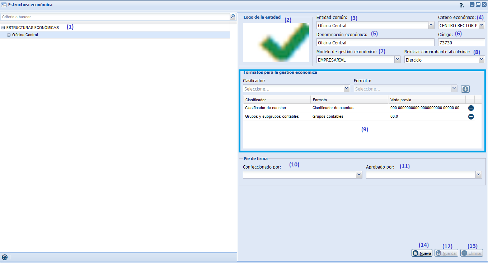
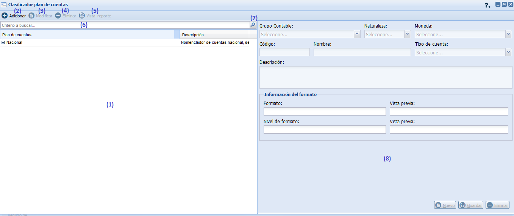
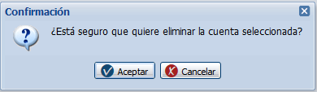
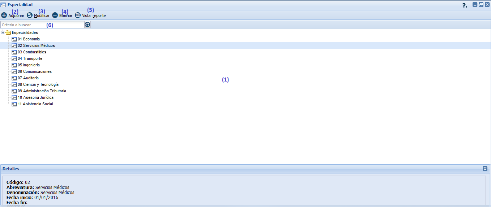
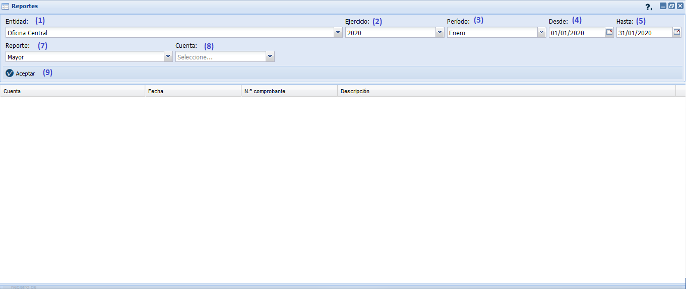
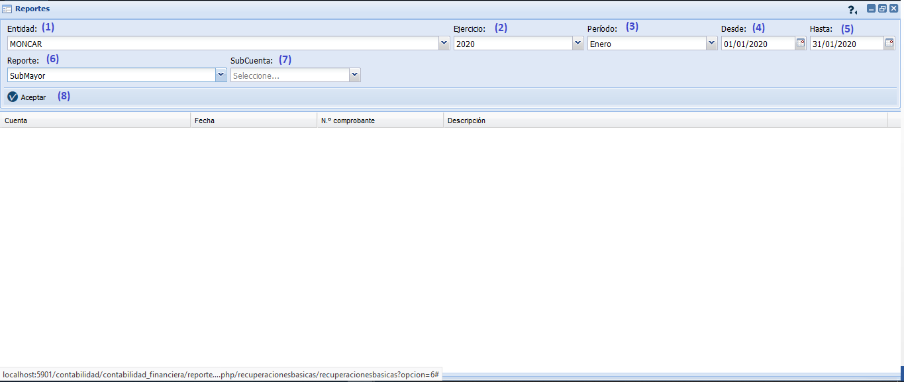
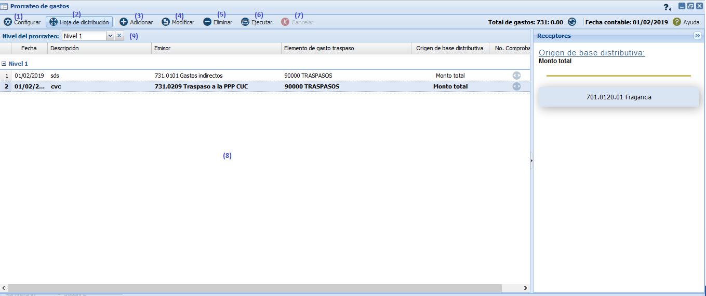

Introducción
La contabilidad general de una empresa es de gran importancia ya que mezcla el control de todas sus operaciones diarias: compra, venta, gastos, inversiones, entre otras. El contador debe registrar, analizar, clasificar y resumir estas operaciones para volcarla en un estado o balance con información veraz. Esta es el eje de la información financiera para todo su negocio. La configuración flexible del plan de cuentas, el procesamiento inteligente de transacciones y las capacidades sofisticadas de personalizar los reportes le proveen las herramientas necesarias para que la empresa domine sus datos financieros.
Existen distintas fases especializadas que forman parte de la contabilidad general: La contabilidad de costos se dedica a clasificar y recopilar información de los costos corrientes y en perspectiva. La contabilidad fiscal, por su parte, está fundamentada en la legislación impositiva de cada país. El contador debe encargarse de elaborar los informes pertinentes para la presentación de declaraciones ante la Administración Pública y para el pago de los impuestos. La contabilidad financiera es otra fase de la contabilidad general, centrada en la información cuantitativa de las transacciones y de otros eventos económicos que son susceptibles de cuantificación. La contabilidad administrativa, por último, está vinculada a la elaboración de informes internos. La información es analizada por los propios responsables de la organización, quienes tomarán decisiones de gestión en base a los datos aportados. Las políticas de una empresa suelen basarse en estos informes de la contabilidad administrativa.
Cumplir con los requisitos de la Norma ISO 9000-2000 en materia de capacitación y desarrollo del personal, además de identificar aspectos de los procesos productivos o de servicio que pudieran estar siendo limitados por una deficiente atención al desarrollo del personal. Apoyan la toma de decisiones estratégicas. Posibilitan el aumento de la productividad del contador en su rol, sin ir en decremento en su calidad de vida. Permiten la focalización del talento humano en las metas de la organización.
De ahí que surgiera la tarea de elaborar un sistema automatizado en entorno WEB, que permita administrar la contabilidad general de una determinada empresa. Para ello se utiliza el procedimiento para dictaminar sobre el grado de adaptación a las Normas Contables Cubanas de los Sistemas Contables – Financieros soportados sobre las tecnologías de la información, aplicados en la RESOLUCIÓN No. 340/2004 del 8 de diciembre de 2004, publicada en la Gaceta Oficial, Edición Ordinaria No. 2, de 19/01/2005. Este manual de usuario tiene como objetivo explicar el funcionamiento del subsistema contabilidad general, desarrollado por el centro de Contabilidad y Finanzas de la Empresa de Tecnologías de Información para la Defensa (XETID).
Prefacio
El subsistema Contabilidad general del Sistema integral de Gestión Empresarial Distra cuenta con un grupo de funcionalidades agrupadas en componentes entre los cuales se encuentran: Maestro, Clasificador de cuentas, Registro de comprobantes, Estados financieros, Reporte y Cierre. El objetivo fundamental de cada uno de estos componentes se desglosa a continuación:
- Maestro: Tiene como objetivo gestionar los conceptos bases para que se realicen adecuadamente las operaciones contables, esta funcionalidad permite definir la estructura económica, los grupos contables y el clasificador de plan de cuentas.
- Clasificador de cuentas: Tiene como objetivo gestionar el clasificador de cuentas, permitiendo además definir aperturas de las cuentas por nomencladores ya especificados en el sistema y en él se asignan la visibilidad y los tipos de cuentas.
- Registro de comprobantes: Documento base de este subsistema, el cual recoge cada uno de los hechos contables que ocurren en la entidad.
- Estados financieros: Tiene como objetivo evaluar la situación financiera de la empresa en un momento determinado pues muestra los saldos de las diferentes cuentas dentro del proceso contable.
- Reportes: Tiene como objetivo emitir los reportes básicos de la contabilidad general como son el Mayor, Submayor, Balance de comprobación de saldos y Registro de comprobantes.
- Cierre: Tiene como objetivo realizar el cierre contable en un momento determinado, ya sea el cierre diario, de período o de ejercicio. Además, generar comprobantes y emitir estados financieros.
¿Cómo acceder al sistema?
Para acceder al subsistema Contabilidad general, se recomienda realizar las siguientes acciones.
Configuración del navegador Mozilla Firefox
Para el correcto funcionamiento del sistema, así como contribuir a la seguridad de las aplicaciones se les recomienda a los usuarios configurar el navegador, específicamente en los aspectos tratados a continuación. El navegador Mozilla Firefox, como todos, tiene un grupo de opciones que deben ser configuradas para lograr mayor eficiencia en el trabajo y ahorrar algo de tiempo en la explotación del mismo, a continuación se detalla cómo emplear estas opciones: En la barra de menú, clic en Herramientas, seleccionar el submenú Opciones, si estamos en Linux esta opción estará en el menú Editar, Preferencias, el resto de los pasos será igual. Ver figura 1.

Figura 1. Configuración del navegador Mozilla Firefox.
Página de inicio
En la ventana Opciones se debe seleccionar la pestaña General, una vez en ella, en Página de inicio se debe especificar la dirección del sistema (1). De esta forma en cuanto se ejecute Firefox el sistema será abierto solicitando el usuario y contraseña de acceso al mismo, ver Figura 2

Figura 2. Página de inicio.
Acceder al sistema
Para acceder al sistema lo primero que se muestra es una ventana de autenticación para registrarse, para ello se introduce el nombre del usuario (1) y la contraseña (2), además se muestra un área con un código para validar la entrada al sistema (3), se introduce el código identificado (4), la interfaz de autenticación, cuenta con un teclado auxiliar que se mostrará al presionar la opción Mostrar teclado(5) que el usuario podrá usar o no según convenga, como parte de las facilidades del sistema. Para acceder definitivamente con el usuario autenticado se oprime el botón Aceptar (6).El sistema valida los datos introducidos, si son correctos muestra los dominios a los que tiene permiso el usuario registrado con el fin de seleccionar la entidad con la que se va a trabajar. Si los datos son incorrectos se visualizará un mensaje de error: “Usuario o contraseña inválidos”, ver figura 3.

Figura 3. Interfaz de autenticación.
La Figura 4 muestra los dominios a los que puede acceder el usuario registrado según los permisos concedidos con el fin de seleccionar la entidad con la que se va a trabajar y finalmente presionar la opción Aceptar. Una vez en el sistema, si el usuario desea trabajar con un usuario diferente debe seleccionar la opción Usuario diferente (1) y al presionar la opción Aceptar (2) el sistema lo redireccionará la interfaz de autenticación, ver Figura 3.

Figura 4. Interfaz para seleccionar la entidad con la que se va a trabajar.
Realizadas las acciones anteriores, se mostrará una nueva ventana del navegador con la interfaz principal del sistema, ver Figura 5.

Figura 5. Interfaz principal del sistema.
La interfaz principal del sistema es muy similar a la interfaz gráfica que estamos acostumbrados a ver en los sistemas operativos, a fin de que los futuros usuarios se sientan cómodos en el trabajo con el sistema. Al seleccionar el botón Inicio se visualizará el menú de opciones del sistema integral mostrando los diferentes sistemas y subsistemas que conforman el mismo, a los cuales se accederá teniendo en cuenta los permisos asignados. Muestra además información sobre el usuario que se encuentra autenticado (1), el tema(2), una foto en caso que tenga (3),así como la Plataforma que engloba la agrupación de los subsistemas (4).Muestra otras opciones generales tales como cambiar la entidad seleccionada (5), ver Figura 4; consultar la ayuda general del portal (6); cambiar la contraseña del usuario que está accediendo al sistema (7) para lo cual se muestra la interfaz correspondiente con el fin de realizar esta operación; un cliente de chat (8); cambiar la apariencia (9) y por último facilita cerrar la sesión del usuario autenticado (10), mostrándose un mensaje de confirmación de la acción. Ver figura6.

Figura 6. Menú de opciones del sistema.
Para cambiar la contraseña en el sistema ver figura 7, primeramente se mostrará por defecto en el campo usuario (1) el nombre del usuario autenticado el cual no se podrá cambiar. Seguidamente se procede a introducir la contraseña anterior (2), así mismo se introduce la nueva contraseña (3) y por último se confirma la nueva contraseña introducida en el campo de texto señalado (4). Para cancelar las acciones y salir de la interfaz sin guardar los datos se oprime el botón Cancelar o la tecla caliente (Alt+X) y cierra la interfaz Cambiar contraseña. En cambio, sí se oprime el botón Aceptar o la o la tecla caliente (Enter) se cambiará la contraseña del usuario autenticado.
Consejos útiles
El sistema de Contabilidad y finanzas se encuentra diseñado para que se pueda configurar, integrar y ampliar fácilmente. Gracias a su integración con Zeolides se unifican las aplicaciones en un entorno de escritorio, de fácil uso para los futuros usuarios. Disponer de todos los datos almacenados en una sola aplicación significa que con unos pocos clics es posible acceder a la información importante.
Entre sus innumerables ventajas se encuentran las facilidades de uso que brinda el sistema entre las que podemos citar.
- Todas las funcionalidades contarán con una ayuda detallada, para el esclarecimiento de posibles dudas que presenten los usuarios. A la misma se podrá acceder utilizando el botón ayuda representado en el sistema por la iconografía (
 ). También lo podemos encontrar en las opciones de las ventanas representada por el icono (
). También lo podemos encontrar en las opciones de las ventanas representada por el icono ( ).
). - En las ventanas se contarán con las opciones tales como: minimizar (
 ), maximizar (
), maximizar ( ) y cerrar (
) y cerrar (  ).
). - Todos los grid que se muestren en el sistema contarán con un paginado con las opciones siguientes: primera página (
 ), página anterior (
), página anterior ( ), cantidad de páginas (
), cantidad de páginas ( ), página siguiente (
), página siguiente (  ), última página (
), última página ( ), actualizar la información del grid (
), actualizar la información del grid (  ), seleccionar la cantidad de páginas a mostrar (
), seleccionar la cantidad de páginas a mostrar ( ) y mostrar la cantidad de resultados existentes (
) y mostrar la cantidad de resultados existentes (  ). Permitirán ordenar en forma ascendente o descendente, así como mostrar u ocultar columnas y agrupar o desagrupar.
). Permitirán ordenar en forma ascendente o descendente, así como mostrar u ocultar columnas y agrupar o desagrupar. - En los formularios si se presiona el botón de Cancelar el sistema cancela la acción y cierra la interfaz.
- En los formularios que se muestran tablas se mostrará la opción Vista reporte (
 ).
). - Siempre que se muestre un grid o un listado en forma de árbol que por su voluminosa información lo requiera, se le brindará al usuario un buscador que posibilitará, a partir de la entrada de un criterio de búsqueda y al presionar la opción Buscar o la tecla caliente (Enter), listar los elementos que correspondan con el criterio de búsqueda especificado. En algunos casos se contará además con un Ordenar que posibilitará ordenar de forma ascendente (
 ) o descendente (
) o descendente ( ) el listado de elementos.
) el listado de elementos. - En el sistema se podrán utilizar además las opciones de los grid tales como: ordenar de forma ascendente ( ) o descendente ( ), ocultar o mostrar columnas así como realizar búsquedas por un campo determinado.
- Siempre que aparezca en una tabla, se utilizará para representar si una información esta pública el ícono (
 ), privada (
), privada ( ), activas (
), activas ( ) e inactivas(
) e inactivas( ).
). - Uno de los requerimientos no funcionales del cliente y que se implementaron en el sistema, fue el de la utilización de tooltip y teclas calientes.
- En los formularios si se presiona el botón de Aceptar o la tecla caliente (Enter) y el sistema guardará los datos y mostrará un mensaje de información al finalizar la operación.
- En los formularios si se presiona el botón Aplicar o la tecla caliente (Ctrl+Alt+P), el sistema guarda los datos del nuevo dato, limpia los campos de la interfaz posibilitando adicionar uno nuevo y finalmente muestra un mensaje de información indicando el éxito de la operación.
- En los formularios si se presiona el botón de Cancelar o la tecla caliente (Alt+X) el sistema cancela la acción y cierra la interfaz.
Descripción de los procesos y su interacción en el sistema.
Como premisa en maestro se deben configurar los elementos que son básicos para el funcionamiento correcto del subsistema: la estructura económica, grupos contables y opcionalmente gestionar el clasificador plan de cuentas. Seguidamente se trabaja con el clasificador de cuenta, los nomencladores para las aperturas y los esquemas que serán usados por categorías, entonces es que comienza el proceso de la contabilidad con la realización de operaciones contables y la utilización del comprobante de operaciones. Un comprobante puede transitar por varios estados en dependencia de donde sea creado y de la acción que se realice con él, entre los estados están los siguientes: “Con error” debido a que existe error en la suma de control, “Sin error “cuando está configurado correctamente y la suma de control es válida, “Terminado” cuando el comprobante ha sido revisado, esta sin error y no se realizarán posteriores modificaciones y “Asentado” cuando este es contabilizado y los saldos de las cuentas del comprobante son posteados al mayor. Luego se realizan los reportes básicos a través de la consulta de la información, para de esta manera emitir estados financieros que no es más que una foto de la situación económica de la empresa. Para la correcta utilización de los conceptos financieros se realiza una gestión de los mismos. Se configuran los conceptos “cuentas reales” (activos, pasivos, capital) y “cuentas nominales” (ingresos, gastos); de estos conceptos se obtiene una evaluación por la fórmula “activos + pasivos = capital” y “activos +pasivos + gastos= capital + ingresos” respectivamente. Para terminar el proceso se realiza un cierre contable “período” (meses) y “ejercicio” (trimestral, anual), además de tener que cerrar subsistemas que se contabilizan, cuentas con saldo contra naturaleza (opcional período), cuentas nominales (al final del ejercicio) y emitir estados financieros. Luego de esto se realizan nuevamente las operaciones contables y se emite el comprobante de operaciones para continuar con el ciclo de la contabilidad general, ver Figura 1.

Figura 1. Descripción de los procesos y su interacción con el sistema.
Maestro
Con el objetivo de gestionar los conceptos bases para que se realicen adecuadamente las operaciones contables, se cuenta en el sistema con el componente Maestro al cual se accede presionando la opción Inicio/Contabilidad /Contabilidad general en el portal del sistema, seguidamente se desplegarán las diferentes funcionalidades a las que se tienen acceso de acuerdo a los permisos asignados, posteriormente se selecciona la opción Maestro y se muestran las funcionalidades que la componen Grupos contables, Tablas por categorías, Nomenclador para aperturas, Estructura económica, Clasificador plan de cuentas, y Especialidad.
Grupos contables
Esta funcionalidad permite definir los grupos por los cuales se organizan las cuentas que se usan en las operaciones contables de una entidad. Se muestra la interfaz que contiene el listado de los grupos contables que han sido adicionados. Como parte de la gestión de estos se puede crear un nuevo grupo contable, eliminarlo, actualizar el listado, mostrar una vista del reporte y realizar alguna búsqueda. Para crear un nuevo grupo se debe seleccionar previamente del listado el grupo al cual se le desea crear uno nuevo, al seleccionarlo se muestra en el panel derecho de la interfaz (2) los datos correspondientes a la selección, ver Figura 1, luego se presiona el botón Nuevo (10) y el sistema permite editar el código que identifica al grupo (3), naturaleza(4), la denominación (4), además se muestra la información del formato para dicho grupo: el formato (6), una vista previa(7) de dicho formato, el nivel hasta el que se llevará el formato (8) y una vista previa (9) del mismo y por último se presiona el botón Guardar (11) y el sistema guarda los datos y muestra un mensaje de información al finalizar la operación, ver Figura 2.

Figura 1. Grupos contables.

figura 2. Mensaje de información
Se podrá además eliminar algún grupo que haya sido seleccionado del listado presionando el botón Eliminar (12) y se muestra un mensaje de confirmación, ver Figura 3.

Figura 3. Mensaje de confirmación para la acción eliminar grupos contables.
Al presionar la opción Aceptar el sistema elimina los datos y muestra un mensaje de información al finalizar la operación, ver Figura 4, en caso contrario se cierra la ventana. Si el grupo contable está en uso el sistema no permite que se pueda eliminar mostrando un mensaje de información, ver Figura 5.

Figura 4. Mensaje de información.

Figura 5. Mensaje de información.
Si se desea actualizar el listado de grupos contables, se oprime el botón Actualizar (13). Para mostrar el reporte asociado se presiona el botón Vista reporte (14) y se muestra la ventana que permite configurar los datos del mismo, ver Figura 6.
 Figura 6. Configuración para mostrar el reporte.
Figura 6. Configuración para mostrar el reporte.
Para configurar el reporte, el usuario procede a seleccionar el tamaño (1) que tendrá el papel (A4, carta, folio o legal), la orientación (2) que puede ser (vertical u horizontal) y la vista previa para el reporte (3) que puede ser (html o pdf). Seguidamente se presiona la opción Aceptar y se muestra el reporte con la configuración antes realizada, ver Figura 7, en caso de no querer mostrarlo se presiona la opción Cancelar.

Figura 7. Vista del reporte grupos contables.
Si se desea buscar un grupo contable registrado con anterioridad se introducen los criterios por los que desee filtrar la búsqueda en el componente que aparece en la parte superior izquierda de la interfaz y se oprime la opción Buscar (15) para mostrar los resultados encontrados, ver Figura 1.
Tablas por categorías.
Esta funcionalidad permite configurar los esquemas que serán necesarios para luego realizar las aperturas de las cuentas. Se muestra un área que muestra la opción de selección esquema (1) y el área donde se listan los esquemas seleccionados previamente (2), ver Figura 1.

Figura 1. Tablas por categorías.
Una vez seleccionado el esquema a mostrar se activa el botón Registrar, al presionar este botón o la tecla caliente (Ctrl+Alt+R) se muestra la interfaz Registrar tabla por categoría, ver Figura 2. El usuario selecciona la categoría que desea registrar (1). Seguidamente presiona el botón Cancelar o Aceptar.

Figura 2. Registrar tablas por categorías.
Nomenclador para aperturas
Esta funcionalidad permite configurar los campos de los nomencladores que serán necesarios para luego realizar las aperturas de las cuentas. Se muestra un área con el listado de los nomencladores para apertura que han sido adicionados al nomenclador con anterioridad (1). La gestión de este nomenclador permite adicionar (2) nomenclador para apertura. Para esto se presiona la opción Adicionar o la tecla caliente (Alt+I). Se podrán modificar (3) y eliminar (4) las mismas si se desea seleccionando en el listado la cuenta que se desee. Si desea buscar una apertura adicionada con anterioridad se introducen los criterios de búsqueda por los que desee filtrar (5) y se oprime la opción Buscar (6) para mostrar los resultados encontrados, ver Figura 1.

Figura 1. Configurar nomencaldor por apertura.
Al seleccionar la opción adicionar se muestra la interfaz Adicionar nomenclador para apertura, ver Figura 2.

Figura 2. Adicionar nomenclador por apertura.
El usuario procede a introducir la denominación (1), se selecciona el concepto (2), identificador (3), identificador padre (4), código (5) y descripción del nomenclador (6). Seguidamente se presionará la opción Aceptar, Aplicar o Cancelar.
Otras de las funcionalidades que se pueden realizar es la modificación de un nomenclador para ello se selecciona del listado y se presiona el botón Modificar o la tecla caliente (Alt+M). Al presionar esta opción se muestra la interfaz Modificar nomenclador para apertura con los datos que han sido adicionados previamente, se modifican los datos y se presiona la opción Aceptar el sistema guarda los datos y muestra un mensaje de información al finalizar la operación, el botón aparece deshabilitado, al dejar algún campo vacío el botón no se activa hasta que estén todos los campos correctos.
También se puede eliminar nomencladores para ello se selecciona un nomenclador y se presiona el botón Eliminar o la tecla caliente (Del). Al presionar esta opción se muestra un mensaje de confirmación, ver Figura 3.

Figura 3. Mensaje de confirmación para la acción eliminar.
Se presiona la opción Aceptar el sistema elimina los datos y muestra un mensaje de información al finalizar la operación.
Estructura económica.
Es la estructura que se crea desde el punto de vista contable, teniendo en cuenta que la estructura organizativa de las entidades de un ministerio u organismo puede no coincidir con la subordinación para el trabajo contable. Mediante este componente se define esa nueva estructura que como se mencionaba anteriormente es solo para el trabajo contable-financiero. Ver Figura 1.

Figura 1. Estructura económica.
Las operaciones que permite realizar esta ventana se describen a continuación:
Tabla (1), lista en un árbol las estructuras económicas que han sido adicionadas y al presionar el ícono () del nodo que conforma la raíz de la estructura arbolea se despliegan los elementos que conforman la misma. Además, permite editar los datos dando clic sobre alguna estructura económica. Estos datos se muestran en el panel derecho de la interfaz, ver Figura 1.
Logo (2), representa el logo de la entidad seleccionada. Se presiona sobre la opción y se habilita una ventana que permite seleccionar la imagen que constituye en el logo de la entidad.
Entidad común (3), se lista en un árbol la estructura común a la cual se le va a crear la estructura económica.
Criterio económico (4): esta opción permite seleccionar el criterio económico por el que se rige la entidad a registrar, el mismo define la gestión que puede realizar la estructura económica sobre el calificador de cuenta siendo estas: (Centro Rector Padre: esta es la entidad rectora de la información que define los clasificadores generales de la relación de la cuenta y las políticas de cada entidad hija. Centro Rector define análisis: entidad que posee los privilegios para las aperturas de las cuentas para su empleo. Centro Rector no define análisis: solo hace empleo del clasificador que le defina su entidad superior, sin tener privilegios de aperturas de cuentas contables. Centro no rector: creada para el análisis de otras entidades sin registrar operaciones entre sí.
Denominación económica (5): en este campo se define la denominación de la estructura económica que se está creando nueva, se genera de forma automática tomando el mismo nombre de la entidad común. Permitiendo modificarla manualmente.
Código (6): es el identificador de la estructura económica. Este debe coincidir además con el código que se define en la cuenta 696 del clasificador de cuenta, en el nivel de quien envía o recibe.
Modelo de gestión económico (7): esta opción permite seleccionar el modelo económico que tendrá la estructura que se está creando (Empresarial o Presupuestado).
Reiniciar comprobante al culminar (8): en esta opción se selecciona cuando se deben reiniciar los comprobantes ya sea al final del período o de ejercicio.
Formatos para la gestión económica (9): esta opción permite seleccionar el tipo de nomenclador por el que se va a aperturar: clasificador de cuenta asociado al formato del mismo nombre registrado en Datos maestros, así como la asociación de Grupo contable con formato del mismo nombre. Permite además adicionar o eliminar estos.
Confeccionado por (10): esta opción permite seleccionar la persona que saldrá en los reportes en el pie de firma en el campo Confeccionado por. Si no se selecciona nada el sistema en los reportes muestra la persona logueada.
Aprobado por (11): esta opción permite seleccionar la persona que saldrá en los reportes en el pie de firma en el campo Aprobado por. Si no se selecciona nada el sistema en los reportes muestra la persona logueada.
Guardar (12): al dar clic en este botón el sistema guarda los datos de la estructura económica.
Eliminar (13) , este botón permite eliminar una estructura económica, aparece deshabilitado hasta que no se seleccione la estructura. Al presionar este se muestra un mensaje de confirmación, ver Figura 2.

Figura 2. Mensaje de confirmación para la acción eliminar.
Al presionar la opción Aceptar el sistema elimina los datos y muestra un mensaje de información al finalizar la operación, ver Figura 3, en caso contrario se cierra la ventana.

Figura 3. Mensaje de información.
Nueva (14): al seleccionar una estructura y presionar esta opción, el sistema habilita los campos permitiendo registrar una nueva estructura subordinada de la seleccionada.
El sistema además permite las funcionalidades como Buscar estructura y Actualizar .
Clasificador plan de cuentas.
Esta funcionalidad permite agregar una o varias cuentas al dominio de cuentas de la Entidad a partir del clasificador de la Entidad rectora. Se muestra una interfaz con el listado del clasificador del plan de cuentas que han sido adicionados con anterioridad (1), ver Figura 1. La gestión de este clasificador posibilita adicionar (2) cuentas para que puedan ser utilizadas a la hora de definir el modelo de gestión económica. Se podrán además modificar (3) y eliminar (4) las mismas si se desea, seleccionando en el listado la cuenta que se desee. Para generar el reporte asociado se selecciona la opción vista reporte (5). Si se desea buscar una cuenta registrada con anterioridad se introducen los criterios de búsqueda por los que desee filtrar (6) y se oprime la opción Buscar (7) para mostrar los resultados encontrados. En la parte derecha de la interfaz se visualiza un área que muestra los campos para crear las cuentas asociadas al plan de cuenta seleccionado previamente del listado (8).

Figura 1. Gestionar clasificador plan de cuentas.
Para adicionar un plan de cuentas se presiona la opción Adicionar o la tecla caliente (Alt+I). Al seleccionar esta opción se muestra la ventana Adicionar plan de cuentas, ver Figura 2.

Figura 2. Adicionar plan de cuentas.
El usuario procede a introducir el nombre (1) que identificará al plan de cuentas, la descripción (2) y selecciona el formato (3) que tendrá el mismo, definido previamente para este clasificador en el componente Formatos del módulo Datos maestros. Seguidamente se presionará la opción Aceptar, Aplicar o Cancelar.
Para modificar algún plan de cuentas primero debe seleccionarse del listado y luego se presiona el botón Modificar o la tecla caliente (Alt+M). Al presionar esta opción se muestra la ventana Modificar plan de cuentas con los datos que han sido adicionados previamente, ver Figura 3, se modifican los datos y se presiona la opción Aceptar, o Cancelar.

Figura 3. Modificar plan de cuentas.
También se puede eliminar un plan de cuentas siempre que no tenga cuentas asociadas, de lo contrario no se habilitará esta opción, para ello se selecciona del listado y se presiona el botón Eliminar o la tecla caliente (Del). Al presionar esta opción se muestra un mensaje de confirmación, ver Figura 4.

Figura 4. Mensaje de confirmación para la acción eliminar.
Al presionar la opción Aceptar el sistema elimina los datos y muestra un mensaje de información al finalizar la operación, ver Figura 5 en caso contrario se cierra la ventana.

Figura 5. Mensaje de información.
Además, se puede mostrar una vista del reporte asociado si se presiona el botón Vista reporte o la tecla caliente (Alt+R). Al presionar esta opción se muestra la ventana Seleccionarla configuración para mostrar el reporte, ver Figura 6. El usuario procede a seleccionar el tamaño (1) que tendrá el papel (A4, carta, folio o legal), la orientación (2) que puede ser (vertical u horizontal) y la vista previa para el reporte (3) que puede ser (html o pdf). Seguidamente se presiona la opción Aceptar y se muestra el reporte con la configuración antes realizada, ver Figura 7 en caso de no querer mostrarlo se presiona la opción Cancelar.
Figura 6. Seleccionar la configuración para mostrar el reporte.

Figura 7. Reporte del plan de cuentas.
Si el usuario desea adicionar una nueva cuenta a un plan de cuentas debe seleccionar dicho plan cuenta del listado, ver Figura 1 y presionar el botón Nuevo del panel derecho, Figura 8. Luego se selecciona el grupo contable al que pertenece (1), naturaleza (2) se muestra por defecto luego de seleccionar el grupo contable, se selecciona la moneda de la cuenta (3), se introduce el código que identificará a la cuenta (4), el nombre (5), el tipo de cuenta (6), la descripción (7), nivel del formato (8) que tendrá la cuenta y la vista previa (9) del mismo. Seguidamente se presiona el botón Guardar (10) y el sistema guarda los datos y muestra un mensaje de información al finalizar la operación. Si se desea eliminar una cuenta del plan se debe seleccionar del listado y presionar la opción Eliminar (11) que muestra un mensaje de confirmación para la acción que se desea realizar, ver Figura 9. Al aceptar este mensaje se muestra se realiza la acción y se muestra el mensaje de confirmación, ver Figura 10.

Figura 8. Adicionar nueva cuenta al plan.

Figura 9. Mensaje de confirmación.

Figura 10. Mensaje de información.
Especialidad.
Esta funcionalidad permite la gestión de las especialidades a utilizar en el sistema, la cual constituye la característica que determina la particularidad a la que está dedicada una persona o entidad, se refiere a la rama profesional que tributa, ver Figura 1. En la interfaz Especialidad se muestra un área con el listado de especialidades adicionadas anteriormente (1), tiene opciones que permiten: adicionar (2) especialidades, modificar (3) y eliminar especialidades (4), mostrar reportes (5), así como realizar la búsqueda de especialidades registradas previamente (6).

Figura 1. Especialidad
Para adicionar una especialidad se presiona la opción Adicionar o la tecla caliente (Alt+I). Se escoge una especialidad del listado teniendo en cuenta el nivel en el que se desea adicionar la misma y el sistema muestra la ventana Adicionar especialidad de nivel (número del nivel en el que se adicionará la nueva especialidad), ver Figura 2. El usuario procede a introducir el código (1), la abreviatura (2), la denominación (3), se selecciona la fecha inicio (4) y la fecha fin (5) de la especialidad a crear. Seguidamente se presiona la opción Aceptar y el sistema guarda los datos y muestra un mensaje de información al finalizar la operación. Si se presiona la opción Aplicar, el sistema guarda los datos, limpia los campos de la interfaz posibilitando adicionar una nueva especialidad y finalmente muestra un mensaje de información indicando el éxito de la operación. Si por lo contrario se presiona la opción Cancelar el sistema cancela la acción y cierra la interfaz.

Figura 2. Adicionar especialidad.
Otras de las funcionalidades que se puede realizar en el sistema, es cuando se selecciona una especialidad del árbol y se presiona el botón Modificar o la tecla caliente (Alt+M). Al presionar esta opción se muestra la interfaz Modificar especialidad de nivel (número del nivel al que pertenece dicha especialidad) con los datos de la especialidad previamente seleccionada, ver Figura 3. El usuario procede a modificar el código (1), la abreviatura (2), la denominación (3), la fecha inicio (4) y la fecha fin (5) de la especialidad. Se presiona la opción Aceptar, el sistema guarda los datos y muestra un mensaje de información al finalizar la operación. Si se presiona la opción Cancelar el sistema cancela la acción y cierra la interfaz.
 Figura 3. Modificar especialidad
Figura 3. Modificar especialidad
También se puede eliminar una especialidad previamente registrada, para ello se escoge una especialidad del árbol y se presiona el botón Eliminar o la tecla caliente (DEL). Al presionar esta opción se muestra un mensaje de confirmación, ver Figura 4. Se presiona la opción Aceptar, el sistema elimina los datos y muestra un mensaje de información al finalizar la operación. En caso de presionar el botón Cancelar el sistema cancela la acción y cierra la interfaz.

Figura 4. Mensaje de confirmación
Otra de las funcionalidades que brinda el sistema es la obtención de un reporte sobre la especialidad previamente registrada, para ello se presiona el botón Vista reporte o la tecla caliente (Alt+R). Al presionar esta opción se muestra la interfaz Seleccionar la configuración para mostrar el reporte. El usuario procede a seleccionar el tamaño del papel (1), la orientación (2) y el reporte (3). Se presiona la opción Aceptar, el sistema guarda los datos y muestra un reporte al finalizar la operación. Si se presiona la opción Cancelar el sistema cancela la acción y cierra la interfaz.
Unificación monetaria
El proceso de unificación monetaria se llevará a cabo en todos los subsistemas de contabilidad y finanzas donde se cambiará la moneda que representa el Peso Convertible (CUC) a Pesos Cubanos(CUP) utilizando una tasa de cambio la cual se definirá institucionalmente en el momento indicado. Calculando la ganancia o pérdidas no realizadas que tendrá la entidad después que se unifique, utilizando como contrapartida la cuenta 698.
Cada subsistema (Caja, Banco, Cobros y Pagos, Contabilidad) realiza este proceso independiente teniendo en cuenta la precedencia de cada uno de ellos.
Condiciones a chequear antes de ejecutar el proceso de unificación:
- Deben estar conciliados los saldos entre los Subsistema y Contabilidad para las cuentas en CUC.
- La cuenta de ganancia o pérdida no realizada tiene que tener naturaleza mixta.
- No deben existir “Anticipos”, pendientes a liquidar en CUC”.
- No deben existir documentos en tránsito para las cuentas bancarias en cuc.
- No deben existir Cuentas Bancarias ni Fondos de efectivo en caja en cuc.
Proceso de unificación monetaria en cada subsistema.
La eliminación del peso convertible consiste en el cambio de moneda origen (CUC) de todos los documentos por la moneda (CUP), dado una tasa de cambio la cual será informada por el Ministerio de Finanzas y Precios.
Eliminación del peso convertible en el subsistema de Caja
- Cancelar las tarjetas prepagadas de combustible.
- En caso que la tarjeta tenga anticipos pendientes a liquidar, el contador decide si se debe liquidar o cancelar los mismos para luego poder cancelar las tarjetas.
- Los anticipos de gastos de viajes pendientes a liquidar en CUC se liquidan en caso que se pueda, en caso contrario se pasa el documento para el fondo en CUP que se configure.
- Los fondos con saldos en CUC se depositan al banco para posteriormente inactivar los mismos.
Eliminación del peso convertible en el subsistema de Banco
- Cancelar documentos no cargados por estado de cuenta.
- Registrar nuevamente en CUP los documentos cancelados.
- Cuentas bancarias en CUC.
- Estas deben ser inactivadas en el momento que se realice el proceso de unificación quedando la cuenta con saldo cero.
Eliminación del peso convertible en el subsistema de Cobros y pagos
- Se unifican los saldos pendientes en CUC por cada tipo de Derecho/Obligación.
- Se unifican las Operaciones Anticipadas con saldos pendientes en CUC.
- Se registran en CUP los Derechos/Obligaciones previamente unificadas en CUC.
- Se registran en CUP las Operaciones Anticipadas previamente unificadas en CUC.
Descripción del componente
En este componente se eliminará la dualidad monetaria, se hará por una única vez en el momento que se decida, denominado ese período como Día Cero conformado por solo un día.
Se muestra la interfaz Unificación, donde se realiza la configuración de las cuentas a unificar a partir de una tasa, el resultado se registra en las cuentas de ganancia o pérdidas según el cambio, ver Figura 1.

Figura 1. Unificación.
Las operaciones que permite realizar esta ventana se describen a continuación:
Moneda a unificar (1), se selecciona la moneda que se va a unificar.
Tasa de unificación (2), se selecciona la tasa por la cual se va a regir el cambio cuando llegue la unificación, la misma se toma de Datos Maestros/Multimoneda/Gestionar tasa. Si no se selecciona una tasa se muestra un mensaje de información, ver Figura 2.
Ganancia o pérdida no realizada (3), se selecciona la cuenta donde se registra la ganancia o pérdida según la tasa de cambio.
Cuenta a unificar (4), se listan todas las cuentas en cuc que van hacer unificadas. Además, se selecciona la cuenta final que es la cuenta en cup donde quedara registrado el saldo de la cuenta a unificar, ver Figura 3.
Información (5), se muestra un panel por subsistema donde se realiza la configuración para la unificación de cada uno.
Guardar (6), al presionar este botón se guarda la configuración que este seleccionada, mostrando un mensaje de información, ver Figura 4.
Ayuda (7) : al dar clic en el botón se muestra la ayuda de la funcionalidad.

Figura 2. Mensaje de información.

Figura 3. Seleccionar cuenta final para la unificación.

Figura 4. Mensaje de información.
Subsistema caja
En el panel de Caja se listan todas las causas que deben ser resueltas para que el subsistema unifique, tales como los documentos pendientes en divisa, los fondos en divisa que deben ser depositados y los fondos a unificar. Además, se debe haber seleccionado la moneda a unificar y la tasa de unificación, ver Figura 5.

Figura 5. Subsistema Caja.
Las operaciones que permite realizar esta ventana se describen a continuación:
Unificar (1), al presionar este botón se valida que el subsistema esté listo para unificar, mostrando mensaje de información según las causas hasta que el subsistema se encuentre listo para unificar.
Documentos y fondos a unificar (2), se listan los documentos en divisa y los fondos a depositar que se deben unificar.
Fondos a unificar (3), se listan los fondos a unificar en cuc, si no se seleccionada el fondo final muestra un mensaje de información, ver Figura 6.
Caja ha unificado (4), muestra a modo de información cuando el subsistema caja este unificado.

Figura 6. Mensaje de información.
Luego de verificado todas las causas se muestra el mensaje de confirmación, ver Figura 7. Seguidamente se presiona la opción Aceptar mostrando un mensaje de información ver Figura 8.

Figura 7. Mensaje de confirmación.

Figura 8. Mensaje de información.
Subsistema Banco
En el panel de Banco se listan todas las causas que deben ser resueltas para que el subsistema unifique, tales como las cuentas bancarias a unificar, así como los documentos no cargados por estado de cuenta. Además, se debe haber seleccionado la moneda que se va a unificar y la tasa que se usará para el cambio, ver Figura 9.

Figura 9. Subsistema Banco.
Las operaciones que permite realizar esta ventana se describen a continuación:
Unificar (1), al presionar este botón se valida que el subsistema esté listo para unificar, mostrando mensaje de información según las causas hasta que el subsistema se encuentre listo para unificar.
Cuentas bancarias a unificar (2), se muestra la cuenta bancaria que se va a unificar y la cuenta bancaria final donde se registrará el saldo una vez realizada la unificación, si no se selecciona la cuenta bancaria final muestra un mensaje de información, ver Figura 11.
Además, se muestra el importe en banco y en libro, así como la diferencia entre ambos, si existiera diferencia se muestra un mensaje de información, ver Figura 12.
Operaciones bancarias no cargadas por Estado de cuenta (3), se listan todas las operaciones bancarias no cargadas por estado de cuenta, las mismas deben ser canceladas o ser cargadas por estado de cuenta para poder unificar. Mientras existan operaciones bancarias no cargadas por estado de cuenta se muestra un mensaje de información, ver Figura 13.
Precedencia (4), muestra la precedencia que debe cumplir antes que banco unifique, en caso que el subsistema Caja no este unificado muestra un mensaje de información, ver Figura 14.
Fecha contable (5), se muestra la fecha contable en la cual se encuentra el subsistema.

Figura 10. Mensaje de información.

Figura 11. Mensaje de información.

Figura 12. Mensaje de información.

Figura 13. Mensaje de información.

Figura 14. Mensaje de información.
Luego de verificado todas las causas se muestra el mensaje de confirmación, ver Figura 15. Seguidamente se presiona la opción Aceptar. Se toma el importe que tienen las cuentas bancarias que se van a unificar multiplicando el mismo por la tasa configurada. Este importe se le suma al importe de las cuentas bancarias final configuradas y se hace cero el importe de las cuentas bancarias a unificar, inactivándolas. Una vez terminada la unificación el contenido del panel Banco se actualiza, mostrando el mensaje de información ver Figura 16.
Figura 15. Mensaje de confirmación.
Figura 16. Mensaje de información.
Subsistema Cobros y pagos (COPA)
En el panel de COPA se listan todos los derechos y obligaciones en cuc que van hacer unificados. Para que el subsistema pueda unificar se debe verificar que los subsistemas Banco, Inventario, Activos fijos y Facturación estén unificados, además se debe seleccionar la moneda a unificar, la tasa de unificación, la cuenta de ganancia o pérdida no realizada y las cuentas a unificar permitiendo guardar dicha configuración, ver Figura 1.

Figura 17. Subsistema Cobros y pagos.
Las operaciones que permite realizar esta ventana se describen a continuación:
Unificar (1), al presionar este botón se valida que el subsistema esté listo para unificar, mostrando mensaje de información según las causas hasta que el subsistema se encuentre listo para unificar.
Tabla (2), se muestran todas las cuentas por cobrar y pagar generadas en la moneda que se va a unificar.
Luego de verificado todas las causas y realizada la configuración se oprime el botón Unificar, mostrando un mensaje de confirmación, ver Figura 18. Al presionar el botón Aceptar se cancelan todas las cuentas por cobrar o pagar generadas por las cuentas en cuc multiplicando el saldo de las mismas por la tasa de cambio, pasando el saldo para las cuentas en cup configuradas, quedando inactivadas las cuentas en cuc. Una vez terminada la unificación el contenido de la tabla del subsistema Cobros y pagos se actualiza, quedando, mostrando el mensaje de información ver Figura 19.
Los derechos y obligaciones en cuc que fueron cancelados son creados automáticamente en cup.
Figura 18. Mensaje de confirmación.
Figura 19. Mensaje de información.
Subsistema Contabilidad
En panel de Contabilidad se listan todos los comprobantes sin asentar de cada subsistema. Para que el subsistema pueda unificar se debe verificar que todos los demás estén unificados (Caja, Banco, Inventario, Activos fijos, Facturación y COPA), además se debe seleccionar la moneda a unificar, la tasa de unificación, la cuenta de ganancia o pérdida no realizada y las cuentas a unificar permitiendo guardar dicha configuración, ver Figura 1.

Figura 20. Subsistema Contabilidad.
Las operaciones que permite realizar esta ventana se describen a continuación:
Unificar (1), al presionar este botón se valida que el subsistema esté listo para unificar, mostrando mensaje de información según las causas hasta que el subsistema se encuentre listo para unificar.
Tabla (2), se listan todos los comprobantes que no están asentados por subsistemas, los mismos se deben asentar para poder unificar.
Luego de verificado todas las causas y realizada la configuración se oprime el botón Unificar, mostrando un mensaje de confirmación, ver Figura 20. Al presionar el botón Aceptar se toma el saldo de las cuentas en cuc multiplicando el saldo de las mismas por la tasa de cambio, pasando el saldo para las cuentas en cup configuradas, quedando inactivas las cuentas en cuc. Una vez terminada la unificación el contenido de la tabla del subsistema Contabilidad se actualiza, quedando la moneda unificada, mostrando el mensaje de información ver Figura 21.
Figura 21. Mensaje de confirmación.
Figura 22. Mensaje de información.
Clasificador de cuentas.
En este componente se configurarán los parámetros correspondientes a las cuentas contables, permitiendo su gestión, de igual manera se realiza la definición de las mismas según el tipo de cuentas y la configuración de los nomencladores a través de los cuales se podrán realizar las aperturas de dichas cuentas, el componente permite además definir la visibilidad de la cuenta registrada en el sistema.
Esta funcionalidad permite registrar y eliminar en el sistema los tipos de cuentas de ingresos, gastos, orden y resultado. Además, definir la visibilidad de las cuentas para los Centros rectores padres, y para las entidades No rectoras se podrán seleccionar las cuentas que se van a emplear del Nomenclador de cuentas definido por la entidad padre.

Figura 1. Clasificador de cuentas.
Las operaciones que permite realizar esta ventana se describen a continuación:
- Tabla (1): muestra todas las cuentas contables que han sido adicionadas.
- Adicionar (2) : si el usuario desea adicionar una cuenta contable se presiona el botón Adicionar o la tecla caliente (Alt+I). Luego se muestra la interfaz Adicionar cuenta contable permitiendo registrar los datos de la misma, ver Figura 2.

Figura 2. Adicionar cuenta contable.
La ventana adicionar cuenta contable contiene los siguientes elementos enumerados:
Código (1), este campo permite introducir el código de la cuenta contable que se está creando, solo admite números enteros de 3 caracteres. Es obligatorio en caso que se deje vacío el sistema muestra una notificación de error.
Descripción (2), este campo permite introducir la descripción de la cuenta contable que se va adicionar, acepta una cantidad máxima de 255 caracteres entre alfanumérico y especiales. Es obligatorio en caso que se deje vacío, el sistema muestra una notificación de error.
Moneda (3), visualiza el tipo de moneda de la cuenta contable que se adiciona.
Grupo contable (4): permite seleccionar el grupo contable que usará la cuenta contable que se está adicionando, los mismo se definen en la interfaz grupos contables. Es obligatorio en caso que se deje vació, el sistema muestra una notificación de error.
Naturaleza (5), en este campo se selecciona la naturaleza de la cuenta contable, es obligatorio en caso que se deje vacío, el sistema muestra una notificación de error.
Visibilidad (6), en este campo se selecciona la visibilidad de la cuenta contable si se quiere que la misma este pública o privada una vez creada, por defecto ella la crea pública.
Tipo de cuenta (7), permite seleccionar el tipo de cuenta que debe tener la cuenta contable que se está adicionando.
Cancelar (6), al dar clic en este botón el sistema cancela el proceso y no adiciona ninguna cuenta contable, se cierra la ventana Adicionar cuenta contable.
Aplicar (7), al dar clic en este botón el sistema valida los datos, se cierra la ventana Adicionar cuentas contables y muestra un mensaje de información, ver Figura 3, permitiendo seguir adicionando nuevas cuentas contables.
Aceptar (8) : al dar clic en este botón el sistema valida los datos, se cierra la ventana Adicionar cuentas contables y muestra un mensaje de información, ver Figura 3.

Figura 3. Mensaje de información.
- Aperturar (3): si el usuario desea aperturar una cuenta contable se presiona el botón Aperturar o la tecla caliente (Alt+A). Mostrando en el lateral derecho como realizar la apertura de las cuentas seleccionadas. Las aperturas se pueden hacer por nomenclador o por código. Si la cuenta seleccionada ya tiene operaciones registradas muestra un mensaje de información, ver Figura 4.

Figura 4. Mensaje de información.
Para realizar una apertura por nomenclador el usuario procede a seleccionar el Nivel de formato (2) el cual es configurado en Maestro/Gestionar formatos, moneda (3) la misma ya está asociada a las cuentas y en aperturas (4) se lista el nomenclador por el cual se va a realizar las aperturas. Seguidamente se presionará la opción Guardar o Cancelar, ver Figura 5.

Figura 5. Apertura de cuenta por nomenclador.
En caso contrario se adiciona (4) el código (6) de la cuenta y la descripción (7) y moneda (8) que permite seleccionar la moneda que llevara asociada la nueva apertura. Seguidamente se presiona el botón Guardar o Cancelar. Además, se puede eliminar (5) la apertura, ver Figura 6.

Figura 6. Apertura de cuenta por código.
- Modificar (4) , se puede modificar una cuenta dando clic sobre la misma y presionando el botón Modificar o la tecla caliente (Alt+M), el botón solo se habilitará al seleccionar una cuenta contable de la tabla (1) de la Figura 1, la misma no debe tener operaciones registradas. Al hacer clic en el botón el sistema habilita la ventana Modificar cuenta contable permitiendo modificar los datos de la cuenta contable seleccionada.
- Eliminar (5), este botón permite eliminar una cuenta contable oprimiendo el mismo o la tecla caliente (Del) , aparece desabilitado hasta que no se seleccione la cuenta contable a afectar,en caso de eliminar una cuenta que tenga operaciones registradas hay que ir al último nivel del árbol. Al presionar esta opción se muestra un mensaje de confirmación, ver Figura 7.

Figura 7. Mensaje de confirmación para la acción eliminar.
Se presiona la opción Aceptar el sistema elimina los datos y muestra un mensaje de información al finalizar la operación, ver Figura 8.

Figura 8. Mensaje de información.
Heredar (6), esta opción solo es habilitada cuando se accede al sistema por una entidad hija. Para heredar una cuenta definida por el centro rector, se presiona el botón heredar y se muestra la interfaz Heredar cuentas definidas por el centro rector. El usuario selecciona la cuenta las cuentas que desea heredar (1), ver Figura 9.

Figura 9. Heredar cuentas definidas por el centro rector.
- Vista de reporte (7), esta opción se puede acceder presionando el botón Vista reporte o la tecla caliente (Alt+ R), ver Figura 10 para ver el reporte correspondiente.

Figura 10. Reporte del plan de cuentas.
- Buscar (8) , esta opción permite listar en la tabla (1) los elementos encontrados que coinciden con los criterios especificados, presionando el botón Buscar o la tecla caliente (Enter), en caso de no encontrar elementos muestra un mensaje de información, ver Figura 11.

Figura 11. Mensaje de información.
- Actualizar (9) , esta opción permite actualizar los elementos contenidos en la tabla (1) que aparecen en la Figura 1.
- Plan de cuentas (10), esta opción es habilitada en las entidades que no tienen cuentas definidas aún en el clasificador, se oprime el botón plan de cuentas mostrando los planes que fueron configurados, permitiendo seleccionar los mismos para conformar el clasificador, ver Figura 12.

Figura 12. Plan de cuentas.
- Listado de cuentas con operaciones (11), leyenda que permite conocer las cuentas que tienen operaciones registradas.
Registro de comprobantes.
Este componente permite el registro y control de los comprobantes de operaciones generados en el propio subsistema de Contabilidad general o de otros subsistemas tales como (Inventario, Facturación, AFT, Nómina, Caja, Banco, Cobros y pagos, Contabilidad de costo). En el caso de generarse un comprobante en el propio subsistema de Contabilidad, y no sea el balance se apertura, no se deben incluir en este las cuentas que sean propias de los restantes subsistemas, ya que esto puede generar descuadres y no permitirá cerrar periodos en dichos subsistemas.

Figura 1. Registro de comprobantes.
En la barra de herramientas (1) se muestra automáticamente el período contable en el que se está trabajando, las acciones que se realizan con el Comprobante (2), Pasar días (3) para ver los comprobantes de otras fechas, Búsqueda avanzada (4), Graficar (5) y el Importar (6). Además se muestra en el cuerpo los comprobantes generados por subsistemas (7); donde podemos acceder a ellos dando clic derecho y se muestra un menú secundario con las opciones de Abrir (Alt+A), Exportar (Alt+E), Vista reporte (Alt+R). Si se quiere Actualizar (8), Limpiar (9) los filtros de búsqueda, así como Agrupar (10) y Desagrupar (11) por comprobantes. En el cuerpo del comprobante se agregó una nueva columna Origen (12), que informa de donde se originó el comprobante. Además de una Ayuda (13) para mostrar sobre las funcionalidades. El sistema permite además realizar una búsqueda directa (14) por número de comprobante.
La funcionalidad Comprobante (2) permite crear un Nuevo comprobante, seleccionando en Comprobante/Nuevo (2) o la tecla caliente (Alt+ N). Al seleccionar esta opción se muestra la interfaz Comprobante de operaciones. El usuario introduce los datos en los campos detalle (1), escoger una fecha (2) el sistema escoge automáticamente la fecha contable actual, observación (3), descripción asociada al comprobante, seleccionar el Subsistema para el cual se genera el comprobante (4), operación asociada al subsistema (5), el documento (6) se genera automáticamente en dependencia de la operación, introducir el número del documento (7), seleccionar la cuenta contable (8), seleccionar la moneda en que se va a hace la operación (9), escoger la tasa de cambio, correspondiente al tipo de moneda (10) escogido con anterioridad, conversión se encuentra inhabilitado mientras no se escoja una Tasa (11), una vez escogida este campo se actualiza automáticamente con el factor de conversión correspondiente, , introducir el crédito, pero al escribir en éste el sistema inhabilita automáticamente el campo Debe (12). En caso de que el campo se deje vacío el sistema no permite adicionar el comprobante ya la hora de introducir el débito el sistema inhabilita automáticamente el campo Haber (13). En caso de que el campo se deje vacío el sistema no permite adicionar el comprobante. Seguidamente presionar el botón Adicionar (14). Permitiendo las acciones de Vista reporte (15), Exportar (16), Terminar (17), Duplicar (18), Anular (19) y Cerrar (20), ver Figura 2.

Figura 2. Comprobante de apertura.
Dentro de las funcionalidades que se pueden realizar con los pases de los comprobantes encuentran cuando se selecciona un pase y se presiona el botón Invertir (1), se duplica el pase e intercambia el débito con el crédito; este estado se utiliza para todos los comprobantes independientemente del módulo que provenga, permitiendo generar ajustes necesarios. Si se presiona el botón Duplicar (2), se crea otro pase idéntico al seleccionado. Si presiona el botón Modificar (3), se inhabilitan las opciones referentes a los subsistemas permitiendo solo modificar solo la moneda, tasa, conversión, cuenta contable, débito y crédito que han sido adicionados previamente, se modifican los datos y se presiona la opción Aceptar, el sistema guarda los datos. También se puede eliminar un pase para ello se selecciona en el listado y se presiona el botón Eliminar (4), ver Figura 3. Al presionar esta opción se muestra un mensaje de confirmación, ver Figura 4. Se presiona la opción Aceptar el sistema elimina los datos y muestra un mensaje de información al finalizar la operación.

Figura 3. Nuevo comprobante de operaciones.

Figura 4. Mensaje de confirmación para la acción eliminar.
Para buscar un comprobante específico que no se encuentre en el listado se presiona el botón Búsqueda avanzada de comprobante(s), ver Figura 5.

Figura 5. Búsqueda avanzada de comprobante(s).
El usuario procede a seleccionar la entidad (1), ejercicio (2), período (3), desde(4) y hasta (5), subsistema (6), estado (7) y número (8). Seguidamente se presiona el botón Aceptar. Si no desea realizar la operación se selecciona el botón Cancelar.
Si el usuario desea monitorear la cantidad de contratos por estados solo tiene que seleccionar el botón Graficar (5), ver Figura 1. Se muestra la interfaz Graficar cantidad de comprobantes por estados, ver Figura 6.

Figura 6. Cantidad de comprobantes por estado.
Para importar un comprobante se presiona el botón Importar (6) de comprobante (s), ver Figura 7.

Figura 7. Importar registro de comprobante.
El usuario procede a seleccionar el sistema contable (1), formato (2) y el archivo a importar presionando el botón de explorar (3) . Seguidamente se presiona el botón Aceptar. Si no desea realizar la operación se selecciona el botón Cancelar.
. Seguidamente se presiona el botón Aceptar. Si no desea realizar la operación se selecciona el botón Cancelar.
Desagregación del presupuesto
En este componente se configura la desagregación para cada período del presupuesto anual aprobado a la entidad, ver Figura 1.

Figura 1. Desagregación del presupuesto.
Las operaciones que permite realizar esta ventana se describen a continuación:
- Ejercicio (1), con esta opción el sistema permite seleccionar el ejercicio al cual se le realizará la desagregación.
- Tabla (2): muestra las desagregaciones del presupuesto por cada período.
- Adicionar (3)
 : si el usuario desea adicionar la desegregación del presupuesto se presiona el botón Adicionar. Luego se muestra la interfaz Adicionar desagregación del presupuesto, ver Figura 2.
: si el usuario desea adicionar la desegregación del presupuesto se presiona el botón Adicionar. Luego se muestra la interfaz Adicionar desagregación del presupuesto, ver Figura 2.

Figura 2. Adicionar desagregación del presupuesto.
La ventana habilitada Adicionar desagregación del presupuesto muestra los siguientes elementos enumerados:
Análisis (1), se selecciona al nivel de cuentas que se vaya a desagregar el presupuesto según el formato de las mismas.
Cuenta contable (2), se selecciona las cuentas por las cuales se desagrega el presupuesto.
Saldo total (3), se pone al saldo total a desagregar.
Tabla (4), muestra el saldo total desagregado por período.
Suma de control (5), muestra la suma total de todos los períodos, la suma tiene que dar igual al saldo total.
Cancelar (6) : al dar clic en este botón el sistema cancela el proceso y no adiciona ninguna desagregación , se cierra la ventana Adicionar desagregación del presupuesto.
: al dar clic en este botón el sistema cancela el proceso y no adiciona ninguna desagregación , se cierra la ventana Adicionar desagregación del presupuesto.
Aplicar (7) : al dar clic en este botón se guardan los datos y el sistema permite seguir adicionando nuevas desagregaciones.
: al dar clic en este botón se guardan los datos y el sistema permite seguir adicionando nuevas desagregaciones.
Aceptar (8) : al dar clic en este botón, se cierra la ventana Adicionar desagregación del presupuesto, se visualiza la selección en la tabla (2) de la Figura 1.
: al dar clic en este botón, se cierra la ventana Adicionar desagregación del presupuesto, se visualiza la selección en la tabla (2) de la Figura 1.
- Modificar (4)
 : este botón permanecerá deshabilitado hasta no ser seleccionado una desagregación del presupuesto que se encuentre listado en la tabla (2) de la Figura 1.
: este botón permanecerá deshabilitado hasta no ser seleccionado una desagregación del presupuesto que se encuentre listado en la tabla (2) de la Figura 1.
- Eliminar (5)
 : este botón se encontrará deshabilitado hasta no ser seleccionado una desagregación del presupuesto en la tabla (2) de Figura 1, permitiendo eliminar la desagregación seleccionada. Al presionar el mismo se muestra un mensaje de confirmación, ver Figura 3.
: este botón se encontrará deshabilitado hasta no ser seleccionado una desagregación del presupuesto en la tabla (2) de Figura 1, permitiendo eliminar la desagregación seleccionada. Al presionar el mismo se muestra un mensaje de confirmación, ver Figura 3.

Figura 3. Mensaje de confirmación.
Al dar clic en el botón Cancelar, se cierra el mensaje de confirmación y se cancela la operación de eliminar. Si selecciona el botón Aceptar el sistema elimina la desagregación seleccionada previamente, actualiza los datos contenidos en la tabla (2) de la Figura 1 y muestra un mensaje de información, ver Figura 4.

Figura 4. Mensaje de información.
Estados financieros
En este componente se configurarán los estados financieros, permitiendo la gestión de las cuentas reales (activos, pasivos, capital) y nominales (ingresos, gastos). Esta funcionalidad permite definir como quedara conformado el estado financiero con las columnas y las filas definiendo la fórmula para cada una, en el mismo se evalúan los estados financieros que se han creado, ver Figura 1

Figura 1. Estados financieros.
Las operaciones que permite realizar esta ventana se describen a continuación:
- Tabla (1): muestra todos los estados financieros configurados de la entidad económica actual.
- Adicionar (2) : si el usuario desea adicionar un estado financiero se presiona el botón Adicionar o la tecla caliente (Alt+I). Luego se muestra la interfaz Adicionar estado financiero permitiendo adicionar filas (3) y columnas (4) al mismo, ver Figura 2.

Figura 2. Adicionar estados financieros.
La ventana adicionar estados financieros contiene los siguientes elementos enumerados:
Código (1): en este campo se debe especificar el código del nuevo estado financiero que se desea adicionar, el mismo debe ser de tipo alfanumérico.
Denominación (2): en este campo se debe introducir la denominación del nuevo estado financiero, admite máximo 255 caracteres.
Columnas/Filas/Valores por defecto (3): en caso de registrarse las columnas se selecciona el tab con este nombre. Para registrar las filas se selecciona el tab del mismo nombre, así como para registrar los valores que va a tomar el estado financiero por defecto.
- Columnas: en este tab se definen las columnas que tendrá el estado financiero que se desea adicionar. Para esto se presiona la opción Adicionar y se habilita la ventana Adicionar columna, Figura 3.

Figura 3. Adicionar columna al estado financiero.
La ventana adicionar columna contiene los campos: Columna (1), en este campo se selecciona una de las columnas que ya están predefinidas. Personalizada (2), al marcar personaliza significa que se va a crear una nueva columna a la cual se le puede asignar una fórmula. Denominación (3), en este campo se debe introducir la denominación de la columna, admite máximo 255 caracteres. Nomenclador por apertura (4), en este panel se selecciona el o los nomencladores para apertura que se evaluarán en cada una de las filas de los estados financieros. En el panel derecho (5) se va mostrando la fórmula que va a tener cada columna que se adicione en caso que sea seleccionada la opción personalizada, permitiendo las opciones de Retroceder y Limpiar los valores que se hallan agregados en la columna, mostrando al final si la expresión es correcta o no. Si se presiona la opción Cancelar (6) el sistema cancela el proceso y no adiciona ninguna columna, se cierra la ventana Adicionar columna. En caso de presionar el Aplicar (7) se guardan los datos y el sistema permite seguir adicionando nuevas columnas. Para el caso del Aceptar (8) al dar clic se cierra la ventana Adicionar columnas, se visualiza la selección en la tabla (1) de la Figura 1. Otras funcionalidades son modificar (1), eliminar (2), subir (3), bajar (4) columnas, ver Figura 4.

Figura 4. Funcionalidades de columna.
2. Fila: en este tab se definen las filas que tendrá el estado financiero que se desea adicionar. Para esto se presiona la opción Adicionar y se habilita la ventana Adicionar fila, Figura 5.

Figura 5. Adicionar filas al estado financiero.
La ventana adicionar fila contiene los siguientes elementos enumerados: Denominación (1), en este campo se debe introducir la denominación de la fila, admite máximo 255 caracteres.
Incluir número de fila (2), esta opción permite que las filas estén enumeradas consecutivamente. Nomenclador de cuentas (3), en este panel desplegable se selecciona el valor que tendrá la fila a nivel de cuenta deseado. Nomenclador por apertura (4), en este panel desplegable se selecciona el o los nomencladores para apertura que formarán el valor de la fila. Estado financiero (5), en el panel derecho se selecciona el estado financiero si el valor de la fila que se está adicionando depende de un estado financiero ya creado. Número de fila (6), en el panel derecho se introduce manual el valor de la fila que se está adicionando. En el panel derecho (7), se va mostrando la fórmula que va a tener cada fila que se adicione, permitiendo las opciones de Retroceder y Limpiar los valores que se hallan agregados en la fila, mostrando al final si la expresión es correcta o no. Al presionar la opción Cancelar (8) el sistema cancela el proceso y no adiciona ninguna fila, se cierra la ventana Adicionar fila. De seleccionar la opción Aplicar (9) se guardan los datos y el sistema permite seguir adicionando nuevas filas. Para el caso del Aceptar (10 se guardan los datos, se cierra la ventana Adicionar fila, se visualiza la información en la tabla (1) de la Figura 1.
Otras funcionalidades son modificar (1), eliminar (2), subir (3), bajar (4) aumentar (5), disminuir (6) filas, ver Figura 6.

Figura 6. Funcionalidades de filas.
Cuando todas las filas y columnas estén configuradas y se presiona la opción Aplicar o Aceptar se crea el estado financiero, ver Figura 1. Al presionar la opción Aplicar el sistema verifica la corrección de los datos, los guarda y muestra un mensaje de información, ver Figura 7, dando la posibilidad de adicionar otros estados financieros.
 Figura 7. Mensaje de información.
Figura 7. Mensaje de información.
Al presionar la opción Aceptar el sistema verifica la corrección de los datos, los guarda, cierra la ventana Adicionar estado financiero y muestra un mensaje de información, ver Figura 7.
- Modificar (3) : este botón permanecerá deshabilitado hasta no ser seleccionado un estado financiero que se encuentre listado en la tabla (1) de la Figura 1.
- Eliminar (4) : este botón se encontrará deshabilitado hasta no ser seleccionado un estado financiero en la tabla (1) de la Figura 1, permitiendo eliminar el estado financiero seleccionado. Al presionar el mismo se muestra un mensaje de confirmación, ver Figura 8.
 Figura 8. Mensaje de confirmación.
Figura 8. Mensaje de confirmación.
Al dar clic en el botón Cancelar, se cierra el mensaje de confirmación y se cancela la operación de eliminar. Si selecciona el botón Aceptar el sistema elimina el estado financiero seleccionado previamente, actualiza los datos contenidos en la tabla (1) de la Figura 1 y muestra un mensaje de información, ver Figura 9.
 Figura 9. Mensaje de información.
Figura 9. Mensaje de información.
- Actualizar (5) : esta opción permite actualizar los estados financieros contenidos en tabla (1) que aparece en la Figura 1.
- Buscar (6) : permite listar en la tabla (1) los elementos encontrados que coinciden con los criterios de búsqueda de los campos.
- Filtros (7): una vez seleccionado un estado financiero se muestran los campos con los datos previamente configurados de la entidad actual, permitiendo cambiar los mismos: Entidad, se selecciona la entidad económica de la que se desea obtener estados financieros seleccionados, y en caso de que el usuario quiera los Estados financieros consolidados, debe seleccionar todas las entidades presentes y emitir el reporte. Ejercicio, se selecciona el ejercicio en el que se desea obtener el estado financiero seleccionado. Período, se selecciona el período en el que se desea obtener el estado financiero seleccionado. Se selecciona la Fecha fin en el que se desea obtener el estado financiero seleccionado.
- Evaluar (8) : se evaluará en el mismo los valores de la entidad, ejercicio, periodo y fecha fin seleccionado anteriormente para obtener los saldos de las cuentas del estado financiero, mostrado posteriormente la vista reporte evaluado, se muestra la ventana que permite configurar los datos del mismo. El usuario procede a seleccionar el tamaño (1) que tendrá el papel (A4, carta, folio o legal), la orientación (2) que puede ser (vertical u horizontal) y la vista previa para el reporte (3) que puede ser (html o pdf). Seguidamente se presiona la opción Aceptar y se muestra el reporte con la configuración antes realizada, ver Figura 10, en caso de no querer mostrarlo se presiona la opción Cancelar.

Figura 10. Ejemplo de reporte de Estado situación.
- Ayuda (9)
 : al dar clic en el botón se muestra la ayuda de la funcionalidad.
: al dar clic en el botón se muestra la ayuda de la funcionalidad. - Presenta además la funcionalidad de Exportar.
Reportes.
En el componente Reportes se muestran todos los reportes correspondientes a las cuentas, subcuentas o niveles a través del Mayor, el Balance de comprobación de saldos, Registro de comprobantes y Estados financieros.
Para buscar un reporte específico el usuario procede a seleccionar la entidad (1), ejercicio (2), período (3), desde y hasta (4) (5), moneda (6) y reporte (7), seguidamente se presiona el botón Aceptar (9), ver Figura 1.
El mayor

Figura 1. Seleccionar tipo de reporte.
Una vez precionada la opción de aceptar se muestra la interfaz del reporte Mayor, ver Figura 2.

Figura 2. Listado de cuentas y comprobantes por tipo de reporte mayor .
El usuario selecciona el botón Vista reporte (2) o la tecla cliente (Alt+R), ver Figura 3.
Figura 3. Seleccionar la configuración para mostrar el reporte.
Para configurar el reporte, el usuario procede a seleccionar el tamaño (1) que tendrá el papel (A4, carta, folio o legal), la orientación (2) que puede ser (vertical u horizontal) y la vista previa para el reporte (3) que puede ser (html o pdf). Seguidamente se presiona la opción Aceptar y se muestra el reporte con la configuración antes realizada, ver Figura 4, en caso de no querer mostrarlo se presiona la opción Cancelar.

Figura 4. Reporte por mayor
Si el usuario cuando seleccione un comprobante se habilitará él botón Abrir comprobante (1) de la barra de herramientas, ver Figura 5.

Figura 5. Abrir comprobante.
El usuario selecciona el botón Abrir comprobante o la tecla caliente (Alt+A), se muestra la interfaz Comprobante de operaciones, ver Figura 6. Seguidamente se presiona el botón Vista reporte (1), Exportar (2) o la opción Cerrar (3).

Figura 6. Ver comprobante.
Submayor.
Para acceder a esta funcionalidad, se debe seguir la secuencia de pasos que se muestra en la Figura 7, luego de seleccionar el reporte (7) se presiona el botón Aceptar (9) y se muestra el listado (1) de comprobantes, ver Figura 8.

Figura 67. Seleccionar tipo de reporte.

Figura 8. Listado de cuentas y comprobantes por tipo de reporte Submayor.
Si el usuario selecciona el botón Vista reporte (2) o la tecla cliente (Alt+R). Seguidamente se presiona el botón Aceptar para generar el reporte, ver Figura 9, o Cancelar para cerrar la interfaz.

Figura 9. Reporte por Submayor.
Si el usuario selecciona un comprobante se habilitará él botón Abrir comprobante (1) de la barra de herramientas, ver Figura 10.

Figura 10. Abrir comprobante.
El usuario selecciona el botón Abrir comprobante o la tecla caliente (Alt+A), se muestra la interfaz Comprobante de operaciones. Seguidamente se presiona el botón Vista reporte (1), Exportar (2) o la opción Cerrar (3).
Balance de comprobación de saldo.
Para esta funcionalidad se debe seguir los pasos, comenzando por elegir la entidad, ejercicio, periodo, y rango de fecha. Luego se selecciona el tipo de reporte en cuestión (6) y para este se habilitan los filtros nivel (7) y cuenta (8). Se presiona la opción Aceptar (8) y el sistema muestra el listado de las cuentas elegidas hasta el nivel escogido, Figura 12.

Figura 11. Tipo de reporte Balance de comprobación de saldos.

Figura 12. Listado de cuentas por tipo de reporte Balance de comprobación de saldos.
Si el usuario selecciona el botón Vista reporte (2) o la tecla cliente (Alt+R). Seguidamente se presiona el botón Aceptar para generar el reporte, ver Figura 13, o Cancelar para cerrar la interfaz.

Figura 13. Reporte por Balance de comprobación de saldos.
El sistema presenta además los reportes Registro de comprobantes, Submayor de gastos, Analisis de gastos, Resumen de gastos por elementos y Operaciones entre dependencias los cuales siguen la misma secuencia analizada en los reportes anteriores.
Cierre.
En este componente se realizará el cierre contable del sistema, para ello se debe realizar el cierre tanto de períodos como de ejercicios contables, así como la generación de comprobantes y emitir los estados financieros. Además, para el cierre contable se debe estar en el último día del último período del último ejercicio, así como la generación de los comprobantes y los estados financieros.
Cierre contable.

Figura 1. Cierre contable.
Las operaciones que permite realizar esta ventana se describen a continuación:
- Listado (1): se muestra un listado de los posibles motivos por los cuales el subsistema no puede realizar el cierre contable.
- Cierre (2): en este menú se listan las opciones del cierre.
Pasar al día: al hacer clic sobre el botón Cierre /Pasar al día se muestra el calendario para seleccionar el día al que se desea pasar mostrando un mensaje de confirmación de la acción. Al dar clic en el botón Cancelar, se cierra el mensaje de confirmación y se cancela la operación de pasar al día. Si se presiona el botón aceptar se muestra un mensaje de información de la acción.
Día: al hacer clic en la opción día se muestra un mensaje de confirmación. Al dar clic en el botón Cancelar, se cierra el mensaje de confirmación y se cancela la operación de pasar día. Si se presiona el botón Aceptar se muestra un mensaje de información.
Período: Esta opción se habilita una vez que el sistema no tenga motivos que impidan el cierre. Al hacer clic en la opción se muestra un mensaje de confirmación. Al dar clic en el botón Cancelar, se cierra el mensaje de confirmación y se cancela la operación de cerrar período. Si se presiona el botón Aceptar se muestra un mensaje de información. En caso de que no se pueda realizar el cierre por cualquier motivo el sistema lo informa con el mensaje, Figura 2.

Figura 2. Mensaje de de información.
Para realizar el cierre del ejercicio se verifica que esté cerrado el último período, se haya realizado la configuración del cierre para el ejercicio (5) y se hayan emitido los estados financieros (6), ver Figura 1.
- Configuración (3), al hacer clic sobre este botón se muestra la interfaz Configuración del cierre para el ejercicio, ver Figura 3.

Figura 3. Configuración del cierre para el ejercicio.
La interfaz se divide en dos paneles donde en el panel superior (1) se deben definir los grupos nominales (acreedor en la primera fila, deudoras en la segunda fila) con la operación contable. La cuenta de resultado en la tercera fila, y las cuentas de utilidad o pérdida en la cuarta y quinta fila respectivamente. Por último, se define la operación para los comprobantes de traspaso y en el panel inferior de la interfaz, las cuentas origen y destino. En el panel inferior se adicionan las cuentas con saldo que necesitan ser traspasadas en el cierre hacia otras cuentas, mediante los conceptos de Cierre de operaciones entre dependencias, cierre de gastos indirectos, cierre de las cuentas de proceso, cierre de cuentas de saldo inicio y otros. Al finalizar las configuraciones se presiona el botón Guardar y el sistema realiza la acción mostrando un mensaje informativo.
Al hacer clic en Estados financieros se muestra la interfaz, ver Figura 4. Esta presenta un listado (1) de los estados financieros que han sido creados con anterioridad. Además, presenta la opción asociar/desasociar estados financieros al cierre contable (2) y emitir (3) los mismos mostrando un mensaje de información, Figura 5.

Figura 4. Estados financieros.

Figura 5. Mensaje de información.
Cuando se pasa al período del cierre del ejercicio se habilita la opción generar comprobantes (1) y cierre Ejercicio (2) ver Figura 6. Al hacer clic en la opcion 1 se muestra la interfaz Generar comprobantes y en esta se listan las opciones para generar los comprobantes de cierre de las cuentas nominales deudoras (1), acreedoras (2), ganancia(3) o perdida(4), así como las cuentas a traspasar (5,6,7). Se muestran las opciones ver comprobante (8) y también la opción de cancelar comprobante permitiendo generar estos cuantas veces sea necesario, ver Figura 7.

Figura 6. Cierre del ejercicio.

Figura 7. Generar comprobante.
Una vez que se realicen todos los comprobantes correspondientes al periodo de cierre, se procede a presionar el botón Cierre/Ejercicio, el sistema muestra el mensaje de conformación, ver Figura 8.

Figura 8. Mensaje de confirmación.
Se presiona la opción Aceptar mostrando un mensaje de información, ver Figura 9.

Figura 9. Mensaje de información.
Descripción de los procesos y su interacción en el sistema.
Como premisa para el subsistema Contabilidad de Costo deben haber sido configurados los formatos que tendrán los nomencladores desde el componente Parámetros del subsistema Datos maestro, incluyendo el código del elemento a adicionar por teclado, cuya longitud estará dada en dependencia del formato configurado anteriormente.

Figura 1. Descripción de Procesos y su integración con el sistema.
Maestro.
Este componente tiene como objetivo gestionar los conceptos bases necesarios para realizar las operaciones de Contabilidad de Costo en la entidad. En él se configurarán los parámetros correspondientes a los Nomencladores y la Gestión de asociación de estos a las áreas de responsabilidad que tiene la entidad.
Nomencladores.
Con el objetivo de gestionar los elementos que sirven de base para la gestión contable, se cuenta en el sistema con la funcionalidad Nomencladores. Se selecciona el nomenclador que desee gestionar y se visualiza la interfaz asociada al mismo, ver Figura 1.

Figura 1. Gestionar nomencladores.
Panel izquierdo (1): En dicho panel se seleccionan las clasificaciones de los nomencladores que se desean registrar: centro de costo, nivel de actividad económica, elemento del gasto.
Panel derecho (2): una vez seleccionado la clasificación del nomenclador en el panel izquierdo, se habilita el panel derecho (2) el cual brinda las diferentes funcionalidades, las cuales se detallan a continuación:
- Adicionar : al seleccionar este botón o la tecla caliente (Alt+I) el sistema habilita la ventana, Adicionar centro de costo| nivel de actividad económica| elemento de gasto, dependiendo de la clasificación seleccionada previamente, ver Figura 2.
 Figura 2. Adicionar centro de costo.
Figura 2. Adicionar centro de costo.
La ventana habilitada Adicionar centro de costo |nivel actividad económica |elemento de gasto, muestra los siguientes elementos enumerados:
- Formato (1): este campo es obligatorio, donde se debe seleccionar el formato del nomenclador a adicionar, el cual se configura previamente en Datos maestros/Parámetros /Gestionar formatos.
- Código (2): se introduce el código que representa ese elemento, el cual tiene un tamaño máximo definido en Datos maestros/Parámetros /Gestionar formatos. En caso de introducir más caracteres el sistema lo notifica con un error. En caso de dejarlo vacío el sistema lo notifica con un error.
- Descripción (3): en este campo se introduce una breve descripción del nomenclador a registrar. En caso de dejarlo vacío el sistema lo notifica con un error.
Seguidamente se presionará la opción Aceptar , si existe algún dato erróneo se mantendrá deshabilitado el botón Aceptar, se cierra la ventana al adicionar los nuevos datos, mostrándose un mensaje de información, ver Figura 3. En caso de repetirse el código el sistema muestra un mensaje de información, ver ejemplo Figura 4.

Figura 3. Mensaje de información.

Figura 4. Mensaje de información.
En caso de querer adicionar más de un centro de costo |nivel actividad |elemento de gasto, sin tener que cerrar la ventana se presiona la opción Aplicar donde el sistema verifica la entrada de los datos y los guarda sin cerrar, y se muestra un mensaje de información, ver Figura 3, en caso de repetirse el código el sistema lo informa, ver Figura 4. Al dar clic en el botón Cancelar el sistema cancela el proceso que se estaba realizando sin guardar ningún dato y se cierra la ventana.
- Modificar : al presionar esta opción, o la tecla caliente (Alt+M), se muestra la interfaz Modificar centro de costo |nivel actividad |elemento de gasto con los datos del nomenclador seleccionado en el panel derecho (2), ver Figura 1, y además con un estado que trae por defecto que puede ser activo o inactivo.
- Eliminar : al dar clic en este botón o la tecla caliente (Del), el sistema permite eliminar el o los nomencladores seleccionados previamente en el panel derecho (2) con solo un clic en este o estos y muestra un mensaje de confirmación de la acción, ver Figura 5.
 Figura 5. Mensaje de confirmación.
Figura 5. Mensaje de confirmación.
Al presionar la opción Aceptar el sistema elimina los datos y muestra un mensaje de información al finalizar la operación, ver Figura 6, en caso contrario se cierra la ventana.
 Figura 5. Mensaje de confirmación.
Figura 5. Mensaje de confirmación.
- Heredar : se presiona el botón o la tecla caliente (Ctr+Alt+H). Esta acción no puede ser realizada si no se ha logueado por una entidad subordinada económicamente de un centro rector definida en la Estructura Económica. Al hacer clic en este botón el sistema hereda la información de los nomencladores y se muestra la interfaz Heredar <centro de costo/nivel de actividad económica/ elemento de gasto>, ver Figura 6.

Figura 6. Herencia de nomencladores.
Para realizar la operación de heredar debe existir una estructura rectora y esta debe contener nomencladores definidos, en caso de no existir el sistema muestra un mensaje de información notificándolo, ver Figura 7.
 Figura 7. Mensaje de información.
Figura 7. Mensaje de información.
A continuación, se ha enumerado las diferentes opciones para el caso de heredar un centro de costo|nivel actividad económica |elemento de gasto.
- Criterio de búsqueda (1): en este campo es introducido los elementos a emplear como dato comparativo para la realización de la búsqueda. La búsqueda puede ser realizada mediante la inserción de la descripción o una parte de esta, del código y la combinación de ambos.
- Buscar (2): este botón permite buscar los elementos que se ajuste al criterio de búsqueda (1) especificado, los resultados de la búsqueda son mostrados en el área de posibles centros de costo a heredar (5). Si el criterio de búsqueda introducido no se corresponde con la información existente es mostrado un mensaje de información, ver Figura 8.
 Figura 8. Mensaje de información.
Figura 8. Mensaje de información.
- Recargar árbol (3) : esta opción permite recargar los elementos contenidos en el árbol que aparece en la Figura 6.
- Búsqueda avanzada (4) : al hacer clic en este botón el sistema habilita la ventana Buscar centros de costo, ver Figura 9, permitiendo realizar una búsqueda avanzada del tipo de nomenclador que se desea heredar, introduciendo el código (1), el estado (2) o la descripción (3) . Los resultados de la búsqueda se muestran en el Área de posibles centros de costo a heredar. (5).

Figura 9. Búsqueda avanzada.
- Área de posibles elementos a heredar (5): de la entidad padre. En la misma es posible acceder a un menú conceptual, Recargar nodo.
- Cancelar (6) : al hacer clic en este botón el sistema cierra la ventana y no realiza la operación.
- Aceptar (7) : al hacer clic en este botón el sistema hereda la información del centro de costo seleccionado en el área (5), ver Figura 6 y muestra un mensaje de confirmación, ver Figura 10. En caso de ser seleccionado un centro de costo/nivel de actividad económica/elemento de gasto que haya sido heredado con anterioridad se muestra un mensaje de información dependiendo del concepto que se esté manejando, ver Figura 11.

Figura 10. Mensaje de información.

Figura 11. Mensaje de información.
- Vista reporte : mediante la selección de este botón o la tecla caliente (Alt+R) es emitido un reporte que contiene los diferentes nomencladores configurados. Este botón permanecerá invisible hasta no ser seleccionado un nomenclador. Al presionar el mismo el sistema muestra una interfaz para crear un reporte sobre la operación realizada, ver Figura 12.
 Figura 11. Seleccionar configuración de reporte.
Figura 11. Seleccionar configuración de reporte.
Los diferentes elementos que contiene la interfaz Seleccionar la configuración para mostrar el reporte son enumerados a continuación para su explicación:
- Tamaño del papel (1): en este campo es seleccionado el tipo de papel donde será emitido el reporte, a partir de la selección realizada se actualiza el tamaño de la hoja con el definido para el tipo seleccionado.
- Orientación (2): es seleccionada a partir de que eje de visualización será mostrado el reporte. El mismo puede ser vertical u horizontal.
- Reporte (3): es seleccionado el formato donde será emitido el reporte.
- Área (4): son mostradas las dimensiones del área donde será emitido el reporte, este valor dependerá del tamaño del papel (1) seleccionado.
- Cancelar (5) : al ser presionado este botón se cierra la interfaz Seleccionar la configuración para mostrar el reporte, no es realizada la acción y se regresa a la interfaz Gestionar nomencladores.
- Aceptar (6) : al presionar este botón es mostrado un reporte que se ajusta a las características seleccionadas en la interfaz Seleccionar la configuración para mostrar el reporte y contiene la información del nomenclador seleccionado.
- Búsqueda básica: este botón permite buscar los elementos que pertenezcan al tipo de nomenclador previamente seleccionado en el área (1) Figura 8 y se ajusta a la Búsqueda avanzada (9) especificado.
- Detalles: se muestra toda la información referente al elemento antes seleccionado en el área de gestión del panel izquierdo (2), Figura 1.
- Ayuda
 : para la consulta inmediata de las funcionalidades.
: para la consulta inmediata de las funcionalidades. - Recargar nodo, esta opción es habilitada cuando se presiona clic derecho en el Panel derecho (2), al dar clic se recarga el árbol existente.
Panel inferior (3): se muestra en un área el listado de las clasificaciones que han sido adicionadas al nomenclador con anterioridad.
Gestionar asociación.
La interfaz que se habilita al dar clic en esta funcionalidad se muestra en la Figura 1, en ella se brinda la posibilidad de desarrollar diferentes operaciones, las cuales se enumeran a continuación.

Figura 1. Gestionar asociación áreas.
Si el usuario desea Adicionar (1), al hacer clic en este botón el sistema habilita la ventana Adicionar asociación área de responsabilidad NAE || Centro de costo como se muestra en la Figura 2.

Figura 2. Adicionar asociación área de responsabilidad_NAE || Centro de costo.
Se han enumerado las diferentes opciones que en ella se brindan.
- Área (1), muestra el árbol de áreas de responsabilidad, áreas registradas previamente en el módulo Inicio/Gestión organizacional/Gestionar estructura.
- Buscar (2), este campo permite buscar Centros de costo o Niveles de actividad económica insertando el nombre o código correspondiente.
- Búsqueda avanzada (3), permite hacer una búsqueda más avanzada de los Centros de costo o Niveles de actividad económica a través de varios criterios.
- Área (4), muestra el árbol de Centros de costos y NAE registrador en la entidad.
Cancelar (5), al hacer clic en este botón el sistema cierra la ventana y no realiza la operación.
Aplicar (6): al hacer clic en este botón el sistema guarda los datos de la nueva asociación sin cerrar la ventana y muestra un mensaje de información, ver Figura 3.
Aceptar (7): al hacer clic en este botón el sistema cierra la ventana y registra los nuevos datos mostrando un mensaje de información, ver Figura 3. Si al dar clic en el botón Aplicar (6) o Aceptar (7) y la asociación que se está intentando adicionar ya existe el sistema muestra un mensaje de error ver Figura 4.

Figura 3. Mensaje información.

Figura 4. Mensaje información.
- Buscar (2): al escribir el criterio de búsqueda el sistema busca una asociación previamente registrada.
- Heredar (3): para heredar debe existir una estructura padre y este debe contener asociaciones definidas. Se oprime este botón y se muestra la interfaz Heredar Asociación, ver Figura 5.

Figura 5. Heredar asociación.
Para heredar una asociación previamente registrada en la entidad padre, el sistema habilita la ventana Heredar asociación. Se han enumerado las diferentes opciones que en ella se brindan. Buscar (1), Área de posibles asociaciones a heredar (2), en esta área se muestra todas las asociaciones registradas en la entidad padre. Cancelar (3), al hacer clic en este botón el sistema cierra la ventana y no realiza operación. Aplicar, (4), al hacer clic en este botón el sistema guarda los datos y limpia para heredar otra asociación. Aceptar, (5), al hacer clic en este botón el sistema hereda la información de la asociación seleccionada en el área (2) de la Figura 5, y cierra la interfaz.
- Área (4): se muestra las áreas asociadas, al hacer doble clic en un área de responsabilidad el sistema habilita la ventana Detalles como se muestra en la Figura 1.
- Actualizar (5): al hacer clic en este botón el sistema actualiza el registro de las asociaciones en el Área donde se muestra las áreas asociadas (4).
- Ayuda (6): se muestra la ayuda de la funcionalidad. Para ver los detalles una asociación y permitir modificar la asociación previamente registrada, el sistema habilita la ventana Detalles de la Figura 1. Se han enumerado las diferentes opciones que en ella se brindan.
- Adicionar (7): este botón permite adicionarle más centros de costo al área de responsabilidad antes seleccionada (4) Figura 1, cuando se da clic en el mismo se muestra la interfaz Adicionar Centro de costo || NAE, ver la Figura 6.

Figura 6. Adicionar Centro de costo || NAE.
Para realizar la búsqueda el usuario oprime el botón Buscar (1), este campo permite buscar Centros de costo o Niveles de actividad económica insertando el código o nombre correspondiente. Búsqueda avanzada (2), permite hacer una búsqueda más avanzada de los Centros de costo o Niveles de actividad económica a través de varios criterios. Área (3), muestra el árbol de Centros de costo y NAE definidos en la entidad. Cancelar (4), al hacer clic en este botón el sistema cierra la ventana y no guarda los datos. Aplicar (5), al hacer clic en este botón el sistema guarda los datos sin cerrar la ventana y muestra un mensaje de información, ver Figura 7. Aceptar (6), al hacer clic en este botón el sistema guarda los datos, cierra la ventana y muestra un mensaje de información, ver Figura 7.

Figura 7. Mensaje de información.
- Eliminar (8): una vez seleccionado en el Área (10) Figura 1 el Centro de costo o NAE que se desea eliminar y se ha presionado este botón, el sistema muestra un mensaje de confirmación de la eliminación, ver Figura 8, en caso de aceptarse la eliminación y si la operación puede ser ejecutada se muestra un mensaje de información, ver Figura 9.

Figura 8. Mensaje de confirmación.

Figura 9. Mensaje de información.
- Buscar (9): al escribir el criterio de búsqueda el sistema busca un centro de costo o NAE previamente registrados.
- Área (10), se muestra los centros de costo o NAE asociados al área de responsabilidad previamente seleccionada en el área (4) de la Figura 1.
- Actualizar (11): al hacer clic en este botón el sistema actualiza el registro de los centros de costo o NAE asociados al área de responsabilidad previamente seleccionada en el área (4) de la Figura 1.
Operaciones
Este componente tiene como objetivo gestionar las operaciones del módulo Contabilidad de Costos en la entidad. En él se efectúa las operaciones de prorrateo de gastos y costeo.
Prorrateo de gastos
Al presionar esta opción el sistema muestra la interfaz principal de este componente, la misma se muestra en la Figura 1.

Figura 1. Prorrateo de gastos
Antes de comenzar a registrar los prorrateos de gastos, es necesario primeramente llevar a cabo una serie de configuraciones como Configurar (1) los niveles de prorrateo, y confeccionar la Hoja de distribución (2):
- Configurar (1): al presionar esta opción el sistema habilita la ventana Configuración, ver Figura 2 , donde se definen las cuentas de gastos que intervienen en el prorrateo, el elemento de gasto de traspaso, los niveles de prorrateo según origen y destino, así como la base distributiva en caso de utilizarse en la entidad.

Figura 2.Configuración
Al seleccionar la o las Cuentas de gastos (1), así como el Elemento de gasto de traspaso (2), se procede a Adicionar (3) los niveles de prorrateo.
Al presionar el botón Adicionar, se habilita la fila con el nivel a adicionar, y el campo Formato del clasificador de cuenta origen (4) y destino (5). Una vez registrado los datos se presiona la opción Aceptar y se guardan los valores del nivel, mostrándose seguidamente un mensaje informativo, ver Figura 3. En caso de querer modificar el nivel, se presiona con doble clic el nivel, se realizan los cambios, y el sistema muestra el mensaje de información, ver Figura 4.

Figura 3. Mensaje de información.

Figura 4. Mensaje de información.
Una vez registrado los niveles de prorrateo se procede a registrar las Bases distributivas presionando el botón Adicionar (6), donde se habilitan los campos para el registro, Nombre (7), Abreviatura (8), Formato destino (9).
Se presiona el botón Aceptar para guardar los valores y cerrar la ventana Configuración, o el botón Cancelar en caso de no desear completar el registro y no guardar ningún valor.
- Hoja de distribución (2): al presionar esta opción el sistema habilita la venta con el mismo nombre, para el registro de valores según la base distributiva definida previamente, ver Figura 5.

Figura 5. Hoja de distribución de prorrateo.
Se selecciona el ejercicio (1), periodo (2), y la base distributiva (3) por la cual se realizará la distribución de las cuentas contables en Cuentas a distribuir (4). Una vez que se realice la distribución se procede a guardar los valores presionando las opciones Aplicar o Aceptar.
- Adicionar (3): al presionar la opción, el sistema habilita la ventana Adicionar prorrateo, ver Figura 6.

Figura 6. Adicionar prorrateo.
Los campos de esta ventana se detallan a continuación:
Nivel (1): este campo permite seleccionar uno de los niveles que se configuran previamente en la opción Configurar. Según el nivel seleccionado será al que pertenecerá el prorrateo a registrar.
Descripción (2): en este campo el usuario detallara la operación que está realizando.
Emisor (3): se selecciona la cuenta contable emisora en el prorrateo. Es un campo obligatorio.
Elemento de gasto traspaso (4): Se selecciona el elemento de gasto por el que se realizara el prorrateo.
Origen de base distributiva (5): se debe elegir sobre qué base se desea registrar el prorrateo. Dependiendo de la opción que se selecciones se habilitaran campos relacionados. En caso de seleccionar Unidades físicas, se habilitara el combo para seleccionar la base distributiva configurada previamente. Si se selecciona elemento de gasto, se habilita el combo para seleccionar los elementos de gastos. De seleccionar la base Centro de costo, se habilita el campo para seleccionar la cuenta de gasto. Por último, si se selecciona la base monto total no se habilita ningún campo, ya que el sistema prorratea el importe equitativamente por todas las cuentas receptoras.
Receptores (6): se selecciona la o las cuentas que reciben el importe distribuido.
Adicionar (7): se presiona la opción para adicionar la o las cuentas seleccionadas en el campo anterior.
Listado de receptores (8): Se muestran las cuentas receptoras adicionadas previamente.
Eliminar (9): permite eliminar la o las cuentas seleccionadas en el listado de receptores.
Se presionan las opciones Aplicar o Aceptar para guardar el prorrateo, y el Cancelar en caso de querer cerrar la ventana sin guardar datos.
- Modificar (4): esta acción permite modificar un prorrateo seleccionado en el listado. Se habilita la ventana Modificar prorrateo, permitiendo realizar cambios en el seleccionado. Una vez que el usuario registra los cambios debe presionar la opción Aceptar para guardar o Cancelar si no desea registrar dichos cambios.
- Eliminar (5): con esta opción el sistema permite eliminar los prorrateos registrados.
- Ejecutar (6): como premisa debe existir una operación configurada en el subsistema Costo en Datos maestros/Contabilización/Gestionar operaciones contables. Una vez que se seleccione el prorrateo a ejecutar, y se presiona la opción, el sistema habilita el comprobante de operaciones, para contabilizar la operación.
- Cancelar (7): el sistema permite además, cancelar el comprobante de operaciones de prorrateo.
- Listado (8): se listan los prorrateos registrados previamente, dando la posibilidad de seleccionarlos para realizar otras acciones como Eliminar, Ejecutar y Cancelar.
- Nivel de prorrateo (9): se muestran los niveles de prorrateo configurados previamente en la opción Configurar.
- El componente además cuenta con la funcionalidad de ayuda.
Cierre
Este componente tiene como objetivo efectuar el cierre contable de período del módulo. En caso que se vaya a cerrar el período contable se verifica que no existan operaciones pendientes de asientos, es decir, que todos los comprobantes de operaciones se hayan generado, para evitar que se queden operaciones fuera de los resultados del período, ver Figura 1.

Figura 1. Cierre de costo
La ventana habilitada Cierre muestra los siguientes elementos enumerados:
- Tabla (1): esta tabla visualiza los posibles errores que pueden encontrarse durante el proceso de cierre tanto del ejercicio como del período.
- Cierre (2): al presionar el botón se habilita un menú con otras dos opciones (Pasar día y Periodo). Al presionar la primera opción se habilita un calendario permitiendo al usuario seleccionar la fecha a la que se registrara el módulo. En caso de elegirse la segunda opción se muestra un mensaje de confirmación de la acción, ver Figura 2, al aceptar este se cierra el periodo contable y se muestra el mensaje de información, Figura 3.

Figura 2. Mensaje de confirmación.

Figura 3. Mensaje de información.
- Actualizar (3) : actualizar el listado de las causas para realizar el cierre contable.
Descripción de los procesos y su interacción en el sistema.
Como premisa se deben disponer los datos necesarios para la configuración básica del subsistema Caja. Se deben gestionar las personas, las monedas, los documentos, la fecha del subsistema, las cuentas contables, los instrumentos bancarios, las operaciones contables y los modelos en los componentes de Recursos Humanos, Datos Maestros y Contabilidad. Una vez realizadas las configuraciones básicas se procede a realizar las operaciones comunes de una Caja. Dicho subsistema cuenta con un grupo de funcionalidades agrupadas por componentes entre los cuales se encuentran: Maestro, Carga Inicial, Operaciones, Anticipos, Reportes y Cierre. El objetivo fundamental de cada uno de estos componentes se desglosa a continuación:
Maestro: En este componente es donde primero se debe trabajar una vez que se accede al subsistema, el objetivo del mismo es permitir la configuración de los elementos bases para el funcionamiento de las operaciones de caja. Brinda la posibilidad de definir los tipos de fondos y las cajas a las que se le asocian dichos fondos, permite la gestión de firmas autorizadas para la entrega de anticipos de gastos de viaje y combustible, así como la gestión de vehículos y tarjetas prepagadas de combustible.
Carga inicial: Esta funcionalidad tiene como propósito registrar todas las operaciones que la entidad tenga pendiente al comenzar el trabajo con el sistema, ya sean movimientos de entrada/salida o anticipos de gastos de viajes nacionales o al extranjero. Se realiza el arqueo a los fondos existentes para la carga inicial para poder cerrar la misma y dar comienzo a las operaciones en el subsistema.
Operaciones: Este componente permite realizar la gestión de las operaciones que se realizan en la caja, tales como los movimientos de entrada/salida que se realizan en la entidad a partir del primer periodo contable, los reembolsos, depósitos, pago de nómina, así como el arqueo a los fondos existentes en el sistema.
Anticipos: El objetivo de este componente es gestionar los anticipos tanto de gastos de viajes como de combustible, los cuales serán liquidados posteriormente.
Reportes: Su objetivo es permitir la emisión de reportes referentes a las operaciones registradas en el subsistema de Caja.
Cierre: El objetivo de este proceso es gestionar el cierre del periodo de la caja, del periodo y ejercicio contable del subsistema de Caja.

Figura 1. Flujo del proceso de Caja.
Maestro.
En este componente se gestionan las cajas y los fondos de la entidad, las firmas autorizadas, así como las tarjetas prepagadas de combustible.
Gestionar cajas y fondos.
En este componente se gestionan las cajas, los permisos a esta y los fondos de la entidad. En caso que no existan datos configurados, el sistema muestra un mensaje de información, ver Figura 1.

Figura 1. Mensaje de información.
Se muestra la interfaz principal, ver Figura 2, donde se puede utilizar la tecla Tab para moverse de forma rápida por las diferentes opciones y para regresar a la anterior con la combinacion de teclas Shift + Tab.

Figura 2. Gestionar cajas y fondos.
La interfaz se divide en cuatro paneles principales:
Panel (1), en dicho panel se gestionan todas las cajas, ver Figura 3 .

Figura 3. Gestionar cajas.
Las funcionalidades de dicha interfaz se describen a continuación:
-
Adicionar (1), al presionar este botón o la tecla caliente (Alt+I) el sistema habilita la ventana Adicionar caja, ver Figura 4.

Figura 4. Adicionar caja.
La ventana habilitada Adicionar caja muestra los siguientes elementos enumerados:
Código (1), en este campo se debe especificar el código de la nueva caja que se desea adicionar, el mismo debe ser de tipo numérico y con un tamaño máximo de 8 dígitos; en caso que el usuario introduzca más caracteres el sistema lo notifica con un error. Este campo es obligatorio, en caso de que se deje vacío el sistema lo notifica con un error y mantiene desactivado los botones aplicar y adicionar.
Denominación (2), en este campo se debe introducir la denominación de la caja. El mismo admite como máximo 50 caracteres; en caso que el usuario introduzca más caracteres el sistema lo notifica con un error, es de tipo alfanumérico. Este campo es obligatorio, en caso de que se deje vacío el sistema lo notifica con un error y mantiene desactivado los botones aplicar y adicionar.
Doc. Aprobado (3), este campo hace referencia al nombre del tipo de documento, que puede ser un documento rector o una resolución. Admite caracteres alfanuméricos con un máximo de 16 caracteres, así como los caracteres especiales (-, _, /, (,), :). En caso que el usuario introduzca más caracteres el sistema lo notifica con un error. Es un campo obligatorio, en caso de que se deje vacío el sistema lo notifica con un error y mantiene desactivado los botones aplicar y adicionar.
Fecha de aprobación (4), este campo permite seleccionar o introducir la fecha de aprobación de la caja con el formato establecido dd/mm/aaaa. Es obligatorio, en caso de que se deje vacío el sistema lo notifica con un error y mantiene desactivado los botones aplicar y adicionar.
Descripción (5), en este campo se introduce una breve descripción sobre la caja que se desea adicionar, admite caracteres alfanuméricos con una cantidad máxima de 255 caracteres y permite la entrada de los caracteres especiales (-, _,”, / (,)). En caso que el usuario introduzca más caracteres el sistema lo notifica con un error. Es un campo obligatorio, en caso de que se deje vacío el sistema lo notifica con un error y mantiene desactivado los botones aplicar y adicionar.
Cancelar (6) , al dar clic en este botón el sistema cancela el proceso que se estaba realizando sin guardar ningún dato, y cierra la ventana Adicionar caja.
, al dar clic en este botón el sistema cancela el proceso que se estaba realizando sin guardar ningún dato, y cierra la ventana Adicionar caja.
Aplicar (7) , al dar clic sobre este botón el sistema verifica la entrada de los datos, si los datos son correctos, se guardan sin cerrar la ventana, permitiendo adicionar una nueva caja y se muestra un mensaje de información, ver Figura 5. En caso de repetirse el código de un tipo de cuenta existente el sistema muestra un mensaje de información, ver Figura 6.
, al dar clic sobre este botón el sistema verifica la entrada de los datos, si los datos son correctos, se guardan sin cerrar la ventana, permitiendo adicionar una nueva caja y se muestra un mensaje de información, ver Figura 5. En caso de repetirse el código de un tipo de cuenta existente el sistema muestra un mensaje de información, ver Figura 6.
Aceptar (8) , al hacer clic en este botón el sistema verifica la corrección de los datos, se cierra la ventana al adicionar los nuevos datos, mostrándose un mensaje de información, ver Figura 5. En caso de repetirse el código de un tipo de cuenta existente el sistema muestra un mensaje de información, ver Figura 6.
, al hacer clic en este botón el sistema verifica la corrección de los datos, se cierra la ventana al adicionar los nuevos datos, mostrándose un mensaje de información, ver Figura 5. En caso de repetirse el código de un tipo de cuenta existente el sistema muestra un mensaje de información, ver Figura 6.

Figura 5. Mensaje de información.

Figura 6. Mensaje de información.
-
Modificar (2), al presionar esta opción, o la tecla caliente (Alt+M), se muestra la interfaz Modificar caja con los datos de la caja selecciona en la Tabla (4) de la Figura 2. Si la caja tiene asociado un fondo solo se podrá modificar el campo descripción, en caso contrario se podrán modificar todos los campos. Al presionar el botón Aceptar se muestra un mensaje de información, ver Figura 7. En caso de no querer guardar los cambios se presiona el botón Cancelar y se cierra la interfaz cancelando la acción.

Figura 7. Mensaje de información.
-
Eliminar (3), al dar clic en este botón o la tecla caliente (Del), el sistema permite eliminar la caja o las cajas seleccionadas previamente en la Tabla (4) con la combinación de teclas (Ctrl+ Clic izquierdo) de la Figura 2 y muestra un mensaje de confirmación, ver Figura 8, en caso de Aceptar se muestra un mensaje de información, ver Figura 9. Si la caja que se desea eliminar está asociada a un fondo no se podrá eliminar mostrándose un mensaje de información, ver Figura 10. Al dar clic en el botón Cancelar, se cierra el mensaje y se cancela el proceso del eliminar.

Figura 8. Mensaje de confirmación.

Figura 9. Mensaje de información.

Figura 10. Mensaje de información.
- Tabla (4), se muestra el listado de la caja o las cajas que se encuentran registradas en el sistema.
-
Actualizar (6)
 , al dar clic en el botón el sistema actualiza los datos contenidos en la tabla de la interfaz.
, al dar clic en el botón el sistema actualiza los datos contenidos en la tabla de la interfaz.
Panel (2), en dicho panel se gestionan los permisos de acceso que se asocian a las cajas adicionadas. Para añadir un permiso a una caja selecciona la misma y se presiona el botón Adicionar (1) de la interfaz Permiso de acceso a caja, ver Figura 11. Se habilita un campo donde se puede seleccionar la persona a la que se le otorga el permiso, este es obligatorio, en caso de dejarlo vacío el sistema lo notifica con error.
de la interfaz Permiso de acceso a caja, ver Figura 11. Se habilita un campo donde se puede seleccionar la persona a la que se le otorga el permiso, este es obligatorio, en caso de dejarlo vacío el sistema lo notifica con error.

Figura 11. Permiso de acceso.
Al presionar el botón Aceptar se muestra el mensaje de información, ver Figura 12. En caso de seleccionar una persona que ya tenga acceso al fondo, el sistema muestra un mensaje de información, ver Figura 13.

Figura 12. Mensaje de información.

Figura 13. Mensaje de información.
- En caso de querer Modificar el permiso se selecciona la persona y con doble clic se habilita nuevamente el campo se selección. Se modifica el permiso y el sistema muestra el mensaje de información, ver Figura 14.

Figura 14. Mensaje de información.
-
Eliminar (2), se presiona dicha opción y el sistema muestra un mensaje de confirmación de la acción eliminar, ver Figura 15. Se acepta dicho mensaje y el sistema muestra un mensaje de información, ver Figura 16.

Figura 15. Mensaje de confirmación.

Figura 16. Mensaje de información.
Panel (3), en dicho panel se gestionan los fondos que se asocian a las cajas adicionadas en el Panel (1), ver Figura 17.

Figura 17. Gestionar fondos.
La interfaz Gestionar fondos muestra los siguientes elementos enumerados:
-
Adicionar (1), al presionar este botón o las teclas calientes (Ctrl+I) se muestra la ventana Adicionar fondo, ver Figura 18, la cual permite introducir los datos del fondo a registrar.

Figura 18. Adicionar fondo.
Los datos a registrar para crear un nuevo fondo son:
Código (1), en este campo sólo se podrán registrar números con una longitud máxima de 8 caracteres que representa el código que identificará al fondo que se desee adicionar. En caso que el usuario introduzca más caracteres el sistema lo notifica con un error. Es un campo obligatorio, en caso de que se deje vacío el sistema lo notifica con un error y mantiene desactivado los botones Aplicar y Adicionar.
Denominación (2), permite denominar el fondo. El mismo admite como máximo 50 caracteres, es de tipo alfanumérico y admite los caracteres especiales (_, /, -). En caso que el usuario introduzca más caracteres el sistema lo notifica con un error. Es un campo obligatorio, en caso de que se deje vacío el sistema lo notifica con un error y mantiene desactivado los botones Aplicar y Adicionar.
Tipo de fondo (3), este campo permite seleccionar el tipo de fondo deseado. Si el tipo de fondo es de Ingreso, Pagos menores, Dieta en divisa y fondos para cambios. El tipo de fondo para cambio permite tener dinero en efectivo en la caja para realizar devoluciones.
Mandato de pago (4), este campo permite seleccionar la forma en que se cobrará o pagará, dependiendo el tipo de fondo seleccionado. Para cuando el fondo es de Ingreso el sistema permite seleccionar cheque/efectivo, para Pagos menores, Dieta en divisa, Para nómina y Para cambio se muestra solamente efectivo.
Descripción (5), se introduce una breve descripción sobre el fondo a adicionar con una longitud máxima de 255 caracteres. Admite valores alfanuméricos, así como los caracteres especiales (-, _, /, (,), :). En caso que el usuario introduzca más caracteres el sistema lo notifica con un error. Es un campo obligatorio, en caso de que se deje vacío el sistema lo notifica con un error, y mantiene desactivado los botones Aplicar y Adicionar.
Cancelar (6) , al dar clic sobre este botón el sistema cierra la ventana Adicionar fondo sin guardar los datos.
, al dar clic sobre este botón el sistema cierra la ventana Adicionar fondo sin guardar los datos.
Aplicar (7) , al hacer clic sobre este botón se crea un nuevo fondo mostrándose un mensaje de información, ver Figura 19 y se limpian los campos permitiendo continuar adicionando otros fondos. En caso de que se intente introducir un fondo con un código que ya exista el sistema muestra un mensaje de información, ver Figura 20.
, al hacer clic sobre este botón se crea un nuevo fondo mostrándose un mensaje de información, ver Figura 19 y se limpian los campos permitiendo continuar adicionando otros fondos. En caso de que se intente introducir un fondo con un código que ya exista el sistema muestra un mensaje de información, ver Figura 20.
Aceptar (8) , al hacer clic sobre este botón se crea un nuevo fondo mostrándose un mensaje de información, ver Figura 19. En caso de que se intente introducir un fondo con un código que ya exista el sistema muestra un mensaje de información, ver Figura 20.
, al hacer clic sobre este botón se crea un nuevo fondo mostrándose un mensaje de información, ver Figura 19. En caso de que se intente introducir un fondo con un código que ya exista el sistema muestra un mensaje de información, ver Figura 20.

Figura 19. Mensaje de información.

Figura 20. Mensaje de información.
-
Modificar (2), este botón se encontrará deshabilitado hasta que se seleccione un fondo de la interfaz principal. Una vez seleccionado el fondo y al presionar el botón o la combinación de teclas calientes (Ctrl+M), el sistema habilita la ventana Modificar fondo, en la que se mostrarán los datos del fondo seleccionado. En caso que el fondo esté asociado a una caja, el sistema solo permitirá modificar el campo de descripción. Se presiona el botón Cancelar y se cierra la interfaz sin guardar los cambios. Al presionar el botón Aceptar se verifica si los datos fueron modificados satisfactoriamente y se muestra un mensaje de información, ver Figura 21.

Figura 21. Mensaje de información.
-
Eliminar (3), para que se habilite este botón se debe haber seleccionado previamente un fondo en la interfaz principal. Una vez seleccionado el fondo, se presiona la opción Eliminar o la combinación de teclas (Ctrl+Del) y el sistema muestra un mensaje de confirmación, ver Figura 22, si se acepta se elimina el fondo seleccionado mostrándose un mensaje de información, ver Figura 23. Si se trata de eliminar un fondo que está asociado a una caja, el sistema muestra el mensaje de información, ver Figura 24. En caso de hacer clic en el botón Cancelar, el mensaje de confirmación se cierra y se cancela la operación.

Figura 22. Mensaje de confirmación.

Figura 23. Mensaje de información.

Figura 24. Mensaje de información.
-
Asociar/Desasociar (4)
 , para realizar esta operación se selecciona un fondo del listado de la interfaz principal, luego se presiona el botón Asociar/Desasociar o la combinación de teclas (Ctrl+C), inmediatamente se muestra un mensaje de confirmación, ver Figura 25. Al dar clic en el botón Aceptar el sistema verifica que el fondo no está asociado y muestra un mensaje de información, ver Figura 26. En el caso de que se desee desasociar un fondo y este tenga operaciones registradas se muestra un mensaje de información, ver Figura 27. Al presionar el botón Cancelar el mensaje de confirmación se cierra inmediatamente sin realizar la acción.
, para realizar esta operación se selecciona un fondo del listado de la interfaz principal, luego se presiona el botón Asociar/Desasociar o la combinación de teclas (Ctrl+C), inmediatamente se muestra un mensaje de confirmación, ver Figura 25. Al dar clic en el botón Aceptar el sistema verifica que el fondo no está asociado y muestra un mensaje de información, ver Figura 26. En el caso de que se desee desasociar un fondo y este tenga operaciones registradas se muestra un mensaje de información, ver Figura 27. Al presionar el botón Cancelar el mensaje de confirmación se cierra inmediatamente sin realizar la acción.

Figura 25. Mensaje de confirmación.

Figura 26. Mensaje de información.

Figura 27. Mensaje de información.
-
Apertura (5)
 , para realizar una apertura a un fondo, este debe estar primeramente asociado a una caja, en caso contrario el sistema no habilita este botón. Al hacer clic en el botón Apertura o con la combinación de teclas (Ctrl+A) el sistema muestra la ventana Apertura fondo, ver Figura 28.
, para realizar una apertura a un fondo, este debe estar primeramente asociado a una caja, en caso contrario el sistema no habilita este botón. Al hacer clic en el botón Apertura o con la combinación de teclas (Ctrl+A) el sistema muestra la ventana Apertura fondo, ver Figura 28.

Figura 28. Apertura de fondo.
Los datos a registrar en esta ventana son:
Doc. Aprobación (1), este campo admite valores alfanuméricos con un máximo de hasta 50 caracteres, así como los caracteres especiales ("(,)","/"). En caso que el usuario introduzca más caracteres el sistema lo notifica con un error. Es un campo obligatorio, en caso de que se deje vacío el sistema lo notifica con un error, y mantiene desactivado el botón Adicionar.
Fecha de aprobación (2), en este campo el sistema permite introducir o seleccionar la fecha de aprobación de la apertura del fondo con el formato establecido dd/mm/aaaa. Es un campo obligatorio, en caso de que se deje vacío el sistema lo notifica con un error y mantiene desactivado el botón Adicionar.
Cuenta (3), este campo permite seleccionar la cuenta por la que se apertura el fondo, configurada previamente en el subsistema Contabilidad General la funcionalidad Clasificador de cuenta. En caso de que la cuenta este siendo usada por otro fondo o por alguna tarjeta prepagada de combustible el sistema lo notifica con un mensaje de información, ver Figura 29.

Figura 29. Mensaje de información
Moneda (4), este campo muestra la moneda para la cuenta seleccionada. No permite entrada de caracteres por teclado.
Saldo aprobado (5), este campo es obligatorio, en caso de que se deje vacío el sistema lo notifica con un error, y mantiene desactivado el botón Adicionar.
Saldo contable (6), este campo es informativo, en él se muestra el saldo contable de la cuenta seleccionada previamente.
Se presiona el botón Aceptar y el sistema muestra un mensaje de información, ver Figura 30. Al presionar este botón Cancelar se cierra la interfaz y se cancelan la acción.

Figura 30. Mensaje de información.
Para Modificar dicha apertura, se selecciona el fondo nuevamente, se presiona el botón Apertura y se realizan los cambios. Al presionar la opción de Aceptar el sistema muestra el mensaje de información, ver Figura 31.

Figura 31. Mensaje de información.
En caso de querer Aumentar el fondo de la caja, se debe seleccionar nuevamente el fondo deseado, presionar la opción Apertura y luego introducir en el campo saldo aprobado el monto que se desea aumentar. Al aceptar la ventana el sistema muestra el mensaje de confirmación, ver Figura 32 de ejemplo.

Figura 32. Mensaje de confirmación.
Se acepta el mensaje y el sistema genera automáticamente una operación de Reembolso en estado confirmado, la cual es cargada posteriormente en el subsistema de Banco al momento de generar una operación bancaria de salida por concepto reembolso de caja, que debe ser posteada para ratificar el aumento en dicho fondo.
- Tabla (6), contiene los fondos que han sido adicionados con anterioridad.
Panel (4), en dicho panel se gestionan los consecutivos para los tipos de documentos de Efectivo por depositar (Recibo de efectivo), ver Figura 33.

Figura 33. Consecutivos de caja.
La interfaz Consecutivos de caja muestra los siguientes elementos enumerados:
-
Adicionar (1), al seleccionar del panel anterior el fondo para Recibo de efectivo y presionar el botón se habilitan los campos que permiten la selección e introducción de valores del consecutivo a adicionar.
Tipo de documento (2), este campo es obligatorio y permite seleccionar el tipo de documento Recibo de efectivo. Como premisa se debe haber registrado el documento del mismo nombre en el subsistema Datos Maestros/ Documentos/ Gestionar documentos primarios, luego asignarlo al módulo de Caja en el mismo subsistema de Datos Maestros/ Documentos/ Gestionar documentos por subsistemas y posteriormente a esto registrar una operación contable asignando dicho documento a la misma en Datos Maestros/ Contabilización/ Gestionar operaciones contables.
N.º inicio (3), este campo es obligatorio, de tipo numérico y permite introducir el valor con que inicia el registro de consecutivos para el documento. Inicialmente el sistema permite introducir el valor y una vez que se desee adicionar un nuevo consecutivo, se muestra el valor introducido en el campo N.º fin (4) más uno. En caso de dejarlo vacío, el sistema muestra una notificación de error.
N.º fin (4), este campo es obligatorio, de tipo numérico y representa el número final de la numeración de consecutivos para el tipo de documento. Este número debe ser mayor o igual que el número de inicio introducido en el campo previo, en caso contrario el sistema lo notifica. En caso de dejarlo vacío, el sistema muestra una notificación de error.
Disponibles (5), es un valor informativo calculado por el sistema según el número inicial y el final. Muestra la cantidad de consecutivos disponibles.
Al presionar el botón Aceptar se guardan los datos y el sistema muestra un mensaje de información, ver Figura 34. En caso de presionar el botón Cancelar se cancela la acción de adicionar. Finalmente se actualiza el listado de consecutivos en la interfaz principal.

Figura 34. Mensaje de información.
- Si se desea Modificar un consecutivo, se presiona con doble clic sobre el consecutivo que se desee y se habilitan los campos, permitiendo realizar los cambios. Al presionar el botón Aceptar se guardan los datos y el sistema muestra un mensaje de información, ver Figura 35. En caso de presionar el botón Cancelar concluye la acción de modificar sin guardar ningún dato. Finalmente se actualiza el listado de consecutivos en la interfaz principal.

Figura 35. Mensaje de información.
-
Eliminar (6), al dar clic en este botón el sistema permite eliminar el consecutivo seleccionado en el listado y muestra un mensaje de confirmación, ver Figura 36, en caso de Aceptar se muestra un mensaje de información, ver Figura 37. Si el consecutivo que se desea eliminar está asociado a un fondo no se podrá eliminar mostrándose un mensaje de información, ver Figura 38.

Figura 36. Mensaje de confirmación.

Figura 37. Mensaje de información.

Figura 38. Mensaje de información.
Ayuda(5) , al dar clic en el botón se muestra la descripción de cada una de las funcionalidades del componente.
, al dar clic en el botón se muestra la descripción de cada una de las funcionalidades del componente.
Gestionar firmas autorizadas.
El sistema muestra la interfaz con igual nombre, ver Figura 1, en la cual se muestran una serie de funcionalidades que permiten realizar la gestión de las firmas.

Figura 1. Gestionar firmas autorizadas.
Las operaciones que permite realizar esta ventana se describen a continuación:
-
Adicionar (1), se presiona este botón para adicionar una nueva firma, seguidamente el sistema muestra la ventana Adicionar firma autorizada, ver Figura 2, en la que se registrarán los datos de la firma autorizada.

Figura 2. Adicionar firma autorizada.
Los datos a registrar para crear una nueva firma son:
Nombres y apellidos (1), se selecciona el nombre y los apellidos de la persona con firmas autorizadas en la caja. Dicha persona fue configurada inicialmente en el componente de Capital Humano siguiendo la ruta Control de personal/Registro de persona y en Fuerza de trabajo/Gestión de movimientos laborales para asignar la persona a un cargo. Este campo es obligatorio, en caso de que se deje vacío el sistema lo notifica con un error y mantiene desactivado los botones Aplicar y Adicionar.
Foto (2), al presionar esta opción el sistema permite cargar la foto que se defina para la firma de la persona. Este campo es obligatorio en caso de que se deje vacío el sistema lo notifica con un error y mantiene desactivado los botones Aplicar y Adicionar.
Cargo (3), este campo es informativo, el cual muestra el cargo de la persona que se selecciona en el campo anterior, no es editable.
Al presionar el botón Aceptar se guardan los datos, se cierra la ventana y se muestra el mensaje de información, ver Figura 3. Al presionar el botón Aplicar el sistema guarda los datos, muestra un mensaje de información, ver Figura 3, y se limpian los campos permitiendo continuar adicionando otras firmas. En caso de elegir la opción Cancelar el sistema cancela el proceso que se estaba realizando sin guardar ningún dato, y cierra la ventana.

Figura 3. Mensaje de información.
En caso de que la persona que se quiere adicionar se encuentre registrada en el sistema, se muestra un mensaje, ver Figura 4.

Figura 4. Mensaje de información.
-
Modificar (2), al presionar esta opción o la tecla caliente (Alt+M), se muestra la interfaz Modificar firma autorizada con los datos de las firmas seleccionadas en la Tabla (6) ver Figura 1. Se modifican los datos y se presiona la opción Aceptar y se muestra el mensaje de información, ver Figura 5. Al elegir la opción Cancelar el sistema cancela el proceso que se estaba realizando sin guardar ningún dato y cierra la ventana.

Figura 5. Mensaje de información.
-
Eliminar (3), para que se habilite este botón se debe haber seleccionado una firma en la tabla (6) de la interfaz principal. Se presiona el botón y el sistema muestra un mensaje de confirmación, ver Figura 6, si se acepta el mensaje se elimina la firma seleccionada mostrando un mensaje de información, ver la Figura 7, en caso de hacer clic en el botón Cancelar el mensaje de confirmación se cierra y se cancela la operación.

Figura 6. Mensaje de confirmación.

Figura 7. Mensaje de información.
- Buscar (4)
 , al dar clic sobre este botón el sistema muestra en la tabla (6) de la interfaz principal las firmas que cumplan con el criterio de búsqueda especificado en el campo de búsqueda, si no existe ninguna firma que cumpla con el criterio introducido, el sistema muestra un mensaje de información notificándolo, ver Figura 8.
, al dar clic sobre este botón el sistema muestra en la tabla (6) de la interfaz principal las firmas que cumplan con el criterio de búsqueda especificado en el campo de búsqueda, si no existe ninguna firma que cumpla con el criterio introducido, el sistema muestra un mensaje de información notificándolo, ver Figura 8.

Figura 8. Mensaje de información.
-
Mostrar (5)
 , al dar clic en la opción el sistema muestra una ventana con la vista previa de la información de la firma registrada.
, al dar clic en la opción el sistema muestra una ventana con la vista previa de la información de la firma registrada.
- Tabla (6), el sistema muestra una lista con las firmas registradas.
-
Ayuda (7)
 , al dar clic en el botón se muestra la descripción de cada una de las funcionalidades del componente.
, al dar clic en el botón se muestra la descripción de cada una de las funcionalidades del componente.
- Actualizar(8)
 , dicha opción permite actualizar la tabla del sistema en caso de realizarse algún cambio en el sistema.
, dicha opción permite actualizar la tabla del sistema en caso de realizarse algún cambio en el sistema.
Vehículo.
Este componente solo se utiliza cuando no existe integración con el subsistema de Activo Fijo. Se habilita la interfaz Vehículo, ver Figura1, la cual se divide en dos paneles.

Figura 1. Vehículo.
Panel (1), en dicho panel se gestionan los combustible para los vehículos, ver Figura 2.

Figura 2. Gestionar combustible.
Las funcionalidades de dicha interfaz se describen a continuación:
-
Adicionar (1), al presionar este botón o la tecla caliente (Alt+I) el sistema habilita la ventana Adicionar combustible, ver Figura 3.

Figura 3. Adicionar combustible.
La ventana habilitada muestra los siguientes elementos:
Denominación (1), en este campo se debe especificar la denominación para el combustible a adicionar, el mismo debe ser de tipo alfanumérico y con un tamaño máximo de 255 caracteres; en caso que el usuario introduzca más caracteres el sistema lo notifica con un error. Este campo es obligatorio, en caso de que se deje vacío el sistema lo notifica con un error y mantiene desactivado los botones Aplicar y Adicionar.
Precio general por litros (2), este campo permite introducir el precio del combustible con un tamaño máximo de 16 dígitos con dos lugares después de la coma, en caso contrario se notifica. Este campo es obligatorio, en caso de que se deje vacío el sistema lo notifica con un error y mantiene desactivado los botones Aplicar y Adicionar.
Al presionar el botón Aceptar el sistema verifica y guarda los datos. Se cierra la ventana y se muestra el mensaje de información, ver Figura 4. Al presionar el botón Aplicar el sistema verifica la entrada de los datos y en caso de ser correctos se guardan sin cerrar la ventana, permitiendo adicionar nuevos combustibles y se muestra el mensaje de información, ver Figura 4. Al dar clic en el botón Cancelar el sistema cancela el proceso que estaba realizando sin guardar datos y se cierra la ventana.

Figura 4. Mensaje de información.
-
Modificar (2), se selecciona del listado el combustible que se desea modificar, se presiona el botón o la tecla caliente (Alt+M), se muestra la interfaz Modificar combustible con los datos del combustible seleccionado. Se modifican los datos y se presiona la opción Aceptar o Cancelar. En caso de aceptar se guardan los cambios, se cierra la interfaz y se muestra el mensaje de información, ver Figura 5.

Figura 5. Mensaje de información.
-
Eliminar(3), esta opción solo se habilita cuando se seleccione un combustible que no esté en uso. Al dar clic en este botón el sistema muestra el mensaje de confirmación de la acción, ver Figura 6. Una vez aceptado el mensaje el sistema elimina el combustible y muestra el mensaje de información, ver Figura 7.

Figura 6. Mensaje de confirmación.

Figura 7. Mensaje de información.
-
En uso (4), en caso que el combustible registrado tenga un vehículo asociado el sistema lo notifica con el icono
 , en caso contrario se muestra el icono
, en caso contrario se muestra el icono .
.
- Tabla (5), contiene el listado con los tipos de combustible registrados.
Panel (2), en dicho panel se gestionan los vehículos, ver Figura 8.

Figura 8. Gestionar vehículo.
Se selecciona primeramente en el Panel (1) el combustible al que se le asocian los vehículos y se habilitan en la interfaz del Panel (2) las funcionalidades que se describen a continuación:
-
Adicionar (1), al presionar este botón o la tecla caliente (Alt+I) el sistema habilita la ventana Adicionar vehículo, ver Figura 9.

Figura 9. Adicionar vehículo.
La ventana habilitada muestra los datos siguientes:
Denominación (1), en este campo se debe especificar la denominación del vehículo. El mismo debe ser de tipo alfanumérico y con un tamaño máximo de 255 caracteres; en caso que el usuario introduzca más caracteres el sistema lo notifica con un error. Este campo es obligatorio, en caso de que se deje vacío el sistema lo notifica con un error y mantiene desactivado los botones Adicionar y Aplicar.
Matrícula (2), en este campo se debe especificar la matrícula para el vehículo. Este debe ser de tipo alfanumérico, donde las letras son en mayúscula exclusivamente, con un tamaño máximo de 10 caracteres; en caso que el usuario introduzca más caracteres el sistema lo notifica con un error. Este campo es obligatorio, en caso de que se deje vacío el sistema lo notifica con un error y mantiene desactivado los botones Adicionar y Aplicar.
Responsable (3), en este campo se debe seleccionar la persona responsable del vehículo. Es un campo obligatorio, en caso de que se deje vacío el sistema lo notifica con un error y mantiene desactivado los botones Adicionar y Aplicar.
Centro de costo (4), en este campo se debe seleccionar el centro de costo al cual pertenece la persona responsable del vehículo. Es un campo obligatorio, en caso de que se deje vacío el sistema lo notifica con un error mantiene desactivado los botones Adicionar y Aplicar.
Una vez registrados los datos, se presiona el botón Aceptar donde el sistema verifica y guarda los datos. Se cierra la ventana y se muestra el mensaje de información, ver Figura 10. En caso que exista un vehículo con la misma matrícula que se desee registrar, el sistema lo notifica con un mensaje, ver Figura 11. Al presionar el botón Aplicar el sistema verifica la entrada de los datos y en caso de ser correctos se guardan sin cerrar la ventana, permitiendo adicionar nuevas recargas y se muestra el mensaje de información, ver Figura 10. Al dar clic en el botón Cancelar el sistema cancela el proceso que estaba realizando sin guardar datos y se cierra la ventana Adicionar vehículo.

Figura 10. Mensaje de información.

Figura 11. Mensaje de información.
-
Modificar (2), al presionar esta opción, o la tecla caliente (Alt+M), se muestra la interfaz Modificar vehículo con los datos del vehículo seleccionado en la Tabla (5) ver Figura 8. Se presiona la opción Aceptar o Cancelar, el sistema muestra el mensaje de información, ver Figura 12.

Figura 12. Mensaje de información.
-
Eliminar(3), esta opción solo se habilita cuando se seleccione un vehículo que no esté en uso. Al dar clic en este botón el sistema muestra el mensaje de confirmación de la acción, ver Figura 13. Una vez aceptado el mensaje el sistema elimina el vehículo y muestra el mensaje de información, ver Figura 14.

Figura 13. Mensaje de confirmación.

Figura 14. Mensaje de información.
-
En uso (4), en caso que el vehículo registrado este en uso el sistema lo notifica con el icono, en caso contrario se muestra el icono.
- Tabla (5), contiene el listado con los vehículos registrados.
-
Ayuda (3), al dar clic en el botón se muestra la descripción de cada una de las funcionalidades del componente.
Tarjetas prepagadas de combustible.
Se habilita la interfaz Definir caja, en la cual se selecciona la caja donde se van a realizar las operaciones relacionadas con las tarjetas prepagadas de combustible, ver Figura 1.

Figura 1. Definir caja.
Una vez definida la caja, se habilita la interfaz Tarjetas prepagadas de combustible, ver Figura 2, la cual se divide en dos paneles.

Figura 2. Tarjetas prepagadas de combustible.
Panel (1), en dicho panel se gestionan todas las tarjetas de combustible, ver Figura 3.

Figura 3. Gestionar tarjetas de combustible.
Las funcionalidades de dicha interfaz se describen a continuación:
-
Adicionar (1), al presionar este botón o la tecla caliente (Alt+I) el sistema habilita la ventana Adicionar tarjeta, ver Figura 4.

Figura 4. Adicionar tarjeta.
La ventana habilitada Adicionar tarjeta muestra los siguientes elementos:
No. Tarjeta (1), en este campo se debe especificar el número que identifica la tarjeta que se desea adicionar, el mismo debe ser de tipo numérico y con un tamaño máximo de 16 dígitos; en caso que el usuario introduzca más caracteres el sistema lo notifica con un error. Este campo es obligatorio, en caso de que se deje vacío el sistema lo notifica con un error y mantiene desactivado los botones aplicar y adicionar.
Vehículo (2), este campo permite seleccionar el vehículo vinculado a la tarjeta que se desea adicionar configurado inicialmente en el subsistema de Logística solamente cuando exista la integración de este con el subsistema Caja. En caso de no existir dicha integración se cargan en este campo los vehículos gestionados en el componente Vehículo del propio subsistema Caja. Este campo es obligatorio, en caso de que se deje vacío el sistema lo notifica con un error y mantiene desactivado los botones Aplicar y Adicionar.
Matrícula (3), este campo es informativo y muestra la matrícula del vehículo seleccionado.
Responsable (4), este campo permite seleccionar la persona responsable de la tarjeta. Es un campo es obligatorio, en caso de que se deje vacío el sistema lo notifica con un error y mantiene desactivado los botones Aplicar y Adicionar.
Combustible (5), en este campo se muestra el tipo de combustible para el vehículo.
Precio (6), este campo es obligatorio y permite introducir el precio del tipo de combustible. En caso de dejarlo vacío el sistema lo notifica.
Cuenta (7), este campo es obligatorio y permite escoger la cuenta relacionada con las operaciones con las tarjetas de combustible configuradas en el Clasificador de cuentas del subsistema de Contabilidad General. Para cuando se seleccione una cuenta que ya esté siendo usada en el subsistema se muestra un mensaje de información.
Moneda (8), este campo es obligatorio, muestra la moneda de la cuenta contable seleccionada. En caso de que se deje vacío el sistema lo notifica con un error y mantiene desactivado los botones Aplicar y Adicionar.
Caducidad (9), este campo es obligatorio, muestra la fecha en que se vencen las tarjetas.
Activo (10), esta opción estará inicialmente marcada lo que significa que la tarjeta a adicionar tendrá estado Activa, en caso de querer adicionar una tarjeta con estado contrario, simplemente se desmarca la opción.
Al presionar el botón Aceptar el sistema verifica y guarda los datos. Se cierra la ventana y se muestra el mensaje de información, ver Figura 5. En caso que exista una tarjeta con el mismo número que se desee registrar el sistema lo notifica con un mensaje, ver Figura 6. Al presionar el botón Aplicar el sistema verifica la entrada de los datos y en caso de ser correctos se guardan sin cerrar la ventana, permitiendo adicionar nuevas tarjetas y se muestra el mensaje de información, ver Figura 5; de repetirse el número de la tarjeta se muestra el mensaje de información, ver Figura 6. Al dar clic en el botón Cancelar el sistema cancela el proceso que estaba realizando sin guardar datos y se cierra la ventana Adicionar tarjetas.

Figura 5. Mensaje de información.

Figura 6. Mensaje de información.
-
Modificar (2), al presionar esta opción o la tecla caliente (Alt+M), se muestra la interfaz Modificar tarjeta con los datos de las tarjeta seleccionada. En dicha interfaz no aparece la opción Activa ya que para activar o inactivar una tarjeta adicionada previamente se utiliza la opción Activar/Desactivar (3). Se modifican los datos y se presiona la opción Aceptar o Cancelar. En caso de aceptar se modifican los datos de la tarjeta, se cierra la interfaz y se muestra el mensaje de información, ver Figura 7.

Figura 7. Mensaje de información.
- Activar/Inactivar(3)
 , con esta opción se activa o inactiva la tarjeta seleccionada previamente en la tabla (5). Al seleccionar una tarjeta activa que se desee inactivar se muestra la opción Inactivar, en caso contrario es la opción Activar. Al presionar la opción Activar el sistema cambia el estado de la tarjeta y muestra el mensaje de información, Figura 8. Al presionar el Inactivar el sistema muestra el mensaje de confirmación, ver Figura 9.
, con esta opción se activa o inactiva la tarjeta seleccionada previamente en la tabla (5). Al seleccionar una tarjeta activa que se desee inactivar se muestra la opción Inactivar, en caso contrario es la opción Activar. Al presionar la opción Activar el sistema cambia el estado de la tarjeta y muestra el mensaje de información, Figura 8. Al presionar el Inactivar el sistema muestra el mensaje de confirmación, ver Figura 9.

Figura 8. Mensaje de información.

Figura 9. Mensaje de confirmación.
Al aceptar el mensaje el sistema verifica que la tarjeta no tenga operaciones registradas. De no tener operaciones cambia el estado a inactiva y muestra el mensaje de información, ver Figura 10, para el caso contrario, se muestra el comprobante de operaciones donde se revierte la operación regresando el saldo al pago anticipado del proveedor y luego se muestra el mensaje.

Figura 10. Mensaje de información.
-
Submayor(4)
 , el sistema permite mostrar el submayor de la tarjeta seleccionada, para ello se selecciona la opción y se visualiza la interfaz asociada a Seleccionar la configuración para mostrar el reporte, ver Figura 11.
, el sistema permite mostrar el submayor de la tarjeta seleccionada, para ello se selecciona la opción y se visualiza la interfaz asociada a Seleccionar la configuración para mostrar el reporte, ver Figura 11.

Figura 11. Configuración para mostrar el reporte.
Para configurar los datos del reporte el usuario procede a seleccionar las siguientes opciones:
- Tamaño de papel (1), que tendrá el papel (A4, Carta, Folio o Legal).
- Orientación (2), que puede ser (Vertical u Horizontal)
- Reporte (3) que puede ser (HTML o PDF).
Se presiona el botón Aceptar y se muestra el reporte con la configuración antes realizada, ver ejemplo Figura 12. En caso de no querer mostrarlo se presiona la opción Cancelar.

Figura 12. Vista del reporte de tarjetas.
- Inventario (5)
 , el sistema permite mostrar un reporte con el inventario de todas las tarjetas registradas en la caja, dependiendo a lo que se muestre en el listado de la tabla (5).
, el sistema permite mostrar un reporte con el inventario de todas las tarjetas registradas en la caja, dependiendo a lo que se muestre en el listado de la tabla (5). - Tabla (6), se muestran las tarjetas adicionadas previamente según el estado seleccionado en el campo Estado (8).
-
Buscar (7)
 , al introducir el criterio que desea buscar una tarjeta y presionar la tecla Enter el sistema muestra las tarjetas que correspondan a dicho criterio.
, al introducir el criterio que desea buscar una tarjeta y presionar la tecla Enter el sistema muestra las tarjetas que correspondan a dicho criterio.
- Estado (8), esta opción permite filtrar por concepto de Activas
 , Inactivas
, Inactivas o Todas.
o Todas. - Proveedor de tarjetas (9), se muestra un listado de todos los proveedores de la empresa para seleccionar el proveedor de combustible necesario en el registro de recargas de tarjetas.
-
Ayuda(10)
 , al dar clic en el botón se muestra la descripción de cada una de las funcionalidades del componente.
, al dar clic en el botón se muestra la descripción de cada una de las funcionalidades del componente.
- Caja (11)
 , al dar clic en dicho botón se muestra la ventana Definir caja permitiendo la selección de una caja diferente a la seleccionada anteriormente.
, al dar clic en dicho botón se muestra la ventana Definir caja permitiendo la selección de una caja diferente a la seleccionada anteriormente.
La interfaz además permite las opciones Actualizar y Limpiar
y Limpiar los filtros de búsqueda.
los filtros de búsqueda.
Panel (2), en dicho panel se gestionan todas las recargas de las tarjetas de combustible, ver Figura 13.

Figura 13. Recargas de tarjetas.
Se selecciona primeramente en el Panel (1) la tarjeta a la que se le desea registrar la recarga o recargas y se habilitan en la interfaz del Panel (2) las funcionalidades que se describen a continuación:
-
Adicionar (1), al presionar este botón o la tecla caliente (Alt+I) el sistema habilita la ventana Adicionar recarga de tarjeta, ver Figura 14. En caso de que el proveedor seleccionado en el panel anterior no tenga cuentas de pagos anticipados configuradas en Datos Maestro/Clientes y proveedores, el sistema muestra un mensaje de información, ver Figura 15. Si el saldo disponible del pago anticipado del proveedor es cero el sistema muestra un mensaje de información, ver Figura 16.

Figura 14. Adicionar recarga de tarjeta.

Figura 15. Mensaje de iformación.

Figura 16. Mensaje de información.
La ventana habilitada Adicionar recarga de tarjeta muestra los datos siguientes:
No. Chip (1), en este campo se debe especificar el número que identifica el vale de consumo en cantidad e importe por la compra de combustible proporcionados por los Servicentros. El mismo debe ser de tipo numérico y con un tamaño máximo de 16 dígitos; en caso que el usuario introduzca más caracteres el sistema lo notifica con un error. Este campo es obligatorio, en caso de que se deje vacío el sistema lo notifica con un error, y mantiene desactivado el botón Adicionar.
Operación contable (2), en este campo se debe seleccionar la operación contable a realizar, configurada previamente en el componente Datos Maestros/Contabilización/Gestionar operaciones contables. Es un campo obligatorio, en caso de que se deje vacío el sistema lo notifica con un error, y mantiene desactivado el botón Adicionar.
Saldo disponible (3), este campo es informativo y muestra el importe del pago anticipado del proveedor seleccionado anteriormente. En caso de que el saldo sea cero y se necesite realizar recargas, se debe emitir un instrumento bancario de salida, en el subsistema Banco por concepto de pago anticipado al proveedor seleccionado en el campo Proveedor de tarjeta.
Importe (4), en este campo se debe especificar el importe para la operación de recarga, donde dicho importe debe ser menor o igual al saldo disponible, en caso que se introduzca un valor mayor el sistema muestra un mensaje de información al presionar el botón Aceptar, ver Figura 17. Este debe ser de tipo numérico y con un tamaño máximo de 8 dígitos. Este campo es obligatorio, en caso de que se deje vacío el sistema lo notifica con un error, y mantiene desactivado el botón Adicionar.

Figura 17. Mensaje de información.
Responsable (5), en este campo se debe seleccionar la persona responsable de realizar la recarga de tarjetas. Es un campo obligatorio, en caso de que se deje vacío el sistema lo notifica con un error y mantiene desactivado el botón Adicionar.
Fecha recarga (6), en este campo se debe especificar la fecha en que se registra la recarga de tarjeta con el formato establecido dd/mm/aaaa. Este campo es obligatorio, en caso de que se deje vacío el sistema lo notifica con un error y mantiene desactivado el botón Adicionar.
Una vez registrados los datos, se presiona el botón Aceptar donde el sistema verifica y guarda los datos. Se cierra la ventana y se muestra el mensaje de información, ver Figura 18. En caso que exista una tarjeta con el mismo número de chip que se desee registrar, el sistema lo notifica con un mensaje, ver Figura 18. Al presionar el botón Aplicar el sistema verifica la entrada de los datos y en caso de ser correctos se guardan sin cerrar la ventana, permitiendo adicionar nuevas recargas y se muestra el mensaje de información, ver Figura 18; en caso de repetirse el número de chip se muestra el mensaje de información, ver Figura 19. Al dar clic en el botón Cancelar el sistema cancela el proceso que estaba realizando sin guardar datos y se cierra la ventana Adicionar recarga de tarjetas.

Figura 18. Mensaje de información.

Figura 19. Mensaje de información.
-
Modificar (2), esta opción se habilita cuando se seleccione una recarga de la tabla (6). Al presionar el mismo o las teclas calientes (Ctrl+M) se muestra la interfaz Modificar recarga de tarjeta con los datos de la recarga seleccionada. Se modifica la recarga y se presiona la opción Aceptar para guardar los datos, mostrándose el mensaje de información, ver Figura 20.

Figura 20. Mensaje de información.
-
Cancelar(3)
 , con esta opción se cancela la recarga o las recargas seleccionadas previamente en la tabla (6) con la combinación de teclas (Ctrl+ Clic izquierdo). Al dar clic en este botón el sistema muestra el mensaje de confirmación de la acción, ver Figura 21.
, con esta opción se cancela la recarga o las recargas seleccionadas previamente en la tabla (6) con la combinación de teclas (Ctrl+ Clic izquierdo). Al dar clic en este botón el sistema muestra el mensaje de confirmación de la acción, ver Figura 21.

Figura 21. Mensaje de confirmación.
Una vez aceptado el mensaje el sistema habilita una ventana que permite seleccionar el motivo de la cancelación, así como la fecha en que se cancela dicha recarga, ver Figura 22. Se presiona el botón de Aceptar y el sistema verifica que el estado de la recarga a cancelar sea Posteado, donde se habilita el comprobante de operaciones para revertir la operación, ver Figura 23 y al postear se muestra el mensaje de información, ver Figura 24. En caso que sea el estado guardado o confirmado, solamente se muestra el mensaje de la Figura 24.

Figura 22. Motivo de cancelación.

Figura 23. Comprobante de operaciones.

Figura 24. Mensaje de información.
-
Confirmar (4)
 , este botón sólo se habilitará luego de haber seleccionado la recarga con estado guardado. Al dar clic en el mismo el sistema muestra un mensaje para confirmar la operación, Figura 25. Al aceptar el mensaje el sistema cambia el estado para Confirmado y muestra un mensaje de información, Figura 26.
, este botón sólo se habilitará luego de haber seleccionado la recarga con estado guardado. Al dar clic en el mismo el sistema muestra un mensaje para confirmar la operación, Figura 25. Al aceptar el mensaje el sistema cambia el estado para Confirmado y muestra un mensaje de información, Figura 26.

Figura 25. Mensaje de confirmación.

Figura 26. Mensaje de información.
-
Postear (5)
 , este botón sólo se habilitará luego de haber seleccionado una recarga con estado Confirmado. Al dar clic en el mismo, el sistema muestra el mensaje para confirmar la acción, ver Figura 27. Una vez que se acepta dicho mensaje de confirmación se habilita el comprobante de operaciones, ver ejemplo de Figura 23. Seguidamente se presiona el botón Postear de dicho comprobante y se muestra el mensaje de información, Figura 25.
, este botón sólo se habilitará luego de haber seleccionado una recarga con estado Confirmado. Al dar clic en el mismo, el sistema muestra el mensaje para confirmar la acción, ver Figura 27. Una vez que se acepta dicho mensaje de confirmación se habilita el comprobante de operaciones, ver ejemplo de Figura 23. Seguidamente se presiona el botón Postear de dicho comprobante y se muestra el mensaje de información, Figura 25.

Figura 27. Mensaje de confirmación del postear.

Figura 28. Mensaje de información.
- Tabla (6), contiene el listado con todas las tarjetas de combustible registradas.
La interfaz además permite las opciones Buscar , Actualizar
, Actualizar y Limpiar
y Limpiar los filtros de búsqueda.
los filtros de búsqueda.
Carga Inicial.
En este componente se registran todas las operaciones que la entidad tenga pendiente, tales como los movimientos de entrada/salida y anticipos de gastos de vieajes tanto nacional como al extranjero. Estas operaciones son capturadas en dicha carga inicial para luego realizar un arqueo de los fondos para esas operaciones y cerrar la misma para poder pasar al registro de las operaciones diarias de la entidad en el flujo normal.
Movimientos.
El sistema muestra la ventana Definir caja-fondo, ver Figura 1. En dependencia del fondo seleccionado los movimientos serán de ingreso(entrada) o de egreso(salida).

Figura 1. Definir caja-fondo.
Se selecciona la Caja (1) donde se registrará el movimiento, para luego seleccionar el Fondo (2) deseado de dicha caja. En dependencia del fondo seleccionado será el Movimiento que realiza (3), que puede ser tanto de ingreso(entrada) como de egreso(salida). Al presionar el botón Cancelar se cierra la ventana Definir caja-fondo y automáticamente se cierra la interfaz principal de Movimientos. En caso que no existan fondos configurados el sistema lo notifica con un mensaje de información, ver Figura 2.

Figura 2. Mensaje de información.
Al presionar el botón Aceptar el sistema habilita las funcionalidades de la interfaz principal para la carga inicial, ver Figura 4. De no existir ningún movimiento registrado en el sistema se muestra un mensaje de información, ver Figura 3.
Figura 3. Mensaje de información.

Figura 4. Movimientos.
Las operaciones que permite realizar esta ventana se describen a continuación.
- Adicionar (1), al seleccionar este botón el sistema habilita la ventana Adicionar movimiento, ver Figura 5.

Figura 5. Adicionar movimiento.
La ventana habilitada Adicionar movimiento muestra los datos siguientes:
Acreedor/Deudor (1), si el fondo elegido previamente es de Salida(Egreso) se selecciona la opción de Proveedor o Trabajador, para el fondo de Entrada(Ingreso) se selecciona la opción de Cliente o Trabajador. Se cargan los clientes/ proveedores configurados en el componente Datos Maestros/Clientes-Proveedores o trabajadores configurados en el componente de Recursos Humanos/Control de personal/Registro de persona. Si el cliente/proveedor no tenga cuentas por pagar/cobrar a liquidar el sistema muestra un mensaje de información, ver Figura 6 .

Figura 6. Mensaje de información.
N.º (2), este campo es obligatorio, en él se introduce el número que identifica al movimiento que se desea adicionar. Es obligatorio y en caso de dejarse vacío el sistema lo notifica con un error. El mismo debe ser de tipo alfanumérico y con un tamaño máximo de 16 dígitos; en caso que el usuario introduzca más caracteres el sistema lo notifica con un error.
Observación (3), este campo es obligatorio, en caso de dejarse vacío el sistema lo notifica con un error. En él se escribe un comentario acerca del movimiento que se está registrando. El mismo debe ser de tipo alfanuméricos con una cantidad máxima de 255 caracteres, en caso que el usuario introduzca más caracteres el sistema lo notifica con un error.
Forma de pago (4), es un campo informativo y muestra el mandato de pago del fondo. Para un fondo de ingreso la forma de pago puede ser Efectivo o Cheque, mientras que para un fondo de egreso la forma de pago siempre será Efectivo.
Fecha recepción/emisión (5), en este campo se selecciona la fecha de recepción para cuando el fondo es de Entrada y la fecha de emisión del movimiento para cuando el fondo es de Salida.
Banco (6), este campo solo se habilita para el tipo de fondo de Entrada y la forma de pago es Cheque. Se selecciona el banco donde se va a registrar la operación el cual se configura inicialmente en el componente de Datos Maestros/Nomencladores/ Bancos y sucursales. Es un campo obligatorio donde en caso de dejarlo vacío el sistema lo notifica con un error.
N.º instrumento (7),este campo solo se habilita para el tipo de fondo de Entrada y la forma de pago es Cheque. Permite introducir el número de cheque. Es un campo obligatorio donde en caso de dejarlo vacío el sistema lo notifica con un error
Panel (8), en dicho panel se liquidan todas las cuentas por pagar o cobrar del acreedor/deudor, dependiendo del tipo de fondo, ver Figura 7. Los registros de estas liquidaciones pueden ser opcional, en caso de hacerse operaciones.

Figura 7. Liquidación.
Se introduce el Importe a Liquidar (1) para cada una de las cuentas desglosadas. Una vez registrado dicho importe se muestra en el campo Importe total a liquidar (2) la suma total de importes para todas las cuentas. Se presiona el botón Actualizar (3) y se actualiza el listado de cuentas en caso de cambios realizados.
y se actualiza el listado de cuentas en caso de cambios realizados.
Panel (9), en dicho panel se registran las operaciones de pagos o los pagos anticipados para cuando los fondos son de Salida, mientras que para los fondos de Entrada se registran las operaciones de cobros o los cobros anticipados, ver Figura 8. El registro de estas operaciones puede ser opcional, en caso de hacerse liquidaciones.

Figura 8. Otras operaciones.
Al presionar la opción de Adicionar (1) se habilitan los campos para la selección de la Operación y la Cuenta para la misma. Dicha operación se configura en el componente Datos maestro/Contabilización/Gestionar operaciones contables y para esta el modelo se debe haber gestionado en Datos maestro/Contabilización/Gestionar modelos contables. Se introduce además el importe de dicha operación y una vez que se registren varias operaciones se muestra en el campo Importe total operaciones (2) la sumatoria de todos los importes.
se habilitan los campos para la selección de la Operación y la Cuenta para la misma. Dicha operación se configura en el componente Datos maestro/Contabilización/Gestionar operaciones contables y para esta el modelo se debe haber gestionado en Datos maestro/Contabilización/Gestionar modelos contables. Se introduce además el importe de dicha operación y una vez que se registren varias operaciones se muestra en el campo Importe total operaciones (2) la sumatoria de todos los importes.
Guardar (10) , esta opción permite guardar las liquidaciones y/u operaciones registradas. Al dar clic en este botón el sistema guarda los datos y los muestra en el listado de Instrumentos (12), ver Figura 5.
, esta opción permite guardar las liquidaciones y/u operaciones registradas. Al dar clic en este botón el sistema guarda los datos y los muestra en el listado de Instrumentos (12), ver Figura 5.
Instrumentos (11), en dicha tabla se muestran las operaciones y/o liquidaciones guardadas. El sistema posibilita las opciones de modificar un instrumento al presionar doble clic en el mismo o simplemente eliminarlo presionando el botón Eliminar (1), ver Figura 9. Se muestra la suma de todos los importes de los instrumentos en el campo Importe total (2).

Figura 9. Instrumentos.
Nuevo (12) , este botón se habilita solamente cuando el tipo de fondo es de Entrada (Ingreso) y la forma de pago es Cheque.
, este botón se habilita solamente cuando el tipo de fondo es de Entrada (Ingreso) y la forma de pago es Cheque.
Cancelar (13) , este botón permite cancelar la acción y regresar a la interfaz principal.
, este botón permite cancelar la acción y regresar a la interfaz principal.
Aplicar (14) , este botón permite guardar los datos y limpiar la interfaz para seguir adicionando movimiento, ver Figura 10.
, este botón permite guardar los datos y limpiar la interfaz para seguir adicionando movimiento, ver Figura 10.
Aceptar (15) , este botón permite guardar los campos y cerrar la ventana. El sistema muestra un mensaje de información, ver Figura 10.
, este botón permite guardar los campos y cerrar la ventana. El sistema muestra un mensaje de información, ver Figura 10.

Figura 10. Mensaje de información.
-
Modificar (2), al seleccionar un movimiento del listado y presionar esta opción o la tecla caliente (Alt+M), se muestra la interfaz Modificar movimiento para la carga inicial con los datos de dicho movimiento. Se modifican los datos y se presiona la opción Aceptar y se muestra el mensaje de información, ver Figura 11. Al elegir la opción Cancelar el sistema cancela el proceso que estaba realizando sin guardar ningún dato, y cierra la ventana.

Figura 11. Mensaje de información.
-
Eliminar (3), al seleccionar uno o varios movimientos del listado de la interfaz principal y presionar el botón Eliminar el sistema muestra un mensaje de confirmación, ver Figura 12. Al presionar el botón Aceptar el sistema muestra un mensaje de información, ver Figura 13. Al presionar este botón Cancelar se cancela la acción de eliminar e inmediatamente se regresa a la interfaz principal.

Figura 12. Mensaje de confirmación.

Figura 13. Mensaje de información.
-
Vista reporte (4)
 , al seleccionar uno o varios movimientos del listado de la interfaz principal y presionar esta opción el sistema muestra la ventana donde se selecciona el formato del reporte que se desea mostrar, ver Figura 14.
, al seleccionar uno o varios movimientos del listado de la interfaz principal y presionar esta opción el sistema muestra la ventana donde se selecciona el formato del reporte que se desea mostrar, ver Figura 14.
Figura 14. Configuración para mostrar el reporte.
Para configurar los datos del reporte el usuario procede a seleccionar las siguientes opciones:
- Tamaño de papel (1), que tendrá el papel (A4, Carta, Folio o Legal).
- Orientación (2), que puede ser (Vertical u Horizontal)
- Reporte (3) que puede ser (HTML o PDF).
Se presiona el botón Aceptar y se muestra el reporte con la configuración antes realizada, ver Figura 15 de ejemplo, en caso de no querer continuar con el proceso se presiona la opción Cancelar.

Figura 15. Vista del resporte de movimientos.
-
Buscar (5), se introduce el número del movimiento que se desee buscar. De no existir ningún movimiento con el número introducido el sistema muestra un mensaje de información, ver Figura 16.

Figura 16. Mensaje de información.
- Tabla (6), contiene el listado con todos los movimientos registrados.
-
Fondo (7)
 , al presionar la opción el sistema muestra la ventana Definir caja-fondo dando la posibilidad de seleccionar un fondo o caja diferente, ver Figura 4.
, al presionar la opción el sistema muestra la ventana Definir caja-fondo dando la posibilidad de seleccionar un fondo o caja diferente, ver Figura 4.
-
Ayuda(8), al dar clic en el botón se muestra la descripción de cada una de las funcionalidades del componente.
-
Actualizar(9), al dar clic en el botón se actualiza el listado de movimientos en la interfaz principal.
-
Limpiar(10)
 , dicha opción es utilizada para limpiar la interfaz una vez que se haya realizado alguna búsqueda.
, dicha opción es utilizada para limpiar la interfaz una vez que se haya realizado alguna búsqueda.
Anticipo de dieta nacional.
Se muestra la interfaz Definir caja-fondo, ver Figura 1, en la cual se define la caja y el fondo de salida donde se va a registrar el anticipo para carga inicial. En caso de no existir fondos configurados en el sistema lo notifica con un mensaje, ver Figura 2. Una vez definida la caja y el fondo, se habilita la interfaz Anticipo de dieta nacional, ver Figura 3.

Figura 1. Definir caja-fondo.
Figura 2. Mensaje de información.

Figura 3. Anticipo de dieta nacional.
Las operaciones que permite realizar esta ventana se describen a continuación:
- Adicionar (1), al presionar el botón aceptar se habilita la interfaz Adicionar anticipo de dieta nacional, ver Figura 4.

Figura 4. Adicionar anticipo de dieta nacional.
Los datos que se registran en esta interfaz se describen a continuación:
N.0: (1), este campo es obligatorio, permite introducir el número que identifica al anticipo con un máximo de 16 caracteres alfanuméricos. Es obligatorio, de dejarse vacío el sistema lo notifica con error.
Nombre y apellidos (2), permite seleccionar el trabajador al que se le va a realizar el anticipo configurado inicialmente en el componente de Capital Humano/ Control de persona/ Registro de persona. Es obligatorio, de dejarse vacío el sistema lo notifica con error.
Clasificación (3), se selecciona la clasificación del anticipo a registrar. Este campo es obligatorio, en caso de dejarlo vacío el sistema notifica el error.
Fecha emisión (4), en este campo se selecciona la fecha en la que se emite el anticipo. Es un campo obligatorio y solo permite la entrada de datos con el formato dd/mm/aaaa.
Labor a realizar (5), este campo es obligatorio, permite especificar una breve descripción de la labor que se va a realizar en el viaje, acepta caracteres alfanuméricos con una cantidad máxima de 255 caracteres. Permite además la entrada de los caracteres especiales (-, _,”, /, (,)). En caso de introducir más valores el sistema lo notifica.
Fecha estimada salida (6), este campo es obligatorio, permite seleccionar la fecha estimada de salida del viaje. Es un campo obligatorio y solo permite la entrada de datos con el formato dd/mm/aaaa.
Hora estimada salida (7), en este campo se selecciona la hora estimada de salida. Es un campo obligatorio y solo permite la entrada de datos con el formato HH: MM.
Fecha estimada regreso (8), en este campo se selecciona la fecha estimada de regreso. Es un campo obligatorio y solo permite la entrada de datos con el formato dd/mm/aaaa.
Hora estimada regreso (9), en este campo se selecciona la hora estimada de regreso. Es un campo obligatorio y solo permite la entrada de datos con el formato HH: MM.
Días estimados (10), en este campo el sistema automáticamente muestra los días estimados de viaje, calculados según la fecha estimada de salida y regreso.
Fecha de vencimiento (11), este campo es informativo y no permite entrada de valores por teclado. Muestra la fecha pasado tres días de la fecha estimada de regreso.
Días hospedados (12), se especifica la cantidad de días de hospedaje del trabajador. Es obligatorio, de dejarse vacío el sistema lo notifica con error.
Alimentación (13), en este campo se introduce el importe a gastar en cuanto a alimentos. Es obligatorio, de dejarse vacío el sistema lo notifica con error.
Hospedaje (14), en este campo se introduce el importe a gastar en cuanto a hospedaje. Es obligatorio, de dejarse vacío el sistema lo notifica con error.
Desayuno (15), en este campo se introduce el importe a gastar en cuanto a desayuno u otros. Es obligatorio, de dejarse vacío el sistema lo notifica con error.
Transporte u otros (16), en este campo se introduce el importe a gastar en cuanto a transporte. Es obligatorio, de dejarse vacío el sistema lo notifica con error.
Total entregado (17), en este campo es informativo, el sistema muestra automáticamente el total de importe entregado.
Operación contable (18), este campo permite seleccionar la operación que se realiza configurada previamente en el componente de Datos Maestros/ Contabilización/ Gestionar operaciones contables. Es obligatorio, de dejarse vacío el sistema lo notifica con error.
Anota (19), permite seleccionar la persona que anota el anticipo. En este campo se cargan las personas que se configuran en el componente Capital Humano/ Control de personal/ Registro de persona. Es obligatorio, de dejarse vacío el sistema lo notifica con error.
Autoriza (20), permite seleccionar la persona que autoriza el anticipo. En este campo se cargan las personas registradas en el propio subsistema de Caja/ Maestro/ Firmas autorizadas. Es obligatorio, de dejarse vacío el sistema lo notifica con error.
Al presionar el botón Cancelar se cancela la acción y cerrar la interfaz. Se presiona el botón Aplicar, se guardan los datos y se limpia la interfaz permitiendo adicionar nuevos datos para luego mostrar el mensaje de información, ver Figura 5. Al presionar el botón Aceptar el sistema muestra un mensaje de información, ver Figura 5. En caso que se introduzca un anticipo a nombre de una persona con anticipos pendientes a liquidar el sistema lo notifica con un mensaje de información, ver Figura 6.

Figura 5. Mensaje de información.

Figura 6. Mensaje de información.
-
Modificar (2), al seleccionar un anticipo del listado y presionar esta opción o la tecla caliente (Alt+M), se muestra la interfaz Modificar anticipo de dieta nacional para la carga inicial con los datos de dicho anticipo. Se modifican los datos y se presiona la opción Aceptar y se muestra el mensaje de información, ver Figura 7. Al elegir la opción Cancelar el sistema cancela el proceso que estaba realizando sin guardar ningún dato y cierra la ventana.

Figura 7. Mensaje de información.
-
Eliminar (3), al seleccionar el anticipo de dieta nacional de la tabla (5) del interfaz principal se presiona la opción y el sistema muestra un mensaje de confirmación, ver Figura 8. Al presionar el botón Aceptar se elimina el anticipo seleccionado y se muestra un mensaje de información, ver Figura 9. En caso contrario se presiona el botón Cancelar e inmediatamente se cancela la acción y se cierra el mensaje.

Figura 8. Mensaje de confirmación.

Figura 9. Mensaje de información.
-
Buscar (4), este botón permite buscar un anticipo dado el número especificado en el campo N.º, en caso de encontrarlo se muestra el mismo en la interfaz principal, en caso contrario el sistema muestra un mensaje de información, ver Figura 10.
Figura 10. Mensaje de información.
- Tabla(5), esta tabla permite mostrar todos los anticipos registrados en el sistema.
-
Fondo (6), este botón permite definir la caja y el fondo donde se desee registrar el anticipo.
-
Ayuda (7), al dar clic en el botón se muestra la descripción de cada una de las funcionalidades del componente.
-
Actualizar (8), este campo permite actualizar la lista de anticipos nacionales.
-
Limpiar (9), este campo permite limpiar filtros y recargar la interfaz principal.
Arqueo.
Se muestra la ventana Definir caja-fondo, ver Figura 1. Para cuando no existan fondos configurados el sistema muestra el mensaje, ver Figura 2.
Figura 1. Definir caja-fondo.
Figura 2. Mensaje de información.
Se selecciona la Caja (1) donde se realizará el arqueo. En el campo Fondo (2) se escoge el fondo asociado a la caja seleccionada. Se presiona el botón Aceptar y se muestra la interfaz principal Arqueo para la carga inicial, ver Figura 3. En caso de no desear continuar con la acción se presiona la opción Cancelar y se cierra la interfaz principal con la ventana Definir caja-fondo.

Figura 3. Arqueo.
Las operaciones que permite realizar esta ventana se describen a continuación:
-
Adicionar (1), al presionar el botón adicionar se muestra la interfaz Adicionar arqueo para la carga inicial, ver Figura 4.

Figura 4. Adicionar arqueo.
En la misma se introducen o seleccionan los siguientes datos:
Billetes (1), en esta tabla se desglosan la disposición de billetes en el sistema. En caso de que el fondo seleccionado es de Ingreso y la forma de pago Cheque el sistema oculta dicho desglose, permitiendo solamente seleccionar los documentos de valor.
Monedas (2), en esta tabla se desglosan la disposición de monedas en el sistema. En caso de que el fondo seleccionado es de Ingreso y la forma de pago Cheque el sistema oculta dicho desglose.
Documentos de valor (3), permite visualizar una tabla con el listado de documentos registrados en el sistema para el fondo seleccionado.
Fecha (4), este campo es obligatorio, permite seleccionar la fecha en que se realiza el arqueo.
Total arqueado (5), este campo muestra el total formado por la sumatoria del importe total en billetes, el importe total en monedas y el total en documentos en caso de seleccionar alguno.
Saldo aprobado/del fondo (6), este campo muestra el saldo aprobado para los fondos fijos (pagos menores y para cambio) y el saldo real para los fondos de tipo Para nómina e Ingreso.
Diferencia (7), este campo permite mostrar la diferencia ya sea por faltante o por sobrante, entre total arqueado y el saldo aprobado/del fondo.
Observación (8), este campo es obligatorio, en caso de dejarse vacío el sistema lo notifica con un error. En él se escribe un comentario acerca del arqueo que se está registrando. El mismo debe ser de tipo alfanuméricos con una cantidad máxima de 255 caracteres.
Cierre (9), en caso de que el arqueo a registrar sea de cierre se selecciona dicha opción. Para que un arqueo sea de cierre no debe existir diferencia, de existir alguna, el sistema muestra un mensaje de información, ver Figura 5.

Figura 5. Mensaje de información.
Al presionar el botón Aceptar se guardan los datos, se cierra la interfaz y el sistema muestra un mensaje de información, ver Figura 6. Se presiona la opción Cancelar y se cancela la acción de adicionar y se cierra la interfaz.

Figura 6. Mensaje de información.
-
Modificar (2), al seleccionar un arqueo del listado y presionar esta opción o la tecla caliente (Alt+M), se muestra la interfaz Modificar arqueo para la carga inicial con los datos de dicho arqueo. Se modifican los datos y se presiona la opción Aceptar y se muestra el mensaje de información, ver Figura 7. Al elegir la opción Cancelar el sistema cancela el proceso que estaba realizando sin guardar ningún dato, y cierra la ventana.

Figura 7. Mensaje de información.
-
Eliminar (3), al seleccionar el arqueo que se desea eliminar y presionar este botón, el sistema muestra un mensaje de confirmación, ver Figura 8. Se presiona el botón Aceptar y el sistema muestra el mensaje de información, ver Figura 9 y se actualiza el listado de la interfaz principal. Al presionar este botón Cancelar se cancela la acción de eliminar e inmediatamente se regresa a la interfaz principal.

Figura 8. Mensaje de confirmación.

Figura 9. Mensaje de información.
-
Buscar (4), se introduce el número del arqueo en el campo N.0 y se presiona la opción Buscar. Se muestra el arqueo o los arqueos encontrados en la interfaz principal y en caso de no existir arqueos que coincida con el valor introducido el sistema muestra un mensaje de información, ver Figura 10.
Figura 10. Mensaje de información.
- Tabla (5), se muestran todos los arqueos registrados previamente.
-
Fondo (6), este botón permite definir la caja y el fondo, ver Figura 3.
-
Ayuda(7), al dar clic en el botón se muestra la descripción de cada una de las funcionalidades del componente.
-
Actualizar(8), al dar clic en el botón se actualiza el listado de arqueos en la interfaz principal.
-
Limpiar(9), dicha opción es utilizada para limpiar la interfaz una vez que se haya realizado alguna búsqueda.
Cierre.
En esta funcionalidad se realiza el cierre de las operaciones de la carga inicial del subsistema Caja. El sistema habilita la interfaz Cierre, ver Figura 1.

Figura 1. Cierre.
Las operaciones que permite realizar esta ventana se describen a continuación:
- Cerrar carga inicial (1), para poder cerrar las cajas, los fondos asociados a estas deben tener registrado el ultimo arqueo de cierre y no debe existir descuadre de sus saldos. Se presiona la opción y el sistema muestra un mensaje de confirmación, ver Figura 2. Se acepta el mensaje y el sistema cierra la carga inicial y muestra el mensaje de información, ver Figura 3. En caso de presionar el botón Cancelar, se cancela la acción y se regresa a la interfaz principal.

Figura 2. Mensaje de confirmación.

Figura 3. Mensaje de información.
De existir algún fondo con descuadre en los saldos o que no tenga arqueo de cierre no se puede realizar la operación y el sistema lo notifica con un mensaje de información, ver Figura 4.

Figura 4. Mensaje de información.
-
Tabla (2), contiene un listado de las cajas con los fondos asociados a estas. En dicho listado se muestra en la columna de Arqueo de cierre un icono notificando si existe (
 ) o no() el arqueo de cierre para cada fondo.
) o no() el arqueo de cierre para cada fondo.
-
Ayuda (3), al dar clic en el botón se muestra la descripción de cada una de las funcionalidades del componente.
-
Actualizar (4), actualiza el listado de las cajas que es mostrado en la tabla (2).
Operaciones.
En este componente se registrarán todas las operaciones a realizar en una caja dependiendo del tipo de fondo que se seleccione.
Movimientos
En este componente se realizan movimientos sobre los fondos que tienen las cajas. Se muestra la ventana Definir caja-fondo, ver Figura 1, en caso de no existir ningún dato registrado en el sistema, se muestra el mensaje de información, Figura 2.
 Figura 1. Definir caja-fondo.
Figura 1. Definir caja-fondo.

Figura 2. Mensaje de información.
Al presionar el botón Aceptar el sistema muestra las funcionalidades habilitadas en la interfaz principal, dando la posibilidad de gestionar los movimientos, ver Figura 3.

Figura 3. Movimientos
- Adicionar (1)
 , al presionar el botón Adicionar el sistema muestra la interfaz Adicionar movimiento con los campos necesarios para el registro de los mismos dependiendo del tipo de fondo seleccionado, ver Figura 4.
, al presionar el botón Adicionar el sistema muestra la interfaz Adicionar movimiento con los campos necesarios para el registro de los mismos dependiendo del tipo de fondo seleccionado, ver Figura 4.

Figura 4. Adicionar movimientos
En esta interfaz se introducen o seleccionan los datos que se describen a continuación:
Acreedor/Deudor (1), si el fondo elegido previamente es de Salida(Egreso) se selecciona la opción de Proveedor o Trabajador, para el fondo de Entrada(Ingreso) se selecciona la opción de Cliente o Trabajador. Se cargan los clientes/ proveedores configurados en el componente Datos Maestros/Clientes-Proveedores o trabajadores configurados en el componente de Recursos Humanos/Control de personal/Registro de persona. En caso que el cliente/proveedor no tenga cuentas por pagar/cobrar pendientes a liquidar el sistema muestra un mensaje de información, ver Figura 5.
Figura 5. Mensaje de información.
Observación (2), este campo es obligatorio, en caso de dejarse vacío el sistema lo notifica con un error. En él se escribe un comentario acerca del movimiento que se está registrando. El mismo debe ser de tipo alfanuméricos con una cantidad máxima de 255 caracteres, en caso que el usuario introduzca más caracteres el sistema lo notifica con un error.
Forma de pago (3), es un campo informativo y muestra el mandato de pago del fondo. Para un fondo de ingreso la forma de pago puede ser Efectivo o Cheque, mientras que para un fondo de egreso la forma de pago siempre será Efectivo.
Fecha recepción/emisión (4), en este campo se selecciona la fecha de recepción para cuando el fondo es de Entrada y la fecha de emisión del movimiento para cuando el fondo es de Salida.
Banco (5), este campo solo se habilita para el tipo de fondo de Entrada y la forma de pago Cheque. Se selecciona el banco del que se recibe el cheque. El mismo se configura inicialmente en el componente de Datos Maestros/Nomencladores/ Bancos y sucursales. Es un campo obligatorio donde en caso de dejarlo vacío el sistema lo notifica con un error.
N.º instrumento (6), este campo solo se habilita para el tipo de fondo de Entrada y la forma de pago es Cheque. Permite introducir el número de cheque. Es un campo obligatorio donde en caso de dejarlo vacío el sistema lo notifica con un error. Admite solamente valores numéricos con una longitud máxima de 16 caracteres, en caso de introducir más caracteres el sistema lo notifica como error.
Panel (7), en dicho panel se liquidan todas las cuentas por pagar o cobrar del cliente/proveedor, ver Figura 6. Los registros de estas liquidaciones pueden ser opcional, en caso de hacerse operaciones.
Figura 6. Liquidación
Se muestra un listado con todas las cuentas por pagar/cobrar a liquidar. Se introduce el Importe a Liquidar (1) para cada una de las cuentas desglosadas. Una vez registrado dicho importe se muestra en el campo Importe total a liquidar (2) la suma total de importes para todas las cuentas. Se presiona el botón Actualizar (3) y se actualiza el listado de cuentas en caso de cambios realizados.
y se actualiza el listado de cuentas en caso de cambios realizados.
Panel (8), en dicho panel se registran las operaciones de pagos o los pagos anticipados para cuando los fondos son de Salida, mientras que para los fondos de Entrada se registran las operaciones de cobros o los cobros anticipados, ver Figura 7. El registro de estas operaciones puede ser opcional, en caso de hacerse liquidaciones.

Figura 7. Otras Operaciones.
Al presionar la opción de Adicionar (1) se habilitan los campos para la selección de la Operación y la Cuenta configurada en el modelo correspondiente a la misma, los cuales se configuran en el componente Datos maestro/Contabilización/Gestionar modelos contables y Datos maestro/Contabilización/Gestionar operaciones contables. Se introduce además el importe de dicha operación y una vez que se registren varias operaciones se muestra en el campo Importe total operaciones (2) la sumatoria de todos los importes.
se habilitan los campos para la selección de la Operación y la Cuenta configurada en el modelo correspondiente a la misma, los cuales se configuran en el componente Datos maestro/Contabilización/Gestionar modelos contables y Datos maestro/Contabilización/Gestionar operaciones contables. Se introduce además el importe de dicha operación y una vez que se registren varias operaciones se muestra en el campo Importe total operaciones (2) la sumatoria de todos los importes.
Guardar (9) , esta opción permite guardar las liquidaciones y/u operaciones registradas. Al dar clic en este botón el sistema guarda los datos y los muestra en el listado de Instrumentos (11), ver Figura 4.
, esta opción permite guardar las liquidaciones y/u operaciones registradas. Al dar clic en este botón el sistema guarda los datos y los muestra en el listado de Instrumentos (11), ver Figura 4.
Instrumentos (10), en dicha tabla se muestran las operaciones y/o liquidaciones guardadas. El sistema posibilita las opciones de modificar un instrumento al presionar doble clic en el mismo o simplemente eliminarlo presionando el botón Eliminar (1) , ver Figura 8. Se muestra la suma de todos los importes de los instrumentos en el campo Importe total (2).
, ver Figura 8. Se muestra la suma de todos los importes de los instrumentos en el campo Importe total (2).

Figura 8. Instrumentos
Nuevo (11) , este botón se habilita solamente cuando el tipo de fondo es de Entrada (Ingreso) y la forma de pago es Cheque. Con dicha opción el sistema permite crear un nuevo instrumento en el mismo movimiento.
, este botón se habilita solamente cuando el tipo de fondo es de Entrada (Ingreso) y la forma de pago es Cheque. Con dicha opción el sistema permite crear un nuevo instrumento en el mismo movimiento.
Se presiona el botón Aceptar y el sistema guarda los datos mostrando el mensaje de información, Figura 9 y cierra la interfaz. Al presionar el botón Aplicar se guardan igualmente los datos, se limpian los campos dando la posibilidad de introducir nuevos valores para un nuevo movimiento sin cerrar la ventana y se muestra el mensaje de información de la acción, ver Figura 9. De presionar el botón Cancelar se cierra la ventana sin registrar ningún cambio.

Figura 9. Mensaje de información.
- Modificar (2)
 , al seleccionar un movimiento del listado y presionar esta opción o la tecla caliente (Alt+M), se muestra la interfaz Modificar movimiento con los datos del mismo. Se modifican los datos y se presiona la opción Aceptar y se muestra el mensaje de información, ver Figura 10. Al elegir la opción Cancelar el sistema cancela el proceso que estaba realizando sin guardar ningún dato y cierra la ventana.
, al seleccionar un movimiento del listado y presionar esta opción o la tecla caliente (Alt+M), se muestra la interfaz Modificar movimiento con los datos del mismo. Se modifican los datos y se presiona la opción Aceptar y se muestra el mensaje de información, ver Figura 10. Al elegir la opción Cancelar el sistema cancela el proceso que estaba realizando sin guardar ningún dato y cierra la ventana.
 Figura 10. Mensaje de información.
Figura 10. Mensaje de información.
- Cancelar (3)
 , este botón permite cancelar el movimiento o los movimientos que se seleccionan en la tabla(9) de la interfaz Figura 3. Al presionar el mismo se muestra un mensaje de confirmación, ver Figura 11. Al aceptar el mismo se habilita la ventana Cancelar movimiento para elegir el motivo por el cual se desea cancelar el movimiento o los movimientos seleccionados, ver Figura 12.
, este botón permite cancelar el movimiento o los movimientos que se seleccionan en la tabla(9) de la interfaz Figura 3. Al presionar el mismo se muestra un mensaje de confirmación, ver Figura 11. Al aceptar el mismo se habilita la ventana Cancelar movimiento para elegir el motivo por el cual se desea cancelar el movimiento o los movimientos seleccionados, ver Figura 12.
 Figura 11. Mensaje de confirmación.
Figura 11. Mensaje de confirmación.

Figura 12. Cancelar movimientos.
Esta interfaz permite seleccionar el motivo por el cual se desea cancelar el movimiento en el campo Motivo de cancelación (1). Estos motivos fueron configurados previamente en el subsistema Cobro y Pago en Maestro/Motivo de cancelación. Luego se selecciona la Fecha (2) en que se realiza la cancelación. Se presiona el botón Aceptar y si el estado del movimiento no es Posteado el sistema cancela el anticipo y muestra un mensaje de información, Figura 13; en caso contrario se habilita el comprobante de operaciones, Figura 14, para revertir la operación y se muestra el mensaje de información, Figura 13. Por último, se actualiza el listado de movimientos en la interfaz principal mostrando el cambio de estado en el movimiento o movimientos cancelados.
 Figura 13. Mensaje de información.
Figura 13. Mensaje de información.

Figura 14. Comprobante de operaciones.
- Confirmar (4)
 , dicha opción se habilita solamente al seleccionar un movimiento con estado guardado. Al dar clic en el mismo, el sistema muestra un mensaje de confirmación, ver Figura 15. En caso de aceptar la confirmación el sistema guarda los datos, cierra el mensaje y muestra un mensaje de información, ver Figura 16. Se actualiza el estado del movimiento en la interfaz principal de Guardado para Confirmado. De presionar el botón Cancelar se cierra el mensaje y se regresa a la interfaz principal sin cambios.
, dicha opción se habilita solamente al seleccionar un movimiento con estado guardado. Al dar clic en el mismo, el sistema muestra un mensaje de confirmación, ver Figura 15. En caso de aceptar la confirmación el sistema guarda los datos, cierra el mensaje y muestra un mensaje de información, ver Figura 16. Se actualiza el estado del movimiento en la interfaz principal de Guardado para Confirmado. De presionar el botón Cancelar se cierra el mensaje y se regresa a la interfaz principal sin cambios.

Figura 15. Mensaje de confirmacion.

Figura 16. Mensaje de Información.
- Postear (5)
 , esta opción solo se habilita cuando el movimiento este en estado confirmado. Luego de seleccionar del listado de movimiento en la interfaz principal se debe dar clic en el botón Postear y el sistema muestra un mensaje de confirmación, ver Figura 17. Al aceptar dicho mensaje, el sistema habilita la ventana Comprobante de operaciones, ver Figura 14 como ejemplo del mismo, se presiona el botón Postear y se muestra el mensaje de información, Figura 18.
, esta opción solo se habilita cuando el movimiento este en estado confirmado. Luego de seleccionar del listado de movimiento en la interfaz principal se debe dar clic en el botón Postear y el sistema muestra un mensaje de confirmación, ver Figura 17. Al aceptar dicho mensaje, el sistema habilita la ventana Comprobante de operaciones, ver Figura 14 como ejemplo del mismo, se presiona el botón Postear y se muestra el mensaje de información, Figura 18.

Figura 17. Mensaje de confirmación.

Figura 18. Mensaje de confirmación.
Los movimientos de los fondos de pagos menores, una vez posteados, deben ser reembolsados en el componente Reembolso del propio subsistema; mientras que los de ingreso deben ser depositados en el componente Depósito.
- Vista reporte (6)
 , al seleccionar uno o varios movimientos del listado de la interfaz principal y presionar esta opción el sistema muestra la ventana donde se selecciona el formato del reporte que se desea mostrar, ver Figura 19. Se presiona el botón Aceptar y se muestra el reporte con la configuración antes realizada, en caso de no querer continuar con el proceso se presiona la opción Cancelar.
, al seleccionar uno o varios movimientos del listado de la interfaz principal y presionar esta opción el sistema muestra la ventana donde se selecciona el formato del reporte que se desea mostrar, ver Figura 19. Se presiona el botón Aceptar y se muestra el reporte con la configuración antes realizada, en caso de no querer continuar con el proceso se presiona la opción Cancelar.

Figura 19. Configuracion del reporte.
- Búsqueda avanzada (7)
 , este botón permite realizar una búsqueda avanzada de los movimientos que están registrados en el sistema, ver Figura 20. Luego de llenar los campos de la ventana se presiona el botón Aceptar y se muestra en la tabla (9), de la interfaz principal, los movimientos encontrados según los criterios introducidos. En caso contrario se cancela la acción y se cierra dicha ventana.
, este botón permite realizar una búsqueda avanzada de los movimientos que están registrados en el sistema, ver Figura 20. Luego de llenar los campos de la ventana se presiona el botón Aceptar y se muestra en la tabla (9), de la interfaz principal, los movimientos encontrados según los criterios introducidos. En caso contrario se cancela la acción y se cierra dicha ventana.

Figura 20. Búsqueda avanzada.
- Buscar (8), se introduce el número del movimiento que se desee buscar o el estado del mismo. De no existir ningún movimiento con criterio de búsqueda introducido el sistema muestra un mensaje de información, ver Figura 21.

Figura 21. Mensaje de información.
- Tabla (9), contiene el listado con todos los movimientos registrados previamente.
Reembolso.
Para realizar la solicitud de un reembolso a un fondo, proceso mediante el cual la empresa repone el importe utilizado de un fondo por concepto de pagos por compras, servicios y otros gastos menores se hace clic en la funcionalidad. Una vez seleccionada esta opción se habilita la interfaz Definir caja-fondo, ver Figura 1, donde se define la caja y el fondo.
Figura 1. Definir caja-fondo.
Una vez definida la caja y el fondo, se habilita la interfaz Reembolso, ver Figura 2. Para cuando no existan datos registrados el sistema muestra el mensaje de información, ver Figura 3.
 Figura 2. Reembolso.
Figura 2. Reembolso.
Figura 3. Mensaje de información.
Las funcionalidades de dicha interfaz se describen a continuación:
- Adicionar (1), para poder adicionar un reembolso previamente se debe haber configurado una operación contable con signo reembolso en el componente Datos Maestros/Gestionar operaciones contables. Al presionar botón el sistema habilita una ventana Adicionar reembolso donde se cargan todos los documentos pendientes a reembolsar, ver Figura 5. En caso que no exista ningún documento para reembolsar el sistema muestra un mensaje de información, ver Figura 4.

Figura 4. Mensaje de información.

Figura 5. Adicionar reembolso.
Se seleccionan los documentos pendientes a ser reembolsados de la Tabla (1) y se registran los siguientes datos:
Fecha (2), en este campo se especifica la fecha de registro del reembolso.
Observación (3), en este campo se especifica un comentario sobre el reembolso que se está solicitando, admite caracteres alfanuméricos con una longitud máxima de 255 caracteres además de permitir caracteres especiales (-, _,”, /, (,)). Es un campo obligatorio, en caso de dejarse vacío el sistema lo notifica con error.
Al hacer clic en el botón Cancelar el sistema cierra la ventana, cancela la operación y no guarda los datos. Se presiona el botón Aceptar y el sistema guarda los datos, cierra la interfaz y muestra un mensaje de información, ver Figura 6.

Figura 6. Mensaje de información.
-
Modificar (2), al seleccionar un reembolso del listado y presionar esta opción o la tecla caliente (Alt+M), se muestra la interfaz Modificar reembolso con los datos del mismo. Se modifican los datos y se presiona la opción Aceptar y se muestra el mensaje de información, ver Figura 7. Al elegir la opción Cancelar el sistema cancela el proceso que estaba realizando sin guardar ningún dato y cierra la ventana.

Figura 7. Mensaje de información.
- Cancelar (3), el sistema permite cancelar un reembolso seleccionado en la Tabla (6). Se presiona el botón y se muestra un mensaje de confirmación, ver Figura 8; se acepta el mismo y el sistema muestra la ventana Cancelar reembolso, ver Figura 9 donde se introduce el motivo y la fecha en la cual se desea cancelar el reembolso seleccionado.

Figura 8. Mensaje de información.

Figura 9. Motivo de cancelación del reembolso.
Se presiona el botón Aceptar y el sistema cambia el estado de Guardado o Confirmado a Cancelado; se actualiza el listado de la interfaz principal y muestra un mensaje de información, ver Figura 10.

Figura 10. Mensaje de información.
-
Confirmar (4), esta opción permite cambiar el estado del documento previamente seleccionado en la tabla (6) de la interfaz principal. Al hacer clic en este botón el sistema muestra un mensaje de confirmación, ver Figura 11. Los documentos que se desee confirmar deben estar en estado Guardado, de lo contrario esta opción no se habilitará.

Figura 11. Mensaje de confirmación.
Al presionar el botón Aceptar el sistema muestra un mensaje de información, ver Figura 12. En caso de presionar el botón Cancelar, se cancelan la acción y se cierra la interfaz.

Figura 12. Mensaje de información.
Una vez confirmado el reembolso, se debe ir al subsistema Banco/Operaciones bancarias para emitir el cheque por la cantidad confirmada a reembolsar. Al registrar la operación bancaria, se actualiza el listado de reembolsos muestreándose el estado en banco del mismo en la tabla (6).
-
Buscar (5), se introduce el número del reembolso que se desee buscar o el estado del mismo. De no existir ningún reembolso con criterio de búsqueda introducido el sistema muestra un mensaje de información, ver Figura 13.
Figura 13. Mensaje de información.
- Tabla (6), se muestra el listado de los reembolsos adicionados. En dicho listado se especifica para cada reembolso, además de los datos oficiales, el Estado en Banco que puede ser Reembolsado o Pendiente a reembolsar, en dependencia de la operación realizada en Banco.
La interfaz además permite las opciones Definir caja-fondo , Ayuda
, Ayuda , Actualizar
, Actualizar y Limpiar
y Limpiar los filtros de búsqueda.
los filtros de búsqueda.
Depósito.
Este componente permite el registro de depósitos para los fondos de entrada, los que luego son cargados por estado de cuenta en el subsistema Banco. Además, en caso de querer disminuir algún fondo fijo, permite el registro de depósitos en este. Previamente se debe haber configurado una operación contable con signo Depósito(N) en el componente Datos Maestros/Gestionar operaciones contables.
Se habilita la interfaz con dicho nombre, ver Figura 1. Una vez seleccionada esta opción se habilita la ventana Definir caja-fondo, ver Figura 2, donde se define la caja y el fondo. Para cuando no existan datos registrados, el sistema muestra el mensaje de información, ver Figura 3.

Figura 1. Déposito.
Figura 2. Definir caja-fondo.
Figura 3. Mensaje de información.
-
Adicionar (1), al presionar el botón se habilita la interfaz Adicionar depósito, ver Figura 4. En caso de no existir instrumentos para depositar, el sistema muestra un mensaje de información al presionar este botón, ver Figura 5.

Figura 5. Adicionar depósito.

Figura 4. Mensaje de información.
A continuación, se describen los campos para la interfaz Adicionar depósito:
Cantidad Billetes/monedas (1), se selecciona una de las denominaciones de billetes/monedas de la tabla. Se presiona doble clic sobre dicha denominación y se habilita el campo Cantidad de billetes/monedas, donde se introduce la cantidad específica de billetes/monedas que se desee. Cuando el fondo seleccionado anteriormente es de Ingreso y la forma de pago es Cheque, este panel no se habilita.
Instrumentos (2), se muestra en el listado los instrumentos pendientes a depositar. En el caso de que el fondo seleccionado en la ventana Definir caja-fondo sea de entrada y la forma de pago sea Efectivo el sistema selecciona automáticamente dichos instrumentos, los cuales no podrán ser desmarcados.
Cuenta bancaria (4), se selecciona la cuenta bancaria a la que se le realizará el depósito, configurada previamente en el subsistema Banco/Maestro/Cuenta bancaria.
Cuenta contable (5), una vez seleccionada la cuenta bancaria, se selecciona la cuenta contable para la misma.
Descripción (6), este campo permite dar una breve descripción del depósito a registrar. Es un campo obligatorio, en caso de dejarlo vacío el sistema los notifica con un error.
Total depósito (7), este campo es informativo y muestra el total en importe a depositar.
Al presionar el botón Aceptar el sistema verifica que los datos estén correctos, los guarda y muestra un mensaje de información, ver Figura 6. De seleccionarse la opción Cancelar el sistema cancela la acción de adicionar y cierra la ventana. Si el total de billetes más el total de monedas es diferente al total de importes de instrumentos, para los fondos de entrada y forma de pago Efectivo, el sistema muestra un mensaje de información, ver Figura 7. Para cuando el total a depositar es cero el sistema muestra el siguiente mensaje, ver Figura 8.

Figura 6. Mensaje de información.

Figura 7. Mensaje de información.

Figura 8. Mensaje de información.
-
Modificar (2), primeramente se debe seleccionar el depósito que se desea modificar, luego se presiona el botón y el sistema muestra la interfaz Modificar depósito. Se modifican los datos deseados y se presiona el botón aceptar, el sistema guarda los datos y se cierra la interfaz mostrándose automáticamente un mensaje de información, ver Figura 9.

Figura 9. Mensaje de información.
-
Cancelar (3), se debe seleccionar de la interfaz principal el deposito que se desea cancelar, luego se presiona el botón cancelar. El sistema muestra un mensaje de confirmación, ver Figura 10. En caso de desear cancelar el depósito se debe presionar el botón Aceptar. Este muestra la interfaz Cancelar depósito, ver Figura 11.

Figura 10. Mensaje de confirmación.

Figura 11. Cancelar depósito.
Al presionar el botón Aceptar en dicha ventana se muestra un mensaje de información, ver Figura 12 e inmediatamente el sistema muestra el depósito seleccionado en la interfaz principal en estado Cancelado. En caso que el depósito seleccionado esté en estado posteado, entonces se habilita el Comprobante de operaciones, ver Figura 13, para revertir la operación, luego de presionar el botón Postear de dicho comprobante se muestra el mensaje de la Figura 12. Por último, se actualiza el listado de la interfaz principal con el cambio de estado del depósito Cancelado.

Figura 12. Mensaje de información.

Figura 13. Comprobante de operaciones.
-
Confirmar (4), luego de seleccionar el depósito en estado guardado se presiona el botón Confirmar. El sistema muestra un mensaje de confirmación, ver Figura 14.

Figura 14. Mensaje de confirmación.
En caso de presionar el botón Aceptar, el sistema muestra un mensaje de información, ver Figura 15. En caso contrario se cancela la acción y cierra el mensaje.

Figura 15. Mensaje de información.
-
Postear (5), luego de seleccionar el depósito que se desea postear en estado confirmado, se debe dar clic en la opción Postear. El sistema muestra un mensaje de confirmación, ver Figura 16.

Figura 16. Mensaje de confirmación.
Al presionar el botón Aceptar el sistema habilita la interfaz Comprobante de operaciones, ver Figura 13 como ejemplo. En caso contrario se cancela la acción y cierra la interfaz.
Esta interfaz permite exportar los datos del comprobante, registrar anotaciones del comprobante (postear) o cerrar el comprobante. Al presionar el botón Postear se muestra el mensaje de información, Figura 17.

Figura 17. Mensaje de información.
- Tabla (6), contiene el listado con todos los movimientos registrados.
-
Estado de cuenta (7)
 , se especifica si el depósito está cargado en el estado de cuenta del subsistema Banco.
, se especifica si el depósito está cargado en el estado de cuenta del subsistema Banco.
La interfaz además permite las opciones Buscar , Definir caja-fondo
, Definir caja-fondo , Ayuda
, Ayuda , Actualizar
, Actualizar y Limpiar
y Limpiar los filtros de búsqueda.
los filtros de búsqueda.
Pago de nómina
El objetivo fundamental de este componente es organizar todo lo relacionado con el control de la extracción, pago y reintegro del efectivo para pago de nómina y su contabilización. Como premisa para el trabajo con el componente se deben haber configurado los modelos contables para nómina en Datos Maestros para los subsistemas Banco y Caja, así como la operación contable para Pago de nómina y Extracción de efectivo para nómina con signos del mismo nombre.
El sistema habilita la ventana Definir caja-fondo, ver Figura 1. Al aceptar la ventana, se habilita la interfaz Pago de nómina, ver Figura 2.

Figura 1. Definir caja-fondo.
 Figura 2. Pago de nómina.
Figura 2. Pago de nómina.
Dicha interfaz se divide en dos paneles principales, donde en el Panel izquierdo (1) se cargan los periodos de pagos enviados por el subsistema de Nómina, ver Figura 3.
 Figura 3. Periodos de pago.
Figura 3. Periodos de pago.
Del Listado (1) de periodos de pagos se selecciona, primeramente, el último periodo con estado Pendiente, luego se presiona el botón Solicitar (2) para generar una solicitud de extracción de efectivo para el pago en el subsistema Banco, y se muestra el mensaje de confirmación, ver Figura 4.
para generar una solicitud de extracción de efectivo para el pago en el subsistema Banco, y se muestra el mensaje de confirmación, ver Figura 4.

Figura 4. Mensaje de confirmación.
En caso de no existir las operaciones contables para reembolso o para extraccion del pago de nómina el sistema muestra un mensaje de información, ver Figura 5, al aceptar el mensaje de confirmación anterior.

Figura 5. Mensaje de información.
Una vez aceptado el mismo el sistema genera automáticamente una operación de extracción de efectivo para nómina que será cargada por el subsistema Banco para luego registrar, confirmar y postear un instrumento bancario de Salida con el monto que se desea extraer, aumentando así el fondo de la caja destinado para nómina.
Luego de aumentado el fondo, se puede comenzar a realizar el proceso de registro de pago de nóminas a los trabajadores en el Panel derecho (2) de la interfaz. Se selecciona primeramente en la parte superior de dicho panel la persona a la que se le realizará el pago y el sistema automáticamente habilita en la parte inferior del panel un listado con las nóminas para su selección. Al realizarse el pago de nómina por cada trabajador se procede a presionar el botón Guardar y el sistema muestra el mensaje de información, ver Figura 6. De no emitirse el instrumento bancario y no actualizase el saldo del fondo, al presionar el botón Guardar el sistema muestra el mensaje de información, ver Figura 7.

Figura 6. Mensaje de información.

Figura 7. Mensaje de información.
- Confirmar (3)
 , el botón se habilita cuando el periodo de pago seleccionado esté en estado guardado y se hallan realizado todos los pagos. Una vez que se presiona el mismo el sistema muestra el mensaje de confirmación, Figura 8 y una vez aceptado el mismo se cambia el estado del periodo y se muestra el mensaje de información, Figura 9.
, el botón se habilita cuando el periodo de pago seleccionado esté en estado guardado y se hallan realizado todos los pagos. Una vez que se presiona el mismo el sistema muestra el mensaje de confirmación, Figura 8 y una vez aceptado el mismo se cambia el estado del periodo y se muestra el mensaje de información, Figura 9.

Figura 8. Mensaje de confirmación.

Figura 9. Mensaje de información.
-
Postear (4)
 , este botón se activa cuando se selecciona un periodo con estado confirmado. Se presiona el botón y el sistema muestra un mensaje de confirmación, ver Figura 10.
, este botón se activa cuando se selecciona un periodo con estado confirmado. Se presiona el botón y el sistema muestra un mensaje de confirmación, ver Figura 10.

Figura 10. Comprobante de operaciones.
Al aceptar el mismo se habilita la interfaz Comprobante de operaciones, ver Figura 11, la cual permite las opciones de Exportar datos, Postear o Cerrar la interfaz cancelando la operación sin realizar cambios. Al presionar la opción Postear del comprobante el sistema muestra el mensaje de información, ver Figura 12.

Figura 11. Comprobante de operaciones.

Figura 12. Mensaje de información.
Saldo (3), se muestra de manera informativa el saldo del fondo el cual se actualiza una vez que se emita el instrumento bancario para aumentar el mismo.
Arqueo.
Un arqueo a un fondo permite comprobar que el efectivo de la caja, desglosado en vales, billetes e instrumentos, puesto en manos de custodio o cajero sea el correcto. El sistema habilita la ventana Definir caja-fondo, ver Figura 1 en la cual se define la caja y el fondo donde se va a realizar el arqueo.
Figura 1. Definir caja-fondo.
Una vez que se defina la caja y el fondo, el sistema habilita la interfaz Arqueo, ver Figura 2. De no existir datos registrados en el sistema se muestra un mensaje de información, ver Figura 3.

Figura 2. Arqueo.
Figura 3. Mensaje de información.
-
Adicionar (1), previamente se debe haber configurado una operación contable con signo arqueo de efectivo en el componente Datos Maestros/Gestionar operaciones contables. Al presionar dicha opción, si existen arqueos sin confirmar o postear la diferencia (para cuando exista esta), el sistema lo notifica con un mensaje de información, ver Figura 4, en caso contrario, se muestra la interfaz Adicionar arqueo, ver Figura 5.

Figura 4. Mensaje de información.

Figura 5. Adicionar arqueo.
En la misma se introducen o seleccionan los siguientes datos:
Billetes (1), en esta tabla se desglosan la disposición de billetes en el sistema. En caso de que el fondo seleccionado es de Ingreso y la forma de pago Cheque el sistema oculta dicho desglose, permitiendo solamente seleccionar los documentos de valor.
Monedas (2), en esta tabla se desglosan la disposición de monedas en el sistema. En caso de que el fondo seleccionado es de Ingreso y la forma de pago Cheque el sistema oculta dicho desglose.
Documentos de valor (3), permite visualizar una tabla con el listado de documentos registrados en el sistema para el fondo seleccionado.
Fecha (4), este campo es obligatorio, permite seleccionar la fecha en que se realiza el arqueo.
Total arqueado (5), este campo muestra el total formado por la sumatoria del importe total en billetes, el importe total en monedas y el total en documentos en caso de seleccionar alguno.
Saldo aprobado/del fondo (6), este campo muestra el saldo aprobado para los fondos fijos (pagos menores y para cambio) y el saldo real para los fondos de tipo Para nómina e Ingreso.
Diferencia (7), este campo permite mostrar la diferencia ya sea por faltante o por sobrante, entre total arqueado y el saldo aprobado/del fondo.
Observación (8), este campo es obligatorio, en caso de dejarse vacío el sistema lo notifica con un error. En él se escribe un comentario acerca del arqueo que se está registrando. El mismo debe ser de tipo alfanuméricos con una cantidad máxima de 255 caracteres, en caso que el usuario introduzca más caracteres el sistema lo notifica con un error.
Cierre (9), en caso de que el arqueo a registrar sea de cierre se selecciona dicha opción. Para que un arqueo sea de cierre no debe existir diferencia, de existir alguna, el sistema muestra un mensaje de información, ver Figura 6.
Figura 6. Mensaje de información.
Al presionar el botón Aceptar se guardan los datos, se cierra la interfaz y el sistema muestra un mensaje de información, ver Figura 7. Se presiona la opción Cancelar y se cancela la acción de adicionar y se cierra la interfaz.
Figura 7. Mensaje de información.
-
Modificar (2), al seleccionar un arqueo del listado y presionar esta opción o la tecla caliente (Alt+M), se muestra la interfaz Modificar arqueo con los datos de dicho arqueo. Se modifican los datos y se presiona la opción Aceptar y se muestra el mensaje de información, ver Figura 8. Al elegir la opción Cancelar el sistema cancela el proceso que estaba realizando sin guardar ningún dato, y cierra la ventana.
Figura 8. Mensaje de información.
-
Cancelar (3), al presionar este botón el sistema permite cancelar los valores de un arqueo previamente seleccionado en la tabla (7) de la interfaz principal. Luego de seleccionar el aqueo y presionar dicha opción, el sistema muestra un mensaje de confirmación, ver Figura 9.

Figura 9. Mensaje de confirmación.
Se presiona el botón Aceptar y el sistema habilita la ventana Cancelar arqueo, ver Figura 10, que permite seleccionar el motivo por el cual se desea canelar el arqueo y la fecha en que será cancelado.

Figura 10. Cancelar arqueo.
Al presionar el botón Cancelar se cierra la interfaz y la acción sin guardar datos. En caso de presionar el botón Aceptar, el sistema muestra un mensaje de información, ver Figura 11. De cancelar un arqueo posteado, al aceptar la ventana Cancelar arqueo, se habilita el comprobante de operaciones y luego se muestra el mensaje de información.

Figura 11. Mensaje de información.
-
Confirmar (4), al seleccionar de la tabla (7) de la interfaz principal el arqueo que se desea confirmar y que este en estado guardado, se presiona dicha opción e inmediatamente se muestra un mensaje de confirmación, ver Figura 12.

Figura 12. Mensaje de confirmación.
Al presionar el botón Aceptar, el sistema muestra un mensaje de información, ver Figura 13. En caso contrario se cancelan la acción y se cierra la interfaz. Se actualiza el estado del arqueo ha Confirmado en el listado de la interfaz principal.

Figura 13. Mensaje de información.
Postear diferencia (5) , este botón se activa cuando se selecciona un arqueo con diferencia y con estado confirmado. Como premisa se debe haber registrado en el componente Datos Maestros/ Contabilización/ Gestionar modelos contables y Operaciones contables, los modelos y operaciones para sobrante y faltante en arqueo. Se presiona el botón y el sistema muestra un mensaje de confirmación, ver Figura 14.
, este botón se activa cuando se selecciona un arqueo con diferencia y con estado confirmado. Como premisa se debe haber registrado en el componente Datos Maestros/ Contabilización/ Gestionar modelos contables y Operaciones contables, los modelos y operaciones para sobrante y faltante en arqueo. Se presiona el botón y el sistema muestra un mensaje de confirmación, ver Figura 14.

Figura 14. Mensaje de confirmación.
Al aceptar el mismo se habilita la interfaz Comprobante de operaciones, ver Figura 15 de ejemplo, la cual permite las opciones de Exportar datos, Postear o Cerrar la interfaz cancelando la operación.
Figura 15. Comprobante de operaciones.
En caso de no estar configurados los modelos y operaciones contables para sobrante o faltante en arqueo el sistema muestra un mensaje, ver Figura 16.

Figura 16. Mensaje de información.
- Buscar (6), se introduce el número del arqueo que se desee buscar o el estado del mismo. De no existir ningún arqueo con criterio de búsqueda introducido el sistema muestra un mensaje de información, ver Figura 17.
Figura 17. Mensaje de información.
- Tabla (7), se muestra un listado con los arqueos adicionados.
-
La interfaz además permite las opciones Definir caja-fondo, Ayuda, Actualizar y Limpiar los filtros de búsqueda.
Anticipos.
En este componente se gestionan todos los anticipos emitidos en una entidad, tantos de gastos de viajes como de combustible.
Anticipo y liquidación de dieta nacional.
Se habilita la interfaz Definir caja-fondo, ver Figura 1, en la cual se define la caja y el fondo donde se va a realizar la liquidación.
Figura 1. Definir caja-fondo.
Una vez definida la caja y el fondo donde se va a realizar la liquidación, se habilita la interfaz Anticipo y liquidación de dieta nacional, ver Figura 2.

Figura 2. Anticipo y liquidación de dieta nacional.
-
Adicionar (1), al presionar el botón el sistema habilita un menú para seleccionar el tipo de documento que se desea adicionar, que puede ser Anticipo o Liquidación directa. De presionar el primero el sistema habilita la ventana Adicionar de dieta nacional, ver Figura 3.

Figura 3. Adicionar anticipo de dieta nacional.
Los datos que se registran en esta interfaz se describen a continuación:
Nombre y apellidos (1), se selecciona el trabajador al que se le entregara el anticipo, configurado inicialmente en el componente de Capital Humano/Control de persona/Registro de persona. Es un campo obligatorio, en caso de dejarlo vacío el sistema notifica el error.
Clasificación (2), se selecciona la clasificación del anticipo a registrar. Este campo es obligatorio, en caso de dejarlo vacío el sistema notifica el error.
Fecha de emisión (3), en este campo se selecciona la fecha en la que se emite el anticipo. Es un campo obligatorio y solo permite la entrada de datos con el formato dd/mm/aaaa.
Labor a realizar (4), este campo es obligatorio, permite especificar una breve descripción de la labor que se va a realizar en el viaje, acepta caracteres alfanuméricos con una cantidad máxima de 255 caracteres. Permite además la entrada de los caracteres especiales (-, _,”, /, (,)).
Fecha estimada salida (5), este campo es obligatorio, permite seleccionar la fecha estimada de salida del viaje. Es un campo obligatorio y solo permite la entrada de datos con el formato dd/mm/aaaa.
Hora estimada salida (6), en este campo se selecciona la hora estimada de salida. Es un campo obligatorio y solo permite la entrada de datos con el formato HH: MM.
Fecha estimada regreso (7), en este campo se selecciona la fecha estimada de regreso. Es un campo obligatorio y solo permite la entrada de datos con el formato dd/mm/aaaa.
Hora estimada regreso (8), en este campo se selecciona la hora estimada de regreso. Es un campo obligatorio y solo permite la entrada de datos con el formato HH: MM.
Días estimados (9), en este campo el sistema automáticamente muestra los días estimados de viaje, calculados según la fecha estimada de salida y regreso.
Días Hospedados (10), se especifica la cantidad de días de hospedaje del trabajador. No es obligatorio, de dejarse vacío el sistema lo notifica con error.
Fecha de vencimiento (11), este campo es informativo, muestra la fecha de vencimiento del anticipo de dieta nacional, con un plazo de tres días a partir de la fecha estimada de regreso. Es obligatorio.
Alimentación (12), en este campo se introduce el importe a gastar en cuanto a alimentos. No es obligatorio.
Hospedaje (13), en este campo se introduce el importe a gastar en cuanto a hospedaje. No es obligatorio.
Desayuno u otros (14), en este campo se introduce el importe a gastar en cuanto a desayuno u otros. No es obligatorio.
Transporte (15), en este campo se introduce el importe a gastar en cuanto a transporte. No es obligatorio.
Total entregado (16), en este campo es informativo, el sistema muestra automáticamente el total de importe entregado. En caso de que no existir el desglose de importes en los campos de alimentación u hospedaje, desayuno o transporte el sistema lo notifica al presionar el botón Aceptar de la ventana, ver Figura 4.

Figura 4. Mensaje de información.
Operación contable (17), este campo permite seleccionar la operación que se realiza configurada previamente en el componente de Datos Maestros/ Contabilización/ Gestionar operaciones contables con signo Dieta MN (N). Es obligatorio, de dejarse vacío el sistema lo notifica con error.
Anota (18), permite seleccionar la persona que anota el anticipo. En este campo se cargan las personas que se configuran en el componente Capital Humano/ Control de personal/ Registro de persona. Es obligatorio, de dejarse vacío el sistema lo notifica con error.
Autoriza (19), permite seleccionar la persona que autoriza el anticipo. En este campo se cargan las personas registradas en el propio subsistema de Caja/ Maestro/ Firmas autorizadas. Es obligatorio, de dejarse vacío el sistema lo notifica con error.
Al presionar el botón Cancelar se cancela la acción y cerrar la interfaz. Se presiona el botón Aplicar, se guardan los datos y se limpia la interfaz permitiendo adicionar nuevos datos para luego mostrar el mensaje de información, ver Figura 5. Al presionar el botón Aceptar el sistema muestra un mensaje de información, ver Figura 5. En caso que se introduzca un anticipo a nombre de una persona con anticipos pendientes a liquidar el sistema lo notifica con un mensaje de información, ver Figura 6.

Figura 5. Mensaje de información.
Figura 6. Mensaje de información.
En caso de desear registrar una liquidación directa, se presiona la segunda opción del menú (Liquidación), donde se habilita nuevamente la interfaz Adicionar dieta nacional que permite, además de los campos analizados anteriormente tales como: Nombre y apellidos (1), Clasificación (2), Fecha emisión (3), Labor a realizar (4), Fecha salida (5), Hora de salida (6), Fecha regreso (7), Hora de regreso (8), Días de viaje (9), Días hospedado (10), Fecha vencimiento (11), Operación contable (13), Anota (14) y Autoriza (15), los elementos de gastos correspondiente con su importe en el panel Registro de gastos(12) haciendo uso de la opción Adicionar; ver Figura 7. Al aceptar la interfaz el sistema guarda los datos y muestra el mensaje de información, ver Figura 8.

Figura 7. Liquidación directa.

Figura 8. Mensaje de información.
- Modificar (2), al seleccionar un anticipo o una liquidación del listado de la interfaz principal, se presiona el botón Modificar y el sistema muestra la interfaz Modificar dieta nacional. Luego de modificar los datos deseados se presiona el botón Aceptar para guardar la modificación y el sistema muestra un mensaje de información, para cuando se modifica un anticipo ver Figura 9 y en caso de una liquidación la Figura 10. En caso de no desear guardar los datos se presiona el botón Cancelar, inmediatamente se cancelan la acción y se cierra el interfaz.
Figura 9. Mensaje de información.

Figura 10. Mensaje de información.
-
Cancelar (3), dicha opción permite cancelar un anticipo de dieta o liquidación directa. Al seleccionar un documento o varios documentos, haciendo uso de la opción del Ctrl+Clic Izq, del listado que se deseen cancelar se presiona el botón y el sistema muestra un mensaje de confirmación de la acción, ver Figura 11.

Figura 11. Mensaje de confirmación.
Al aceptar el mensaje el sistema verifica que el estado del documento sea guardado o aprobado y muestra la ventana donde se selecciona el motivo por el que se desea cancelar, ver Figura 12. Se acepta y automáticamente el sistema cambia el estado del documento a Cancelado y muestra el mensaje de información, ver Figura 13 .

Figura 12. Cancelar.

Figura 13. Mensaje de información.
Al presionar el botón Aceptar, si el estado del documento es Guardado o Aprobado, se muestra un mensaje de información, Figura 15 y se actualiza el estado del mismo en el listado de la interfaz principal, para cuando el estado es Posteado, se habilita el comprobante de operaciones para revertir la operación, ver Figura 14 y luego es que se muestra el mensaje de información, ver Figura 15. En caso de presionar el botón cerrar, este cierra la ventana sin guardar los cambios.
Figura 14. Comprobante de operaciones.
Esta interfaz permite exportar los datos del comprobante, registrar anotaciones del comprobante (postear) o cerrar el comprobante.

Figura 15. Mensaje de información.
Aprobar (4) , este botón solo se habilita cuando se selecciona un documento con estado guardado. Al seleccionar el documento que se desea aprobar, ya sea anticipo o liquidación directa y presionar el botón el sistema muestra un mensaje de confirmación, ver Figura 16. Se acepta el mismo y el sistema muestra un mensaje informativo, ver Figura 17. En caso de desear cancelar la acción, se presiona el botón cancelar y se cierra el mensaje.
, este botón solo se habilita cuando se selecciona un documento con estado guardado. Al seleccionar el documento que se desea aprobar, ya sea anticipo o liquidación directa y presionar el botón el sistema muestra un mensaje de confirmación, ver Figura 16. Se acepta el mismo y el sistema muestra un mensaje informativo, ver Figura 17. En caso de desear cancelar la acción, se presiona el botón cancelar y se cierra el mensaje.

Figura 16. Mensaje de confirmación.

Figura 17. Mensaje de información.
Postear (5) , se selecciona del listado el documento que se desea postear, ya sea un anticipo o liquidación y se habilita el mensaje de confirmación, ver Figura 18. Al aceptar el mismo, se habilita el comprobante de operaciones, ver Figura 14 de ejemplo, para una vez que se presione la opción de postear, se muestra el mensaje de información, Figura 19.
, se selecciona del listado el documento que se desea postear, ya sea un anticipo o liquidación y se habilita el mensaje de confirmación, ver Figura 18. Al aceptar el mismo, se habilita el comprobante de operaciones, ver Figura 14 de ejemplo, para una vez que se presione la opción de postear, se muestra el mensaje de información, Figura 19.

Figura 18. Mensaje de confirmación.
Figura 19. Mensaje de información.
Liquidar (6) , se selecciona del listado de anticipos el que se desee liquidar que debe estar posteado como premisa principal. Se presiona el botón y se muestra la interfaz Liquidar anticipo de dieta, ver Figura 20.
, se selecciona del listado de anticipos el que se desee liquidar que debe estar posteado como premisa principal. Se presiona el botón y se muestra la interfaz Liquidar anticipo de dieta, ver Figura 20.

Figura 20. Liquidar anticipo de dieta.
Los datos que se registran en esta interfaz son:
Fecha salida (1), este campo es obligatorio, permite seleccionar la fecha real de salida del viaje. Es un campo obligatorio y solo permite la entrada de datos con el formato dd/mm/aaaa.
Hora de salida (2), en este campo se selecciona la hora real de salida. Es un campo obligatorio y solo permite la entrada de datos con el formato HH: MM.
Fecha de regreso (3), en este campo se selecciona la fecha real de regreso. Es un campo obligatorio y solo permite la entrada de datos con el formato dd/mm/aaaa.
Hora de regreso (4), en este campo se selecciona la hora real de regreso. Es un campo obligatorio y solo permite la entrada de datos con el formato HH: MM.
Días de viaje (5), en este campo el sistema automáticamente muestra los días de viaje, calculados según la fecha de salida y regreso.
Días hospedados (6), se especifica la cantidad de días de hospedaje del trabajador. Es obligatorio, de dejarse vacío el sistema lo notifica con error.
Panel (7), en dicho panel se registran los gastos del viaje. A continuación, se describen los datos a registrar en el mismo, ver Figura 21.

Figura 21. Registro de gastos.
Adicionar (1) , al presionar dicha opción el sistema habilita los campos para el registro de los gastos. Permite la selección de la cuenta de gasto (2) y la introducción del Importe (3) para cada gasto registrado. Una vez adicionados los gastos del viaje, el sistema habilita la opción de Eliminar, en caso que se desee.
, al presionar dicha opción el sistema habilita los campos para el registro de los gastos. Permite la selección de la cuenta de gasto (2) y la introducción del Importe (3) para cada gasto registrado. Una vez adicionados los gastos del viaje, el sistema habilita la opción de Eliminar, en caso que se desee.
Fecha de liquidación (8), permite la selección de la fecha en que se liquida el anticipo. Es un campo obligatorio solo permite la entrada de datos con el formato dd/mm/aaaa.
Operación contable (9), se selecciona la operación contable referente a la liquidación del anticipo. La misma se debe haber configurado previamente en el componente Datos Maestros/Contabilización/ Gestionar operaciones contables. Es un campo obligatorio y en caso de dejarlo vacío el sistema lo notifica con un error.
Anota (10), este campo es informativo, muestra la persona que anotó el anticipo.
Autoriza (11), este campo es informativo, muestra la persona que autorizó el anticipo.
Se presiona el botón Aceptar y automáticamente se habilita un mensaje de confirmación, ver Figura 22. En caso de presionar el botón cancelar, se cierra la interfaz y se cancelan la acción.

Figura 22. Mensaje de confirmación.
Al aceptar el mensaje se habilita el Comprobante de operaciones, ver Figura 14 de ejemplo. Luego de presionar el botón postear, el anticipo cambia de estado para liquidado y se muestra un mensaje de información, ver Figura 23. En caso de presionar el botón cerrar, se cierra la interfaz.

Figura 23. Mensaje de información.
Tabla (7), se muestra un listado con todos los datos registrados donde se especifica en la columna Tipo de dieta si lo que está registrado es Anticipo o Liquidación.
La interfaz además permite las opciones Buscar , Definir caja-fondo
, Definir caja-fondo , Ayuda
, Ayuda , Actualizar
, Actualizar y Limpiar
y Limpiar los filtros de búsqueda.
los filtros de búsqueda.
Anticipo y liquidación de combustible.
Se habilita la ventana Definir caja, Figura 1, donde se selecciona la caja donde se registrará el anticipo.
Figura 1. Definir caja.
Al aceptar dicha ventana se muestra la interfaz principal para la gestión de anticipos de combustible, la cual se encuentra dividida en dos paneles principales, ver Figura 2.

Figura 2. Anticipo y liquidación de combustible.
Panel (1), en dicho panel se listan las tarjetas prepagadas de combustible gestionadas en el componente Maestro/Tarjetas prepagadas de combustible. Brinda además la opción de seleccionar una caja diferente con el botón Caja y buscar tarjetas dado un número.
y buscar tarjetas dado un número.
Panel (2), en dicho panel se gestionan los anticipos de combustible para cada tarjeta seleccionada en el Panel (1). A continuación, se describen las funcionalidades para la interfaz Anticipo y liquidación en dicho panel, ver Figura 3.

Figura 3. Anticipo y liquidación.
Adicionar (1) , en caso de que existan anticipos sin liquidar, al presionar el botón el sistema muestra un mensaje, Figura 4. Se presiona la opción y se habilita la ventana Adicionar anticipo de combustible, Figura 5.
, en caso de que existan anticipos sin liquidar, al presionar el botón el sistema muestra un mensaje, Figura 4. Se presiona la opción y se habilita la ventana Adicionar anticipo de combustible, Figura 5.

Figura 4. Mensaje de información.

Figura 5. Adicionar anticipo de combustible.
La ventana habilitada muestra los siguientes elementos:
No. Tarjeta (1), este campo es informativo, muestra el número de la tarjeta seleccionada a la que se le registrará el anticipo.
Combustible (2), este campo muestra el tipo de servicio del vehículo.
Responsable (3), este campo muestra la persona responsable del vehículo y permite seleccionar otra en caso de que se desee. Es un campo obligatorio, en caso de que se deje vacío el sistema lo notifica con un error y mantiene desactivado el botón Adicionar.
Importe (4), Es un campo informativo, muestra el importe registrado en la tarjeta de combustible.
Litros (5), Es un campo informativo, muestra la cantidad de litros registrado en la tarjeta de combustible.
Fecha entrega (6), en este campo se selecciona la fecha en la que se entrega el anticipo. Es un campo obligatorio y solo permite la entrada de datos con el formato dd/mm/aaaa.
Operación contable (7), este campo permite seleccionar la operación que se realiza configurada previamente en el componente de Datos Maestros/ Contabilización/ Gestionar operaciones contables. Es obligatorio, de dejarse vacío el sistema lo notifica con error.
Al presionar el botón Aceptar, el sistema verifica y guarda los datos. Se cierra la ventana y se muestra el mensaje de información, ver Figura 6. Al dar clic en el botón Cancelar el sistema cancela el proceso que estaba realizando sin guardar datos y se cierra la ventana.

Figura 6. Mensaje de información.
Modificar (2) , al seleccionar un anticipo del listado de la interfaz principal, si se desea modificar, se debe presionar el botón Modificar. El sistema muestra la interfaz Modificar anticipo de combustible. Luego de modificar los datos deseados se presiona el botón Aceptar para guardar la modificación del anticipo y se muestra un mensaje de información, ver Figura 7. En caso de no desear guardar los datos se presiona el botón Cancelar, inmediatamente se cancelan la acción y se cierra el interfaz.
, al seleccionar un anticipo del listado de la interfaz principal, si se desea modificar, se debe presionar el botón Modificar. El sistema muestra la interfaz Modificar anticipo de combustible. Luego de modificar los datos deseados se presiona el botón Aceptar para guardar la modificación del anticipo y se muestra un mensaje de información, ver Figura 7. En caso de no desear guardar los datos se presiona el botón Cancelar, inmediatamente se cancelan la acción y se cierra el interfaz.

Figura 7. Mensaje de información.
Cancelar (3) , al seleccionar un anticipo del listado que se desee cancelar se debe dar clic en el botón cancelar, el sistema muestra un mensaje de confirmación de la acción, ver Figura 8.
, al seleccionar un anticipo del listado que se desee cancelar se debe dar clic en el botón cancelar, el sistema muestra un mensaje de confirmación de la acción, ver Figura 8.

Figura 8. Mensaje de confirmación.
Al aceptar el mensaje se muestra la ventana para cancelar, ver Figura 9 en la que se selecciona el motivo de cancelación y la fecha en que se ejecuta dicha cancelación.
Figura 9. Cancelar.
Al presionar el botón Aceptar, si el estado del anticipo es Guardado o Aprobado, se muestra un mensaje de información, Figura 10 y se actualiza el estado del mismo en el listado de anticipos de la interfaz principal, para cuando el estado del anticipo a cancelar es Posteado, se habilita el comprobante de operaciones para revertir la operación, ver Figura 11 y se muestra el mensaje de información, ver Figura 12. En caso de presionar el botón cerrar, este cierra la ventana sin guardar los cambios.

Figura 10. Mensaje de información.
Figura 11. Comprobante de operaciones.
Figura 12. Mensaje de información.
Confirmar (4) , se selecciona el anticipo que se desee confirmar del listado de anticipos de la interfaz principal y al presionar el botón el sistema muestra un mensaje de confirmación, ver Figura 13. Al aceptar el mismo se muestra un mensaje informativo, ver Figura 14. En caso de desear cancelar la acción, se presiona el botón Cancelar y se cierra el mensaje.
, se selecciona el anticipo que se desee confirmar del listado de anticipos de la interfaz principal y al presionar el botón el sistema muestra un mensaje de confirmación, ver Figura 13. Al aceptar el mismo se muestra un mensaje informativo, ver Figura 14. En caso de desear cancelar la acción, se presiona el botón Cancelar y se cierra el mensaje.

Figura 13. Mensaje de confirmación.

Figura 14. Mensaje de información.
Postear (5) , se selecciona del listado de anticipos el que se desee postear que debe estar aprobado primeramente como premisa, se presiona el botón y se muestra el mensaje de confirmación, ver Figura 15. Al aceptar el mismo, se habilita el Comprobante de operaciones, ver Figura 11, para luego de presionar la opción de postear se muestra el mensaje de información, Figura 16.
, se selecciona del listado de anticipos el que se desee postear que debe estar aprobado primeramente como premisa, se presiona el botón y se muestra el mensaje de confirmación, ver Figura 15. Al aceptar el mismo, se habilita el Comprobante de operaciones, ver Figura 11, para luego de presionar la opción de postear se muestra el mensaje de información, Figura 16.

Figura 15. Mensaje de confirmación.
Figura 16. Mensaje de información.
Liquidar (6) , se selecciona del listado de anticipos el que se desee liquidar que debe estar posteado como premisa principal. Se presiona el botón y se muestra la interfaz Liquidar anticipo de combustible, ver Figura 17.
, se selecciona del listado de anticipos el que se desee liquidar que debe estar posteado como premisa principal. Se presiona el botón y se muestra la interfaz Liquidar anticipo de combustible, ver Figura 17.

Figura 17. Liquidar anticipo de combustible.
Los datos que se registran en esta interfaz son:
Combustible (1), este campo muestra el tipo de servicio para el vehículo perteneciente a la tarjeta seleccionada en el panel izquierdo.
Responsable (2), este campo muestra la persona responsable del vehículo y permite seleccionar otra en caso de que se desee. Es un campo obligatorio, en caso de que se deje vacío el sistema lo notifica con un error.
No. Chip (3), se introduce el número del comprobante de pago emitido por los Servicentros. Es un valor único para cada comprobante, por lo que, si se introduce un número que ya este registrado en una recarga o liquidación, el sistema lo notifica con un mensaje.

Figura 18. Mensaje de información.
Importe (4), se introduce el importe consumido para el anticipo. Este campo es obligatorio, en caso de que se deje vacío el sistema lo notifica con un error.
Litros utilizados (5), Es un campo informativo, muestra la cantidad de litros según el importe consumido.
Fecha liquidación (6), en este campo se selecciona la fecha en la que se realiza la liquidación del anticipo. Es un campo obligatorio y solo permite la entrada de datos con el formato dd/mm/aaaa.
Operación contable (7), este campo permite seleccionar la operación que se realiza configurada previamente en el componente de Datos Maestros/ Contabilización/ Gestionar operaciones contables. Es obligatorio, de dejarse vacío el sistema lo notifica con error.
Cuenta de gasto (8), este campo permite seleccionar la cuenta de gasto asignada previamente al modelo para la operación antes seleccionada, en el componente de Datos Maestros/ Contabilización/ Gestionar modelos. Es obligatorio, de dejarse vacío el sistema lo notifica con error.
Se presiona el botón Aceptar y automáticamente se habilita el Comprobante de operaciones, ver Figura 11 como ejemplo. Luego de presionar el botón Postear el anticipo cambia de estado para liquidado y se muestra un mensaje de información, ver Figura 19. En caso de presionar el botón Cancelar, se cierra la interfaz y se cancelan la acción.
Figura 19. Mensaje de información.
Tabla (7), se muestra un listado con los anticipos registrados.
La interfaz además permite las opciones Buscar , Definir caja-fondo
, Definir caja-fondo , Ayuda
, Ayuda , Actualizar
, Actualizar y Limpiar
y Limpiar los filtros de búsqueda.
los filtros de búsqueda.
Reportes.
Este componente tiene como objetivo emitir reportes básicos de las operaciones registradas en el módulo como son: Recibo de efectivo, Vale para pagos menores, Control de anticipos a justificar, Anticipo y liquidación de gastos de viajes, Arqueo del efectivo en caja y Reembolso de fondos. Se habilita la ventana Definir caja, para seleccionar la caja donde se emitirán los reportes, ver Figura 1.
Figura 1. Definir caja.
Una vez que se haya dado clic en la opción Reportes, se habilita la interfaz Reportes, ver Figura 2.

Figura 2. Reportes.
A continuación, se describen los campos de esta interfaz:
- Entidad (1), en este campo se selecciona la entidad deseada, es obligatorio.
- Ejercicio (2), se selecciona el año del ejercicio, este campo es obligatorio.
- Período (3), en este campo se selecciona el períodoen el que se desea ver el reporte.
- Fecha inicio (4), este campo es obligatorio, determina el inicio de la fecha donde se obtendrá la información solicitada.
- Fecha fin (5), este campo es obligatorio, determina hasta que fecha se obtendrá la información solicitada.
- Reporte (6), este campo permite seleccionar el reporte que el usuario desea visualizar, según el tipo de reporte seleccionado se activarán dos nuevos campos (7).
- Fondo (7), se habilitan cuando se selecciona un Reporte (6). Permite la selección del fondo correspondiente al reporte anterior.
- Estado (8), permite la selección del estado o estados por los que desea filtrar el reporte del fondo seleccionado anteriormente.
- No de documento (9), permite filtrar la búsqueda de los reportes por el número o números de documentos.
- Aceptar (10), se presiona el botón Aceptar y se muestra en la Tabla (10) de la Figura 2 los reportes. En caso de no existir datos según los criterios de reporte el sistema notifica con un mensaje de información, ver Figura 3.
Figura 3. Mensaje de información.
- Vista reporte (11), este botón solo se activará cuando el usuario presione el botón Aceptar (8), y no existan datos incorrectos. Se habilita la interfaz para mostrar reporte según los formatos especificados, ver Figura 4.
Figura 4. Seleccionar la configuración para mostrar el reporte.
Se presiona el botón Aceptar y se muestra el reporte, dependiendo del seleccionado previamente por el usuario, ver Figura 5.

Figura 5. Vista de reporte recibo de efectivo.
- Tabla (11), ese muestra el listado de los elementos que cumplen las características del reporte seleccionado.
-
El sistema además permite seleccionar otra caja con la opción Caja
 .
.
Cierre.
Este componente tiene como objetivo efectuar el cierre contable de período y ejercicio del subsistema Caja. El sistema muestra la interfaz Cierre, Figura 1, en la cual se encuentran las funcionalidades Cerrar período (1) y Cerrar ejercicio (2).

Figura 1. Cierre.
A continuación, se describen las funcionalidades de esta interfaz:
Cerrar período (1), al presionar esta opción el sistema verifica que existan los arqueos de cierre para cada fondo y estos no tengan descuadres en los saldos. De existir descuadre o no existir arqueos de cierre para todos los fondos, el sistema muestra un mensaje de información, ver Figura 2. Al existir arqueos de cierre para todos los fondos y estos no tengan descuadre, cuando se presione el botón en cuestión el sistema muestra el mensaje de confirmación de la acción, Figura 3.

Figura 2. Mensaje de información.

Figura 3. Mensaje de confirmación.
Al aceptar dicho mensaje, el sistema verifica nuevamente que no existan documentos pendientes a reembolsar o depositar y que no existan reembolsos o depósitos pendientes. En caso de existir algunas de las condiciones antes mencionadas, se muestra un mensaje de información, ver Figura 4 y una ventana informativa con los documentos pendientes y el fondo al que pertenecen, ver Figura 5.

Figura 4. Mensaje de infomación.

Figura 5. Documentos pendientes.
Una vez que se rectifique lo pendiente, se presiona nuevamente el botón Cerrar periodo (1), actualizando la interfaz y el sistema cierra el periodo en cuestión y se muestra un mensaje de información, ver Figura 6.

Figura 6. Mensaje de información.
Cerrar ejercicio (2), Dicha opción solo se habilita cuando el último periodo del ejercicio este cerrado. Se presiona el mismo y el sistema muestra un mensaje de confirmación, ver Figura 7.

Figura 7. Mensaje de confirmación.
Al aceptar el mismo se muestra un mensaje de información, ver Figura 8.

Figura 8. Mensaje de información.
Tabla (3), se muestra en el listado las cajas con sus fondos, así como la información de estos.
Cobros y pagos
Para realizar adecuadamente el proceso de Cobros y pagos es necesario primero capturar todos los cobros y pagos pendientes a liquidar parcial o totalmente de la entidad, luego se procede con la configuración de las condiciones de pago que tienen los clientes y el estado con la entidad y además se definen los motivos de cancelación para cualquier documento que se gestione en la misma. Posteriormente se realiza el proceso de registro de las cuentas por cobrar, cuentas por pagar, permitiendo darle seguimiento a los diferentes estados por los que transitan estos documentos hasta ser contabilizados, así como mostrar la cantidad de documentos registrados por estados mediante un gráfico de pastel, permitiendo llevar un control sobre los mismos como parte de las operaciones que se pueden realizar con estos. Por otro lado, se pueden llevar un registro de las conciliaciones realizadas con clientes y proveedores de las facturas que están pendientes por liquidar, permitiendo pactar un nuevo plazo para realizar el cobro de las mismas si ambas partes del contrato lo estiman conveniente. Además, se pueden producir cancelaciones por expedientes de estas facturas si alguna de las partes involucradas no reconoce la deuda. Por otro lado, se pueden emitir reportes básicos de las operaciones registradas en el módulo como son: Cuentas por pagar por especialidad, Cuentas por pagar por proveedores, Todas las cuentas por pagar, Cuentas por cobrar por especialidad, Cuentas por cobrar por clientes, así como Todas las cuentas por cobrar y por último se efectúa el cierre contable de período y ejercicio del módulo.

Figura 1. Flujo del proceso de Cobros y Pagos.
Maestro.
Este componente tiene como objetivo gestionar los conceptos bases necesarios para realizar las operaciones de cobros y pagos en la entidad. En él se configurarán los parámetros correspondientes a los Motivos de cancelación de documentos.
Motivo de cancelación.
Es necesario realizar la gestión de los motivos de cancelación antes de proceder a cancelar algún documento en cualquier subsistema.

Figura 1. Motivo de cancelación.
Las operaciones que permite realizar esta ventana se describen a continuación:
- Tabla (1), contiene los motivos de cancelaciones que han sido adicionados con anterioridad. Si se desea, se puede acceder al menú conceptual de la tabla a través de las funcionalidades del botón secundario del mouse, ver Figura 2.

Figura 2. Menú conceptual.
- Adicionar (2) , al presionar este botón o la tecla caliente (Alt+I) el sistema habilita la ventana Adicionar motivo de cancelación, ver Figura 3.

Figura 3. Adicionar motivo de cancelación.
La ventana habilitada Adicionar motivo de cancelación muestra los siguientes elementos enumerados:
Número (1), el número que identifica al motivo se genera de manera aleatoria.
Descripción (2), en este campo se debe introducir una breve descripción sobre el motivo de cancelación del documento. Este campo es obligatorio, en caso de dejarlo vacío, el sistema muestra una notificación de error. El mismo debe ser de tipo alfanumérico, y con un tamaño máximo de 255 caracteres.
Cancelar (3) , al dar clic en este botón el sistema cancela el proceso que se estaba realizando sin guardar ningún dato, y cierra la ventana Adicionar motivo de cancelación.
, al dar clic en este botón el sistema cancela el proceso que se estaba realizando sin guardar ningún dato, y cierra la ventana Adicionar motivo de cancelación.
Aplicar (4) , al dar clic sobre este botón el sistema verifica la entrada de los datos, si los datos son correctos, se guardan sin cerrar la ventana, permitiendo adicionar un nuevo motivo de cancelación y se muestra un mensaje de información, ver Figura 4. En caso de repetirse la denominacion existente el sistema muestra un mensaje de información, ver Figura 5.
, al dar clic sobre este botón el sistema verifica la entrada de los datos, si los datos son correctos, se guardan sin cerrar la ventana, permitiendo adicionar un nuevo motivo de cancelación y se muestra un mensaje de información, ver Figura 4. En caso de repetirse la denominacion existente el sistema muestra un mensaje de información, ver Figura 5.
Aceptar (5) , al hacer clic en este botón el sistema verifica la corrección de los datos y si existe algún dato erróneo se mantendrá deshabilitado el botón Aceptar, se cierra la ventana al adicionar los nuevos datos, mostrándose un mensaje de información, ver Figura 4. En caso de repetirse la denominacion existente el sistema muestra un mensaje de información, ver Figura 5.
, al hacer clic en este botón el sistema verifica la corrección de los datos y si existe algún dato erróneo se mantendrá deshabilitado el botón Aceptar, se cierra la ventana al adicionar los nuevos datos, mostrándose un mensaje de información, ver Figura 4. En caso de repetirse la denominacion existente el sistema muestra un mensaje de información, ver Figura 5.

Figura 4. Mensaje de información.

Figura 5. Mensaje de información.
- Modificar (3), al presionar esta opción, o la tecla caliente (Alt+M), se muestra la interfaz Modificar motivo de cancelación con los datos de los motivos de cancelación seleccionados en la tabla(1) ver Figura 1. Se selecciona del listado la condición a modificar, se modifican los datos y se presiona la opción Aceptar o Cancelar.
- Eliminar (4), al dar clic en este botón o la tecla caliente (Del), el sistema permite eliminar el o los motivos de cancelación seleccionados previamente en la tabla (1) con la combinación de teclas (Ctrl+ Clic izquierdo) de la Figura 1 y muestra un mensaje de confirmación de la acción, ver Figura 6.

Figura 6. Mensaje de confirmación para la acción eliminar.
Al presionar la opción Aceptar el sistema elimina los datos y muestra un mensaje de información al finalizar la operación, ver Figura 7, en caso contrario se cierra la ventana.

Figura 7. Mensaje de información.
- Ayuda(5) , al dar clic en el botón se muestra la ayuda la funcionalidad.
- Actualizar (6) , para actualizar el listado de los motivos de cancelaciones registrados se utiliza esta opción.
Carga inicial.
Lo primero que se debe hacer a la hora de interactuar con el subsistema de Cobros y pagos es la apertura del mismo, donde se lleva el registro de las cuentas por cobrar y pagar, así como los cobros o pagos fiscales pendientes por liquidar parcial o totalmente. Estas operaciones se capturan en la carga inicial. Una vez registradas se procede con el cierre de la carga inicial para poder pasar al registro de las operaciones diarias de la entidad, el cual está condicionado a que los saldos de las cuentas implicadas en las operaciones deben cuadrar con los saldos de las cuentas registradas en Contabilidad.
Cuentas por cobrar.
En dicho componente se gestionan las cuentas por cobrar pendientes a liquidar que tiene la entidad.

Figura 1. Cuentas por cobrar de carga inicial.
Las funcionalidades del componente se describen a continuación:
Tabla (1), contiene el listado de las cuentas por cobrar que se van adicionando en el mismo componente o las que son generadas por el subsistema de Facturación. Si se desea, se puede acceder al menú conceptual de la tabla a través de las funcionalidades del botón secundario del mouse, ver Figura 2.
Figura 2. Menú conceptual.
Adicionar (2)  , al presionar este botón o la tecla caliente (Alt+I) el sistema habilita la ventana Adicionar cuenta por cobrar, ver Figura 3.
, al presionar este botón o la tecla caliente (Alt+I) el sistema habilita la ventana Adicionar cuenta por cobrar, ver Figura 3.

Figura 3. Adicionar cuentas por cobrar de carga inicial.
La ventana habilitada Adicionar cuenta por cobrar muestra los siguientes elementos enumerados:
Tipo de documento (1), este campo es obligatorio, mediante el cual se puede seleccionar el tipo de documento que da origen a la cuenta por cobrar. Dicho documento debe ser configurado previamente en el módulo Datos Maestros en la funcionalidad Gestionar documentos primarios y luego asociarlos al subsistema en el componente Gestionar documentos por subsistemas. Luego de crear el documento se debe ir al componente Gestionar operaciones contables y crear una o varias operaciones contables con el documento que se desea seleccionar en el campo. Si no se realizan las configuraciones antes mencionadas el sistema lo notifica, Figura 4.

Figura 4. Mensaje de información.
Número (2), este campo es obligatorio, de tipo alfanumérico, y permite especificar el número del documento. Permite un valor de tamaño máximo de 100 caracteres, en caso de introducir más datos el sistema lo notifica como error.
Especialidad (3), este campo permite escoger la especialidad configurada previamente en el subsistema de Contabilidad General en el componente del mismo nombre. No es un campo obligatorio.
Fecha emisión (4), este campo es obligatorio, permite especificar la fecha en que se emite la cuenta por cobrar. Si la factura fue registrada como se hace normalmente por el módulo de Facturación, este campo ya viene con la fecha de emisión registrada en dicho módulo, en caso de que la factura se registre por el módulo Cobros y pagos se introduce la fecha manualmente con el formato establecido dd/mm/aaaa.
Fecha entrega (5), este campo es obligatorio, permite escoger la fecha de entrega de la cuenta por cobrar.
Cliente | Trabajador | Presupuestos (6), este campo es obligatorio y permite escoger entre las opciones cliente, trabajador o presupuesto para el caso especial de adeudos del presupuesto. Previamente se deben haber gestionado los clientes en el componente Datos maestros/Clientes y proveedores y para cada uno de ellos se deben haber registrado las cuentas contables con el concepto de cuenta por cobrar, en caso de no existir se muestra el mensaje de información, Figura 5. Los trabajadores se gestionan en el componente Capital Humano/Control de persona/Registro de persona. En el caso de las obligaciones con el presupuesto del estado se selecciona la opción Presupuesto y se muestran los órganos del presupuesto, que son gestionados también en el componente de Datos Maestro/ Clientes y proveedores donde se le introduce la cuenta con clasificación Adeudo del presupuesto. De no existir configurado dicho órgano el sistema lo notifica con un mensaje de información, Figura 6.

Figura 5. Mensaje de informacion.

Figura 6. Mensaje de informacion.
Cuenta (7), permite escoger la cuenta contable, configurada en el cliente o el órgano del presupuesto del estado, seleccionado en el campo anterior por concepto de cuenta por cobrar o adeudo del presupuesto. En caso de seleccionar Trabajador se muestran las cuentas contables del clasificador de cuenta. Es un campo obligatorio, en caso de dejarse vacío el sistema lo notifica con error.
Condición de pago (8), este campo es obligatorio solo para cuando se selecciona cliente o presupuesto, para el caso de trabajador, deja de ser obligatorio. Muestra la condición de pago para la cuenta seleccionada previamente.
Número de contrato (9), este campo es obligatorio, de tipo alfanumérico y permite introducir el número de contrato que se pactó para la ejecución del cobro. Permite introducir hasta un tamaño máximo de 100 caracteres, en caso de introducir más de este valor el sistema lo notifica.
Detalle (10), este campo permite especificar los detalles respecto a las cuentas por cobrar. El mismo debe ser de tipo alfanumérico y con un tamaño máximo de 255 caracteres, en caso de introducir más caracteres el sistema lo notifica.
Operación (11), este campo es obligatorio, permite escoger la operación contable por la cual se hace el reconocimiento de la cuenta por cobrar. La misma se gestiona en el componente Datos maestros/ Contabilización/ Gestionar operaciones contables con un documento que debe ser el que se seleccione en el campo Tipo de documento (4), signo Suma (+) y el modelo contable como datos obligatorios.
Moneda (12), este campo es obligatorio, permite escoger la moneda correspondiente a la cuenta anteriormente seleccionada. La misma se configura en el componente Multimoneda/Datos maestros. En caso de no estar configurada la tasa actual de la moneda o la tasa contratada para el cliente seleccionado, el sistema lo notificará, Figura 7.

Figura 7. Mensaje de información.
Importe (13), este campo es obligatorio, permite especificar el importe original de la operación a registrar, con un valor de hasta 16 caracteres. Este debe ser mayor al liquidado, en caso de introducirse un valor menor, el sistema muestra un mensaje de información, ver Figura 8.

Figura 8. Mensaje de información.
Liquidado(14), este campo es obligatorio, en él se introduce el importe que se ha liquidado de la cuenta por cobrar, con un valor de hasta 16 caracteres; en caso de introducirse mas caracteres el sistema lo notifica. Si el importe que se introduzca en este campo es mayor que el Importe (10), el sistema muestra un mensaje de información, ver Figura 8.
Aceptar , al hacer clic en este botón el sistema verifica la corrección de los datos y si existe algún dato erróneo se mantendrá deshabilitado el botón Aceptar, se cierra la ventana al adicionar los nuevos datos, mostrándose un mensaje de información, ver Figura 9. En caso de repetirse alguna cuenta por cobrar el sistema lo notifica con un mensaje de información, ver Figura 10.
, al hacer clic en este botón el sistema verifica la corrección de los datos y si existe algún dato erróneo se mantendrá deshabilitado el botón Aceptar, se cierra la ventana al adicionar los nuevos datos, mostrándose un mensaje de información, ver Figura 9. En caso de repetirse alguna cuenta por cobrar el sistema lo notifica con un mensaje de información, ver Figura 10.

Figura 9. Mensaje de información.

Figura 10. Mensaje de información.
Aplicar , al dar clic sobre este botón el sistema limpia los campos para insertar una nueva cuenta por cobrar.
, al dar clic sobre este botón el sistema limpia los campos para insertar una nueva cuenta por cobrar.
Cancelar , al dar clic en este botón el sistema cancela el proceso que se estaba realizando sin guardar ningún dato, y cierra la ventana Adicionar cuenta por cobrar.
, al dar clic en este botón el sistema cancela el proceso que se estaba realizando sin guardar ningún dato, y cierra la ventana Adicionar cuenta por cobrar.
Modificar (3) , al seleccionar la cuenta y presionar esta opción, o la tecla caliente (Alt+M), se muestra la interfaz Modificar cuentas por cobrar con los datos de dicha cuenta. Se modifican los datos y se presiona la opción Aceptar o Cancelar.
, al seleccionar la cuenta y presionar esta opción, o la tecla caliente (Alt+M), se muestra la interfaz Modificar cuentas por cobrar con los datos de dicha cuenta. Se modifican los datos y se presiona la opción Aceptar o Cancelar.
Eliminar (4) , al dar clic en este botón o la tecla caliente (Del), el sistema permite eliminar la cuenta o cuentas por cobrar seleccionadas previamente en la Tabla (1) con la combinación de teclas (Ctrl+ Clic izquierdo) de la Figura 1 y muestra un mensaje de confirmación de la acción, ver Figura 11.
, al dar clic en este botón o la tecla caliente (Del), el sistema permite eliminar la cuenta o cuentas por cobrar seleccionadas previamente en la Tabla (1) con la combinación de teclas (Ctrl+ Clic izquierdo) de la Figura 1 y muestra un mensaje de confirmación de la acción, ver Figura 11.

Figura 11. Mensaje de confirmación.
Al presionar la opción Aceptar el sistema elimina los datos y muestra un mensaje de información al finalizar la operación, ver Figura 12, en caso contrario se cierra el mensaje.

Figura 12. Mensaje de información.
Ver (5) , para ver los detalles de la cuenta por pagar se seleccionan del listado una cuenta luego se presiona la opción o la tecla caliente (Alt+V), y el sistema muestra una interfaz con los detalles de la cuenta por pagar. Ver Figura 13.
, para ver los detalles de la cuenta por pagar se seleccionan del listado una cuenta luego se presiona la opción o la tecla caliente (Alt+V), y el sistema muestra una interfaz con los detalles de la cuenta por pagar. Ver Figura 13.

Figura 13.Detalle de la cuenta por cobrar.
Búsqueda avanzada (6)  , se oprime la opción o la tecla caliente (Alt+B) y se muestra la ventana Buscar cuentas por cobrar, donde a partir de al menos un criterio de búsqueda se muestran los resultados que coincidan, para ello se presiona la opción Aceptar (1) sino Cancelar (2), ver Figura 14.
, se oprime la opción o la tecla caliente (Alt+B) y se muestra la ventana Buscar cuentas por cobrar, donde a partir de al menos un criterio de búsqueda se muestran los resultados que coincidan, para ello se presiona la opción Aceptar (1) sino Cancelar (2), ver Figura 14.

Figura 14. Buscar cuentas por cobrar de carga inicial.
Ayuda (7) , al dar clic en el botón se muestra la ayuda la funcionalidad.
, al dar clic en el botón se muestra la ayuda la funcionalidad.
Actualizar (8) , para actualizar el listado de las cuentas por cobrar registradas en la tabla de la Figura 1 se utiliza la opción.
, para actualizar el listado de las cuentas por cobrar registradas en la tabla de la Figura 1 se utiliza la opción.
Limpiar (9) , para limpiar los filtros de la ventana de búsqueda una vez que se haya realizado alguna y recargar el listado de los resultados encontrados se presiona la opción.
, para limpiar los filtros de la ventana de búsqueda una vez que se haya realizado alguna y recargar el listado de los resultados encontrados se presiona la opción.
Cuentas por pagar.
En dicho componente se gestionan las cuentas por cobrar pendientes a liquidar que tiene la entidad.
 Figura 1. Cuentas por pagar de carga inicial.
Figura 1. Cuentas por pagar de carga inicial.
Las operaciones que permite realizar esta ventana se describen a continuación:
Tabla (1), contiene las cuentas por pagar que han sido adicionadas con anterioridad, tanto en el propio subsistema como en el subsistema de Inventario. En la misma se puede acceder a un menú conceptual, Figura 2.

Figura 2. Menú conceptual.
Adicionar (2) , al presionar este botón o la tecla caliente (Alt+I) el sistema habilita la ventana Adicionar cuenta por pagar, ver Figura 3.
, al presionar este botón o la tecla caliente (Alt+I) el sistema habilita la ventana Adicionar cuenta por pagar, ver Figura 3.

Figura 3. Adicionar cuentas por pagar.
La ventana habilitada Adicionar cuenta por pagar muestra los siguientes elementos enumerados:
Tipo de documento (1), permite escoger el documento legal que dio origen a la cuenta por pagar. El mismo se debe haber configurado en el módulo Datos Maestros/Documentos/Gestionar documentos primarios y Documentos por subsistemas donde el documento adicionado es asociado al subsistema en cuestión y además debe estar asociado a una operación contable la cual se configura en el mismo módulo siguiendo la ruta Contabilización/ Gestionar operaciones contables con signo negativo (-) y un modelo contable. En caso de no tener operaciones configuradas el sistema lo informa con un mensaje, ver Figura 4. Es un campo obligatorio y de dejarse vacío el sistema muestra una notificación de error.
Figura 4. Mensaje de información.
Número (2), este campo es obligatorio, de tipo alfanumérico, y permite especificar el número del documento. Permite un valor de tamaño máximo de 100 caracteres, en caso de introducir más caracteres el sistema muestra una notificación de error.
Especialidad (3), este campo permite escoger la especialidad configurada previamente en el subsistema Contabilidad General/Maestro, en el componente del mismo nombre.
Fecha emisión (4), este campo es obligatorio, permite especificar la fecha en que se emite la cuenta por pagar con el formato establecido dd/mm/aaaa. Si la factura fue registrada como se hace normalmente por el módulo de Facturación, este campo ya viene con la fecha de emisión registrada en dicho módulo.
Fecha recibo (5), este campo es obligatorio, permite escoger la fecha en que se recibe la cuenta por pagar.
Proveedor | Trabajador | Presupuestos (6), este campo es obligatorio y permite escoger entre las opciones proveedor, trabajador o presupuesto para el caso especial de los pagos fiscales. Previamente se deben haber gestionado los proveedores en el componente Datos maestros/Clientes y proveedores y para cada uno de ellos se deben haber registrado las cuentas contables con el concepto de cuenta por pagar y en caso de no existir se muestra el mensaje de información, Figura 5. Los trabajadores se gestionan en el componente Capital Humano/Control de persona/Registro de persona. En el caso de los pagos fiscales se selecciona la opción Presupuesto y se muestra el o los órganos a los que se le registrará la cuenta por pagar, el cual es gestionado también en el componente de Datos Maestro/ Clientes y proveedores donde se le introduce la cuenta con clasificación Pago fiscal. De no existir configurado dicho órgano el sistema lo notifica con un mensaje de información, ver Figura 6.

Figura 5. Mensaje de información.
Figura 6. Mensaje de información.
Cuenta (7), permite escoger la cuenta contable registrada en el proveedor o el órgano del presupuesto del estado seleccionado en el campo anterior por concepto de cuenta por pagar o pago fiscal. En caso de la cuenta ser para un Trabajador se muestran las cuentas contables del clasificador de cuenta. Es un campo obligatorio, en caso de dejarse vacío el sistema lo notifica con error.
Condición de pago (8), este campo es obligatorio solo para cuando se selecciona proveedor o presupuesto. Una vez seleccionada la cuenta del proveedor o presupuesto se muestra la condición de pago asociada a la cuenta contable del mismo. Dichas condiciones se gestionan en el módulo de Datos maestros en el componente de Cobro y pagos.
Número de contrato (9), este campo es obligatorio, de tipo alfanumérico y permite introducir el número de contrato que se pactó para la ejecución del pago con un tamaño máximo de 100 caracteres, en caso de introducir más, el sistema muestra una notificación de error.
Detalle (10), este campo permite detallar la cuenta por pagar que se está registrando. El mismo debe ser de tipo alfanumérico, permite además la entrada de los caracteres especiales (-, _,”, /, (,)) y con un tamaño máximo de 255 caracteres, en caso de introducir más caracteres el sistema lo informa.
Operación (11), este campo es obligatorio, permite la selección de las operaciones asociadas al documento seleccionado previamente en el campo número (1). Dichas operaciones son gestionadas en el componente Contabilización/Gestionar operación contable del módulo Datos maestros.
Moneda (12), en este campo se muestra la moneda correspondiente a la cuenta seleccionada en el campo (7). La misma es configurada en el componente Multimoneda/Datos maestros. De no estar configurada la tasa actual de la moneda o la tasa contratada para dicho proveedor, el sistema lo notificará.
Tasa(13), en este campo se muestra la tasa de cambio a utilizar para la operación según la moneda especificada.
Importe (14), este campo es obligatorio, permite especificar el importe de la operación a registrar. Permite la entrada de hasta con un tamaño máximo de 16 caracteres, de introducir más el sistema lo notifica como error. Este debe ser mayor que el liquidado, en caso contrario el sistema muestra el mensaje de información, ver Figura 7.
Figura 7. Mensaje de información.
Liquidado(15), este campo permite introducir el importe que se ha liquidado de la cuenta por pagar. Permite la entrada de hasta con un tamaño máximo de 16 caracteres, de introducir más el sistema lo notifica como error. Este debe ser menor que el importe, en caso contrario el sistema muestra el mensaje de información, ver Figura 7.
Aceptar  , al hacer clic en este botón el sistema verifica la corrección de los datos y si existe algún dato erróneo se mantendrá deshabilitado el botón Aceptar, se cierra la ventana al adicionar los nuevos datos, mostrándose un mensaje de información, ver Figura 8.
, al hacer clic en este botón el sistema verifica la corrección de los datos y si existe algún dato erróneo se mantendrá deshabilitado el botón Aceptar, se cierra la ventana al adicionar los nuevos datos, mostrándose un mensaje de información, ver Figura 8.

Figura 8. Mensaje de información.

Figura 9. Mensaje de información.
Aplicar , al dar clic sobre este botón el sistema limpia los campos para insertar una nueva cuenta por pagar.
, al dar clic sobre este botón el sistema limpia los campos para insertar una nueva cuenta por pagar.
Cancelar , al dar clic en este botón el sistema cancela el proceso que se estaba realizando sin guardar ningún dato, y cierra la ventana Adicionar cuenta por pagar.
, al dar clic en este botón el sistema cancela el proceso que se estaba realizando sin guardar ningún dato, y cierra la ventana Adicionar cuenta por pagar.
Modificar (3) , al presionar esta opción, o la tecla caliente (Alt+M), se muestra la interfaz Modificar cuenta por pagar con los datos de la cuenta seleccionada en la tabla (1) previamente, ver Figura 1. Se modifican los datos y se presiona la opción Aceptar.
, al presionar esta opción, o la tecla caliente (Alt+M), se muestra la interfaz Modificar cuenta por pagar con los datos de la cuenta seleccionada en la tabla (1) previamente, ver Figura 1. Se modifican los datos y se presiona la opción Aceptar.
Eliminar (4) , al dar clic en este botón o la tecla caliente (Del), el sistema permite eliminar la cuenta o cuentas por pagar seleccionadas previamente en la tabla (1) con la combinación de teclas (Ctrl+ Clic izquierdo) de la Figura 1 y muestra un mensaje de confirmación de la acción, ver Figura 10.
, al dar clic en este botón o la tecla caliente (Del), el sistema permite eliminar la cuenta o cuentas por pagar seleccionadas previamente en la tabla (1) con la combinación de teclas (Ctrl+ Clic izquierdo) de la Figura 1 y muestra un mensaje de confirmación de la acción, ver Figura 10.

Figura 10. Mensade de confirmación.
Al presionar la opción Aceptar el sistema elimina los datos y muestra un mensaje de información al finalizar la operación, ver Figura 11, en caso contrario se cierra la ventana.

Figura 11. Mensaje de información.
Ver (5) , para ver los detalles de la cuenta por pagar se seleccionan del listado una cuenta luego se presiona la opción Ver (5), o la tecla caliente (Alt+V) y el sistema muestra una interfaz con los detalles de la cuenta por pagar. Ver Figura 12
, para ver los detalles de la cuenta por pagar se seleccionan del listado una cuenta luego se presiona la opción Ver (5), o la tecla caliente (Alt+V) y el sistema muestra una interfaz con los detalles de la cuenta por pagar. Ver Figura 12

Figura 12. Ver detalle de las cuenta por pagar.
Búsqueda avanzada (6) , se oprime la opción Búsqueda avanzada (6) o la tecla caliente (Alt+B) y se muestra la ventana Buscar cuentas por pagar, donde a partir de al menos un criterio de búsqueda se muestran los resultados que coincidan, para ello se presiona la opción Aceptar (1) sino Cancelar (2), ver Figura13.
, se oprime la opción Búsqueda avanzada (6) o la tecla caliente (Alt+B) y se muestra la ventana Buscar cuentas por pagar, donde a partir de al menos un criterio de búsqueda se muestran los resultados que coincidan, para ello se presiona la opción Aceptar (1) sino Cancelar (2), ver Figura13.

Figura 13. Buscar cuentas por pagar de carga inicial.
Ayuda(7) , al dar clic en el botón se muestra la ayuda la funcionalidad.
, al dar clic en el botón se muestra la ayuda la funcionalidad.
Actualizar (8) , para actualizar el listado de las cuentas por pagar registradas se utiliza la opción.
, para actualizar el listado de las cuentas por pagar registradas se utiliza la opción.
Limpiar (9) , para limpiar los filtros de la ventana de búsqueda una vez que se haya realizado alguna y recargar el listado de los resultados encontrados se presiona la opción.
, para limpiar los filtros de la ventana de búsqueda una vez que se haya realizado alguna y recargar el listado de los resultados encontrados se presiona la opción.
Cobro anticipado.
Esta funcionalidad permite realizar la gestión de los cobros anticipados del componente Carga inicial. 
Figura 1. Cobro anticipado de carga inicial.
Las operaciones que permite realizar esta ventana se describen a continuación:
- Tabla (1), contiene los cobros anticipados que han sido adicionados con anterioridad.
- Adicionar (2) , al presionar este botón o la tecla caliente (Alt+I) el sistema habilita la ventana Adicionar cobro anticipado, ver Figura 2.

Figura 2. Adicionar cobro anticipado.
La ventana habilitada Adicionar cobro anticipado muestra los siguientes elementos enumerados:
Tipo de instrumento (1), este campo es obligatorio, permite escoger el documento legal que dio origen al cobro anticipado. Los documentos que aparecen en el campo son los configurados previamente en el módulo Datos Maestros en la funcionalidad Gestionar documentos por subsistema para el subsistema Banco. En caso de dejarlo vacío, el sistema muestra una notificación de error.
Número de Instrumento (2), este campo es obligatorio, de tipo alfanumérico y permite introducir el número de instrumento de hasta 16 caracteres, en caso contrario, el sistema lo informa. En caso de dejarlo vacío, el sistema muestra una notificación de error.
Deudor(3), este campo es obligatorio y permite escoger el nombre de la entidad o persona jurídica a la que se le registrará el cobro anticipado. Dichas entidades deudoras se configuran en el componente Datos maestros/Clientes –Proveedores. En caso de dejarlo vacío, el sistema muestra una notificación de error.
Cuenta (4), este campo es obligatorio, permite escoger la cuenta que se debitará con el reconocimiento del cobro anticipado.
Moneda (5), este campo es informativo y muestra la moneda correspondiente a la cuenta anteriormente seleccionada. La misma se configura en el componente Multimoneda de Datos maestros. De no estar no esté configurada la tasa actual de la moneda o la tasa contratada para dicho deudor, el sistema lo notificará, ver Figura 3.
Figura 3. Mensaje de información.
Importe (6), este campo es obligatorio, permite especificar el importe del cobro anticipado a registrar. Este debe ser mayor o igual que el liquidado, en caso de ser menor el sistema lo informa al presionar el botón Aceptar, ver Figura 4.
Figura 4. Mensaje de información.
Liquidado(7), este campo no es obligatorio, en él se puede introducir el importe que se ha liquidado del cobro anticipado. Si el importe que se introduzca en este campo es mayor que el importe original (campo 6), el sistema lo informa al presionar el botón Aceptar, ver Figura 4.
Fecha emisión (8), este campo es obligatorio, permite especificar la fecha de emisión del cobro anticipado. Si el cobro anticipado es registrado, como se hace normalmente, por el módulo de Facturación, este campo ya viene con la fecha de emisión registrada en el mismo, en caso contrario se introduce la fecha manualmente con el formato establecido dd/mm/aaaa.
Fecha recepción (10), este campo es obligatorio, permite escoger la fecha de recepción del cobro anticipado. Esta fecha debe ser mayor o igual que la fecha de emisión.
Comentario (11), este campo permite especificar los comentarios respecto a los cobros anticipados. El mismo debe ser de tipo alfanumérico, permite además la entrada de los caracteres especiales (-, _,”, /, (,)) y con un tamaño máximo de 255 caracteres, en caso de introducirse más caracteres el sistema lo notifica.
Aceptar  , al hacer clic en este botón el sistema verifica la corrección de los datos y si existe algún dato erróneo se mantendrá deshabilitado el botón Aceptar, se cierra la ventana al adicionar los nuevos datos, mostrándose un mensaje de información, ver Figura 5.
, al hacer clic en este botón el sistema verifica la corrección de los datos y si existe algún dato erróneo se mantendrá deshabilitado el botón Aceptar, se cierra la ventana al adicionar los nuevos datos, mostrándose un mensaje de información, ver Figura 5.

Figura 5. Mensaje de información.
Aplicar (6) , al dar clic sobre este botón el sistema verifica la entrada de los datos, si los datos son correctos, se guardan sin cerrar la ventana, permitiendo adicionar un nuevo cobro anticipado y se muestra un mensaje de información, ver Figura 6.
, al dar clic sobre este botón el sistema verifica la entrada de los datos, si los datos son correctos, se guardan sin cerrar la ventana, permitiendo adicionar un nuevo cobro anticipado y se muestra un mensaje de información, ver Figura 6.
Cancelar(7) , al dar clic en este botón el sistema cancela el proceso que se estaba realizando sin guardar ningún dato, y cierra la ventana Adicionar cobro anticipado.
, al dar clic en este botón el sistema cancela el proceso que se estaba realizando sin guardar ningún dato, y cierra la ventana Adicionar cobro anticipado.
Modificar (3) , una vez seleccionado el cobro anticipado que se desea modificar y presionar esta opción, o la tecla caliente (Alt+M), se muestra la interfaz Modificar cobro anticipado. Se modifican los datos y se presiona la opción Aceptar o Cancelar.
, una vez seleccionado el cobro anticipado que se desea modificar y presionar esta opción, o la tecla caliente (Alt+M), se muestra la interfaz Modificar cobro anticipado. Se modifican los datos y se presiona la opción Aceptar o Cancelar.
Eliminar (4) , se selecciona el o los cobros anticipados con la combinación de teclas (Ctrl+ Clic izquierdo) en la tabla (1) de la Figura 1 y se presiona la opción o la tecla caliente (Del), donde el sistema muestra un mensaje de confirmación de la acción, ver Figura 6.
, se selecciona el o los cobros anticipados con la combinación de teclas (Ctrl+ Clic izquierdo) en la tabla (1) de la Figura 1 y se presiona la opción o la tecla caliente (Del), donde el sistema muestra un mensaje de confirmación de la acción, ver Figura 6.

Figura 6. Mensaje de confirmación para la acción eliminar.
Al Aceptar el sistema elimina los datos y muestra un mensaje de información al finalizar la operación, ver Figura 7, en caso contrario se cierra la ventana.

Figura 7. Mensaje de información.
Pago anticipado.
Este componente permite realizar la gestión de los pagos anticipados en la Carga inicial.

Figura 1. Pago anticipado de carga inicial.
Las operaciones que permite realizar esta ventana se describen a continuación:
Tabla (1), contiene los pagos anticipados que han sido adicionados con anterioridad.
Adicionar (2)  , al presionar este botón o la tecla caliente (Alt+I) el sistema habilita la ventana Adicionar pago anticipado, ver Figura 2.
, al presionar este botón o la tecla caliente (Alt+I) el sistema habilita la ventana Adicionar pago anticipado, ver Figura 2.

Figura 2. Adicionar pago anticipado.
La ventana habilitada Adicionar pago anticipado muestra los siguientes elementos enumerados:
Tipo de instrumento (1), este campo es obligatorio, permite escoger el documento legal que dio origen al pago anticipado. Los documentos que aparecen en el campo son los configurados previamente en el módulo Datos Maestros en la funcionalidad Gestionar documentos por subsistema para el subsistema Banco. En caso de dejarlo vacío, el sistema muestra una notificación de error.
Número de Instrumento (2), este campo es obligatorio, de tipo alfanumérico y permite introducir el número de instrumento, con menos de 16 caracteres. En caso de introducir más el sistema lo notifica.
Acreedor(3), este campo es obligatorio y permite escoger el nombre de la entidad o persona jurídica a la que se le registrará el pago anticipado. Dichas entidades acreedoras se configuran en el componente Datos maestros/Clientes –Proveedores.
Cuenta (4), este campo es obligatorio, permite escoger la cuenta que se debitará con el reconocimiento del pago anticipado.
Moneda (5), este campo es informativo y muestra la moneda correspondiente a la cuenta anteriormente seleccionada. La misma se configura en el componente Multimoneda de Datos maestros. De no estar no esté configurada la tasa actual de la moneda o la tasa contratada para dicho acreedor, el sistema lo notificará, ver Figura 3.

Figura 3. Mensaje de información.
Importe (6), este campo es obligatorio, permite especificar el importe del pago anticipado a registrar. Este debe ser mayor o igual que el liquidado, en caso de ser menor el sistema lo informa al presionar el botón Aceptar, ver Figura 4.
Figura 4. Mensaje de información.
Liquidado(7), este campo no es obligatorio, en él se puede introducir el importe que se ha liquidado del pago anticipado. Si el importe que se introduzca en este campo es mayor que el importe original (campo 6), el sistema lo informa al presionar el botón Aceptar, Figura 5.
Fecha emisión (8), este campo es obligatorio, permite especificar la fecha de emisión del pago anticipado. En caso de ser registrado, como se hace normalmente, por el módulo de Facturación, este campo ya viene con la fecha de emisión registrada en el mismo, en caso contrario se introduce la fecha manualmente con el formato establecido dd/mm/aaaa.
Fecha recepción (9), este campo es obligatorio, permite escoger la fecha de recepción del pago anticipado. Esta fecha debe ser mayor que la fecha de emisión.
Comentario (10), este campo permite especificar el comentario respecto a los pagos anticipados. El mismo debe ser de tipo alfanumérico, permite además la entrada de los caracteres especiales (-, _,”, /, (,)) y con un tamaño máximo de 255 caracteres, en caso de introducir más caracteres el sistema lo informa.
Aceptar , al hacer clic en este botón el sistema verifica la corrección de los datos y si existe algún dato erróneo se mantendrá deshabilitado el botón Aceptar, se cierra la ventana al adicionar los nuevos datos, mostrándose un mensaje de información, ver Figura 5.

Figura 5. Mensaje de información.
Aplicar (6) , al dar clic sobre este botón el sistema verifica la entrada de los datos, si los datos son correctos, se guardan sin cerrar la ventana, permitiendo adicionar un nuevo pago anticipado y se muestra un mensaje de información, ver Figura 5.
, al dar clic sobre este botón el sistema verifica la entrada de los datos, si los datos son correctos, se guardan sin cerrar la ventana, permitiendo adicionar un nuevo pago anticipado y se muestra un mensaje de información, ver Figura 5.
Cancelar(7) , al dar clic en este botón el sistema cancela el proceso que se estaba realizando sin guardar ningún dato, y cierra la ventana Adicionar pago anticipado.
, al dar clic en este botón el sistema cancela el proceso que se estaba realizando sin guardar ningún dato, y cierra la ventana Adicionar pago anticipado.
Modificar (3) , una vez seleccionado el pago anticipado que se desea modificar y presionar esta opción, o la tecla caliente (Alt+M), se muestra la interfaz Modificar pago anticipado. Se modifican los datos y se presiona la opción Aceptar o Cancelar.
, una vez seleccionado el pago anticipado que se desea modificar y presionar esta opción, o la tecla caliente (Alt+M), se muestra la interfaz Modificar pago anticipado. Se modifican los datos y se presiona la opción Aceptar o Cancelar.
Eliminar (4) , se selecciona el o los pagos anticipados con la combinación de teclas (Ctrl+ Clic izquierdo) en la tabla (1) y se presiona la opción o la tecla caliente (Del), donde el sistema muestra un mensaje de confirmación de la acción, ver Figura 6.
, se selecciona el o los pagos anticipados con la combinación de teclas (Ctrl+ Clic izquierdo) en la tabla (1) y se presiona la opción o la tecla caliente (Del), donde el sistema muestra un mensaje de confirmación de la acción, ver Figura 6.

Figura 6. Mensaje de confirmación para la acción eliminar.
Al presionar la opción Aceptar el sistema elimina los datos y muestra un mensaje de información al finalizar la operación, ver Figura 7, en caso contrario se cierra la ventana.

Figura 7. Mensaje de información.
Cierre.
Este componente permite realizar el cierre de la carga inicial luego de que se hayan registrado las operaciones pendientes por liquidar (Cuentas por cobrar, cuentas por pagar, cobros y pagos anticipados). Una vez efectuado el cierre de la carga inicial el sistema estará listo para comenzar el procesamiento del período actual.

Figura 1. Cierre de la carga inicial.
Realizar cierre(1) , antes de presionar la funcionalidad se deben haber cumplido las siguientes condiciones: haber adicionado todas las operaciones pendientes a liquidar que tiene la entidad (Cuentas por cobrar y pagar), haber registrado en el subsistema de Contabilidad el comprobante de Carga inicial del módulo de Cobros y pagos, el saldo de las cuentas implicadas en las operaciones registradas debe cuadrar con el saldo de las cuentas registradas en Contabilidad y no deben existir cuentas con saldos contrarios a su naturaleza. De no cumplirse ninguna de las condiciones antes mencionadas al presionar la opción el sistema informa las causas por las cuales no se puede efectuar el cierre en la tabla (2), así como un mensaje de información, ver Figura 2. Si al presionar el botón el sistema verifica que se cumplieron las condiciones se muestra un mensaje de confirmación de la acción, ver Figura 3.
, antes de presionar la funcionalidad se deben haber cumplido las siguientes condiciones: haber adicionado todas las operaciones pendientes a liquidar que tiene la entidad (Cuentas por cobrar y pagar), haber registrado en el subsistema de Contabilidad el comprobante de Carga inicial del módulo de Cobros y pagos, el saldo de las cuentas implicadas en las operaciones registradas debe cuadrar con el saldo de las cuentas registradas en Contabilidad y no deben existir cuentas con saldos contrarios a su naturaleza. De no cumplirse ninguna de las condiciones antes mencionadas al presionar la opción el sistema informa las causas por las cuales no se puede efectuar el cierre en la tabla (2), así como un mensaje de información, ver Figura 2. Si al presionar el botón el sistema verifica que se cumplieron las condiciones se muestra un mensaje de confirmación de la acción, ver Figura 3.

Figura 2. Mensaje de cierre de la carga inicial.

Figura 3. Mensaje de información.
Vista previa (3) , el sistema permite mostrar una vista previa con las mismas para que pueda ser consultado a partir de un reporte, para ello se selecciona la opción y se visualiza la interfaz asociada a Seleccionar la configuración para mostrar el reporte, ver Figura 4.
, el sistema permite mostrar una vista previa con las mismas para que pueda ser consultado a partir de un reporte, para ello se selecciona la opción y se visualiza la interfaz asociada a Seleccionar la configuración para mostrar el reporte, ver Figura 4.

Figura 4. Configuracion para mostrar el reporte.
Para configurar los datos del reporte, el usuario procede a seleccionar:
Tamaño de papel (1), que tendrá el papel (A4, Carta, Folio o Legal).
Orientación (2), que puede ser (Vertical u Horizontal)
Reporte (3) que puede ser (HTML o PDF).
Aceptar y se muestra el reporte con la configuración antes realizada, ver Figura 5, en caso de no querer mostrarlo se presiona la opción Cancelar.

Figura 5. Vista del reporte del cierre de la carga inicial.
El sistema también muestra en la parte superior derecha de la interfaz la información sobre el Período actual (4) en el que se encuentra actualmente el módulo y además la opción de una Ayuda (5) para la consulta inmediata de las funcionalidades.
para la consulta inmediata de las funcionalidades.
Operaciones.
Este componente tiene como objetivo gestionar el proceso de creación de las cuentas por cobrar y pagar, permitiendo darle seguimiento en los diferentes estados por los cuales pueden transitar estos documentos hasta ser contabilizados y luego realizar otras operaciones sobre ellos permitiendo tener el control de los mismos.
Cobros.
Esta funcionalidad permite la gestión de todas las cuentas por cobrar que tiene pendiente la entidad con los clientes.

Figura 1. Cuentas por cobrar.
Las operaciones que permite realizar esta ventana se describen a continuación:
Tabla (1), contiene las cuentas por cobrar que han sido adicionadas con anterioridad ya sea en el propio subsistema o en el de Facturación. Si se desea, se puede acceder al menú conceptual de la tabla con las funcionalidades del componente mediante el uso del botón secundario del mouse, ver Figura 2.

Figura 2. Menú conceptual.
Adicionar (2)  , al presionar este botón o la tecla caliente (Alt+I) el sistema habilita la ventana Adicionar cuentas por cobrar, ver Figura 3.
, al presionar este botón o la tecla caliente (Alt+I) el sistema habilita la ventana Adicionar cuentas por cobrar, ver Figura 3.

Figura 3. Adicionar cuentas por cobrar.
La ventana habilitada Adicionar cuentas por cobrar muestra los siguientes elementos enumerados:
Tipo documento (1), este campo es obligatorio, permite escoger el documento legal que dio origen a la cuenta por cobrar, configurado previamente en el componente Datos Maestros en la funcionalidad Gestionar documentos primarios. En caso de no existir operaciones para este documento el sistema lo notifica con un mensaje de información, ver Figura 4. Dichas operaciones se gestionan en el propio componente siguiendo la ruta Contabilización/ Gestionar operaciones contables, se adiciona una operación con el documento gestionado anteriormente, con signo positivo (+) y un modelo contable.
Figura 4. Mensaje de información.
Número (2), este campo es obligatorio, de tipo alfanumérico y permite introducir el número del documento. Permite introducir hasta un tamaño máximo de 100 caracteres, en caso de introducir más de este valor el sistema lo notifica.
Especialidad (3), este campo permite escoger la especialidad configurada previamente en contabilidad, en el nomenclador de Especialidad. No es obligatorio.
Fecha emisión (4), este campo es obligatorio, permite especificar la fecha de emisión de la cuenta por cobrar. Si la factura fue registrada como se hace normalmente por el módulo de Facturación, este campo ya viene con la fecha de emisión registrada, en caso de que la factura se registre por el módulo Cobros y pagos se introduce la fecha manualmente con el formato establecido dd/mm/aaaa.
Fecha entrega (5), este campo es obligatorio, permite escoger la fecha de entrega de la cuenta por cobrar.
Cliente | Trabajador | Presupuestos (6), este campo es obligatorio y permite escoger entre las opciones cliente, trabajador o presupuesto para el caso especial de adeudos del presupuesto. Previamente se deben haber gestionado los clientes en el componente Datos maestros/Clientes y proveedores y para cada uno de ellos se deben haber adicionado las cuentas contables con el concepto de cuenta por cobrar, en caso de no existir se muestra el mensaje de información, Figura 5. Los trabajadores se gestionan en el componente Capital Humano/Control de persona/Registro de persona. En el caso de las obligaciones con el presupuesto del estado se selecciona la opción Presupuesto y se muestran los órganos del presupuesto, que son gestionados también en el componente de Datos Maestro/ Clientes y proveedores donde se le introduce la cuenta con clasificación Adeudo del presupuesto. De no existir configurado dicho órgano el sistema lo notifica con un mensaje de información, ver Figura 6.
Figura 5. Mensaje de información.
Figra 6. Mensaje de información.
Cuenta (7), permite escoger la cuenta contable configurada en el cliente o el órgano del presupuesto del estado seleccionado en el campo anterior por concepto de cuenta por cobrar/adeudo del presupuesto. En caso de seleccionar Trabajador se muestran las cuentas contables del clasificador de cuenta. Es un campo obligatorio, en caso de dejarse vacío el sistema lo notifica con error.
Condición de pago (8), este campo es obligatorio solo para cuando se selecciona cliente o presupuesto, para el caso de trabajador, deja de ser obligatorio. Muestra la condición de pago para la cuenta seleccionada previamente.
Número de contrato (9), este campo es obligatorio, de tipo alfanumérico y permite introducir el número de contrato que se pactó para la ejecución del cobro. Permite introducir hasta un tamaño máximo de 100 caracteres, en caso de introducir más de este valor el sistema lo notifica.
Detalle (10), este campo permite especificar los detalles respecto a las cuentas por cobrar. El mismo debe ser de tipo alfanumérico, permite además la entrada de los caracteres especiales (-, _,”, /, (,)) y con un tamaño máximo de 255 caracteres, en caso de introducir más caracteres el sistema lo notifica.
Operación (11), este campo es obligatorio, permite escoger el concepto por el cual se hace el reconocimiento de la cuenta por cobrar. Este campo no se cargará con datos de las operaciones hasta tanto no se haya escogido el tipo de documento que dio origen a la cuenta por cobrar.
Moneda (12), este campo es obligatorio, permite escoger la moneda correspondiente a la cuenta anteriormente seleccionada. La misma se configura en el componente Multimoneda/Datos maestros. Una vez seleccionada la moneda y ya se haya especificado el cliente y en Multimoneda no esté configurada la tasa actual de la moneda o la tasa contratada para dicho cliente, el sistema lo notificará, ver Figura 7.
Figura 7. Mensaje de información.
Tasa(13), este campo es obligatorio y muestra la tasa de cambio a utilizar para la operación según la moneda especificada.
Importe (14), este campo es obligatorio, permite especificar el importe original de la operación a registrar.
Aceptar , al hacer clic en este botón el sistema verifica la corrección de los datos y si existe algún dato erróneo se mantendrá deshabilitado el botón Aceptar, se cierra la ventana al adicionar los nuevos datos, mostrándose un mensaje de información, ver Figura 8.
, al hacer clic en este botón el sistema verifica la corrección de los datos y si existe algún dato erróneo se mantendrá deshabilitado el botón Aceptar, se cierra la ventana al adicionar los nuevos datos, mostrándose un mensaje de información, ver Figura 8.

Figura 8. Mensaje de información.
Cancelar  , al dar clic en este botón el sistema cancela el proceso que se estaba realizando sin guardar ningún dato, y cierra la ventana Adicionar cuenta por cobrar.
, al dar clic en este botón el sistema cancela el proceso que se estaba realizando sin guardar ningún dato, y cierra la ventana Adicionar cuenta por cobrar.
Nuevo  , al dar clic en este botón el sistema limpia los datos de la ventana permitiendo adicionar nuevos datos y mostrarlos en el listado de cuentas por cobrar de la tabla (1) de Figura 1.
, al dar clic en este botón el sistema limpia los datos de la ventana permitiendo adicionar nuevos datos y mostrarlos en el listado de cuentas por cobrar de la tabla (1) de Figura 1.
Confirmar  , este botón sólo se habilitará luego de haber guardado correctamente los datos de la cuenta por cobrar que se creó. Al dar clic en este botón el sistema muestra un mensaje confirmando la operación realizada, Figura 9, cambiando así el estado para Confirmado. Luego de confirmar una cuenta por cobrar no se podrá hacer más modificaciones.
, este botón sólo se habilitará luego de haber guardado correctamente los datos de la cuenta por cobrar que se creó. Al dar clic en este botón el sistema muestra un mensaje confirmando la operación realizada, Figura 9, cambiando así el estado para Confirmado. Luego de confirmar una cuenta por cobrar no se podrá hacer más modificaciones.

Figura 9. Mensaje de información.
Postear  , este botón sólo se habilitará luego de haber confirmado la cuenta por cobrar. Al dar clic en el mismo el sistema muestra el comprobante de operaciones correspondiente a la acción que se realiza, Figura 10 y luego de culminar la acción se muestra el mensaje de información correspondiente a la funcionalidad, ver Figura 11.
, este botón sólo se habilitará luego de haber confirmado la cuenta por cobrar. Al dar clic en el mismo el sistema muestra el comprobante de operaciones correspondiente a la acción que se realiza, Figura 10 y luego de culminar la acción se muestra el mensaje de información correspondiente a la funcionalidad, ver Figura 11.

Figura 10. Ejemplo de comprobante de operaciones

Figura 11. Mensaje de información.
Modificar (3) , primeramente se debe haber seleccionado de la tabla (1) la cuenta a modificar. Se presiona la opción, o la tecla caliente (Alt+M), y el sistema muestra la interfaz Modificar cuentas por cobrar. Se modifican los datos y se presiona la opción Aceptar, Confirmar, Postear o Cancelar.
, primeramente se debe haber seleccionado de la tabla (1) la cuenta a modificar. Se presiona la opción, o la tecla caliente (Alt+M), y el sistema muestra la interfaz Modificar cuentas por cobrar. Se modifican los datos y se presiona la opción Aceptar, Confirmar, Postear o Cancelar.
Eliminar (4)  , se selecciona la o las cuentas a eliminar del listado (1) de cuentas registradas previamente. Se presiona el botón o la tecla caliente (Del) y el sistema muestra un mensaje de confirmación de la acción, ver Figura 12.
, se selecciona la o las cuentas a eliminar del listado (1) de cuentas registradas previamente. Se presiona el botón o la tecla caliente (Del) y el sistema muestra un mensaje de confirmación de la acción, ver Figura 12.

Figura 12. Mensaje de confirmación.
Al presionar la opción Aceptar el sistema elimina los datos y muestra un mensaje de información, ver Figura 13, en caso contrario se cierra la ventana.
Figura 13. Mensaje de información.
Cancelar (5) , Dicha opción se habilita una vez que se seleccione del listado, la cuenta con estado Posteado generadas en el propio subsistema. Para ello se presiona la opción o la tecla caliente (Alt+X) y el sistema muestra una interfaz, ver Figura 14.
, Dicha opción se habilita una vez que se seleccione del listado, la cuenta con estado Posteado generadas en el propio subsistema. Para ello se presiona la opción o la tecla caliente (Alt+X) y el sistema muestra una interfaz, ver Figura 14.

Figura 14. Cancelar cuneta por cobrar.
Número (1), es el número de la cuenta a cancelar.
Motivo de cancelación (2), es el motivo de cancelación donde se seleccionará porque se quiere cancelar la cuenta por cobrar, luego el usuario si lo desea presiona el botón Cancelar o Aceptar. Al aceptar, el sistema muestra el Comprobante de operaciones para revertir la operación.
Confirmar (6) , esta opción permite cambiar el estado de la cuenta por cobrar previamente seleccionado en la tabla (1) de la Figura 1 para Confirmado. Las cuentas que se deseen confirmar deben de estar en estado Guardado, de lo contrario esta opción no se habilitará. Se pueden confirmar varias cuentas a la vez, para ello debe presionar Ctrl+clic-izquierdo. Al presionar esta opción se muestra un mensaje de confirmación de la operación, Figura 15, de aceptar el mensaje se muestra otro analizado anteriormente, Figura 9, cambiando así el estado de las cuentas para Confirmado.
, esta opción permite cambiar el estado de la cuenta por cobrar previamente seleccionado en la tabla (1) de la Figura 1 para Confirmado. Las cuentas que se deseen confirmar deben de estar en estado Guardado, de lo contrario esta opción no se habilitará. Se pueden confirmar varias cuentas a la vez, para ello debe presionar Ctrl+clic-izquierdo. Al presionar esta opción se muestra un mensaje de confirmación de la operación, Figura 15, de aceptar el mensaje se muestra otro analizado anteriormente, Figura 9, cambiando así el estado de las cuentas para Confirmado.

Figura 15. Mensaje de confimación.
Postear(7) , para contabilizar una cuenta por cobrar se debe seleccionar previamente del listado y debe estar previamente confirmada, se presiona la opción o la tecla caliente (Alt+T). Al dar clic en el mismo el sistema muestra un mensaje de verificación, ver Figura 16, de aceptarla, se muestra el comprobante de operaciones mencionado anteriormente, ver Figura 10 y luego se muestra un mensaje de información, ver Figura 11.
, para contabilizar una cuenta por cobrar se debe seleccionar previamente del listado y debe estar previamente confirmada, se presiona la opción o la tecla caliente (Alt+T). Al dar clic en el mismo el sistema muestra un mensaje de verificación, ver Figura 16, de aceptarla, se muestra el comprobante de operaciones mencionado anteriormente, ver Figura 10 y luego se muestra un mensaje de información, ver Figura 11.

Figura 16. Mensaje de información.
Ver (8) , para ver los detalles de la cuenta por cobrar se seleccionan del listado una cuenta luego se presiona la opción Ver (8), o la tecla caliente (Alt+V), y el sistema muestra una interfaz con los detalles de la cuenta por cobrar. Ver Figura 17.
, para ver los detalles de la cuenta por cobrar se seleccionan del listado una cuenta luego se presiona la opción Ver (8), o la tecla caliente (Alt+V), y el sistema muestra una interfaz con los detalles de la cuenta por cobrar. Ver Figura 17.
Figura 17. Detalles de la cuenta por cobrar.
Graficar (9) , para graficar una cuenta se presiona la opción o la tecla caliente (Alt+G), inmediatamente el sistema muestra una interfaz con una gráfica de pastel con los estados de todas las cuentas por cobrar. Ver Figura 18.
, para graficar una cuenta se presiona la opción o la tecla caliente (Alt+G), inmediatamente el sistema muestra una interfaz con una gráfica de pastel con los estados de todas las cuentas por cobrar. Ver Figura 18.

Figura 18. Grafica por estados.
Pasar fecha (10), para pasar de un día a otro se oprime la opción y se muestra el calendario de fecha, ver Figura 19.

Figura 19. Pasar fecha.
Búsqueda avanzada (11) , para buscar una cuenta por cobrar registrada con anterioridad se oprime la opción y se muestra una ventana donde a partir de al menos un criterio de búsqueda que identifique la cuenta por cobrar se muestran los resultados que coincidan, para ello se presiona la opción Aceptar, en caso de querer cancelar la búsqueda se presiona la opción Cancelar, ver Figura 20.
, para buscar una cuenta por cobrar registrada con anterioridad se oprime la opción y se muestra una ventana donde a partir de al menos un criterio de búsqueda que identifique la cuenta por cobrar se muestran los resultados que coincidan, para ello se presiona la opción Aceptar, en caso de querer cancelar la búsqueda se presiona la opción Cancelar, ver Figura 20.

Figura 20. Buscar cuentas por cobrar.
Documento origen (12)  , esta opción solo se habilita cuando se selecciona del listado, una cuenta por cobrar generada por el subsistema de Facturación. Al presionar el botón se visualiza el documento que da origen a la cuenta por cobrar(factura). Dicho documento se describe en el manual del subsistema Facturación.
, esta opción solo se habilita cuando se selecciona del listado, una cuenta por cobrar generada por el subsistema de Facturación. Al presionar el botón se visualiza el documento que da origen a la cuenta por cobrar(factura). Dicho documento se describe en el manual del subsistema Facturación.
Ayuda (13)  , al presionar este botón el sistema muestra la ayuda de la funcionalidad en cuestión.
, al presionar este botón el sistema muestra la ayuda de la funcionalidad en cuestión.
Actualizar (14) , mediante esta opción usted puede actualizar los datos de la tabla (1) de la Figura 1.
, mediante esta opción usted puede actualizar los datos de la tabla (1) de la Figura 1.
Limpiar (15) , limpiar los filtros y recargar la interfaz.
, limpiar los filtros y recargar la interfaz.
Pagos.
Esta funcionalidad permite la gestión de todas las cuentas por pagar que tiene pendiente la entidad con sus acreedores.

Figura 1. Cuentas por pagar.
Las operaciones que permite realizar esta ventana se describen a continuación:
Tabla (1), contiene las cuentas por pagar que han sido adicionadas con anterioridad. Si se desea, se puede acceder al menú conceptual de la tabla con las funcionalidades del componente mediante el uso del botón secundario del mouse, ver Figura 2.

Figura 2. Menu conceptual.
Adicionar (2)  , al presionar este botón o la tecla caliente (Alt+I) el sistema habilita la ventana Adicionar cuentas por pagar, ver Figura 3.
, al presionar este botón o la tecla caliente (Alt+I) el sistema habilita la ventana Adicionar cuentas por pagar, ver Figura 3.

Figura 3. Adicionar cuentas por pagar.
La ventana habilitada Adicionar cuentas por pagar muestra los siguientes elementos enumerados:
Tipo de documento (1), este campo es obligatorio, permite escoger el documento legal que dio origen a la cuenta por pagar, configurado previamente en el módulo Datos Maestros en la funcionalidad Gestionar documentos primarios. En caso de no tener operaciones configuradas el sistema lo informa con un mensaje, ver Figura 4. Dichas operaciones se gestionan en el propio componente siguiendo la ruta Contabilización/ Gestionar operaciones contables, se adiciona una operación con el documento gestionado anteriormente, con signo negativo (-) y un modelo contable.
Figura 4. Mensaje de información.
Número (2), este campo es obligatorio, de tipo alfanumérico y permite introducir el número del documento con un tamaño máximo de 100 caracteres, en caso de introducir más, el sistema muestra una notificación de error.
Especialidad (3), este campo permite escoger la especialidad configurada previamente en el nomenclador del mismo nombre en el subsistema de contabilidad. No es obligatorio.
Fecha emisión (4), este campo es obligatorio, permite especificar la fecha de emisión de la cuenta por pagar. Si la factura fue registrada como se hace normalmente por el módulo de Facturación, este campo ya viene con la fecha de emisión registrada, en caso de que la factura se registre por el módulo Cobros y pagos se introduce la fecha manualmente con el formato establecido dd/mm/aaaa.
Fecha recibo (5), este campo es obligatorio, permite escoger la fecha de recibo de la cuenta por pagar.
Proveedor | Trabajador | Presupuestos (6), este campo es obligatorio y permite escoger entre las opciones Proveedor, trabajador o presupuesto para el caso especial de pagos fiscales. Previamente se deben haber gestionado los proveedores en el componente Datos maestros/Clientes y proveedores y para cada uno de ellos se deben haber adicionado las cuentas contables con el concepto de cuenta por pagar, en caso de no existir se muestra el mensaje de información, Figura 5. Los trabajadores se gestionan en el componente Capital Humano/Control de persona/Registro de persona. De seleccionar la opción Presupuesto se muestran los órganos del presupuesto del estado gestionados también en el componente de Datos Maestro/ Clientes y proveedores donde se le introduce la cuenta con clasificación Pago fiscal. De no existir configurado dicho órgano el sistema lo notifica con un mensaje de información, ver Figura 6.
Figura 5. Mensaje de información.
Figura 6. Mensaje de información.
Cuenta (7), permite escoger la cuenta contable configurada en el proveedor o el órgano del presupuesto del estado seleccionado en el campo anterior por concepto de cuenta por pagar o pago fiscal. En caso de seleccionar Trabajador se muestran las cuentas contables del clasificador de cuenta. Es un campo obligatorio, en caso de dejarse vacío el sistema lo notifica con error.
Condición de pago (8), este campo es obligatorio solo para cuando se selecciona proveedor o presupuesto, para el caso de trabajador, deja de ser obligatorio. Muestra la condición de pago para la cuenta seleccionada previamente.
Número de contrato (9), este campo es obligatorio, de tipo alfanumérico y permite introducir el número de contrato que se pactó para la ejecución del pago con un tamaño máximo de 100 caracteres, en caso de introducir más, el sistema muestra una notificación de error.
Detalle (10), este campo permite especificar los detalles respecto a las cuentas por pagar. El mismo debe ser de tipo alfanumérico, permite además la entrada de los caracteres especiales (-, _,”, /, (,)) y con un tamaño máximo de 255 caracteres, en caso de introducir más caracteres el sistema lo informa.
Operación (11), este campo es obligatorio, permite escoger el concepto por el cual se hace el reconocimiento de la cuenta por pagar. En este campo no se cargarán los datos de las operaciones hasta tanto no se haya escogido el tipo de documento que dio origen a la cuenta por pagar. En caso de que la operación tenga asociada una cuenta de gasto se levanta una nueva interfaz Registro de anexo de gasto, ver Figura 7.

Figura 7. Anexo de gasto.
Al presionar el botón Adicionar (1) se habilitan los campos para realizar el registro de las cuentas de gastos: Cuenta (2), se selecciona la cuenta de gastos asociada. Centro de costo (3), se selecciona el centro de costo por el que esta aperturada la cuenta de gastos. Elemento gasto (4), según el centro de costo seleccionado se cargan las cuentas de gastos asociadas, las cuales no pueden repetirse, en caso de que ocurra el sistema lo notifica con un mensaje de información, ver Figura 8.

Figura 8. Mensaje de información.

Figura 9. Confirmación de la acción eliminar anexo de gasto.
Se presiona el botón Aceptar de Figura 7, se cierra la ventana sin mostrar ningún mensaje. Los datos solo son guardados cuando se presiona el botón Aceptar de la Figura 3, Adicionar cuenta por pagar. Si el usuario desea volver a introducir datos en el Registro de anexo de gasto, solo tiene que presionar el botón Desglose de Gasto en el campo Operaciones de la interfaz de la Figura 3.
en el campo Operaciones de la interfaz de la Figura 3.
Se presiona el botón Cancelar (9) de Figura 7 y el sistema cancela el proceso que se estaba realizando sin guardar ningún dato.
Moneda (12), este campo es obligatorio, permite escoger la moneda correspondiente a la cuenta anteriormente seleccionada. La misma se configura en el componente Multimoneda/Datos maestros. De no estar configurada la tasa actual de la moneda o la tasa contratada para dicho proveedor, el sistema lo notificará, ver Figura 10.
Figura 10. Mensaje de información.
Tasa(13), este campo muestra la tasa de cambio para la operación según la moneda especificada.
Importe (14), este campo es obligatorio, permite especificar el importe original de la operación a registrar, debe ser un valor máximo de hasta 16 caracteres, en caso de introducir más el sistema lo notifica. De existir un registro de anexo de gasto este importe tomaría el valor de la sumatoria de los importes adicionados en Registro de anexo de gasto, Figura 7.
Aceptar  , al hacer clic en este botón el sistema verifica la corrección de los datos y si existe algún dato erróneo se mantendrá deshabilitado el botón Aceptar, se cierra la ventana al adicionar los nuevos datos, mostrándose un mensaje de información, ver Figura 11.
, al hacer clic en este botón el sistema verifica la corrección de los datos y si existe algún dato erróneo se mantendrá deshabilitado el botón Aceptar, se cierra la ventana al adicionar los nuevos datos, mostrándose un mensaje de información, ver Figura 11.
Figura 11. Mensaje de información.
Cancelar  , al dar clic en este botón el sistema cancela el proceso que se estaba realizando sin guardar ningún dato, y cierra la ventana Adicionar cuenta por pagar.
, al dar clic en este botón el sistema cancela el proceso que se estaba realizando sin guardar ningún dato, y cierra la ventana Adicionar cuenta por pagar.
Nuevo , al dar clic en este botón el sistema limpia los datos de la ventana permitiendo adicionar nuevos datos y mostrarlos en el listado de cuentas por pagar de la tabla (1), Figura 1.
, al dar clic en este botón el sistema limpia los datos de la ventana permitiendo adicionar nuevos datos y mostrarlos en el listado de cuentas por pagar de la tabla (1), Figura 1.
Confirmar  , este botón sólo se habilitará luego de haber guardado correctamente los datos de la cuenta por pagar que creó. Al dar clic en este botón el sistema muestra un mensaje confirmando la operación realizada, Figura 12, cambiando así el estado para Confirmado. Luego de confirmar una cuenta por pagar no se podrá hacer más modificaciones.
, este botón sólo se habilitará luego de haber guardado correctamente los datos de la cuenta por pagar que creó. Al dar clic en este botón el sistema muestra un mensaje confirmando la operación realizada, Figura 12, cambiando así el estado para Confirmado. Luego de confirmar una cuenta por pagar no se podrá hacer más modificaciones.

Figura 12. Mensaje de información.
Postear , este botón sólo se habilitará luego de haber confirmado la cuenta por pagar. Al dar clic en el mismo el sistema muestra el comprobante de operaciones asociando a la cuenta por pagar.
, este botón sólo se habilitará luego de haber confirmado la cuenta por pagar. Al dar clic en el mismo el sistema muestra el comprobante de operaciones asociando a la cuenta por pagar.
Modificar (3)  , al presionar esta opción, o la tecla caliente (Alt+M), se muestra la interfaz Modificar cuentas por pagar con los datos seleccionadas en la tabla (1) de la Figura 1. Se selecciona del listado las cuentas a modificar, se modifican los datos y se presiona la opción Aceptar o en caso de que la cuenta a modificar tenga cuenta de gasto asociada, se habilita el botón Desglose de Gasto (1) en el campo Operaciones de dicha interfaz, ver Figura 13.
, al presionar esta opción, o la tecla caliente (Alt+M), se muestra la interfaz Modificar cuentas por pagar con los datos seleccionadas en la tabla (1) de la Figura 1. Se selecciona del listado las cuentas a modificar, se modifican los datos y se presiona la opción Aceptar o en caso de que la cuenta a modificar tenga cuenta de gasto asociada, se habilita el botón Desglose de Gasto (1) en el campo Operaciones de dicha interfaz, ver Figura 13.

Figura 13. Modificar cuenta por pagar.
Se presiona el botón de Desglose de Gasto (1) y se habilita la interfaz Registro de anexo de gasto analizada anteriormente, ver Figura 7.
Eliminar (4)  , al dar clic en este botón o la tecla caliente (Del), el sistema permite eliminar la cuenta por pagar seleccionada previamente en la tabla (1) de la Figura 1 y muestra un mensaje de confirmación de la acción, ver Figura 14.
, al dar clic en este botón o la tecla caliente (Del), el sistema permite eliminar la cuenta por pagar seleccionada previamente en la tabla (1) de la Figura 1 y muestra un mensaje de confirmación de la acción, ver Figura 14.
Figura 14. Mensaje de confirmación de la acción eliminar.
Al presionar la opción Aceptar el sistema elimina los datos y muestra un mensaje de información al finalizar la operación, ver Figura 15, en caso contrario se cierra la ventana.
Figura 15. Mensaje de información.
Cancelar (5) , Dicha opción se habilita una vez que se seleccione del listado, la cuenta con estado Posteado generada en el propio subsistema. Para ello se presiona la opción o la tecla caliente (Alt+X) y el sistema muestra una interfaz una interfaz Cancelar, ver Figura 16.
Figura 16. Cancelar cuenta por pagar.
Número (1), es el número de la cuenta a cancelar
Motivo de cancelación (2), es el motivo de cancelación donde se seleccionará porque se quiere cancelar la cuenta por pagar, luego el usuario si lo desea presiona el botón Cancelar o Aceptar. Al dar clic en el botón Aceptar el sistema muestra la interfaz Comprobante de operaciones analizada anteriormente.
Confirmar (6) , esta opción permite cambiar el estado de la cuenta por pagar previamente seleccionado en la tabla (1) de la Figura 1 para Confirmado. Las cuentas que se deseen confirmar deben de estar en estado Guardado, de lo contrario esta opción no se habilitará. Se pueden confirmar varias cuentas a la vez, para ello debe presionar Ctrl+clic-izquierdo. Al presionar esta opción se muestra un mensaje de confirmación de la operación, ver Figura 17, de aceptar el mensaje se muestra otro informando la operación realizada, Figura 12, cambiado así el estado de las cuentas para Confirmado.
, esta opción permite cambiar el estado de la cuenta por pagar previamente seleccionado en la tabla (1) de la Figura 1 para Confirmado. Las cuentas que se deseen confirmar deben de estar en estado Guardado, de lo contrario esta opción no se habilitará. Se pueden confirmar varias cuentas a la vez, para ello debe presionar Ctrl+clic-izquierdo. Al presionar esta opción se muestra un mensaje de confirmación de la operación, ver Figura 17, de aceptar el mensaje se muestra otro informando la operación realizada, Figura 12, cambiado así el estado de las cuentas para Confirmado.

Figura 17. Mensaje de confirmación.
Postear(7) , para contabilizar una cuenta por pagar esta se debe seleccionar previamente del listado, luego se presiona la opción o la tecla caliente (Alt+T), este botón sólo se habilitará luego de haber confirmado la cuenta por pagar. Al dar clic en el mismo el sistema muestra un mensaje de confirmación ver Figura 18, de aceptarla, se muestra el comprobante de operaciones mencionado anteriormente.

Figura 18. Mensaje de confirmación.
Se presiona el botón Postear del comprobante el sistema muestra el mensaje de información y cambia el estado de la cuenta a Posteado, ver Figura 19.
Figura 19. Mensaje de información.
Ver (8) , para ver los detalles de la cuenta por pagar se seleccionan del listado una cuenta luego se presiona la opción, o la tecla caliente (Alt+V), y el sistema muestra una interfaz con los detalles de la cuenta por pagar. Ver Figura 20.
, para ver los detalles de la cuenta por pagar se seleccionan del listado una cuenta luego se presiona la opción, o la tecla caliente (Alt+V), y el sistema muestra una interfaz con los detalles de la cuenta por pagar. Ver Figura 20.
Figura 20. Detalles de la cuenta por pagar.
Graficar (9) , para graficar una cuenta se presiona la opción o la tecla caliente (Alt+G) e inmediatamente el sistema muestra una interfaz con una gráfica de pastel con los estados de todas las cuentas por pagar. Ver Figura 21.
, para graficar una cuenta se presiona la opción o la tecla caliente (Alt+G) e inmediatamente el sistema muestra una interfaz con una gráfica de pastel con los estados de todas las cuentas por pagar. Ver Figura 21.
Figura 21. Gráfica de estados.
Pasar fecha (10), para pasar de un día a otro se oprime la opción y se muestra el calendario de fecha, ver Figura 22.
Figura 22. Calendario
Búsqueda avanzada (11) , para buscar una cuenta por pagar registrada con anterioridad se oprime la opción y se muestra una ventana donde a partir de al menos un criterio de búsqueda que identifique la cuenta por pagar se muestran los resultados que coincidan, para ello se presiona la opción Aceptar, en caso de querer concluir el proceso sin mostrar datos se presiona el Cancelar de la ventana, ver Figura 23.
, para buscar una cuenta por pagar registrada con anterioridad se oprime la opción y se muestra una ventana donde a partir de al menos un criterio de búsqueda que identifique la cuenta por pagar se muestran los resultados que coincidan, para ello se presiona la opción Aceptar, en caso de querer concluir el proceso sin mostrar datos se presiona el Cancelar de la ventana, ver Figura 23.

Figura 23. Buscar cuentas por pagar.
Documento origen (12) , esta opción solo se habilita cuando se selecciona del listado, una cuenta por pagar generada por el subsistema de Facturación. Al presionar el botón se visualiza el documento que da origen a la cuenta por pagar(factura). Dicho documento se describe en el manual del subsistema Facturación.
, esta opción solo se habilita cuando se selecciona del listado, una cuenta por pagar generada por el subsistema de Facturación. Al presionar el botón se visualiza el documento que da origen a la cuenta por pagar(factura). Dicho documento se describe en el manual del subsistema Facturación.
Ayuda (13) , al presionar este botón el sistema muestra la ayuda de la funcionalidad en cuestión.
, al presionar este botón el sistema muestra la ayuda de la funcionalidad en cuestión.
Actualizar (14)  , mediante esta opción usted puede actualizar los datos de la tabla (1) de la Figura 1.
, mediante esta opción usted puede actualizar los datos de la tabla (1) de la Figura 1.
Limpiar (15) , esta opción limpia los filtros de la búsqueda y recargar la interfaz.
, esta opción limpia los filtros de la búsqueda y recargar la interfaz.
Liquidación de anticipos.
Este componente permite realizar las liquidaciones de los cobros y pagos anticipados que son capturados en la carga inicial del módulo, además de los que son reconocidos posteriormente en operaciones corrientes en los módulos de Caja y Banco respectivamente.

Figura 1. Liquidación de anticipos.
A continuación, se enumeran los campos de la interfaz:
Tipo de anticipo (1), en este campo se seleccionan los tipos de anticipos, ya sea cobro o pagos anticipados. En caso de no existir deudores o acreedores el sistema lo informa con un mensaje, ver Figura 2 para cobros y Figura 3 para pagos.
 Figura 2. Mensaje de configuración.
Figura 2. Mensaje de configuración.

Figura 3. Mensaje de configuración.
Buscar (2), dicha opción permite la búsqueda de los acreedores/deudores de forma rápida, donde al seleccionar uno este es el único que se muestra en el listado de la tabla de acreedores/deudores.
Tabla de acreedores/deudores (3), se listan los acreedores/deudores con cobros/pagos anticipados dependiendo de lo seleccionado en el campo Tipo de anticipo. Al hacer doble clic sobre un elemento del listado, se muestra el desglose de anticipos en Tabla de anticipos (4).
Tabla de anticipos (4), se muestra un desglose de los anticipos del acreedor o deudor seleccionado en el campo anterior. Los mismos pueden tener distintos estados, dependiendo del tipo de anticipo y del concepto de los instrumentos bancarios generados en el subsistema Banco. Para el caso del cobro anticipado el estado es “Pendiente a devolver” si el instrumento generado en banco por concepto de Devolución de cobro anticipado tiene estado terminado o confirmado; si al dar doble clic en el mismo con este estado el sistema muestra un mensaje de información, ver Figura 4. El pago anticipado tiene como estado “Pendiente a reintegrar” si el instrumento bancario por concepto de Reintegro de pago anticipado está Terminado o Confirmado; de dar doble clic sobre el mismo el sistema muestra el mensaje informativo, ver Figura 5. Si el pago o cobro anticipado no está cargado por ningún instrumento bancario con los estados antes mencionados entonces sería “Listo para liquidar”, al dar doble clic sobre un anticipo de esta tabla se muestra el listado de cuentas por cobrar/ pagar en Tabla de cuentas por cobrar/pagar (5) pertenecientes a los acreedores/deudores seleccionado anteriormente, de no existir cuentas por pagar o cobrar el sistema muestra un mensaje de información, ver Figura 6 para acreedores y Figura 7 para deudores.
 Figura 4. Mensaje de información.
Figura 4. Mensaje de información.

Figura 5. Mensaje de información.
 Figura 6. Mensaje de información.
Figura 6. Mensaje de información.
 Figura 7. Mensaje de información.
Figura 7. Mensaje de información.
Tabla de cuentas por cobrar/pagar (5), se listan todas las cuentas por cobrar/pagar según el anticipo seleccionado en el desglose de anticipos de los clientes/proveedores.
Importe a liquidar (6), se introduce el importe a liquidar el cual debe ser menor o igual que el importe pendiente del cobro/pago anticipado y que el importe pendiente de la cuenta por cobrar/pagar. En caso de introducir un valor mayor el sistema lo informa, ver Figura 8.

Figura 8. Mensaje de configuración.
Liquidar (7)  , al introducir el importe a liquidar se habilita esta opción y al dar clic en la misma el sistema muestra un mensaje de confirmación de la acción, ver Figura 9. Se presiona el botón Aceptar y se habilita el Comprobante de operaciones, ver Figura 10.
, al introducir el importe a liquidar se habilita esta opción y al dar clic en la misma el sistema muestra un mensaje de confirmación de la acción, ver Figura 9. Se presiona el botón Aceptar y se habilita el Comprobante de operaciones, ver Figura 10.

Figura 9. Mensaje de confirmación para liquidar.

Figura 10. Ejemplo del comprobante de operaciones.
Al presionar el botón Postear del comprobante el sistema muestra el mensaje de información, ver Figura 11.

Figura 11. Mensaje de información.
Ayuda (8)  , el sistema muestra la ayuda de la funcionalidad en cuestión.
, el sistema muestra la ayuda de la funcionalidad en cuestión.
Conciliación.
Se realizan y registran las conciliaciones realizadas con los clientes y proveedores con el objetivo que reconozcan las cuentas por cobrar o pagar que están pendientes. Como resultado de las mismas se pueden pactar un nuevo plazo para realizar el cobro de la deuda, Ver Figura 1.

Figura 1. Conciliación de cuentas por cobrar y por pagar.
Documentos (1), para visualizar las conciliaciones se busca por documentos que pueden ser de tipo cuenta por cobrar o cuenta por pagar.
Deudor (2), nombre de los diferentes deudores que posee la cuenta.
Cuenta (3), se selecciona la cuenta a realizar las conciliaciones.
Desde (4) y Hasta (5), es el rango de fechas en el cual se mostrarán las conciliaciones.
Aceptar (6) , este botón solo se habilitará si se selecciona el deudor o la
Vista reporte (7) no se activará hasta no seleccionar una conciliación de la Tabla (8), ver Figura 1. Se habilita la interfaz para mostrar reportes según los formatos especificados.
Tabla (8), se muestran las conciliaciones para el criterio de búsqueda introducido anteriormente. En la misma existen campos modificables como: Cuenta que cambia automáticamente cuando se realiza el Traspaso; Última conciliación que se actualiza según la fecha de las confirmaciones de conciliaciones; Coincide, donde el usuario puede seleccionar si/no según lo desee; la Operación depende de si el usuario realiza una conciliación o no, se muestra en este campo Cambio de plazo o Ninguna.
Confirmar conciliación (9) , se confirman las conciliaciones pertinentes para cada cuenta, mostrando un mensaje de confirmación de la acción, ver Figura 2.

Figura 2. Mensaje de confirmación.
Se presiona el botón Aceptar y se realiza la conciliación mostrándose un mensaje de información, ver Figura 3, y seguidamente se muestra la interfaz para emitir el reporte, ver Figura 4, y se muestra el mensaje al aceptar dicha interfaz, ver Figura 5.

Figura 3. Mensaje de información.

Figura 4. Vista reporte.

Figura 5. Reporte.
Traspasar (10), se selecciona una cuenta y se busca a donde se traspasará la cuenta por cobrar o por pagar, ver Figura 6.

Figura 6. Traspasar cuentas por cobrar o por pagar.
Se presiona la opción Aceptar y se muestra un mensaje de confirmación de la acción, ver Figura 7, donde al aceptar dicho mensaje se habilita la interfaz de Comprobante de operaciones, ver Figura 8, Se presiona el botón Postear y se realiza la acción, cambiando el valor del campo Tipo cuenta de la tabla (8).

Figura 7. Mensaje de confirmación del traspaso.

Figura 8. Comprobante de operaciones.
- Actualizar (11) , permite actualizar los elementos contenidos en tabla (8) que aparece en la Figura 1.
- Limpiar (12) , listado y recargar el listado.
- Ayuda (13) , al seleccionar el menú Ayuda se muestra esta funcionalidad que lleva el mismo nombre.
- Plazo (14), se puede teclear el plazo acordado o cuando se vence el plazo introducir un nuevo plazo, permite introducir hasta un tamaño máximo de 4 caracteres, en caso de introducir más caracteres el sistema lo informa con un mensaje de error.
Reportes.
Este componente tiene como objetivo emitir reportes básicos de las operaciones registradas en el módulo como son: Submayor de cuentas por pagar, Submayor de cuentas por cobrar, Todas las cuentas por pagar, Todas las cuentas por cobrar, Balance de antigüedad de las cuentas por pagar, Balance de antigüedad de las cuentas por cobrar y Submayor de cobros/pagos anticipados.

Figura 1. Reportes
Entidad (1), en este campo se selecciona la entidad deseada, este campo es obligatorio.
Ejercicio (2), se selecciona el año del ejercicio, este campo es obligatorio.
Periodo (3), en este campo se selecciona el período del reporte.
Fecha inicio (4), este campo es obligatorio, determina el inicio de fecha donde se obtendrá la información solicitada.
Fecha fin (5), este campo es obligatorio, determinara hasta que fecha se registrara la información solicitada.
Reporte (6), este campo permite seleccionar el reporte que el usuario desea visualizar, según el tipo de reporte seleccionado se activara un nuevo campo (7), que puede ser de tipo: deudor si el reporte seleccionado es Cuentas por cobrar, acreedor para el reporte Cuentas por pagar, para reporte Submayor de cuentas por pagar se habilita la Cuenta-Moneda-Acreedor, para reporte Submayor de cuentas por cobrar se habilita la Cuenta-Moneda-Deudor y para Balance de antigüedad de las cuentas por cobrar y pagar se habilita el tipo Deudor-acreedor).
Aceptar (8)  , se presiona el botón Aceptar y se muestra en la Tabla (10) de la Figura 1 los reportes. En caso de no existir datos según los criterios de reporte el sistema notifica con un mensaje de información, ver Figura 2.
, se presiona el botón Aceptar y se muestra en la Tabla (10) de la Figura 1 los reportes. En caso de no existir datos según los criterios de reporte el sistema notifica con un mensaje de información, ver Figura 2.

Figura 2. Mensaje de información.
Vista reporte (9) , este botón solo se activará cuando el usuario de en el botón Aceptar (8), y no existan datos incorrectos. Se habilita la interfaz par amostrar reporte según los formatos especificados, ver Figura 3. Se presiona el botón Aceptar y se muestra el reporte, dependiendo del tipo de reporte seleccionado previamente por el usuario, ver Figura 4.
, este botón solo se activará cuando el usuario de en el botón Aceptar (8), y no existan datos incorrectos. Se habilita la interfaz par amostrar reporte según los formatos especificados, ver Figura 3. Se presiona el botón Aceptar y se muestra el reporte, dependiendo del tipo de reporte seleccionado previamente por el usuario, ver Figura 4.
Figura 3. Vista reporte.

Figura 4. Reporte.
Tabla (10), se muestra el listado de los elementos que cumplen las características del reporte seleccionado. Según el reporte seleccionado, varían los campos de la tabla (10) tal y como se describe a continuación: En los reportes Todas las cuentas por cobrar y Todas las cuentas por pagar se visualiza en la tabla los campos Número, Acreedor para cuentas por pagar y Deudor para cuentas por cobrar, Fecha, Comprobante, Cuenta, Importe, Vence, Edad (días). En Submayor de cuentas por pagar y Submayor de cuentas por cobrar se visualiza N.o Documento, Tipo de documento, Acreedor (pagos) o Deudor (cobro), Fecha, Comentario, Comprobante, Debe, Haber y Saldo. Para Balance de Antigüedad de las cuentas por Cobrar y Balance de Antigüedad de las cuentas por Pagar se visualizan los campos Deudor o Acreedor, Balance total, Desglose de rangos por días, Total atraso y % atraso.
Ayuda (11) , al presionar este botón el sistema muestra la ayuda de la funcionalidad en cuestión.
, al presionar este botón el sistema muestra la ayuda de la funcionalidad en cuestión.
Cierre.
Este componente tiene como objetivo efectuar el cierre contable de período y ejercicio del módulo. En caso que se vaya a cerrar el período contable se verifica que no existan operaciones pendientes de asientos, es decir, que todos los comprobantes de operaciones se hayan generado, para evitar que se queden operaciones fuera de los resultados del período; además se verifica que no existan saldos contrarios a su naturaleza en las cuentas controladas del módulo y que los saldos de dichas cuentas cuadren con los saldos que hay en contabilidad.

Figura 1. Realizar cierre.
En ella se brinda la posibilidad de desarrollar diferentes operaciones las cuales se han enumerado, así como los diferentes componentes de entrada y salida de datos.
Cerrar período contable (1), con el uso de este botón podrá efectuarse el cierre del período contable. Al presionar este botón se muestra un mensaje de confirmación de la operación, ver Figura 2, al aceptar este mensaje y si se encuentran errores el sistema muestra un mensaje de información, ver la Figura 3 y estos errores son mostrados en la Tabla (4) de la Figura 1, de lo contrario se cierra el período y el sistema está listo para comenzar procesamiento del período siguiente.

Figura 2. Mensaje de confirmación.

Figura 3. Mensaje de información.
Vista previa (2) , al dar clic sobre este botón el sistema muestra la ventana Seleccionar la configuración para mostrar el reporte, ver Figura 4.
, al dar clic sobre este botón el sistema muestra la ventana Seleccionar la configuración para mostrar el reporte, ver Figura 4.
Tabla (3), esta tabla visualiza los posibles errores que pueden encontrarse durante el proceso de cierre tanto del ejercicio como del período.
Ayuda (4) , al presionar este botón se muestra la ayuda detallada del sistema.
, al presionar este botón se muestra la ayuda detallada del sistema.
 Figura 4. Configuración de reportes.
Figura 4. Configuración de reportes.
Descripción de los procesos y su interacción en el sistema.
El subsistema de Banco cuenta con un grupo de funcionalidades agrupadas por componentes entre los cuales se encuentran:
- Maestro: El cual tiene como objetivo definir los conceptos bases para que se realicen adecuadamente las operaciones bancarias, esta funcionalidad permite configurar las cuentas bancarias, los documentos bancarios, talonarios y tipos de cuentas que serán utilizadas en todo el subsistema.
- Carga inicial: Este componente tiene como objetivo permitir la comprobación de las cuentas bancarias registradas y los datos correspondientes a cada una de ellas, además permite realizar las conciliaciones, emitiendo los reportes correspondientes luego de realizada la operación de cierre.
- Operaciones: Este componente permite realizar la gestión de los instrumentos bancarios y las operaciones bancarias asociadas a estos, además permite registrar las operaciones realizadas en banco tales como: liquidaciones, anticipos u otro tipo de operaciones que afectan las cuentas bancarias registradas.
- Estado de Cuenta: El objetivo de este componente es permitir la gestión de los estados de cuenta, esta funcionalidad permite reflejar las diferencias con el banco y las operaciones pendientes, así como realizar las conciliaciones bancarias.
- Cierre: El objetivo de este componente es permitir realizar el cierre de las operaciones bancarias que se realizan en la entidad, o sea, el cierre del período, de ejercicio y el cierre diario y además mostrar la vista previa de los reportes.
- Reportes: Su objetivo es permitir la emisión de un reporte referente a las conciliaciones bancarias realizadas durante todos los procesos de esta índole registrados en el sistema.

Figura 1. Flujo del proceso Banco.
Maestro.
En este componente se configuran los parámetros correspondientes a los tipos de cuentas bancarias, las cuentas bancarias de la entidad, los consecutivos de talonarios y los nomencladores de documentos con los que se trabajara en el módulo.
Tipo de cuenta bancaria.
En esta funcionalidad se establecen los tipos de cuenta bancaria que van a ser utilizados en la entidad, por las cuentas bancarias y es preciso configurarlos primeramente. El sistema marca de color verde los tipos de cuentas que están siendo usados por las cuentas bancarias por lo que no permite que los mismos se puedan eliminar ni modificar, ver Figura 1.

Figura 1. Tipos de cuentas bancarias
Las opciones que permite esta interfaz se describen a continuación:
- Adicionar (1): al seleccionar este botón, o haciendo uso de las teclas calientes (Alt+I), el sistema habilita la ventana Adicionar tipo de cuenta bancaria, ver Figura 2.

Figura 2. Adicionar tipo de cuenta bancaria.
En la ventana se registran los siguientes valores:
Código (1): en este campo se debe especificar el código del nuevo tipo de cuenta bancaria que se desea adicionar, el mismo debe ser de tipo numérico y con un tamaño máximo de 16 dígitos, en caso de que se introduzcan datos inválidos, el sistema muestra una notificación de error. Es un campo obligatorio.
Denominación (2): en este campo se debe introducir la denominación del tipo de cuenta a adicionar. El mismo admite como máximo 255 caracteres, es de tipo alfanumérico y permite además la entrada de los caracteres especiales (-, _,”, /, (,)), en caso de que se introduzca datos incorrectos el sistema muestra una notificación de error. Es un campo obligatorio.
Cancelar (3): al dar clic en este botón el sistema cancela el proceso que se estaba realizando sin guardar datos, y cierra la ventana Adicionar tipo de cuenta bancaria.
Aplicar (4): al dar clic sobre este botón el sistema verifica la entrada de los datos, si son correctos, se guardan sin cerrar la ventana, permitiendo adicionar un nuevo tipo de cuenta bancaria y se muestra un mensaje de información, ver Figura 3. En caso de repetirse el código de un tipo de cuenta existente, el sistema muestra un mensaje de información, ver Figura 4. En caso que la denominación a adicionar ya exista, el sistema mostrará un mensaje de información, ver Figura 5. Si al menos un campo en la ventana está vacío o contiene datos inválidos, el sistema deshabilita el botón Aplicar.
Aceptar (5): al hacer clic en este botón el sistema verifica la corrección de los datos y si existe algún dato erróneo se mantendrá deshabilitado el botón Aceptar, se cierra la ventana al adicionar los nuevos datos, mostrándose un mensaje de información, ver Figura 3. En caso de repetirse el código de un tipo de cuenta existente el sistema muestra un mensaje de información, ver Figura 4. En caso que la denominación del tipo de cuenta a adicionar ya exista, el sistema mostrará un mensaje de información, ver Figura 5.

Figura 3. Mensaje de información.

Figura 4. Mensaje de información.

Figura 5. Mensaje de información.
- Modificar (2): al seleccionar un tipo de cuenta en la tabla (6) de la Figura 1 y presionar este botón se muestra la interfaz Modificar tipo de cuenta bancaria con los datos de la misma, permitiendo realizar cambios. Al realizar las modificaciones y presionar la opción Aceptar de la ventana, el sistema guarda los cambios y muestra el mensaje de información, ver Figura 6.
 Figura 6. Mensaje de información.
Figura 6. Mensaje de información.
- Eliminar (3): al dar clic en este botón el sistema permite eliminar un tipo de cuenta bancaria seleccionado previamente en la tabla (6) de la Figura 1 y muestra un mensaje de confirmación, ver Figura 7.

Figura 7. Mensaje de confirmación.
Al dar clic en el botón Cancelar, se cierra el mensaje y se cancela el proceso del botón Eliminar. Al dar clic en el botón Aceptar, el sistema actualiza los datos contenidos en la tabla (6) de la Figura 1 y muestra un mensaje de información, ver Figura 8.

Figura 8. Mensaje de información.
- Heredar (4): esta opción solo estará habilitada si el usuario está logueado en una entidad subordinada. Al presionar este botón el sistema muestra la ventana Heredar tipo de cuenta bancaria, ver Figura 9, permitiendo heredar un tipo de cuenta de la entidad rectora y agregarla a la lista de tipos de cuenta de la tabla (6) de la Figura 1. Si no existen tipos de cuentas disponibles para heredar de la entidad rectora el sistema muestra un mensaje, ver Figura 10.

Figura 9. Heredar tipo de cuenta bancaria.

Figura 10. Mensaje de información.
Los elementos de la ventana Heredar tipo de cuenta bancaria aparecen enumerados a continuación:
Tabla (1): contiene los tipos de cuenta bancaria que pueden ser heredados por la entidad subordinada.
Actualizar (2): esta opción permite actualizar los elementos contenidos en la tabla (1) de la Figura 9.
Cancelar (3): al dar clic en este botón el sistema cancela el proceso y no hereda ningún tipo de cuenta, se cierra la ventana Heredar tipo de cuenta bancaria.
Aplicar (4): este botón se utiliza para heredar un tipo de cuenta sin salir de la ventana analizada. Al dar clic sobre el mismo, el sistema hereda el tipo de cuenta seleccionado y muestra un mensaje de información, ver Figura 11. Si se realizó una selección múltiple el sistema muestra un mensaje de información, ver Figura 12. En caso de existir coincidencia entre el código o denominación de un tipo de cuenta bancaria propio de la entidad subordinada con uno de la entidad rectora, el sistema no muestra este tipo de cuenta como opción a heredar.
Aceptar (5): al dar clic en este botón el sistema hereda el tipo de cuenta seleccionado y muestra un mensaje de información, ver Figura 11. Si se realizó una selección múltiple el sistema muestra un mensaje de información, ver Figura 12. En caso de existir coincidencia entre el código o denominación de un tipo de cuenta bancaria propio de la entidad subordinada con uno de la entidad rectora, el sistema no muestra este tipo de cuenta como opción a heredar.
 Figura 11. Mensaje de información.
Figura 11. Mensaje de información.

Figura 12. Mensaje de información.
- Ayuda (5): al seleccionar la opción Ayuda se muestra la información de la funcionalidad.
- Tabla (6): contiene los tipos de cuenta bancaria registrados en el sistema.
- Actualizar (7): al hacer clic en este botón el sistema actualiza los tipos de cuenta bancaria contenidos en la tabla (6) de la Figura 1.
Cuenta bancaria.
En esta funcionalidad se establecen todas las cuentas bancarias que van a ser utilizadas en la entidad. Es preciso configurarlas antes de realizar cualquier operación en el módulo. Al dar clic en esta funcionalidad se muestra la interfaz Cuenta bancaria, ver Figura 1.

Figura 1. Cuenta bancaria.
Las operaciones que permite realizar esta ventana se describen a continuación:
- Adicionar (1): al seleccionar este botón el sistema habilita la ventana Adicionar cuenta bancaria, ver Figura 2.

Figura 2. Adicionar cuenta bancaria.
La ventana Adicionar cuenta bancaria contiene los siguientes elementos enumerados:
Tipo de cuenta (1): en este campo se debe seleccionar un tipo de cuenta para la cuenta bancaria que se quiere adicionar, el cual se debe haber configurado previamente en el componente Maestro/Tipo cuenta bancaria del subsistema. Este campo es obligatorio, en caso de que se deje vacío, el sistema muestra una notificación de error. Si no existen configurados tipos de cuenta bancaria el sistema muestra un mensaje de información, ver Figura 3.

Figura 3. Mensaje de información.
Código de cuenta (2): este campo permite introducir un número que identifique a la cuenta bancaria a adicionar, admite la entrada de caracteres alfanuméricos y los caracteres especiales (-, _, /, #, (,)), hasta una cantidad máxima de 16 caracteres. Este campo es obligatorio, en caso de que se deje vacío, el sistema muestra una notificación de error.
Fecha apertura (3): este campo permite seleccionar a través de un calendario la fecha para la apertura de la cuenta bancaria que se desea adicionar, permite la introducción de valores en el campo con el formato dd/mm/aaaa. Este campo es obligatorio.
Moneda (4): este campo se actualiza al seleccionar la cuenta bancaria en el tab Cuenta contables, la cual posee una moneda asociada previamente, no se permite la entrada de datos mediante el teclado. Este campo es obligatorio. En caso que la moneda de la cuenta contable seleccionada, no sea la contable y no tenga tasa asociada se muestra un mensaje de información, ver Figura 4.

Figura 4. Mensaje de información.
Titular (5): este campo permite introducir el nombre de la cuenta bancaria que se está creando, admite la entrada de caracteres alfanuméricos y los caracteres especiales (-, _, (,), /,”), con una cantidad máxima de 60 caracteres. Este campo es obligatorio.
Saldo inicial según banco (6): este campo permite introducir el saldo inicial de la cuenta bancaria reportado por el banco, sólo permite la entrada de números para una cantidad máxima de 16 caracteres. Es importante que al incio del trabajo con el sistema, se introduzca el saldo declarado por el banco en el sistema anterior, ya que este campo sirve de partida para realizar la carga inicial del subsistema donde se registran los cheques que quedan en tránsito de un periodo a otro. A partir de esto, y con el registro de operaciones en el subsistema, el importe de este campo se va actualizando.
Saldo actual banco (7): este campo es de sólo lectura y visualiza el saldo actual de la cuenta bancaria según el banco.
Banco (8): este campo permite seleccionar el banco al que pertenece la cuenta bancaria que se quiere adicionar, estos bancos son registrados en el subsistema de Datos Maestros, en el módulo de Nomencladores, funcionalidad Bancos y sucursales. Este campo es obligatorio. En caso de no aparecer ninguna sucursal bancaria correspondiente al banco seleccionado se muestra un mensaje de información, ver Figura 5.

Figura 5. Mensaje de información.
Saldo inicial según libro (9): este campo es de sólo lectura y muestra el saldo inicial de la cuenta bancaria según Contabilidad, seleccionada en el tab Cuentas contables. A medida que se va contabilizando en el periodo, este valor se va actualizando.
Saldo según libro (10): este campo es de sólo lectura y visualiza el saldo de la cuenta bancaria que se tiene según Contabilidad, seleccionada en el tab Cuentas contables. A medida que se va contabilizando en el periodo, este valor se va actualizando.
Sucursal bancaria (11): este campo permite seleccionar la sucursal bancaria correspondiente al banco seleccionado en el campo (8) a la que se asociará la cuenta bancaria que se quiere adicionar. Estas sucursales son registradas en el subsistema de Datos Maestros, en el módulo de Nomencladores, funcionalidad Bancos y sucursales. Este campo es obligatorio.
Cuentas contables (12): esta tabla se carga con los datos correspondientes que se encuentran en el clasificador de cuentas contables, previamente configurados en el subsistema Contabilidad general. Cuando se presiona el botón Adicionar (14), el sistema muestra una interfaz donde se permite seleccionar los elementos de la cuenta contable que tendrá asociada la cuenta bancaria a adicionar, en caso de que la cuenta contable a agregar posea saldo contrario a la naturaleza de la cuenta bancaria, el sistema muestra un mensaje de información, ver Figura 6. En caso de que la cuenta contable a agregar ya esté asociada a una cuenta bancaria, el sistema muestra un mensaje de información, ver Figura 7.

Figura 6. Mensaje de información.

Figura 7. Mensaje de información.
Unidades contables (13): en esta tabla se muestran las unidades contables asociadas a la cuenta bancaria que se está creando, es una unidad independiente desde el punto de vista contable, con su propio registro contable. El sistema permite seleccionar las que se deseen agregar a dicha cuenta.
Cancelar (15): al dar clic en este botón el sistema cancela el proceso y no guarda ningún dato, se cierra la ventana Adicionar cuenta bancaria.
Aplicar (16): al dar clic en este botón el sistema verifica la corrección de los datos, los guarda y muestra un mensaje de información, ver Figura 8, dando la posibilidad de adicionar otras cuentas bancarias. en caso de no existir cuentas contables asociadas a la cuenta bancaria, el sistema muestra un mensaje, ver Figura 8. Si la tasa que se encuentra asociada a la moneda (4) previamente seleccionada exceda su período de vigencia se muestra un mensaje de error. En caso que exista el número de la cuenta a adicionar el sistema muestra un mensaje de información, ver Figura 9.
Aceptar (16): al dar clic en este botón el sistema verifica la corrección de los datos, los guarda, cierra la ventana Adicionar cuenta bancaria y muestra un mensaje de información, ver Figura 8. En caso que la tasa que se encuentra asociada a la moneda (4) seleccionada exceda su período de vigencia se muestra un mensaje de error. En caso que exista el número de la cuenta a adicionar el sistema muestra un mensaje de información, ver Figura 9.

Figura 8. Mensaje de información.

Figura 9. Mensaje de información.
Instrumento de pago.
Durante ambos períodos, tanto el de Carga inicial como el Flujo Normal, luego de acceder al componente Maestro, se selecciona la funcionalidad Instrumento bancario.
En esta funcionalidad se configuran los parámetros correspondientes a los documentos bancarios, contiene diferentes funciones que le permiten iniciar el control y seguimiento de los documentos emitidos por el Banco. Permite el establecimiento de una estandarización de los parámetros que debe tener cada tipo de documento. Al dar clic en esta funcionalidad el sistema muestra la ventana Instrumento de pago, ver Figura 38. En caso que el documento bancario se encuentre asociado a alguna operación realizada será mostrado con el fondo de color verde.

Figura 38. Instrumento de pago.
Las operaciones que permite realizar esta ventana se describen a continuación.
Adicionar (1), al seleccionar este botón el sistema habilita la ventana Adicionar instrumento de pago, ver Figura 39. En caso de no existir documentos primarios configurados en el módulo de Datos Maestros para el subsistema, se muestra un mensaje de información, ver Figura 40. En caso de haber sido configurados todos los documentos disponibles para el subsistema se muestra un mensaje de información, ver Figura 41.

Figura 39. Adicionar instrumento de pago.

Figura 40. Mensaje de información.

Figura 41. Mensaje de información.
La ventana habilitada Adicionar instrumento de pago presenta los siguientes elementos enumerados:
Tipo de documento (1), en este campo se debe seleccionar el tipo de documento que se desea adicionar. Estos son cargados a partir de la asociación de los documentos primarios con el subsistema Banco en el subsistema de Datos Maestros, componente Documentos, funcionalidad Gestionar documentos primarios. Este campo es obligatorio.
Vigencia (2), este campo permite introducir la cantidad de días durante los cuales un tipo de documento específico va a ser válido, partiendo del momento de su creación. Admite solo caracteres numéricos hasta una cantidad máxima de 4 caracteres. Normalmente se colocan múltiplos de 30 para tratar esos días como meses. Este campo es obligatorio.
Importe mínimo (3), este campo permite introducir el menor valor del importe que puede tener el tipo de documento seleccionado en el campo (1). Este campo es obligatorio, en caso de que se deje vacío, el sistema muestra una notificación de error. El importe mínimo debe ser menor que el importe máximo. Y tiene un tamaño máximo de 19 números enteros hasta con dos cifras decimales después de la coma.
Importe máximo (4), este campo permite introducir el mayor valor del importe que puede tener el tipo de documento seleccionado en el campo (1). Este campo es obligatorio. Y tiene un tamaño máximo de 19 números enteros hasta con dos cifras decimales después de la coma.
Los instrumentos de pago que se configuran en Banco pueden ser de Entrada, de Salida o cumplir ambas funciones. Se debe seleccionar si tendrán o no talonarios asociados.
Entrada (5), permite definir si el tipo de documento seleccionado en el campo (1), será de cobro y tendrá o no talonarios asociados.
Salida (6), permite definir si el tipo de documento seleccionado en el campo (1), será de pago y tendrá o no talonarios asociados.
Para realizar la certificación de un instrumento de pago se deben especificar los siguientes elementos:
Importe obligatorio certificar (7), que debe tener el documento para ser certificado. Y tiene un tamaño máximo de 19 números enteros hasta con dos cifras decimales después de la coma.
Certifica documento (8), se marca si podrá ser o no certificado el documento. El campo correspondiente a certificar documento permanecerá deshabilitado mientras haya sido certificado al menos un tipo de documento.
Cancelar (9), al dar clic en este botón el sistema cancela el proceso y no guarda ningún dato, se cierra la ventana Adicionar instrumento de pago.
Aplicar (10), al dar clic, el sistema verifica la corrección de los datos, se guardan, se limpian los campos de la interfaz dando la posibilidad de adicionar otros instrumentos de pago y muestra un mensaje de información, ver Figura 42. En caso de que se introduzca un instrumento de pago que tenga el tipo de documento seleccionado configurado previamente el sistema lo notifica, ver Figura 43 En caso de que se introduzcan datos incorrectos el sistema no habilita el botón Aplicar.
Aceptar (11), al dar clic en este botón el sistema verifica la corrección de los datos, se guardan, cierra la ventana Adicionar instrumento de pago y muestra un mensaje de información, ver Figura 42. En caso de que se introduzca un instrumento de pago que tenga el tipo de documento seleccionado configurado previamente el sistema lo notifica, ver Figura 43 En caso de que se introduzcan datos incorrectos el sistema no habilita el botón Aceptar.

Figura 42. Mensaje de información.

Figura 43. Mensaje de información.
Modificar (2), este botón se habilitará al ser seleccionado un instrumento de pago en la tabla (5) de la Figura 38 que no tenga operaciones asociadas (la fila aparece coloreada de verde), permitiendo su modificación. Al presionar el mismo se habilita la ventana Modificar instrumento de pago, ver Figura 44.

Figura 44. Modificar instrumento de pago.
La ventana Modificar instrumento de pago contiene los siguientes elementos enumerados:
Tipo de documento (1), este campo permite modificar el tipo de documento mediante la selección. Este campo es obligatorio, en caso de que se deje vacío, el sistema muestra una notificación de error.
Vigencia (2), este campo permite modificar el total de la cantidad de días durante los cuales un tipo de documento específico va a ser válido. Normalmente se colocan múltiplos de 30 para tratar esos días como meses. Este campo es obligatorio, en caso de que se deje vacío, el sistema muestra una notificación de error.
Importe mínimo (3), este campo permite modificar el mínimo valor del importe que puede tener el tipo de documento seleccionado en el campo (1). Este campo es obligatorio. Y tiene un tamaño máximo de 19 números enteros hasta con dos cifras decimales después de la coma.
Importe máximo (4), este permite modificar el máximo valor del importe que puede tener el tipo de documento seleccionado en el campo (1). Este campo es obligatorio. Y tiene un tamaño máximo de 19 números enteros hasta con dos cifras decimales después de la coma.
El instrumento de pago que se desea modificar, tiene definido el tipo de operación al cual fue destinado durante su creación, y si tiene asociados talonarios o no.
Entrada (5), permite modificar la entrada que se tiene para que el tipo de documento seleccionado en el campo (1), que es de cobro y tenga o no talonarios asociados.
Salida (6), permite modificar la salida que se tiene para que el tipo de documento seleccionado en el campo (1), es de pago y tenga o no talonarios asociados.
Si se desea realizar modificaciones a los elementos correspondientes a la certificación del instrumento de pago se debe especificar:
Importe obligatorio certificar (7), que debe tener el documento para ser certificado. Y tiene un tamaño máximo de 19 números enteros hasta con dos cifras decimales después de la coma.
Si podrá ser o no certificado el documento. El campo correspondiente a certificar documento permanecerá deshabilitado mientras haya sido certificado al menos un tipo de documento.
Cancelar (9), al dar clic en este botón el sistema cancela el proceso y no guarda ningún dato, se cierra la ventana Modificar instrumento de pago.
Aceptar (10), al dar clic en este botón el sistema verifica la corrección de los datos, registra los cambios, cierra la ventana Modificar instrumento de pago y muestra un mensaje de información, ver Figura 44.

Figura 44. Mensaje de información.
Eliminar (3), este botón se habilitará al ser seleccionado un instrumento de pago en la tabla (5) de la Figura 38 que no tenga operaciones asociadas (la fila aparece coloreada de verde), permitiendo eliminarlo. Al presionar el mismo se muestra un mensaje de confirmación, ver Figura 45.

Figura 45. Mensaje de confirmación.
Al dar clic en el botón Cancelar del mensaje, se cierra el mensaje y se cancela el proceso del botón Eliminar. Al dar clic en el botón Aceptar del mensaje, el sistema elimina el documento seleccionado mostrando un mensaje de información, ver Figura 46.

Figura 46. Mensaje de información.
Ayuda (4), al dar clic en el botón se muestra la ayuda de la funcionalidad.
Tabla (5), muestra todos los instrumentos de pago configurados hasta ese momento y resalta en color verde aquellos instrumentos de pago que están en uso.
Actualizar (6), esta opción permite actualizar los elementos contenidos en tabla (5) que aparece en la Figura 38.
Talonario.
Durante ambos períodos, tanto el de Carga inicial como el Flujo Normal, luego de acceder al componente Maestro, se selecciona la funcionalidad Talonario para definir los talonarios bancarios.
En esta funcionalidad se establecen todos los talonarios que van a ser utilizados por la entidad. Posibilitando la gestión de los elementos que se asocian a los diferentes tipos de documentos. Permite adicionar, modificar, eliminar talonarios, además de brindar información gráfica referente a los mismos facilitando la comprensión y el análisis de los datos. Al dar clic en esta funcionalidad el sistema levanta la ventana Talonario, ver Figura 47. En la interfaz Talonario se mostrará un listado de los talonarios que han sido registrados en el sistema con su respectivo estado, para el caso que se encuentre en uso se visualiza en el campo correspondiente a este atributo el ícono de color verde, si por otra parte estos están agotados se muestra el ícono de color rojo.

Figura 47. Talonario.
Las operaciones que permite realizar esta ventana se describen a continuación.
Adicionar (1), al seleccionar este botón el sistema habilita la ventana Adicionar talonario, ver Figura 48. En caso de no haber sido configuradas con antelación las cuentas bancarias, el sistema muestra un mensaje de información, ver Figura 49.

Figura 48. Adicionar talonario.

Figura 49. Mensaje de información.
La ventana habilitada Adicionar talonario presenta los siguientes elementos:
Formato (1), este campo permite seleccionar el formato perteneciente al talonario del instrumento que está creando, no se permite la entrada de datos por teclado. En este campo son cargados los niveles de formato pertenecientes a la asociación de Banco con un formato determinado, esta asociación es registrada en Datos Maestros/Parámetros/Gestionar formatos. Es obligatorio y si se deja vacío el sistema muestra una notificación de error.
Número inicio (2), en este campo se especifica el número inicial de los instrumentos contenidos en el talonario. El sistema ofrece un número por defecto que puede ser modificado, la cantidad máxima de caracteres a introducir en el campo será señalada en dependencia al formato (1) seleccionado. El número introducido debe ser menor o igual al Número fin del campo (3) del talonario, en caso contrario el sistema muestra una notificación de error. Es obligatorio y si se deja vacío el sistema muestra una notificación de error.
Número fin (3), en este campo se especifica el último número del instrumento contenido en el talonario. El sistema ofrece un número por defecto que puede ser modificado, la cantidad máxima de caracteres a introducir en el campo será señalada en dependencia al formato (1) seleccionado. El número introducido debe ser mayor o igual al Número inicio del campo (2) del talonario, en caso contrario el sistema muestra una notificación de error. Es obligatorio y si se deja vacío el sistema muestra una notificación de error.
Cuenta bancaria (4), este campo permite seleccionar la cuenta bancaria perteneciente al talonario del instrumento que se está creando, no se permite la entrada de datos por teclado. Es obligatorio y si se deja vacío el sistema muestra una notificación de error. En caso de faltar elementos por configurar el sistema muestra un mensaje de información con un listado de los mismos, ver Figura 50.

Figura 50. Mensaje de información.
Disponibles (5), en este campo visualiza la cantidad de instrumentos del talonario que están disponibles o listos para usar, no permite la entrada de datos por teclado. Es obligatorio y si se deja vacío el sistema muestra una notificación de error.
Tabla (6), en esta tabla se muestran los tipos de documentos asociados a la cuenta bancaria que se ha seleccionado en el campo (4) de la Figura 47.
Cancelar (7), al dar clic en este botón el sistema cancela el proceso y no guarda ningún dato, se cierra la ventana Adicionar talonario.
Aplicar (8), al dar clic en este botón el sistema verifica la corrección de los datos, se guardan sin cerrar la ventana Adicionar talonario, permitiendo adicionar otros talonarios y se muestra un mensaje de información, ver 51.
Aceptar (9), al dar clic en este botón el sistema verifica la corrección de los datos, los guarda, cierra la ventana Adicionar talonario y se muestra un mensaje de información, ver Figura 51.

Figura 51. Mensaje de información.
Modificar (2), este botón se encontrará deshabilitado hasta no ser seleccionado un talonario en la tabla (6) de la Figura 47 que no se encuentre en uso o agotado, permitiendo hacer cambios en la información del mismo, ver Figura 52.

Figura 52. Modificar talonario.
La ventana habilitada Modificar talonario presenta los siguientes elementos:
Formato (1), este campo permite modificar el formato seleccionado al crearse el talonario, no se permite la entrada de datos por teclado. Es obligatorio y si se deja vacío el sistema muestra una notificación de error.
Número inicio (2), en este campo permite modificar el número inicial de los instrumentos contenidos en el talonario, la cantidad máxima de caracteres que acepta el campo va a variar en dependencia del formato (1) seleccionado. El número modificado debe ser menor o igual al Número fin del campo (3) del talonario, en caso contrario el sistema muestra una notificación de error.
Número fin (3), en este campo permite modificar el último número del instrumento contenido en el talonario, la cantidad máxima de caracteres a introducir en el campo va a depender del formato (1) seleccionado. El número introducido debe ser mayor o igual al Número inicio del campo (2) del talonario, en caso contrario el sistema muestra una notificación de error.
Cuenta bancaria (4), este campo permite modificar la cuenta bancaria seleccionada al crearse el talonario, no se permite la entrada de datos por teclado. Es obligatorio y si se deja vacío el sistema muestra una notificación de error.
Disponibles (5), en este campo el sistema visualiza la cantidad de instrumentos del talonario que están disponibles listos para usar, no permite modificaciones.
Orden de uso (6), este campo representa el orden en que será usado el talonario. Cuando es registrado un talonario este es guardado de forma automática por el orden en que se está creando. Los talonarios son agrupados por cuenta y tipo de documento para indicar la disponibilidad de talonarios en el sistema. En caso de ser modificado el Orden de uso del talonario seleccionado por uno ya existente el sistema intercambia el orden del modificado con el del talonario que contenía este orden. Esto solo ocurre para el caso que coincidan el tipo de documento y la cuenta bancaria asociada al talonario.
Tabla (7), en esta tabla se muestran los tipos de documentos asociados a la cuenta bancaria, puede mantenerse o modificarse la selección.
Cancelar (8), al dar clic en este botón el sistema cancela el proceso y no guarda ningún dato, se cierra la ventana Modificar talonario.
Aceptar (9), al dar clic en este botón el sistema verifica la corrección de los datos, se cierra la ventana Modificar talonario y se muestra un mensaje de información, ver Figura 53. En caso que sea modificado el rango y no se cumpla la especificación señalada en el Orden de uso (6) el sistema muestra un mensaje de información, Figura 54.

Figura 53. Mensaje de información.

Figura 54. Mensaje de información.
Eliminar (3), este botón se encontrará deshabilitado hasta no ser seleccionado un talonario en la tabla (6) de la Figura 47que no se encuentre en uso o agotado, permitiendo eliminar el talonario seleccionado. Al presionar el mismo se muestra un mensaje de confirmación, ver Figura 55.

Figura 55. Mensaje de información.
Al dar clic en el botón Cancelar, se cierra el mensaje de confirmación y se cancela la operación de eliminar. Si selecciona el botón Aceptar el sistema elimina el talonario seleccionado previamente, actualiza los datos contenidos en la tabla (6) de la Figura 47 y muestra un mensaje de información, ver Figura 56.

Figura 56. Mensaje de información.
Graficar (4), al seleccionar este botón el sistema levanta la ventana Estado de los talonarios, en la cual se representa gráficamente la relación entre las cuentas bancarias y los talonarios asociados a ellas, ver Figura 57. En caso de ser presionado este botón y no existir talonarios registrados en el sistema se muestra un mensaje de información, ver Figura 58.

Figura 57. Graficar el estado de los talonarios de banco.

Figura 58. Mensaje de información.
Ayuda (5), al dar clic en el botón se muestra la ayuda de la funcionalidad.
Tabla (6), en esta tabla se muestran los talonarios existentes y la misma se va actualizando en la medida que se eliminen o modifiquen los talonarios.
Carga inicial.
En este componente se registran los instrumentos emitidos y recibidos que se encuentran en tránsito, asociados a una cuenta bancaria en la fecha de apertura, así como las diferencias con banco generada de estados de cuenta anteriores para la misma cuenta bancaria. También permite efectuar el cierre de las operaciones realizadas en la carga inicial, teniendo en cuenta la verificación de las cuentas bancarias conciliadas y los datos correspondientes a cada una de ellas. Para acceder a las operaciones que integran el componente Carga inicial se selecciona Inicio/Finanzas/ Banco/ Carga Inicial. En caso de haberse cerrado las operaciones de la carga inicial una vez seleccionada cualquiera de las funcionalidades que integran el componente, el sistema muestra un mensaje de información, ver Figura 59.

Figura 59. Mensaje de información.
Conciliaciones iniciales.
Durante el período de la Carga inicial, luego de acceder al componente Carga inicial, se selecciona la funcionalidad Conciliaciones iniciales.
En esta funcionalidad se registran los instrumentos emitidos y recibidos que se encuentran en tránsito, utiliza el modelo de conciliación bancaria de “Saldo ajustado”, con el objetivo de tener el registro de las operaciones pendientes de cada cuenta bancaria, la correspondencia entre el Banco y el Libro de contabilidad. Al dar clic en esta funcionalidad el sistema muestra la ventana Conciliaciones iniciales donde las conciliaciones registradas en la misma que se encuentran con estado conciliado son mostradas con el icono de color verde, mientras que las que no han sido conciliadas se muestran con el ícono de color rojo, ver Figura 60.

Figura 60. Conciliaciones iniciales.
Las operaciones que permite realizar esta ventana se describen a continuación.
Adicionar (1), al ser seleccionado este botón el sistema habilita la ventana Adicionar conciliación bancaria, ver Figura 61. Si todas las cuentas bancarias configuradas tienen conciliaciones asociadas, el sistema muestra un mensaje de información, ver Figura 62.

Figura 61. Adicionar conciliación bancaria.

Figura 62. Mensaje de información.
La ventana habilitada Adicionar conciliación bancaria contiene los siguientes elementos enumerados:
Fecha conciliación (1), este campo permite seleccionar la fecha de conciliación que se desea adicionar, no permite la entrada de datos. Es obligatorio y si se deja vacío el sistema muestra una notificación de error.
Cuenta bancaria (2), en este campo es seleccionada la cuenta bancaria a la cual se le desea realizar el proceso de conciliación según saldo ajustado (el que se aplica en la apertura del sistema), no permite la entrada de datos. Este campo es obligatorio, en caso de que se deje vacío, el sistema muestra una notificación de error.
Moneda-Sucursal- (3), este campo visualiza la moneda y la sucursal asociada a la cuenta bancaria seleccionada en el campo (2).
Los elementos relacionados con el Saldo según libro se describen a continuación:
Saldo actual (4), este campo visualiza el total actual de los importes de créditos bancarios que se han registrado, según el Libro de contabilidad de la cuenta bancaria seleccionada. No permite la entrada de datos.
Adicionar (5), este ícono representa el botón Adicionar con el objetivo de permitir añadir diferencias de crédito. Al dar clic en este botón el sistema muestra la ventana Adicionar diferencia de crédito, ver Figura 63.

Figura 63. Adicionar diferencia de crédito.
Para adicionar una diferencia de crédito, se especificarán los siguientes datos:
Cuenta bancaria (1), en este campo se visualiza la cuenta bancaria con que está trabajando. No permite la entrada de datos por teclado.
No. estado de cuenta (2), este campo permite introducir el número del estado de cuenta correspondiente a la diferencia que se desea adicionar. Este campo es obligatorio, en caso de que se deje vacío, el sistema muestra una notificación de error.
Importe original (3), este campo permite introducir el importe original de la diferencia generada con el estado de cuenta especificado en el campo (2). Este campo es obligatorio, solo admite números de hasta 16 dígitos con dos cifras decimales después de la coma, en caso de que se deje vacío, el sistema muestra una notificación de error.
Importe contable (4), este campo permite introducir el importe contable de la diferencia especificada en el campo (3), en el momento en que se generó. Este campo es obligatorio, solo admite números de hasta 16 dígitos con dos cifras decimales después de la coma, en caso de que se deje vacío, el sistema muestra una notificación de error.
Comentario (5), este campo permite introducir la descripción de la diferencia registrada, acepta una cantidad máxima de 255 caracteres entre alfanuméricos y especiales. Este campo es obligatorio, en caso de que se deje vacío, el sistema muestra una notificación de error.
Cancelar (6), al dar clic en este botón se cancela la operación y no se guarda ningún dato.
Aplicar (7), al dar clic en este botón el sistema verifica la corrección de los datos, los guarda, limpia los campos de la interfaz Adicionar diferencia de crédito permitiendo registrar otra diferencia y se actualiza la tabla (9) de la Figura 61 adicionando los datos.
Aceptar (8), al dar clic en este botón el sistema verifica la corrección de los datos, los guarda, cierra la ventana Adicionar diferencia de crédito y se actualiza la tabla (9) de la Figura 61 adicionando los datos.
Modificar (6), este ícono representa el botón Modificar, tiene como objetivo permitir variar las diferencias de crédito existentes. Para modificar una diferencia de crédito debe ser seleccionada primeramente en la tabla (9) de la Figura 61. Al presionar este botón el sistema visualiza la ventana Modificar diferencia de crédito, ver Figura 65.

Figura 64. Modificar diferencia de crédito.
Para modificar una diferencia de crédito, se especificarán los siguientes datos:
Cuenta bancaria (1), este campo presenta la cuenta bancaria a la que le será modificada la diferencia de crédito. No permite la entrada de datos por teclado.
No. estado de cuenta (2), este campo permite modificar el número del estado de cuenta correspondiente a la diferencia seleccionada. Este campo es obligatorio, en caso de que se deje vacío, el sistema muestra una notificación de error.
Importe original (3), este campo permite modificar el importe original de la diferencia seleccionada con el estado de cuenta especificado en el campo (1). Este campo es obligatorio, solo admite números de hasta 16 dígitos con dos cifras decimales después de la coma, en caso de que se deje vacío, el sistema muestra una notificación de error.
Importe contable (4), este campo permite modificar el importe contable de la diferencia especificada en el campo (3), en el momento en que se generó. Este campo es obligatorio, solo admite números de hasta 16 dígitos con dos cifras decimales después de la coma, en caso de que se deje vacío, el sistema muestra una notificación de error.
Comentario (5), este campo permite modificar la descripción de la diferencia seleccionada, acepta una cantidad máxima de 255 caracteres entre alfanuméricos y especiales. Este campo es obligatorio, en caso de que se deje vacío, el sistema muestra una notificación de error.
Cancelar (6), al dar clic en este botón se cancela la operación y no se guarda ningún dato.
Aceptar (7), al dar clic en este botón el sistema comprueba la corrección de los datos, los guarda, cierra la ventana Modificar diferencia de crédito y se muestran los cambios realizados en la tabla (9) de la Figura 61.
Eliminar (7), este ícono representa el botón Eliminar, persigue el objetivo de permitir prescindir de una diferencia de crédito seleccionada primeramente de la tabla (9) de la Figura 61. Al dar clic en este botón el sistema actualiza la tabla (9) de la Figura 62, eliminando la diferencia de crédito seleccionada.
Suma de crédito en banco (8), este campo visualiza la suma de los saldos de las diferencias de crédito que se han registrado.
Tabla (9), muestra todas las diferencias de crédito que se han registrado.
Para procesar las operaciones Adicionar (10), Modificar (11) y Eliminar (12) correspondientes a las diferencias de débito con el banco se procede de la misma forma que las operaciones Adicionar (5), Modificar (6) y Eliminar (7) correspondientes a las diferencias de crédito con el banco. Sin embargo, las actualizaciones que se necesiten realizar, se visualizarán en la tabla (14) de la Figura 61.
Resto de débito en banco (13), este campo visualiza el resto de los saldos de las diferencias de débito que se han registrado.
Tabla (14), muestra todas las diferencias de débito que se han registrado.
Saldo ajustado (15), visualiza el resultado de la operación Saldo actual + Crédito en banco - Débito en banco = Saldo ajustado.
Los elementos relacionados con el saldo según banco se describen a continuación:
Saldo actual (16), este campo visualiza el total actual de los instrumentos en tránsito que se han registrado, según el Banco, reportado en el último estado de cuenta de la cuenta bancaria seleccionada. No permite la entrada de datos.
Adicionar (17), este ícono representa el botón Adicionar con el objetivo de permitir añadir un instrumento por depositar. Al dar clic en este botón el sistema muestra la ventana Adicionar instrumento por depositar, ver Figura 65.

Figura 65. Adicionar instrumento por depositar.
Para adicionar un instrumento por depositar, se especificarán los siguientes datos:
Tipo de documento(1), este campo permite seleccionar el tipo de instrumento bancario que se desea registrar, no permite la entrada de datos por teclado, es obligatorio y en caso de que se deje vacío, el sistema muestra una notificación de error.
No. documento(2), este campo permite introducir el número del instrumento que se desea registrar. Es obligatorio y en caso de que se deje vacío, el sistema muestra una notificación de error.
Fecha de recepción (3), este campo permite seleccionar la fecha en que se recibió el instrumento bancario. Es obligatorio y en caso de que se deje vacío, el sistema muestra una notificación de error.
No. solicitud (4), este campo permite introducir el número de solicitud correspondiente al instrumento que se desea registrar. Es obligatorio y en caso de que se deje vacío, el sistema muestra una notificación de error.
Importe original (5), este campo permite introducir el importe en la moneda original correspondiente con el instrumento que se desea registrar. Es obligatorio, solo admite números de hasta 16 dígitos con dos cifras decimales después de la coma, y en caso de que se deje vacío, el sistema muestra una notificación de error.
Importe en letras (6), este campo visualiza el numeral del importe original del instrumento, que aparece en el campo (5). No permite la entrada de datos por teclado.
Importe contable (7), este campo permite introducir el importe contable correspondiente al importe original que aparece en el campo (5). Es obligatorio, solo admite números de hasta 16 dígitos con dos cifras decimales después de la coma, y en caso de que se deje vacío, el sistema muestra una notificación de error.
Importe en letras (8), este campo visualiza el numeral del importe contable del instrumento, que aparece en el campo (7). No permite la entrada de datos por teclado.
Acreedor/Deudor (9), este campo permite seleccionar el cliente o proveedor del instrumento bancario que se registra. Es obligatorio y en caso de que se deje vacío, el sistema muestra una notificación de error.
Especialidad (10), al dar clic en el cuadro de texto, el sistema visualiza el árbol de Especialidades registradas con antelación en el sistema, ver Datos Maestros /Nomencladores /Especialidad.
Comentario (11), este campo permite realizar un comentario o aclaración referente al instrumento bancario que se registra. Es obligatorio y en caso de que se deje vacío, el sistema muestra una notificación de error.
Cancelar (12), al dar clic en este botón el sistema cancela el proceso y no guarda ningún dato, se cierra la ventana Adicionar instrumento por depositar.
Aplicar (13), este botón se utiliza para adicionar un nuevo instrumento por depositar, sin salir de la ventana analizada. Al dar clic, el sistema verifica la corrección de los datos.
Aceptar (14), al dar clic en este botón el sistema verifica la corrección de los datos, los guardan, se cierra la ventana Adicionar instrumento por depositar y muestra los datos registrados en la tabla (21) de la Figura 61.
Modificar (18), este ícono representa el botón Modificar con el objetivo de permitir realizar variaciones en los instrumentos por depositar existentes. Para modificar un instrumento por depositar debe seleccionarlo primeramente en la tabla (21) de la Figura 61. Al dar clic en este botón el sistema muestra la ventana Modificar instrumento por depositar, ver Figura 66.

Figura 66. Modificar instrumento por depositar.
Para modificar un instrumento por depositar, se especificarán los siguientes datos:
Tipo de documento(1), este campo permite modificar el tipo de instrumento bancario seleccionado. No permite la entrada de datos por teclado. Si es dejado vacío, el sistema muestra una notificación de error.
No. documento(2), este campo permite modificar el número del instrumento seleccionado. Si es dejado vacío el sistema muestra una notificación de error.
Fecha de recepción (3), este campo permite modificar la fecha en que se recibió el instrumento bancario seleccionado. Si es dejado vacío, el sistema muestra una notificación de error.
No. solicitud (4), este campo permite modificar el número de solicitud correspondiente al instrumento seleccionado. Si es dejado vacío, el sistema muestra una notificación de error.
Importe original (5), este campo permite modificar el importe en la moneda original correspondiente con el instrumento seleccionado, solo admite números de hasta 16 dígitos con dos cifras decimales después de la coma. Si es dejado vacío, el sistema muestra una notificación de error.
Importe en letras (6), este campo se actualiza si es modificado el importe original del instrumento, que aparece en el campo (5).
Importe contable (7), este campo permite modificar el importe contable correspondiente al importe original que aparece en el campo (5), solo admite números de hasta 16 dígitos con dos cifras decimales después de la coma. Si es dejado vacío, el sistema muestra una notificación de error.
Importe en letras (8), este campo visualiza el numeral del importe contable del instrumento, que aparece en el campo (7). No permite la entrada de datos por teclado.
Acreedor/Deudor (9), este campo permite seleccionar el cliente o proveedor del instrumento bancario que se registra. Es obligatorio y en caso de que se deje vacío, el sistema muestra una notificación de error.
Especialidad (10), al dar clic en el cuadro de texto, el sistema visualiza el árbol de Especialidades para ser seleccionada la que estará asociada al instrumento por depositar. Estas especialidades son registradas en el módulo de Datos Maestros, en Especialidad.
Comentario (11), este campo permite modificar el comentario referente al instrumento bancario seleccionado. En caso de que se deje vacío, el sistema muestra una notificación de error.
Cancelar (12), al dar clic en este botón el sistema cancela el proceso y no guarda ningún dato, se cierra la ventana Modificar instrumento por depositar.
Aceptar (13), al dar clic en este botón el sistema comprueba que los datos fueron registrados correctamente, los guarda, cierra la ventana Modificar instrumento por depositar y actualiza los cambios realizados en la tabla (21) de la Figura 62.
Eliminar (19), este ícono representa el botón Eliminar, permite excluir un instrumento por depositar seleccionado previamente de la tabla (21) de la Figura 61. Al dar clic en este botón el sistema actualiza la tabla (21) de la Figura 61, eliminando instrumento en tránsito seleccionado.
Suma de débito en libro (20), este campo visualiza la suma de los saldos de los instrumentos en tránsito con operaciones de débito que se han registrado.
Tabla (21), muestra todos los instrumentos por depositar con operaciones de débito que se han registrado.
Para adicionar, modificar y eliminar los instrumentos en tránsito según el crédito en libro se utilizan los botones Adicionar (22), Modificar (23) y Eliminar (24), se procede de la misma forma descrita para adicionar, modificar y eliminar los instrumentos por depositar según débito en libro que utilizan los botones Adicionar (17), Modificar (18) y Eliminar (19). Sin embargo, las actualizaciones que se necesiten realizar se visualizan en la tabla (26) de la Figura 61.
Suma de crédito en libro (25), este campo visualiza la suma de los saldos de los instrumentos en tránsito con las operaciones de crédito que se han registrado.
Tabla (26), muestra todos los instrumentos en tránsito con operaciones de crédito que se han registrado.
Saldo ajustado (27), visualiza el resultado de la operación Saldo actual + Débito en libro - Crédito en libro = Saldo ajustado.
Cancelar (28), al dar clic en este botón el sistema cancela el proceso y no guarda ningún dato, se cierra la ventana Conciliación bancaria.
Aplicar (29), al dar clic en este botón el sistema realiza las validaciones correspondientes, si los datos fueron correctos, los guarda, limpia los campos de la interfaz Adicionar conciliación bancaria permitiendo registrar otra conciliación y muestra un mensaje de información, ver Figura 68. En caso que la tasa asociada a la moneda de la cuenta bancaria haya perdido su vigencia el sistema muestra un mensaje de error.
Aceptar (30), al dar clic en este botón el sistema realiza las validaciones correspondientes, si los datos fueron correctos, los guarda, cierra la ventana Adicionar conciliación bancaria y muestra un mensaje de información, ver Figura 67. En caso que la tasa asociada a la moneda de la cuenta bancaria haya perdido su vigencia el sistema muestra un mensaje de error.

Figura 67. Mensaje de información.
Modificar (2), este botón aparece deshabilitado hasta que no se seleccione una conciliación de las contenidas en la tabla (5) de la Figura 61. Al dar clic en el mismo, el sistema habilita la ventana Modificar conciliación bancaria con los datos de la conciliación seleccionada, ver Figura 69. En caso que la cuenta seleccionada no se encuentre conciliada el sistema muestra un mensaje de información, ver Figura 69. Si la cuenta seleccionada está conciliada el sistema muestra un mensaje de información, ver Figura 70.

Figura 68. Modificar conciliación bancaria.

Figura 69. Mensaje de información.

Figura 70. Mensaje de información.
La ventana habilitada Modificar conciliación bancaria presenta los siguientes elementos enumerados:
Fecha conciliación (1), este campo permite modificar la fecha de conciliación de la cuenta seleccionada, no permite la entrada de datos por teclado. La fecha de la conciliación solo podrá ser modificada por una fecha que se encuentre dentro del período contable en que esta el subsistema.
Cuenta bancaria (2), en este campo se visualiza la cuenta bancaria a la cual se le desea modificar la conciliación realizada.
Moneda-Sucursal- (3), este campo visualiza la moneda y la sucursal asociada a la cuenta bancaria seleccionada.
Los elementos relacionados con el saldo según libro se describen a continuación:
Saldo actual (4), este campo visualiza el total actual de los importes de créditos bancarios que se han registrado, según el Libro de contabilidad de la cuenta bancaria seleccionada. No permite la entrada de datos.
Para adicionar, modificar o eliminar diferencias de crédito se utilizan los botones Adicionar (5), Modificar (6), Eliminar (7) y se procede de la misma forma descrita para los botones Adicionar (5), Modificar (6) y Eliminar (7) correspondientes a las diferencias de crédito con el banco pertenecientes a la ventana Adicionar conciliación bancaria.
Suma de crédito en banco (8), este campo visualiza la suma de los saldos de las diferencias de crédito que se han registrado.
Tabla (9), muestra todas las diferencias de crédito que se han registrado.
Para adicionar, modificar o eliminar diferencias de débito se utilizan los botones Adicionar (10), Modificar (11) y Eliminar (12) y se procede de la misma forma descrita para los botones Adicionar (10), Modificar (11) y Eliminar (12) correspondientes a las diferencias de débito con el banco pertenecientes a la ventana Adicionar conciliación bancaria.
Resto de débito en banco (13), este campo visualiza el resto de los saldos de las diferencias de débito que se han registrado.
Tabla (14), muestra todas las diferencias de débito que se han registrado.
Saldo ajustado (15), visualiza el resultado de la operación Saldo actual + Crédito en banco - Débito en banco = Saldo ajustado.
Saldo actual (16), este campo visualiza el total actual de los instrumentos en tránsito que se han registrado, según el Banco, reportado el último estado de cuenta de la cuenta bancaria seleccionada. No permite la entrada de datos.
Para adicionar, modificar o eliminar instrumentos por depositar se utilizan los botones Adicionar (17), Modificar (18) y Eliminar (19) y se procede de la misma forma descrita para los botones Adicionar (17), Modificar (18) y Eliminar (19) correspondientes a instrumentos por depositar pertenecientes a la ventana Adicionar conciliación bancaria.
Suma de débito en libro (20), este campo visualiza la suma de los saldos de los instrumentos en tránsito con operaciones de débito que se han registrado.
Tabla (21), muestra todos los instrumentos en tránsito con operaciones de débito que se han registrado.
Para adicionar, modificar o eliminar instrumentos en tránsito se utilizan los botones Adicionar (22), Modificar (23) y Eliminar (24) se procede de la misma forma descrita para los botones Adicionar (22), Modificar (23) y Eliminar (24), correspondientes a instrumentos en tránsito pertenecientes a la ventana Adicionar conciliación bancaria.
Suma de crédito en libro (25), este campo visualiza la suma de los saldos de los instrumentos en tránsito con operaciones de crédito que se han registrado.
Tabla (26), muestra todos los instrumentos en tránsito con operaciones de crédito que se han registrado.
Saldo ajustado (27), visualiza el resultado de la operación Saldo actual + Débito en libro - Crédito en libro = Saldo ajustado.
Cancelar (28), al dar clic en este botón el sistema cancela el proceso y no guarda ningún dato, se cierra la ventana Modificar conciliación bancaria.
Aceptar (29), al dar clic en este botón el sistema realiza las validaciones correspondientes, si los datos fueron correctos, los guarda, cierra la ventana Modificar conciliación bancaria y muestra un mensaje de información, ver Figura 71. En caso que la tasa asociada a la moneda de la cuenta bancaria haya perdido su vigencia el sistema muestra un mensaje de error.

Figura 71. Mensaje de información.
Eliminar (3), este botón permanecerá deshabilitado hasta no ser seleccionada una conciliación de las contenidas en la tabla (5) de la Figura 61. Al dar clic en el mismo el sistema muestra un mensaje de confirmación, ver Figura 72.

Figura 72. Mensaje de información.
Al dar clic en el botón Cancelar, se cierra el mensaje y se cancela proceso del botón Eliminar. Al dar clic en el botón Aceptar del mensaje el sistema elimina la conciliación bancaria seleccionada, actualiza los datos contenidos en la tabla (5) de la Figura 61 y muestra un mensaje de información, ver Figura 73.

Figura 73. Mensaje de información.
Ayuda (4), al dar clic en el botón se muestra la ayuda de la funcionalidad.
Tabla (5), contiene las conciliaciones bancarias existentes, en caso de no existir ninguna, aparece en blanco.
Actualizar (6), esta opción permite actualizar las conciliaciones bancarias de la carga inicial contenidas en la tabla (5) de la Figura 61.
Expandir (7) /Contraer son íconos complementarios que representan la posibilidad de visualizar los datos de una conciliación bancaria seleccionada previamente en la tabla (5) de la Figura 61, contenidos en tres tablas: Instrumentos en tránsito, Instrumentos por depositar y Diferencias con banco. Al dar clic en esta opción, el sistema muestra la ventana Carga inicial con las tablas instrumentos en tránsito, instrumentos por depositar y diferencias con banco, ver Figura 74.

Figura 74. Carga inicial ampliada.
Los campos (8), (9) y (10) son tablas que contienen otros datos vinculados a la conciliación bancaria seleccionada con doble clic en la tabla (5) que aparece en la Figura 61.
Instrumentos en tránsito (8), al dar clic en esta sección el sistema muestra en la tabla los datos relacionados con los instrumentos en tránsito asociados a la conciliación bancaria seleccionada en la tabla (5) de la Figura 74, ver Figura 75.

Figura 75. Tabla instrumentos en tránsito.
Instrumentos por depositar (9), al dar clic en esta sección el sistema muestra en la tabla los datos relacionados con los instrumentos por depositar asociados a la conciliación bancaria seleccionada en la tabla (5) de la Figura 74, ver Figura 76.

Figura 76. Tabla instrumento por depositar.
Diferencias con el banco (10), al dar clic en esta sección el sistema muestra en la tabla los datos relacionados con los instrumentos por depositar asociados a la conciliación bancaria seleccionada en la tabla (5) de la Figura 74, ver Figura 77.

Figura 77. Tabla diferencias con banco.
Cierre.
Durante el período de la Carga inicial, luego de acceder al componente Carga inicial, se selecciona la funcionalidad Cierre de la carga inicial.
En esta funcionalidad se realiza el cierre de las operaciones de la carga inicial del subsistema Banco. El sistema efectúa una comprobación de las cuentas bancarias registradas y los datos correspondientes a cada una de ellas, para verificar que todas se encuentren conciliadas, emitiendo los reportes correspondientes. Permite realizar el cierre y visualizar una vista previa de un reporte con las razones que impiden la realización del cierre contable de la carga inicial en el subsistema banco, en caso de no poder realizarse el mismo. Al dar clic en esta funcionalidad el sistema muestra la ventana Cierre de la carga inicial, ver Figura 78.

Figura 78. Cierre de la carga inicial.
Realizar cierre (1), al dar clic en este botón el sistema muestra un mensaje de confirmación, ver Figura 79.

Figura 79. Mensaje de confirmación.
Al dar clic en el botón Cancelar del mensaje, no se realiza el cierre de la carga inicial. Si selecciona el botón Aceptar del mensaje, el sistema realiza el cierre de las operaciones de las cuentas bancarias durante el proceso de Carga inicial, mostrando un mensaje de información, ver Figura 80. Si este no puede efectuarse, las razones son visualizadas en la tabla (5) de la Figura 78 y el sistema muestra un mensaje de información, ver Figura 81.

Figura 80. Mensaje de información.

Figura 81. Mensaje de información.
Vista previa (2), al dar clic en el botón el sistema muestra una ventana con un reporte del cierre contable, ver Figura 82.

Figura 82. Reporte del cierre contable.
Período actual | Fecha contable (3), este campo visualiza la fecha de inicio del periodo actual y la fecha fin, además de la fecha contable en la cual se encuentra el sistema.
Ayuda (4), al dar clic en el botón se muestra la ayuda de la funcionalidad.
Tabla (5), visualiza las razones que impiden el cierre de la carga inicial.
Operaciones bancarias.
En esta funcionalidad se gestionan los instrumentos bancarios y las operaciones bancarias asociadas a estos. Permite Adicionar, Modificar, Certificar, Cancelar, Confirmar, Postear, Ver detalles de el/los instrumento(s), Graficar y una Búsqueda avanzada. Al seleccionar esta funcionalidad se muestra la ventana Operaciones, en la columna Cargado de la tabla el ícono de color verde indica que el instrumento ha sido cargado a un estado de cuenta, ver Figura 83. En caso de no existir ningún instrumento registrado en el sistema se muestra un mensaje de información, ver Figura 84. En caso que no se encuentren cerradas las operaciones de la Carga inicial el sistema muestra un mensaje de información imposibilitando el acceso a las operaciones de la funcionalidad Instrumento bancario, ver Figura 85. A partir de los 4 días de proximidad de vencimiento del instrumento bancario es mostrado con el fondo de color rojo.

Figura 83. Operaciones bancarias.

Figura 84. Mensaje de información.

Figura 85. Mensaje de información.
Adicionar (1), al seleccionar este botón el sistema habilita la ventana Adicionar instrumento bancario, ver Figura 86.

Figura 86. Adicionar instrumento bancario.
La ventana Adicionar instrumento bancario contiene los siguientes elementos enumerados:
Tipo de operación (1), este campo permite especificar el tipo de operación que desea (Entrada/Salida), es obligatorio y no permite la entrada de datos mediante el teclado. El resto de los campos estarán desactivados hasta tanto no se seleccione el tipo de operación que desea realizar.
Tipo documento (2), este campo permite seleccionar el tipo de documento que se desea crear. Sus valores dependen del tipo de operación seleccionado en el campo (1). Carga los tipos de documentos que han sido configurados con anterioridad y definidos previamente como de entrada y/o salida, ver módulo de Datos Maestros Periodo Carga inicial, Documentos.
Cuenta bancaria (3), este campo permite seleccionar la cuenta bancaria que se desea asociar al instrumento que se está creando. Sus valores dependen del tipo de documento seleccionado en el campo (2). Es obligatorio y si se deja vacío el sistema muestra una notificación de error. En caso de que no exista un número de documento disponible para la cuenta seleccionada el sistema muestra un mensaje de información, ver Figura 87. En caso que la moneda asociada a la cuenta bancaria seleccionada contenga como tasa una que haya excedido su período de vigencia, el sistema muestra un mensaje de error.

Figura 87. Mensaje de información.
No. documento (4), si el tipo de documento seleccionado en el campo (2) tiene asociado un talonario, este campo visualiza el número correspondiente al talonario del instrumento bancario que se desea modificar. Si el tipo de documento seleccionado en el campo (2) no tiene asociado un talonario este campo permite introducirlo mediante el teclado. Es obligatorio y si se deja vacío el sistema muestra una notificación de error.
(5) , este ícono representa al botón Cheque Anterior. Si el tipo de documento seleccionado en el campo (2) tiene asociado un talonario para el tipo de operación seleccionada en el campo (1), al dar clic en este botón el sistema visualiza el número del talonario existente disponible pero antecesor del visualizado con anterioridad en el campo (4).
(6), este ícono representa al botón Cancelar Cheque. Al presionar el mismo es mostrada un mensaje para la confirmación de la acción, ver Figura 88.

Figura 88. Mensaje de confirmación.
Si es presionado el botón Cancelar es cerrado el mensaje y se regresa a la interfaz Adicionar instrumento bancario. En caso de ser presionado el botón Aceptar se muestra la interfaz Motivo de cancelación, ver Figura 89.

Figura 89. Cancelar instrumento.
En la interfaz Cancelar instrumento puede ser seleccionado el motivo que conllevó a la cancelación del instrumento a adicionar y la fecha en que se desea realizar la cancelación. Los motivos son registrados con anterioridad en Cobros y pagos/Maestro/Motivo de cancelación. Una vez presionado el botón Aceptar es cambiado el No. documento (4) por el número del talonario que le sigue en caso de contener un talonario o es borrada la información en este campo y es mostrado un mensaje de información , ver Figura 90. En caso de ser presionado el botón Cancelar se cierra la interfaz y se regresa a la interfaz Adicionar instrumento bancario.

Figura 90. Mensaje de información.
(7) , este ícono representa al botón Cheque Siguiente. Si el tipo de documento seleccionado en el campo (2) tiene asociado un talonario para el tipo de operación seleccionada en el campo (1), al dar clic en este botón el sistema visualiza el número del talonario existente disponible pero sucesor del visualizado con anterioridad en el campo (4).
Fecha emisión (8), este campo permite especificar la fecha de emisión del instrumento bancario que se desea crear. Es obligatorio y si se deja vacío el sistema muestra una notificación de error.
Fecha de vencimiento (9), este campo visualiza la fecha de vencimiento que tendrá el instrumento bancario que se está creando, partiendo de la fecha emisión definida en el campo (5) y adicionándole la cantidad de días de vigencia del tipo de documento seleccionado en el campo (2). La vigencia del tipo de documento se determina con anterioridad en Maestro/Instrumento de pago.
Fecha de aceptación (10), este campo solo se encontrará habilitado para determinados tipos de documentos, como es el caso de Letras de cambio y modelos de la ONAT.
Validar no documento (11), este campo permite validar la corrección del número de documento que se tiene en el campo (4), mediante la entrada por teclado del mismo valor, por parte del usuario. Es obligatorio y si se deja vacío el sistema muestra una notificación de error. Este campo debe coincidir con el número de documento introducido en el campo (4) en caso de no ocurrir el sistema muestra una notificación de error.
Importe (12), este campo permite introducir el importe del instrumento bancario que se está creando, admite números enteros de hasta 16 dígitos hasta con dos cifras decimales despues de la coma. Es obligatorio y si se deja vacío el sistema muestra una notificación de error. Si el valor introducido no pertenece al rango de valores predefinidos para el tipo de documento seleccionado en el campo (2), el sistema muestra un mensaje de información con los valores correspondientes al rango del mismo, ver Figura 91. Los mínimos y máximos valores que puede tener el importe del tipo de documento se definen con anterioridad en Maestro/Instrumento de pago.

Figura 91. Mensaje de información.
Importe en letras (13), este campo visualiza el numeral del importe del instrumento que aparece en el campo (9). No permite la entrada de datos por teclado.
Resto (14), este campo visualiza el importe restante que tiene la cuenta bancaria, depende de cómo el importe ha sido afectado por la realización de las diferentes operaciones (liquidación, anticipo, y otras operaciones) sobre la cuenta bancaria seleccionada en el campo (3). En el caso de que su valor sea igual a 0.00, el sistema no permitirá adicionar un instrumento bancario. Este campo muestra la diferencia entre el importe del instrumento y el distribuido en las operaciones asociadas. Este monto puede ser positivo o negativo, representándose este último entre paréntesis, por ejemplo (500.00) lo que significa que se han distribuido 500.00 pesos por encima de lo especificado en el campo Importe (9).
Pagado (15), en este campo debe registrarse el importe pagado para el caso de las Letras de cambio. Sólo se podrán registrar números.
Avalada (16), este campo permanecerá deshabilitado hasta no ser escogido un tipo de documento (2) específico (carta de crédito) que requiere ser avalado.
Acreedor/ Deudor (17), se selecciona de qué tipo será el involucrado con el instrumento bancario (cliente, proveedor, trabajador, presupuesto, entidad) que se registra, y en el campo de la derecha se selecciona quién será el mismo. Es obligatorio y en caso de que se deje vacío, el sistema muestra una notificación de error.
Especialidad (18), al dar clic en el cuadro de texto, el sistema visualiza un árbol con las especialidades que existen registradas, esta operación es realizada en el subsistema de Datos Maestros, módulo Nomencladores, funcionalidad Especialidad.
Comentario (19), este campo permite realizar un comentario o aclaración referente al instrumento bancario que se registra. Es obligatorio y en caso de que se deje vacío, el sistema muestra una notificación de error.
Importe total (20), el sistema muestra el total del importe distribuido en las operaciones del instrumento.
Adicionar (21), este botón permite adicionar operaciones o movimientos (en dependencia del tipo seleccionado). Para adicionar una operación o movimiento bancario de un tipo específico se debe seleccionar previamente la pestaña correspondiente a dicha operación o movimiento y después dar clic en el botón Adicionar (21). Los instrumentos permiten realizar operaciones de diferentes tipos (liquidación, anticipo, y otras operaciones) sobre la cuenta bancaria seleccionada. Debido a la complejidad del proceso de adicionar operaciones al instrumento, se describen en el epígrafe Adicionar operaciones. En caso que el tipo de documento (2) seleccionado no tenga operaciones asociadas para el tipo seleccionado se muestra un mensaje de información, ver Figura 92.

Figura 92. Mensaje de información.
Operaciones del instrumento (22), se selecciona la operación que se desea realizar, en dependencia de la misma se realizan los pasos descritos en el epígrafe Adicionar operaciones.
Cancelar (23), al dar clic en este botón el sistema cancela el proceso, no guarda ningún dato y se cierra la ventana Adicionar instrumento.
Aplicar (24), este botón se utiliza para crear un nuevo instrumento sin salir de la ventana analizada. Al dar clic, el sistema verifica la corrección de los datos, los guarda y muestra un mensaje de información, ver Figura 93. Si al menos un dato de los registrados no cumple con estas condiciones el sistema le mostrará un mensaje de información, ver Figura 94. En caso que el importe distribuido en las operaciones sea menor que el importe a distribuir según el instrumento se muestra un mensaje de información, ver Figura 95. En caso que el importe distribuido en las operaciones sea mayor que el importe a distribuir según el instrumento se muestra un mensaje de información, ver Figura 96. En caso que al instrumento a registrar sea obligatorio certificarlo el sistema sigue el procedimiento del botón Certificar (3).
Aceptar (25), al dar clic, el sistema verifica la corrección de los datos, los guarda y muestra un mensaje de información, ver Figura 93. Si al menos un dato de los registrados no cumple con estas condiciones el sistema le mostrará un mensaje de información, ver Figura 94. En caso que el importe distribuido en las operaciones sea menor que el importe a distribuir según el instrumento se muestra un mensaje de información, ver Figura 95. En caso que el importe distribuido en las operaciones sea mayor que el importe a distribuir según el instrumento se muestra un mensaje de información, ver Figura 96. En caso que al instrumento a registrar sea obligatorio certificarlo el sistema sigue el procedimiento del botón Certificar (3).

Figura 93. Mensaje de información.

Figura 94. Mensaje de informacion.

Figura 95. Mensaje de información.

Figura 96. Mensaje de información.
Modificar (2), este botón solo se habilitará al seleccionar un instrumento de la tabla (11) de la Figura 83 en estado posteado. Al hacer clic en el mismo el sistema habilita la ventana Modificar instrumento bancario que permite hacer cambios en el instrumento seleccionado, ver Figura 97.

Figura 97. Modificar instrumento bancario.
Para modificar un nuevo instrumento bancario se deben registrar los datos siguientes:
Tipo de operación (1), este campo visualiza el tipo de operación del instrumento seleccionado (Entrada/Salida). No puede ser modificado.
Tipo documento (2), este campo visualiza el tipo de documento bancario del instrumento seleccionado. No puede ser modificado.
Cuenta bancaria (3), este campo visualiza la cuenta bancaria del instrumento seleccionado. No puede ser modificado.
Número documento (4), si el tipo de documento que aparece en el campo (2) tiene asociado un talonario, este campo visualiza el número correspondiente al talonario del instrumento bancario que se desea crear. No puede ser modificado.
Fecha emisión (5), este campo permite modificar la fecha de emisión del instrumento bancario seleccionado. Es obligatorio y si se deja vacío el sistema muestra un mensaje de error.
Fecha de vencimiento (6), este campo visualiza la fecha de vencimiento del instrumento bancario seleccionado. No puede ser modificado.
Fecha de aceptación (7), este campo se especifica cuando se emiten Letras de cambio.
Validar no documento (8), este campo permite validar la corrección del número de documento que se tiene en el campo (4), mediante la entrada por teclado del mismo valor, por parte del usuario. Es obligatorio y si se deja vacío el sistema muestra una notificación de error.
Importe (9), este campo visualiza el importe del instrumento bancario seleccionado. Es modificable y cumple con las mismas características que cuando se adiciona un instrumento bancario.
Resto (10), este campo visualiza el importe restante que tiene la cuenta bancaria, del instrumento seleccionado. No puede ser modificado.
Pagado (11), en este campo debe modificarse el importe pagado para el caso de las Letras de cambio. Sólo se podrán registrar números.
Avalada (12), permite modificar la definición anterior referente a si el instrumento seleccionado, será avalado o no, permanecerá deshabilitado hasta que el tipo de documento seleccionado no sea del tipo carta de crédito.
Importe en letras (13), este campo visualiza el numeral del importe del instrumento que aparece en el campo (9). No permite la entrada de datos por teclado. No puede ser modificado.
Acreedor/ Deudor (14), se selecciona de qué tipo será el involucrado con el instrumento bancario (cliente, proveedor, trabajador, presupuesto, entidad) que se registra, y en el campo de la derecha se selecciona quién será el mismo. No puede ser modificado.
Especialidad (15), el sistema visualiza un árbol con las especialidades que existen registradas, esta operación es realizada en el subsistema de Datos Maestros, módulo Nomencladores, funcionalidad Especialidad.
Comentario (16), este campo permite realizar un comentario o aclaración referente al instrumento bancario que se registra. Es obligatorio y en caso de que se deje vacío, el sistema muestra una notificación de error.
Operaciones del instrumento (17), se selecciona la operación que se desea realizar, en dependencia de la misma se realizan los pasos descritos en el acápite. Adicionar operaciones.
Cancelar (18), al dar clic en este botón el sistema cancela el proceso y no guarda ningún dato, se cierra la ventana Modificar instrumento bancario.
Aceptar (19), al dar clic en este botón el sistema verifica la corrección de los datos, registra los cambios, cierra la ventana Modificar instrumento bancario y muestra un mensaje de información, ver Figura 98. Si al menos un dato de los modificados no cumple con estas condiciones, el sistema muestra un mensaje de información, ver Figura 95. En caso de no haber sido modificado ningún dato del instrumento se muestra un mensaje de información, ver Figura 99.

Figura 98. Mensaje de información.

Figura 99. Mensaje de información.
Certificar (3), este botón solo se habilitará al seleccionar un instrumento de la tabla (11) de la Figura 83, cuyo estado sea posteado y el tipo de documento sea un cheque nominativo o cheque voucher. Existen dos métodos de certificación: el certificado y el nominativo-certificado. Al seleccionar un instrumento bancario, que posea una cuenta bancaria, esta tiene asociada un banco y una sucursal que tiene a su vez definido el método de certificación que puede emplear.
Al presionar este botón en caso que el método de certificación sea nominativo-certificado el sistema muestra un mensaje de confirmación, ver Figura 100.

Figura 100. Mensaje de confirmación.
Al dar clic en el botón Cancelar, el instrumento no se certifica. Si selecciona el botón Aceptar, el sistema certifica el instrumento seleccionado actualizando los cambios en tabla (11) de la Figura 83 y muestra un mensaje de información, ver Figura 101.

Figura 101. Mensaje de información.
Si el método de certificación a aplicar es certificado, el sistema muestra la interfaz Certificar, ver Figura 102.

Figura 102. Certificar.
La ventana Certificar contiene los siguientes elementos enumerdos:
Tipo de documento (1), este campo visualiza el tipo de documento definido dentro del componente Configuración, en la funcionalidad Documentos bancarios, como documento a certificar.
Cuenta bancaria (2), este campo visualiza la cuenta bancaria asociada al instrumento bancario que se desea certificar.
Documento (3), este campo visualiza el número correspondiente al talonario del instrumento bancario. Si el tipo de documento seleccionado en el campo (1) no tiene asociado un talonario para el tipo de operación del instrumento que se desea certificar, este campo permite introducir el número de documento mediante el teclado.
(4), este ícono representa al botón Cheque Anterior. Si el tipo de documento seleccionado en el campo (1) tiene asociado un talonario para el tipo de operación del instrumento que se desea certificar, al dar clic en este botón el sistema visualiza el número del talonario existente disponible pero antecesor del visualizado con anterioridad en el campo (3).
(5), este ícono representa al botón Cancelar Cheque. Al ser presionado el mismo el sistema muestra un mensaje para la confirmación de la cancelación, ver Figura 103.

Figura 103. Mensaje de confirmación.
En caso de ser seleccionada la opción Cancelar es cerrado el mensaje de información y se regrasa a la interfaz Certificar. Si se presiona el botón Aceptar se muestra la interfaz Motivo de cancelación, ver Figura 89. El proceso a partir de esta interfaz es igual que el descrito en el Adicionar instrumento bancario para esta acción.
(6), este ícono representa al botón Cheque Siguiente. Si el tipo de documento seleccionado en el campo (1) tiene asociado un talonario para el tipo de operación del instrumento que se desea certificar, al dar clic en este botón el sistema visualiza el número del talonario existente disponible pero sucesor del visualizado con anterioridad en el campo (3).
Fecha de emisión (7), este campo visualiza la fecha de creación del instrumento que se desea certificar, permitiendo la modificación de esta por una fecha posterior a la misma.
Importe (8), este campo visualiza el importe del instrumento bancario que se desea certificar.
Validar no documento (9), este campo permite validar la corrección del número de documento que se tiene en el campo (3), mediante la entrada por teclado del mismo valor, por parte del usuario.
Beneficiario (10), este campo visualiza el nombre del banco asociado a la cuenta bancaria.
Comentario (11), este campo automáticamente genera un comentario informando el número del documento que ampara el instrumento creado. Permite la entrada de ideas o aclaraciones necesarias.
Cancelar (12), al dar clic en este botón se suspende el proceso y se cierra la ventana Certificar sin guardar los datos.
Aceptar (13), al dar clic en este botón el sistema verifica la corrección de los datos, los actualiza en la tabla (11) de la figura 83 muestra un mensaje de información, ver Figura 101. En caso de ser dejado vacío algún campo obligatorio el sistema muestra una notificación del error.
Cancelar (4), este botón se encontrará deshabilitado hasta no ser seleccionado uno o varios instrumentos bancarios de la tabla (11) de la Figura 89, permite realizar la cancelación del o los instrumentos seleccionados. Si la selección es simple, el sistema muestra un mensaje de confirmación, ver Figura 104.

Figura 104. Mensaje de confirmación.
Si la selección es múltiple y el estado de todos los instrumentos coincide, el sistema muestra el siguiente mensaje de confirmación que lista los números de los instrumentos seleccionados, ver Figura 105.

Figura 105. Mensaje de confirmación.
Si la selección es múltiple y el estado de todos los instrumentos no coincide, el sistema muestra un mensaje de confirmación, ver Figura 106.

Figura 106. Mensaje de información.
Al dar clic en el botón Cancelar, se cierra el mensaje de información, pero la selección realizada se mantiene. Al dar clic en el botón Aceptar, la selección realizada se pierde y se cierra el mensaje.
En caso de que el instrumento seleccionado se encuentre certificado, el sistema muestra un mensaje de confirmación, ver Figura 107.

Figura 107. Mensaje de confirmación.
Al dar clic en el botón Cancelar, el instrumento no se cancela. Si selecciona el botón Aceptar, el sistema visualiza la ventana Cancelar instrumento, ver Figura 108.

Figura 108. Cancelar instrumento bancario.
La interfaz Cancelar instrumento contiene los siguientes elementos:
Motivo de cancelación (1), este campo permite seleccionar la razón por la que se pretende cancelar el instrumento seleccionado con anterioridad.
Fecha de cancelación (2), este campo permite seleccionar la fecha de la cancelación del instrumento.
Cancelar (3), al dar clic en este botón se suspende el proceso y se cierra la ventana Cancelar instrumento sin guardar los datos.
Aceptar (4), al dar clic en este botón el sistema verifica la corrección de los datos, actualiza los datos del instrumento en la tabla (11) de la Figura 83 y muestra un mensaje de información, ver Figura 109.

Figura 109. Mensaje de información.
Confirmar (5), el botón se habilitará si es seleccionado uno o varios instrumentos en estado terminado. Al presionar el mismo, el sistema muestra un mensaje de confirmación en dependencia del tipo de selección realizada, ver Figura 110 y Figura 111. Si la selección es múltiple y el estado de todos los instrumentos no coincide, el sistema muestra un mensaje de confirmación, ver Figura 108.

Figura 110. Mensaje de confirmación.

Figura 111. Mensaje de confirmación.
Al dar clic en el botón Cancelar, el instrumento no se confirma. Si selecciona el botón Aceptar, el sistema guarda los datos, actualiza la tabla (11) de la figura 83 y muestra un mensaje de información, ver Figura 112.

Figura 112. Mensaje de información.
Postear(6), el botón se habilitará al seleccionar uno o varios instrumentos en estado confirmado. Al seleccionar el mismo, el sistema visualiza la ventana Comprobante tipo de operaciones, ver Figura 113. En caso que la tasa que contiene la moneda asociada a la cuenta bancaria haya perdido su período de vigencia se muestra un mensaje de error. En caso que no se encuentre información disponible para la creación del comprobante se muestra un mensaje de error.

Figura 113. Comprobante de operaciones.
La ventana Comprobante de operaciones tiene los siguientes elementos enumerados:
Detalle (1), este campo permite visualizar el comentario del instrumento que se desea postear, permite la modificación del mismo con la entrada de valores alfanuméricos y los caracteres especiales (#():,./;\-) para una cantidad máxima de 80 caracteres.
Fecha (2), se muestra la fecha contenida por el instrumento en su momento de creación permitiendo modificarla por una posterior a este momento siempre y cuando no corresponda a otro ejercicio. No permite la entrada de datos por teclado.
Observación (3), se muestra por defecto el estado que obtendrá el instrumento asociado al número del documento del instrumento seleccionado. Permite la entrada de alfanuméricos y los caracteres especiales (# () :,./;\-) para una cantidad máxima de 750 caracteres.
Tabla (4) que lista los pases u operaciones del instrumento que se desea contabilizar.
Estado (5), este campo permite visualizar el estado del instrumento.
Suma de control (6), este campo permite visualizar el importe total de los pases por él debe y por el haber.
Cerrar (7), al dar clic en este botón el sistema cancela el proceso.
Postear(8), el sistema guarda los datos y muestra un mensaje de información, ver Figura 114.

Figura 114. Mensaje de información.
Exportar (9), el sistema muestra una interfaz para exportar el comprobante de operaciones, ver Figura 115.

Figura 115. Seleccionar configuración para exportar los datos.
La interfaz Seleccionar configuración para exportar los datos contiene los siguientes elementos:
Sistemas compatibles (1), este campo permite seleccionar el sistema compatible para exportar el comprobante de operaciones, ZUN ACC, ABACO y DISTRA.
Formato (2), este campo permite seleccionar el formato para exportar el comprobante de operaciones, DBF o EXCEL.
Ver (7), al seleccionar este botón el sistema permite ver los detalles informativos referentes a un instrumento bancario seleccionado de la tabla (11) de la figura 83, ver Figura 116. Si no se ha seleccionado ningún instrumento y se da clic en el botón, el sistema muestra un mensaje de información, ver Figura 117.

Figura 116. Detalle de selección.

Figura 117. Detalle de selección.
La ventana Detalles de selección contienen los siguientes elementos enumerados:
Vista previa (1), al dar clic en este botón el sistema visualiza la plantilla de un reporte, ver Figura 118.

Figura 118. Vista previa del reporte.
Se muestra el número, el tipo de instrumento y la fecha de creación del instrumento bancario seleccionado en la tabla (11) de la figura 83.
Se muestran los datos que posee el instrumento bancario seleccionado.
Cerrar (4), al dar clic en este botón se cierra la ventana Detalles de selección.
Graficar (8), al seleccionar este botón el sistema muestra la ventana Estado de los instrumentos bancarios, que visualiza gráficamente el porcentaje de los instrumentos bancarios según su estado, ver Figura 119.

Figura 119. Graficar el estado de los instrumentos bancarios.
Búsqueda avanzada (9), al seleccionar este botón el sistema muestra la ventana Buscar instrumento bancario, permitiendo listar en la tabla (11) de la Figura 83, todos los elementos que se corresponden con el o los criterios de búsqueda especificados, ver Figura 120.

Figura 120. Buscar instrumento bancario.
La ventana Buscar instrumento bancario contiene los siguientes elementos enumerados:
Número (1), este campo permite introducir uno o varios caracteres numéricos.
Tipo de documento (2), este campo permite seleccionar uno de los tipos de documentos que existen.
Estado (3), este campo permite seleccionar uno de los diferentes estados que existen (Confirmado Posteado, Cancelado, Terminado), relacionados con el instrumento bancario.
Importe (4), este campo permite introducir el valor del importe del instrumento bancario.
Ejercicio (5), este campo permite seleccionar uno de los diferentes ejercicios en los que existen registrados instrumentos bancarios.
Período (6), este campo permite seleccionar uno de los diferentes períodos en los que existen registrados instrumentos bancarios.
Fecha inicio (7), este campo permite seleccionar una fecha inicial para realizar la búsqueda de un instrumento bancario.
Fecha fin (8), este campo permite seleccionar una fecha final para realizar la búsqueda de un instrumento bancario.
Cuenta bancaria (9), este campo permite seleccionar uno de los diferentes tipos de cuentas existentes.
Especialidad (10), este campo permite seleccionar una especialidad de las que se encuentran disponibles.
Acreedor/ Deudor (11), este campo permite seleccionar de qué tipo es el Acreedor/ Deudor a buscar (cliente, proveedor, trabajador, presupuesto, entidad), y en el campo de la derecha se especifica quién es el mismo.
Cancelar (12), cierra la ventana Buscar instrumento bancario, sin realizar ninguna búsqueda.
Aceptar (13), realiza la búsqueda en dependencia de los criterios de búsqueda (1), (2), (3), (4), (5), (6) en los cuales se hayan introducido datos, de forma independiente o combinada. Se listarán la tabla (11) de la Figura 83, todos los elementos que coincidan parcial o totalmente con los datos introducidos en los diferentes criterios de búsqueda. En caso que no exista ningún instrumento que se corresponda con los criterios de búsqueda especificados se muestra un mensaje de información, ver Figura 121.

Figura 121. Mensaje de información.
Ayuda (10), al dar clic en el botón se muestra la ayuda de la funcionalidad.
Tabla (11), visualiza los instrumentos bancarios existentes, aquellos instrumentos resaltados con fondo verde han sido cargados en estado de cuenta.
Actualizar (12), esta opción permite actualizar los elementos contenidos en tabla (11) que aparece en la figura 83.
Limpiar (14), esta opción permite limpiar los filtros de la búsqueda y recargar los elementos contenidos en tabla (11) que aparece en la figura 83.
Expandir (13) /Contraer son íconos complementarios que representan la posibilidad de visualizar los datos de un instrumento bancario seleccionado previamente en la tabla (11) de la Figura 83, contenidos en tres tablas: Liquidaciones, Cobros/Pagos anticipados y Otras operaciones, ver Figura 122.

Figura 122. Instrumento bancario ampliado.
Los campos (15), (16) y (17) son tablas que contienen otros datos vinculados al instrumento bancario seleccionado con doble clic en la tabla (11) que aparece en la Figura 83.
Liquidaciones (15), al dar clic en esta funcionalidad el sistema muestra en la tabla los datos relacionados con las liquidaciones insertadas en el instrumento bancario seleccionado previamente en la tabla (11) de la Figura 83, ver Figura 123.

Figura 123. Liquidaciones.
Cobros/Pagos anticipados (16), al dar clic en esta funcionalidad el sistema muestra en la tabla los datos relacionados con los anticipos insertados en el instrumento bancario seleccionado previamente en la tabla (11) de la Figura 83, ver Figura 124.

Figura 124. Cobros/Pagos anticipados.
Otras operaciones (17), al dar clic en esta funcionalidad el sistema muestra en la tabla los datos relacionados con las otras operaciones insertadas en el instrumento bancario seleccionado previamente en la tabla (11) de la Figura 83, ver Figura 125.

Figura 125. Otras operaciones.
Adicionar operaciones.
Luego de introducir los datos correspondientes al instrumento bancario que se está creando o modificando en las interfaces correspondientes al Adicionar instrumento bancario de la figura 86 o Modificar instrumento bancario de la Figura 96, hay que seleccionar el tipo de operación que se desea realizar.
Los tipos de operaciones se visualizan en Operaciones del instrumento, en el campo 22. Se selecciona el tipo de operación que se desea realizar (Liquidaciones, Otras operaciones o Cobros/Pagos anticipados) y luego se da clic en el botón Adicionar (20) de la Figura 86. Las operaciones son registradas en el subsistema de Datos Maestros, es seleccionado el módulo de Contabilización y la funcionalidad Gestionar operaciones contables, las cuales poseen modelos contables que son configurados en la funcionalidad Gestionar modelos.
Para realizar las Liquidaciones se crea opcionalmente una operación contable de Liquidación de cobro (+) y pago (-) en dicho subsistema. Para la adición de Cobros/Pagos de anticipos se crean las operaciones de Reconocimiento de cobro (+) y de pago (-) y para Otras operaciones las de Pago de nómina (-), Extracción de efectivo para nómina (N), Dietas y divisas (N), Rembolsos (N), Reintegro de pago anticipado (+), Devolución de cobro anticipado (-), Otras operaciones de cobro (+) y de pago (-).
Si el tipo de operación seleccionada es Liquidaciones, al dar clic en el botón Adicionar (20) de la Figura 86, se visualiza una ventana Adicionar liquidaciones, ver Figura 126. El título de la misma estará en dependencia del tipo de operación seleccionado en el campo (1) de la Figura 97. Si el tipo de operación es de entrada, el título será Adicionar liquidaciones de cobro. Si el tipo de operación es de salida, el título será Adicionar liquidaciones de pago, ver Figura 126. En caso de no existir cuentas pendientes a cobrar se muestra un mensaje de información, ver Figura 127.

Figura 126. Adicionar liquidaciones.

Figura 127. Mensaje de información.
A continuación se listan los elementos de la ventana Adicionar liquidaciones:
Operación (1), en este campo se selecciona el tipo de operación de liquidación ya configurado en el componente Datos maestros, es de uso obligatorio.
Fecha (2), este campo visualiza la fecha dada al instrumento bancario al que se le asigna la liquidación.
Moneda (3), visualiza el tipo de moneda de la cuenta bancaria seleccionada.
Resto (4), el sistema muestra el resto de la liquidación, este campo no es editable.
Importe (5), visualiza el total del importe que se va liquidando.
Número (6), permite buscar un documento que coincida parcial o totalmente con el valor del número introducido.
Tipo de documento (7), permite buscar un documento que coincida parcial o totalmente con el tipo de documento introducido.
Fecha (8), permite buscar un documento que tenga la misma fecha que se ha seleccionado.
Buscar (9), permite listar en la tabla (11) los elementos encontrados que coinciden con los criterios de búsqueda de los campos.
Limpiar (10), después de realizar la búsqueda de los campos, si se desea realizar otra búsqueda o la realizada no arroja ninguna información, se presiona este botón y se limpian los criterios de búsqueda seleccionados.
Tabla (11), visualiza los documentos relacionados con la operación seleccionada.
Cuenta contable (12), permite seleccionar la cuenta contable a afectar en cada liquidación a realizar.
Saldo a liquidar (13), permite introducir el importe a liquidar afectando la cuenta contable.
Adicionar (14), este botón permite adicionar una liquidación, aparece deshabilitado hasta que no se seleccione la cuenta contable a afectar. Al presionarlo se coloca en la tabla (17) los datos referentes a la liquidación.
Modificar (15), este botón permite modificar una liquidación, aparece deshabilitado hasta que no se seleccione la cuenta contable a afectar. Se selecciona una liquidación efectuada de las de la tabla (17), se presiona este botón y es cambiado el saldo de la liquidación seleccionada.
Eliminar (16), este botón permite eliminar una liquidación, aparece deshabilitado hasta que no se seleccione la cuenta contable a afectar. Se selecciona una liquidación efectuada de las de la tabla (17), se presiona este botón y es eliminada la liquidación seleccionada.
Tabla (17), contiene las liquidaciones que se han efectuado hasta el momento.
Cancelar (18), al dar clic en este botón el sistema cancela el proceso, no guarda ningún dato y se cierra la ventana.
Aceptar (19), al dar clic en este botón el sistema guarda los datos que fueron correctamente registrados cerrando la ventana.
Si el tipo de operación seleccionada es Cobros/Pagos anticipados, al dar clic en el botón Adicionar se visualiza una ventana, el tópico de la misma estará en dependencia del tipo de operación seleccionado en el campo (1) de la Figura 86 o de la Figura 97. Si se selecciona Cobros/ Pagos anticipados, al dar clic en el botón Adicionar (20) de la Figura 86, se visualiza una ventana, ver Figura 128. Si el tipo de operación es de entrada, el título será Adicionar cobro anticipado. Si el tipo de operación es de salida, el título será Adicionar pago anticipado.

Figura 128. Adiconar cobro anticipado.
A continuación se listan los elementos de la ventana Adicionar cobro anticipado:
Operación (1), este campo permite seleccionar una de las operaciones pendientes que tiene asociadas el instrumento, ya configuradas en el componente Datos maestros, es de uso obligatorio.
Moneda (2), visualiza el tipo de moneda de la cuenta bancaria seleccionada.
Resto (3), el sistema muestra el resto del anticipo, este campo no es editable.
Importe total (4), visualiza el total del importe que se va liquidando.
Cuenta de banco (5), este campo permite seleccionar la cuenta del banco.
Cuenta contrapartida (6), este campo permite seleccionar la cuenta contable de cobro anticipado si es cliente y de pago anticipado si es un proveedor.
Importe (7), se introduce el importe del cobro anticipado que se realiza.
Importe en letras (8), el sistema muestra el importe en letras.
Contrato (9), este campo permite introducir el número de contrato, en caso de no existir contrato por defecto el sistema pone S/N.
Comentario (10), en este campo el sistema permite introducir un comentario.
Adicionar (11), este botón permite adicionar un anticipo. Al presionarlo se coloca en la tabla (14) los datos referentes al anticipo.
Modificar (12), este botón permite modificar un anticipo, aparece deshabilitado hasta que no se seleccione el mismo. Se selecciona un anticipo de la tabla (14), se presiona este botón y se puede variar los datos anteriores una vez seleccionado.
Eliminar (13), este botón permite eliminar un anticipo, aparece deshabilitado hasta que no se seleccione el anticipo de la tabla (14).
Tabla (14), contiene los anticipos que se han efectuado hasta el momento.
Cancelar (15), al dar clic en este botón el sistema cancela el proceso, no guarda ningún dato y se cierra la ventana.
Aceptar (16), al dar clic en este botón el sistema guarda los datos que fueron correctamente registrados cerrando la ventana.
Si el tipo de operación seleccionada es Otras operaciones, al dar clic en el botón Adicionar (20) de la Figura 86, se visualiza una ventana Adicionar operaciones, ver Figura 129. El título de la misma estará en dependencia del tipo de operación seleccionado en el campo (1) de la Figura 86 o de la Figura 97. Si el tipo de operación es de entrada, el título será Adicionar operaciones de cobro. Si el tipo de operación es de salida, el título será Adicionar operaciones de pago.

Figura 129. Otras operaciones.
A continuación se listan los elementos de la ventana Adicionar operaciones:
Operación (1), en este campo se observan las operaciones asignadas al instrumento creadas previamente en el subsistema Datos maestros/Contabilización/Gestionar operaciones contables, las cuales en dependencia del Tipo de operación (Entrada/Salida), se cargan los datos referentes a la misma. Para el caso en que se desee realizar el Reintegro de un pago anticipado el sistema muestra la interfaz Pagos anticipados pendientes, ver Figura 130, se puede realizar además una Devolución de cobros anticipados, para ello el sistema muestra la interfaz Cobros anticipados pendientes, ver Figura 131, en ambas interfaces se selecciona con doble clic el pago anticipado a reintegrar o el cobro anticipado a devolver, cargándose la información del mismo. Si se desea hacer una operación de Rembolso se carga la interfaz Solicitudes de reembolsos, ver Figura 132.
Para llevar a cabo una operación de Pago por nómina se configuran las operaciones contables y los modelos asociados al mismo, luego al seleccionar la opción Operación (1), se muestra la operación previamente configurada, se escoge la misma y se carga la interfaz Pago de nómina, ver Figura 133, donde se escoge el resumen de los importes totales de las nóminas a pagar. El sistema muestra en caso de que no se haya configurado correctamente el Modelo contable en el subsistema Datos maestros/Contabilización/Gestionar modelos, el mensaje de la figura 134, seguidamente si el subsistema no se encuentra integrado con Nómina, se muestra el mensaje de confirmación de la Figura 135, donde se indica que no existe una solicitud para el pago de nómina en la moneda en que se está trabajando. Al presionar el botón Aceptar el sistema permite introducir los datos manualmente. En caso contrario se cancela la acción y se vuelve a la interfaz principal.
El sistema posibilita realizar una operación de Extracción de efectivo para nómina, para ello una vez seleccionada dicha operación se muestra la ventana de la figura 136.

Figura 130. Pagos anticipados pendientes.

Figura 131. Cobros anticipados pendientes.

Figura 132. Solicitudes de reembolso.

Figura 133. Pago de nómina.

Figura 134. Mensaje de información.

Figura 135. Mensaje de confirmación.

Figura 136. Extracción de fectivo para nómina.
Moneda (2), visualiza el tipo de moneda de la cuenta bancaria seleccionada.
Resto (3), el sistema muestra el resto del anticipo, este campo no es editable.
Importe total (4), visualiza el total del importe que se va liquidando.
Cuenta de banco (5), este campo permite seleccionar la cuenta del banco.
Cuenta contrapartida (6), este campo el sistema lo actualiza al seleccionar la operación que se vaya a realizar.
Importe (7), se introduce el importe de las operaciones que se realiza.
Importe en letras (8), el sistema muestra el importe en letras.
Adicionar (9), este botón permite adicionar operaciones. Al presionarlo se coloca en la tabla (12) los datos referentes a la operación.
Modificar (10), este botón permite modificar operaciones, aparece deshabilitado hasta que no se seleccione la operación. Se selecciona una operación de la tabla (12), se presiona este botón y se puede variar los datos anteriores una vez seleccionado.
Eliminar (11), este botón permite eliminar una operación, aparece deshabilitado hasta que no se seleccione la operación de la tabla (12).
Tabla (12), contiene las operaciones que se han efectuado hasta el momento.
Cancelar (13), al dar clic en este botón el sistema cancela el proceso, no guarda ningún dato y se cierra la ventana.
Aceptar (14), al dar clic en este botón el sistema guarda los datos que fueron correctamente registrados cerrando la ventana.
Estado de cuenta.
En este componente se configuran los parámetros correspondientes a la gestión de los estados de cuenta. Permite adicionar y eliminar estados de cuentas, además de realizar conciliaciones bancarias a través de los diferentes métodos existentes. El modo de acceso a las operaciones que integra el componente Estado de cuenta se visualiza a partir de la selección del componente en el menú.
Estado de cuenta.
Durante el Flujo Normal, luego de acceder al componente Estado de cuenta, se selecciona la funcionalidad Estado de cuenta, siguiendo la ruta: Inicio/Finanzas/Banco/Estado de cuenta/Estado de cuenta.
En esta funcionalidad se gestionan los estados de cuenta, que reflejan las diferencias con el banco y las operaciones pendientes. Permite adicionar, modificar, eliminar, conciliar y visualizar datos referentes a los estados de la cuenta seleccionados. Al dar clic en esta funcionalidad se muestra la ventana Estado de cuenta, ver Figura 130. Si no han sido cerradas las operaciones de la carga inicial el sistema muestra un mensaje de información imposibilitando el acceso a las operaciones de esta funcionalidad, ver Figura 131. El sistema selecciona por defecto la primera fila de la tabla (6), resaltándola en un fondo azul. El íconoindica que el estado de cuenta está conciliado, mientras que los estados de cuenta no conciliados se representan con el ícono.

Figura 130. Estado de cuenta.

Figura 131. Mensaje de información.
Las operaciones que permite realizar esta ventana se describen a continuación.
Adicionar (1), al hacer clic en este botón el sistema habilita la ventana Adicionar estado de cuenta, ver Figura 132.

Figura 132. Adicionar estado de cuenta.
La ventana Adicionar estado de cuenta contiene los siguientes elementos enumerados:
Cuenta bancaria (1), este campo permite seleccionar la cuenta bancaria a la que se le desea adicionar un estado de cuenta, no permite la entrada de datos por teclado. Es obligatorio y si se deja vacío el sistema muestra una notificación de error.
Número (2), este campo visualiza el número del estado de cuenta que se está creando, el cual hace referencia al estado de cuenta emitido por el banco. El mismo permite la entrada de caracteres alfanuméricos y los especiales ("/"-"), es obligatorio y si se deja vacío el sistema muestra una notificación de error.
Fecha (3), este campo permite seleccionar la fecha de creación del estado de cuenta, su valor depende de la cuenta bancaria seleccionada en el campo (1), y del período contable en que se encuentra el susbsistema. Es obligatorio y si se deja vacío el sistema muestra un notificación de error.
Saldo inicial (4), este campo visualiza el saldo inicial de la cuenta bancaria seleccionada en el campo (1). Es de tipo obligatorio y el sistema no permite la entrada de datos mediante el teclado.
Saldo final (5), este campo visualiza el saldo de la cuenta bancaria luego de realizársele el estado de cuenta. Es de tipo obligatorio y el sistema no permite la entrada de datos mediante el teclado.
Débito (6), este campo visualiza la suma de los importes de todas las operaciones de débito cargadas al estado de cuenta. Es actualizado según vayan siendo registradas las operaciones asociadas al estado de cuenta.
Crédito (7), este campo visualiza la suma de los importes de todas las operaciones de crédito cargadas al estado de cuenta. Es de tipo obligatorio y el sistema no permite la entrada de datos mediante el teclado. Es actualizado según vayan siendo registradas las operaciones asociadas al estado de cuenta.
Diferencias (8), este botón permite adicionar diferencias si el saldo final del Estado de cuenta no coincide con el saldo final calculado por el sistema, debido a errores de edición en el documento del Estado de cuenta procedente del Banco. Al dar clic sobre él, el sistema muestra la ventana Registrar diferencias y correcciones del banco, ver Figura 133, la cual permite la entrada de los siguientes datos:

Figura 133. Registrar diferencias y correcciones del banco.
La ventana Registrar diferencias con el banco contiene los siguientes elementos enumerados:
Crédito o débito (1), este campo permite seleccionar si la diferencia que se desea adicionar pertenece a operaciones de crédito o de débito.
Importe (2), este campo permite introducir el valor del importe de la diferencia que se desea adicionar, este campo es obligatorio. Es de tipo obligatorio y los datos a introducir deben ser de tipo numérico con un tamaño máximo de 19 números hasta dos cifras decimales después de la coma. Es obligatorio y si se deja vacío el sistema muestra una notificación de error.
Descripción (3), este campo permite la entrada de combinaciones de letras, números y caracteres especiales para un tamaño máximo de 255 elementos. Contiene ideas o aclaraciones que se deseen realizar sobre la diferencia que se está adicionando. Es obligatorio y si se deja vacío el sistema muestra una notificación de error.
Adicionar (4), mediante la selección de este botón se puede adicionar una nueva diferencia con banco. En caso de existir errores en los campos a registrar, el sistema no permite el registro.
Eliminar (5), al seleccionar este botón se puede eliminar una diferencia con banco que se haya adicionado anteriormente, de las que aparecen en la tabla (7) de la Figura 133.
Tabla (6), contiene las diferencias pertenecientes a la cuenta bancaria seleccionada en el campo (1) de la Figura 132, pertenecientes a estados de cuentas anteriores o las registradas en el estado de cuenta que se está creando.
Cancelar (7), al dar clic en este botón el sistema cancela el proceso y no adiciona ninguna diferencia, se cierra la ventana Adicionar diferencia y correciones con el banco.
Aceptar (8), al dar clic el sistema cierra la ventana y se actualizan los datos de los campos (11) y (12) de la Figura 132.
Adicionar (9), este botón permite adicionar operaciones asociadas, al dar clic sobre este botón el sistema muestra la ventana Adicionar operaciones en tránsito donde son cargados los instrumentos bancarios que han sido contabilizados con anterioridad, permite seleccionar las operaciones para cargarlas en el estado de cuenta, ver Figura 134. Si no existen operaciones asociadas a la cuenta bancaria seleccionada en el campo (1), al dar clic sobre este botón el sistema muestra un mensaje de información, ver Figura 135.

Figura 134. Adicionar operaciones en tránsito.

Figura 135. Mensaje de información.
En la interfaz Adicionar operaciones en tránsito debe seleccionar aquellos instrumentos que representen operaciones bancarias reflejadas en el estado de cuenta a registrar en el sistema. En caso de que exista algún documento que no aparezca en este listado debe registrar un nuevo instrumento bancario, ver Adicionar instrumento bancario de Instrumentos.
Tabla (1), contiene las diferentes operaciones que se pueden seleccionar para adicionarlas.
Actualizar (2), permite actualizar los elementos contenidos en tabla (1) que aparece en la Figura 134.
Cancelar (3), al dar clic en este botón el sistema cancela el proceso y no selecciona ninguna operación para adicionarla, se cierra la ventana Adicionar operaciones en tránsito.
Aplicar (4), al dar clic en este botón se guardan los datos y el sistema permite seguir adicionando nuevos elementos.
Aceptar (5), al dar clic en este botón, se cierra la ventana Adicionar operaciones en tránsito, se visualiza la selección en la tabla (13) de la Figura 132 y se actualizan los valores de los campos (5) y (6) de la Figura 132.
Eliminar (10), este botón se habilita cuando se selecciona una operación asociada de las que aparecen en la tabla (13) de la Figura 132, permite eliminar la selección realizada.
Crédito total (Diferencias con banco) (11), este campo visualiza la suma de los importes de todas las diferencias con banco de crédito cargadas al estado de cuenta. Es de tipo obligatorio y el sistema no permite la entrada de datos mediante el teclado.
Débito total (Diferencias con banco) (12), este campo visualiza la suma de los importes de todas las diferencias con banco de crédito cargadas al estado de cuenta. Es de tipo obligatorio y el sistema no permite la entrada de datos mediante el teclado.
Tabla (13), muestra las operaciones cargadas asociadas al estado de cuenta, se actualiza en la medida que se vayan realizando operaciones.
Actualizar depósitos (14), En este botón se actualizan los depósitos generados desde el subsistema Caja sobre las operaciones en el estado de cuenta seleccionado.
Importe total de los depósitos seleccionados (15), muestra el importe total del depósito seleccionado.
Tabla (16), muestras los depósitos cargados desde Caja.
Cancelar (17), al dar clic en este botón el sistema cancela el proceso y no guarda ningún dato, se cierra la ventana Adicionar estado de cuenta.
Aplicar (18), al dar clic en este botón el sistema permite adicionar otros estados de cuenta sin salir de la ventana, valida la corrección de los datos y muestra un mensaje de información, ver Figura 136. Si no se ha insertado ninguna operación o diferencia el sistema muestra un mensaje de información, ver Figura 137.
Aceptar (19), al dar clic en este botón el sistema valida la corrección de los datos, cierra la ventana Adicionar estado de cuenta y muestra un mensaje de información, ver Figura 136. Si no se ha insertado ninguna operación o diferencia el sistema muestra un mensaje de información, ver Figura 137.

Figura 136. Mensaje de información.

Figura 137. Mensaje de información.
Modificar (2), este botón permanecerá deshabilitado hasta no ser seleccionado un estado de cuenta que se encuentre listado en la tabla (7) de la Figura 132 y que no haya sido registrado en el período de Carga Inicial, ver Figura 138. Sólo podrá modificarse el último estado de cuenta perteneciente a una cuenta bancaria determinada.

Figura 138. Modificar estado de cuenta.
La ventana Modificar estado de cuenta contiene los siguientes elementos enumerados:
Cuenta bancaria (1), en este campo el sistema no permite modificar la cuenta bancaria.
Número (2), este campo visualiza el número del estado de cuenta que se está utilizando, el sistema no permite modificar dicho valor.
Fecha (3), en este campo el sistema permite modificar la fecha de creación del estado de cuenta
Saldo inicial (4), este campo visualiza el saldo inicial de la cuenta bancaria seleccionada en el campo (1). Es de tipo obligatorio y el sistema no permite la entrada de datos mediante el teclado.
Saldo final (5), este campo visualiza el saldo de la cuenta bancaria, no puede modificarse.
Débito (6), en este campo el sistema permite visualizar los importes de todas las operaciones de débito cargadas al estado de cuenta. Es actualizado según vayan siendo registradas las operaciones asociadas al estado de cuenta.
Crédito (7), en este campo el sistema permite visualizar los importes de todas las operaciones de crédito cargadas al estado de cuenta. Es actualizado según vayan siendo registradas las operaciones asociadas al estado de cuenta.
Diferencias (8), este botón permite adicionar diferencias. Se sigue el mismo procedimiento explicado para registrar diferencias, en la descripción del botón Diferencias (8) de la ventana Registrar diferencias y correcciones del banco. Para Corregir, alguna diferencia que haya sido registrada anteriormente. Es necesario seleccionar una diferencia de las contenidas en la tabla (7) de la Figura 132 para que sea habilitado este botón. Al dar clic en el mismo el sistema muestra la ventana Corregir diferencia, ver Figura 139.

Figura 139. Corregir diferencia.
La ventana Corregir diferencia contiene los siguientes elementos enumerados:
En el campo Diferencia (1) se visualiza el valor numérico actual de la diferencia seleccionada previamente.
En el campo Corrección (2) se introduce el valor numérico real que ha de tomar de la diferencia.
El botón Cancelar (3), cierra la ventana, sin realizar ninguna corrección.
Si se selecciona el botón Aceptar (4), el sistema realiza las validaciones, cierra la ventana Corregir diferencia, la corrección se le suma algebraicamente al débito o al crédito de la tabla (7) de la Figura 132, se guardan los datos y se muestra un mensaje de información notificándolo. Si el valor introducido en el campo de Corrección es mayor que el importe original de la diferencia, el sistema muestra un mensaje de información, ver Figura 140.

Figura 140. Mensaje de información.
Adicionar (9), este botón permite adicionar operaciones asociadas. Se sigue el mismo procedimiento explicado para adicionar operaciones en la descripción del botón Adicionar (9) de la ventana Adicionar estado de cuenta. Según se ejecutan acciones el sistema actualiza los valores contenidos en la tabla (13) de la Figura 132.
Eliminar (10), este botón se habilita cuando se selecciona una operación de las que aparecen contenidas en la tabla (13) de la Figura 132, permite eliminar la selección realizada.
Se pueden mantener las diferencias reflejadas en el estado de cuenta seleccionado previamente, adicionar otras o eliminarlas según se desee.
Crédito total (Diferencias con banco) (11), este campo visualiza la suma de los importes de todas las diferencias con banco de crédito cargadas al estado de cuenta, el sistema no permite modificarlo.
Débito total (Diferencias con banco) (12), este campo visualiza la suma de los importes de todas las diferencias con banco de crédito cargadas al estado de cuenta, el sistema no permite modificarlo.
Tabla (13), muestra las operaciones cargadas asociadas al estado de cuenta, se actualiza en la medida que se vayan realizando operaciones.
Actualizar depósitos (14), En este botón se actualizan los depósitos generados desde el subsistema Caja sobre las operaciones en el estado de cuenta seleccionado.
Importe total de los depósitos seleccionados (15), muestra el importe total del depósito seleccionado.
Tabla (16), muestras los depósitos cargados desde Caja.
Cancelar (17), al dar clic en este botón el sistema cancela el proceso y no guarda ningún dato, se cierra la ventana Modificar estado de cuenta.
Aceptar (18), al dar clic en este botón el sistema realiza las validaciones correspondientes, los guarda y muestra un mensaje de información, ver Figura 137. En caso que no haya sido registrada una diferencia u operación al estado de cuenta se muestra un mensaje de información, ver Figura 141. En caso que no se haya realizado alguna modificación sobre el estado de cuenta seleccionado, el sistema un mensaje de información notificándolo.

Figura 141. Mensaje de información.
Eliminar (3), para ejecutar esta operación es necesario seleccionar el estado de cuenta que se desea eliminar en la tabla (13) de la Figura 140. Al presionar este botón el sistema muestra un mensaje de confirmación, Figura 142.

Figura 142. Mensaje de confirmación.
Al dar clic en el botón Cancelar, el estado de cuenta no se elimina. Si selecciona el botón Aceptar del mensaje, el sistema elimina el estado de cuenta seleccionado mostrando el siguiente mensaje de información, ver Figura 143. En caso que el estado de cuenta tenga conciliaciones asociadas no se permite su eliminación y se muestra un mensaje de información, ver Figura 144.

Figura 143. Mensaje de información.

Figura 144. Mensaje de información.
Conciliar (4), al seleccionar este botón el sistema habilita la ventana Conciliación bancaria, ver Figura 145.

Figura 145. Conciliación bancaria.
Las acciones que ejecutan en los botones Conciliar (1), Eliminar (2), Ver (3) y Reporte de conciliación(4) de la Figura 145, son las mismas que han sido descritas para la funcionalidad Conciliación bancaria, ver Conciliación bancaria.
Tabla (6) que contiene las conciliaciones bancarias existentes.
Actualizar (7), esta opción permite actualizar los elementos contenidos en la tabla (7) de la Figura 145.
Cerrar (9), cierra la ventana Conciliación bancaria de la Figura 146 y el sistema visualiza la interfaz anterior Estado de cuenta de la Figura 130.
Ayuda (5), al dar clic en el botón se muestra la ayuda de la funcionalidad.
Tabla (6), contiene los estados de cuenta existentes.
Actualizar (7), esta opción permite actualizar los elementos contenidos en la tabla (6) de la Figura 145.
Expandir (10) /Contraer son íconos complementarios que representan la posibilidad de visualizar los datos de una cuenta bancaria seleccionada previamente en la tabla (6) de la Figura 130, contenidos en dos tablas: Operaciones cargadas y Diferencias y correcciones del banco. Al dar clip en esta opción, el sistema muestra la ventana de la Figura 146.

Figura 146. Estado de cuenta ampliada.
Los campos (11), (12) y (13) son tablas que contienen otros datos vinculados al estado de cuenta seleccionado con doble clic en la tabla (6) que aparece en la Figura 130.
Operaciones cargadas (11), al dar clic en esta sección el sistema muestra en una tabla los datos relacionados con las operaciones cargadas al estado de cuenta seleccionado previamente en la tabla (7) de la Figura 130, ver Figura 147.

Figura 147. Tabla de operaciones cargadas.
Depósitos cargados (11), al dar clic se muestran los depósitos generados en el subsistema Caja para la cuenta bancaria, previamente seleccionada en la tabla (7) de la Figura 130, ver Figura 148.

Figura 148. Tabla de depósitos cargados.
Diferencias y correcciones del banco (13), al dar clic en esta sección el sistema muestra en una tabla los datos relacionados con las diferencias y las correcciones reflejadas en el estado de cuenta seleccionado previamente en la tabla (7) que aparece en la Figura 130, ver Figura 149.

Figura 149. Tabla de diferencias y correciones del banco.
Conciliación bancaria.
Durante el flujo normal, luego de acceder al componente Estado de cuenta, se selecciona la funcionalidad Conciliación bancaria. Para llegar a esta funcionalidad se sigue la ruta: Inicio/Finanzas/ Banco/ Estado de cuenta/ Conciliación bancaria.
En esta funcionalidad se realizan las conciliaciones bancarias. Conciliar (1), Eliminar (2), Ver (3) detalles de la selección realizada y mostrar Reporte conciliación (4) con los datos de la conciliación bancaria. Al dar clic en esta funcionalidad el sistema muestra la ventana Conciliación bancaria, ver Figura 150.

Figura 150. Conciliación bancaria.
Las operaciones que permite realizar esta ventana se describen a continuación.
Conciliar (1), al dar clic en el botón el sistema habilita la ventana Conciliación bancaria, ver Figura 151.

Figura 151. Conciliación bancaria.
La ventana Conciliación bancaria contiene los siguientes elementos enumerados:
Fecha de conciliación (1), este campo permite definir la fecha de la conciliación que se desea realizar. La misma debe presentar el formato dd/mm/aaaa.
Cuenta bancaria (2), este campo permite seleccionar la cuenta bancaria a la que se le desea realizar la conciliación bancaria. Si no se selecciona una cuenta bancaria, el resto de los campos permanecen vacíos. Es de tipo obligatorio y el sistema no permite la entrada de datos mediante el teclado. En caso de que se deje vacío, el sistema muestra una notificación de error. En caso que la cuenta seleccionada se encuentre conciliada se muestra un mensaje de información, ver Figura 152. En caso contrario se muestra un mensaje de información, ver Figura 153.

Figura 152. Mensaje de información.

Figura 153. Mensaje de información.
Moneda-Sucursal (3), visualiza estos datos referentes a la cuenta bancaria seleccionada en el campo (2). Los valores a tomar dependen del mismo.
Método de conciliación (4), este campo permite seleccionar el método a aplicar en la conciliación que se desea realizar. En dependencia del método se agrupan los datos relacionados en Saldo según libro y Saldo según banco. A continuación se muestran los diferentes métodos, ver Figura 154.


Figura 154. Métodos de conciliación bancaria (Saldo ajustado, Saldo según libro, Saldo según banco).
Los campos (5), (6), (7), (8), (9), son tablas que contiene datos vinculados a la cuenta bancaria seleccionada en el campo (2) que aparece en la figura 151.
Crédito en banco (5), esta tabla contiene las operaciones de crédito realizadas por el banco, que no están reflejadas en la contabilidad de la entidad, representando diferencias entre la contabilidad y los estados de cuentas, ver Figura 155.

Figura 155. Tabla informativa crédito en banco.
Débito en banco (6), esta tabla contiene las operaciones de débito realizadas por el banco, que no están reflejadas en la contabilidad de la entidad, representando diferencias entre la contabilidad y los estados de cuentas, ver Figura 156.

Figura 156. Tabla informativa débito en banco.
Instrumento en tránsito (7), esta tabla contiene las operaciones de crédito en tránsito (instrumentos contabilizados), que no están reflejadas en ningún estado de cuenta, ver Figura 157.

Figura 157. Tabla informativa instrumento en tránsito.
Instrumento por depositar (8), esta tabla contiene las operaciones de débito en tránsito (instrumentos contabilizados), que no están reflejadas en ningún estado de cuenta, ver Figura 158.

Figura 158. Tabla informativa instrumento por depositar.
Cuenta contable (9), esta tabla contiene las cuentas contables asociadas a la cuenta bancaria seleccionada en el campo (2) de la figura 151, ver Figura 159.

Figura 159. Tabla informativa cuentas contables.
Tabla (10), muestra los datos referentes a las tablas (5), (6), (7), (8), (9), vinculados a la cuenta bancaria seleccionada en el campo (2) que aparece en la figura 151.
Total importe o total de diferencia (11), en este campo se muestra según la operación realizada en los campos (5), (6), (7), (8), (9), el importe que se posee.
Cancelar (12), al dar clic en este botón el sistema cancela el proceso y no guarda ningún dato, se cierra la ventana Conciliación bancaria.
Aplicar (13), al dar clic en este botón el sistema permite adicionar otra sin salir de la ventana, valida la corrección de los datos y muestra un mensaje de información, ver Figura 160 y ofrece la posibilidad de adicionar una nueva conciliación. En caso de existir una conciliación registrada con los mismo datos de la que se quiere registrar se muestra un mensaje de información, ver Figura 161.
Aceptar (14), al dar clic en este botón se guardan los datos, se cierra la ventana y se muestra el mensaje de información, ver Figura 160. En caso de existir una conciliación registrada con los mismo datos de la que se quiere registrar se muestra un mensaje de información, ver Figura 161.

Figura 160. Mensaje de información.

Figura 161. Mensaje de información.
Eliminar (2), este botón se encontrará deshabilitado hasta no ser seleccionada la conciliación a eliminar de la tabla (6) de la figura 150. Al seleccionar este botón el sistema elimina la conciliación bancaria seleccionada y muestra un mensaje de confirmación, ver Figura 162.

Figura 162. Mensaje de confirmación.
Al dar clic en el botón Cancelar, se cancela el proceso y la conciliación bancaria seleccionada no se elimina. Si selecciona el botón Aceptar del mensaje, el sistema elimina la conciliación bancaria seleccionada mostrando el siguiente mensaje de información, ver Figura 163.

Figura 163. Mensaje de informacion.
Ver (3), este botón se encontrará deshabilitado hasta no ser seleccionada una conciliación bancaria de la tabla (6) de la figura 150. Al seleccionar este botón el sistema muestra la ventana Detalles de selección, ver Figura 164.

Figura 164. Detalles de la selección.
Esta ventana permite visualizar todos los datos de la conciliación bancaria seleccionada previamente en la tabla (6) de la figura 150. Si existen descuadres, se muestra inmediatamente un mensaje de información, ver Figura 153. Si no existen descuadres, el sistema muestra un mensaje de información, ver Figura 152.
Cerrar, al dar clic en este botón el sistema cierra la ventana Detalles de la selección y no se realiza ninguna acción.
Reporte de conciliación (4), el sistema realiza un enlace con la funcionalidad Reportes en la cual se muestra los datos de la conciliación bancaria, para más información, ver acápite Reportes.
Ayuda (5), al dar clic en el botón se muestra la ayuda de la funcionalidad.
Buscar (6), permite realizar una búsqueda por fecha de las conciliaciones que han sido creadas.
Tabla (7), que contiene las conciliaciones bancarias existentes.
Actualizar (8), esta opción permite actualizar los elementos contenidos en la tabla (6) de la Figura 150.
Limpiar (9), esta opción limpia el campo de búsqueda y muestra todas las conciliaciones creadas.
Cierre.
Este componente permite realizar los diferentes cierres de las entidades, ya sea el cierre de la cuenta bancaria, el cierre del período, el cierre del ejercicio o el cierre diario. El modo de acceso a la funcionalidad que permite la ejecución de los diferentes cierres se realiza mediante la selección por menú de este componente.
Cierre.
Durante el flujo normal, luego de acceder al componente Cierre, se selecciona la funcionalidad Cierre. Para acceder a esta funcionalidad se sigue la ruta: Inicio/Finanzas/Banco/Cierre/Cierre.
Al seleccionar la funcionalidad Cierre es mostrada la interfaz Cierre, donde se permite realizar el cierre de las diferentes acciones bancarias, ver Figura 165.

Figura 165. Cierre contable.
Cierre de operaciones bancarias (1), al dar clic en el botón se muestra la interfaz Cierre de operaciones bancarias, ver Figura 166. En la misma es selecciona la cuenta bancaria a la que se le desea realizar el cierre.

Figura 166. Cierre de operaciones bancarias.
Tabla (1), contiene todas las cuentas bancarias registradas en el sistema.
Cerrar (2), al dar clic en este botón el sistema cancela el proceso y no guarda ningún dato, se cierra la ventana Cierre de operaciones bancarias.
Realizar cierre (3), este botón permite realizar el cierre de las operaciones bancarias, luego de seleccionar una de las cuentas bancarias listadas en la tabla (1) que aparece en la figura 166. Se muestra el siguiente mensaje de confirmación, ver Figura 167.

Figura 167. Mensaje de confirmación.
Al seleccionar el botón Cancelar, no se efectúa el cierre de la cuenta bancaria seleccionada. Al seleccionar el botón Aceptar del mensaje de confirmación, el sistema realiza el cierre, mostrando un mensaje de información, ver Figura 168. Si existe alguna razón que impida la realización del cierre el sistema muestra un mensaje de información, ver Figura 169 y muestra en el editor (6) de la figura 165 las causas que impidieran la realización del cierre.

Figura 168. Mensaje de información.

Figura 169. Mensaje de información.
Cierre de período (2), para realizar esta acción todas las cuentas bancarias deben estar cerradas. Al dar clic en el botón el sistema muestra un mensaje de confirmación, ver Figura 170.

Figura 170. Mensaje de confirmación.
Al seleccionar el botón Cancelar, no se efectúa el cierre de período actual. Al seleccionar el botón Aceptar del mensaje, el sistema realiza el cierre del mismo, mostrando un mensaje de información, ver Figura 171. Si existen cuentas sin cerrar, el sistema muestra un mensaje de información, ver Figura 172.

Figura 171. Mensaje de información.

Figura 172. Mensaje de información.
Cierre de ejercicio (3), este botón se encontrará deshabilitado hasta no haberse realizado el cierre del último período definido para el ejercicio contable. Al dar clic en el botón el sistema muestra un mensaje de confirmación, ver Figura 173.

Figura 173. Mensaje de confirmación.
Al seleccionar el botón Cancelar, no se efectúa el cierre de ejercicio. Al seleccionar el botón Aceptar del mensaje el sistema realiza el cierre del ejercicio, mostrando un mensaje de información, ver Figura 174.

Figura 174. Mensaje de información.
Ayuda (4), al presionar este botón se muestra la ayuda de la funcionalidad.
Tabla(5), si al intentar realizar alguno de los diferentes cierres, existen causas que impiden la ejecución exitosa de la operación, este editor visualiza las causas o razones del problema.
Reportes.
En este componente pueden mostrar los diferentes reportes a los cuales se tendrá acceso en el banco. Permite mostrar un reporte de las conciliaciones bancarias realizadas. El modo de acceso a las operaciones que integra el componente Reportes es mediante la selección por menú del componente Reportes.
Conciliación bancaria.
Luego de hacer acceso al componente Reportes se puede acceder a la funcionalidad Conciliación bancaria. Esta funcionalidad permite realizar el reporte de la conciliación bancaria según diferentes filtros. Para acceder a esta funcionalidad se selecciona: Inicio/Finanzas/Banco/Reportes/Conciliación bancaria.
La interfaz que se habilita al dar clic en esta funcionalidad se muestra la interfaz Reporte conciliación bancaria, ver Figura 176.

Figura 176. Reporte conciliación bancaria.
La ventana habilitada Reporte conciliación bancaria presenta los siguientes elementos enumerados:
Ayuda (1), al dar clic en este botón el sistema muestra la ayuda de la funcionalidad.
Método de conciliación (2), se seleccionan los métodos de conciliación definidos los cuale son(saldo según libro, saldo según banco y saldo ajustado).
Tipo de cuenta (3), el sistema permite seleccionar el tipo de cuenta del reporte.
Ejercicio (4), el sistema permite seleccionar el ejercicio del reporte a mostrar.
Período (5), el sistema permite seleccionar el período del reporte.
Fecha (6), el sistema carga la fecha del reporte cuando se selecciona el ejercicio.
Entidad (7), el sistema permite seleccionar a partir de un árbol la entidad a la cual pertenece el reporte.
Cerrar (8), al dar clic en este botón el sistema cierra la ventana Reporte conciliación bancaria.
Vista reporte (9), este botón aparece deshabilitado hasta que no se seleccione un tipo de cuenta en el campo (2) de la figura 176. Al dar clic en este botón, si existe al menos un estado de cuenta registrado en el sistema, se muestra la interfaz Seleccionar la configuración para mostrar el reporte donde son seleccionadas las características generales que contendrá el reporte a mostrar, ver Figura 177. En caso que no existan datos a recuperar para mostrar en el reporte a partir de los datos introducidos se muestra un mensaje de información, ver Figura 178.

Figura 177. Seleccionar la configuración para mostrar el reporte.

Figura 178. Mensaje de información.
Los elementos contenidos en la interfaz Seleccionar la configuración para mostrar el reporte han sido enumerados para su explicación:
Tamaño del papel (1), en este campo es seleccionado el tipo de papel donde será emitido el reporte, a partir de la selección realizada se actualiza el tamaño de la hoja con el definido para el tipo seleccionado.
Orientación (2), es seleccionada a partir de que eje de visualización será mostrado el reporte. El mismo puede ser vertical u horizontal.
Reporte (3), es seleccionado el formato donde será emitido el reporte.
Cancelar (4), al ser presionado este botón se cierra la interfaz Configuración para crear el reporte, no es realizada la acción y se regresa a la interfaz Reporte conciliación bancaria.
Aceptar (5), al presionar este botón es mostrado un reporte que se ajusta a los datos introducidos en la interfaz Reporte conciliación bancaria y las características seleccionadas en la interfaz Configuración para crear el reporte, ver Figura 179.

Figura 179. Vista reporte.